PRIMER SEMESTRE
ÁLGEBRA (1120)
Objetivo(s) del curso:
El alumno analizará las propiedades de los sistemas numéricos y las utilizará en la resolución de problemas de polinomios, sistemas de ecuaciones lineales y matrices y determinantes, para que de manera conjunta estos conceptos le permitan iniciar el estudio de la física y la matemática aplicada.
1. Trigonometría.
1.1 Definición de las funciones trigonométricas para un ángulo cualquiera.
TRIGONOMETRÍA
Razón: Es una comparación de dos magnitudes a través de un cociente.
Razones trigonométricas: Son las razones que existen entre los lados de un triángulo rectángulo y cambian al variar el ángulo en cuestión; es decir, están en función del ángulo.

1.2 Definición de las funciones trigonométricas para un ángulo agudo en un triángulo rectángulo.
FUNCIONES TRIGONOMÉTRICAS

1.3 Signo de las funciones trigonométricas en los cuatro cuadrantes.
CONVENCIÓN DE SIGNOS


Primer cuadrante: TODAS las funciones trigonométricas son positivas
Segundo cuadrante: Sólo las funciones SENO y COSECANTE son positivas

Tercer cuadrante: Sólo las funciones TANGENTE y COTANGENTE son positivas

Cuarto cuadrante: Sólo las funciones COSENO y SECANTE son positivas
CÁLCULO DE FUNCIONES TRIGONOMÉTRICAS DE ÁNGULOS CUALQUIERA
Círculo trigonométrico: Es una circunferencia de radio uno, normalmente con su centro en el origen, que se utiliza con el fin de poder estudiar fácilmente las razones trigonométricas y funciones trigonométricas, mediante la representación de triángulos rectángulos auxiliares.

Gráficas de las funciones trigonometricas; Las funcionestrigonométricas son funciones periódicas

1.4 Valores de las funciones trigonométricas para ángulos de 30, 45 y 60 grados y sus múltiplos.
ANGULOS NOTABLES
ANGULOS COMPLEMENTARIOS
ANGULOS MÚLTIPLOS DE 90°

ANGULOS SUPLEMENTARIOS

1.5 Identidades trigonométricas.
Identidad trigonométrica: Es una proposición de igualdad en la cual intervienen funciones trigonométricas y que se cumple para todo valor del argumento
IDENTIDADES PITAGÓRICAS

ÁNGULO DOBLE

SUMA Y DIFERENCIA DE ÁNGULOS

ÁNGULOS NEGATIVOS

1.6 Teorema de Pitágoras.
“En todo triángulo rectángulo el cuadrado de la hipotenusa es igual a la suma de lo cuadrados de los catetos”

La suma de los ángulos internos de cualquier triángulo siempre es igual a 180

1.7 Ley de senos y ley de cosenos.
Triángulos Oblicuángulos: Son aquellos que no tienen ningún ángulo recto (90°)

LEY DE SENOS
Necesitamos conocer mínimo:
Ø 2 lados y el ángulo opuesto a cualquiera de ellos
Ø 2 ángulos y el lado opuesto a cualquiera de ellos
LEY DE COSENOS
Necesitamos conocer mínimo:
Ø Los 3 lados
Ø 2 lados y el ángulo comprendido entre ellos
1.8 Ecuaciones trigonométricas de primer y segundo grado con una incógnita.
Ecuación trigonométrica: Es una igualdad en la que la incógnita está afectada por una función trigonométrica. Como estas funciones son periódicas, habrá por lo general infinitas soluciones.
Pasos a seguir para resolver ecuaciones trigonométricas:
1. Expresar todos los términos de la ecuación con el mismo argumento (ángulo)
2. Aplicar identidades trigonométricas
3. Desarrollar y reducir las expresiones trigonométricas
4. Llegar a una sola expresión trigonométrica igualada a un número
5. Aplicar la función trigonométrica inversa para obtener el valor de la incógnita
2. Números reales.
2.1 El conjunto de los números naturales: definición del conjunto de los números naturales mediante los Postulados de Peano. Definición y propiedades: adición, multiplicación y orden en los números naturales. Demostración por inducción matemática.
CONJUNTO DE LOS NÚMEROS
Número: Es un concepto matemático que expresa cantidad. Constituyen un patrón o referencia para establecer la comparación entre cantidades.
Numeral: Son los símbolos que se emplean para representar números
Conjuntos numéricos: Son las categorías en las que se clasifican los números, en función de sus diferentes características (propiedades).
Sistema algebraico: Es un conjunto provisto de una o varias operaciones (binarias)

Números naturales: Es el conjunto de aquellos números que ocupamos para contar elementos, y se representa a partir del siguiente símbolo: ℕ
Conjunto: es una agrupación de elementos los cuales tienen una o más características en común.

Notación:
Ø Los conjuntos se denotan con letras mayúsculas
Ø Todos los elementos deben estar separados por comas
Ø El total de elementos debe estar encerrado entre llaves { }
Ø Conjuntos por extensión: se escriben todos los elementos del conjunto

Ø Conjuntos por comprensión: se especifican las características que cumplen los elementos del conjunto

Cardinalidad: es el número de elementos que pertenecen a un conjunto
Conjunto finito: se conoce el total de los elementos y se pueden enumerar (contar)
Conjunto infinito: no se conoce el total de los elementos (puede ser numerable o no numerable)

Conjunto vacío: es aquel conjunto que carece de elementos

Conjunto universal: es el conjunto que contine todos los elementos con los cuales se trabaja para una situación específica
Subconjuntos de un conjunto: conjunto de elementos que tienen las mismas características y que está incluido dentro de otro conjunto más amplio.

OPERACIONES ENTRE CONJUNTOS
Unión: consiste en reunir en un solo conjunto todos los elementos de los conjuntos que se unen

Intersección: consiste en reunir en un solo conjunto todos los elementos comunes de los conjuntos que se están analizando

Diferencia: consiste en reunir en un solo conjunto todos los elementos contenidos en el conjunto de referencia que no se encuentran en el conjunto de operación

Complemento: es el conjunto de todos los elementos que no están en el conjunto de referencia y que le faltan para ser igual al conjunto universal

NÚMEROS NATURALES
Postulados de Peano
El conjunto ℕ de los números naturales es tal que:
Ø 1 𝜖 ℕ
Ø Para cada n ∈ ℕ se tiene que n∗∈ ℕ llamado el siguiente de n
Ø Para cada n ∈ ℕ se tiene que n∗ ≠ 1
Ø Si m, n 𝜖 ℕ y m∗ = n∗ entonces m = n
Ø Todo subconjunto S de ℕ que tenga las propiedades:
o a) 1 ∈ 𝑆
o b) 𝑘 ∈ 𝑆 implica que 𝑘∗ ∈ 𝑆 llamado
Es el mismo conjunto ℕ
OPERACIONES EN LOS NÚMEROS NATURALES
Adición en los números naturales
Definición:
Ø n + 1 = n∗ para todo n 𝜖 ℕ
Ø n + m∗ = (n + m) ∗ siempre que n + m
esté definido
Multiplicación en los números naturales
Definición:
Ø n ∙ 1 = n∗ para todo n 𝜖 ℕ
Ø n ∙ m∗ = (n ∙ m) + n
Propiedades de la adición y la multiplicación

ORDEN EN LOS NÚMEROS NATURALES
Dados dos naturales n y m, decimos que n es menor que m, lo que representamos mediante n < m, si: ∃ 𝑥 ∈ ℕ tal que n + 𝑥 = m
Dados dos naturales m y n, decimos que m es mayor que n, lo que representamos mediante m > n, si: n < m
Ley de tricotomía: Si m y n son números naturales cualesquiera, entonces se verifica una y sólo una de las siguientes proposiciones:
Ø n < m
Ø n = m
Ø m < n
Teoremas:

INDUCCIÓN MATEMÁTICA
Inducción matemática: es un razonamiento utilizado en la demostración de proposiciones que dependen de un parámetro que sólo admite valores naturales.
Pasos:
1. Demostrar que la proposición es válida para el primer valor admisible (n=1).
2. Suponer que la proposición es válida para el caso general, es decir, para el valor n=k (hipótesis de inducción).
3. Demostrar a partir de la hipótesis que la proposición es válida para el siguiente valor de k, es decir, k+1 (tesis de inducción).
2.2 El conjunto de los números enteros. Definición y propiedades: igualdad, adición, multiplicación y orden en los enteros. Representación de los números enteros en la recta numérica.
NÚMEROS ENTEROS
Números enteros: Es el conjunto de aquellos números que se obtienen mediante la diferencia de dos números naturales: ℤ = {𝑥|𝑥 = m − n; m, n ∈ ℕ}, ℕ ⊂ ℤ


OPERACIONES EN LOS NÚMEROS ENTEROS
Adición en los números enteros
Sea a = m - n, b = p - q dos números enteros, con m, n, p, q ∈ N. El número a + b se define como:
a + b = (m + p) - (n + q)
Sustracción en los números enteros
Sea a, b ∈ Z, el número a - b se define como:
a – b = a + (-b)
Multiplicación en los números enteros
Sea a = m - n, b = p - q dos números enteros, con m, n, p, q ∈ N. El número a ∙ b se define como:
a ∙ b = (m · p + n ∙ q) - (n ∙ p + m ∙ q)
Propiedades adicionales de la multiplicación

Propiedades de la adición y la multiplicación

ORDEN EN LOS NÚMEROS ENTEROS
2.3 El conjunto de los números racionales: definición a partir de los números enteros. Definición y propiedades: igualdad, adición, multiplicación y orden en los racionales. Expresión decimal de un número racional. Algoritmo de la división en los enteros. Densidad de los números racionales y representación de éstos en la recta numérica.
NÚMEROS RACIONALES
Números racionales: Es el conjunto de aquellos números que se obtienen mediante el cociente de dos números enteros (fracciones finitas o infinitas): ℚ = {𝑥|𝑥 = a/b; a, b ∈ ℤ }, ℕ ⊂ ℤ ⊂ ℚ


OPERACIONES EN LOS NÚMEROS RACIONALES
Adición en los números racionales
Sustracción en los números racionales

Multiplicación en los números racionales

División en los números racionales

Teorema de la densidad de los racionales
Para todo 𝑥, y 𝜖 ℚ, con 𝑥 < y existe un número racional entre 𝑥 y y tal que: 𝑥 < (𝑥+y) / 2 < 𝑥
Propiedades de la adición y la multiplicación

2.4 El conjunto de los números reales: existencia de números irracionales (algebraicos y trascendentes). Definición del conjunto de los números reales; representación de los números reales en la recta numérica. Propiedades: adición, multiplicación y orden en los reales. Completitud de los reales. Definición y propiedades del valor absoluto. Resolución de desigualdades e inecuaciones.
NÚMEROS IRRACIONALES
Números irracionales: Es el conjunto de aquellos números que no se pueden expresar como el cociente o razón de dos números enteros. Son números decimales que poseen infinitas cifras decimales no periódicas): ℚ′ = {…, ln 2, 𝜑, e, 𝜋, …} = ℝ − ℚ

NÚMEROS REALES
Números reales: es el conjunto que contiene tanto a los números racionales como a los irracionales:
ℝ = ℚ ∪ Ι = ℚ ∪ ℚ′

OPERACIONES EN LOS NÚMEROS REALES
División en los números reales
Sustracción en los números reales
Signo de los números reales

Propiedades adicionales de la multiplicación

Propiedades de la adición y la multiplicación

ORDEN EN LOS NÚMEROS REALES (DESIGUALDADES E INECUACIONES)
Desigualdad: es una expresión que indica que una cantidad es mayor o menor que otra.
Inecuación: es una desigualdad en la que hay una o más cantidades desconocidas (incógnitas) y que sólo de verifica para determinados valores de las incógnitas.
Valor absoluto

3. Números complejos.
3.1 Forma binómica: definición de número complejo, de igualdad y de conjugado. Representación gráfica. Operaciones y sus propiedades: adición, sustracción, multiplicación y división. Propiedades del conjugado.
NÚMEROS COMPLEJOS
Números complejos: es el conjunto que contiene tanto a los números reales como a los números imaginario:
ℂ = ℝ ∪ Im = { z |z = a + i b; a, b ∈ ℝ; i2 = -1 }, ℝ = ℚ ∪ ℚ´

FORMA BINÓMICA


Unidad imaginaria

Diagrama de Argand o Plano complejo

FORMA VECTORIAL O FORMA CARTESIANA

Conjugado de un número:
Sea z = 𝑎 + b𝑖 un número complejo.
El conjugado de z, que
representamos con 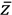,
se define como: 


OPERACIONES EN LOS NÚMEROS COMPLEJOS EN FORMA BINÓMICA

Propiedades de la adición y la multiplicación
3.2 Forma polar o trigonométrica: definición de módulo, de argumento y de igualdad de números complejos en forma polar. Operaciones en forma polar: multiplicación, división, potenciación y radicación.
FORMA POLAR O TRIGONOMETRICA

Diagrama de Argand o Plano complejo

OPERACIONES EN LOS NÚMEROS COMPLEJOS EN FORMA POLAR O TRIGONOMETRICA
3.3 Forma exponencial o de Euler. Operaciones en forma exponencial: multiplicación, división, potenciación y radicación.
FORMA EXPONENCIAL

Diagrama de Argand o Plano complejo
OPERACIONES EN LOS NÚMEROS COMPLEJOS EN FORMA EXPONENCIAL

3.4 Resolución de ecuaciones con una incógnita que involucren números complejos.


4. Polinomios.
4.1 Definición de polinomio. Definición y propiedades: adición, multiplicación de polinomios y multiplicación de un polinomio por un escalar.
POLINOMIO
Término o monomio

Términos semejantes: son aquellos términos o monomios cuya parte literal es la misma y sólo cambian sus coeficientes.

Binomio: es la suma algebraica de 2 términos o monomios.

Trinomio: es la suma algebraica de 3 términos o monomios.

Polinomio: Es una expresión algebraica que constituye la suma o la resta de un número finito de términos o monomios, que presenta la siguiente forma.
Donde los coeficientes son:
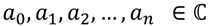
Y los términos del polinomio son:

Una forma simplificada de expresar un polinomio es utilizando el operador sumatoria o suma abreviada.

Grado de un polinomio: Corresponde al mayor exponente presente en los términos del polinomio.

OPERACIONES DE POLINOMIOS
Igualdad de polinomios

Adición de polinomios

Sustracción de polinomios

Multiplicación de polinomios

Propiedades de la adición y la multiplicación

4.2 División de polinomios: divisibilidad y algoritmo de la división. Teorema del residuo y del factor. División sintética.
ALGORITMO DE LA DIVICIÓN


TEOREMA DEL RESIDUO

TEOREMA DEL FACTOR

4.3 Raíces de un polinomio: definición de raíz, teorema fundamental del álgebra y número de raíces de un polinomio.
RAÍCES DE UN POLINOMIO
Conceptos equivalentes
TEOREMA FUNDAMENTAL DEL ÁLGEBRA
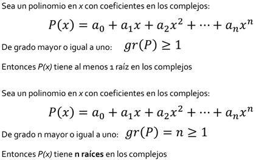
RESUMEN

4.4 Técnicas elementales para buscar raíces: posibles raíces racionales y regla de los signos de Descartes.
RAÍCES RACIONALES

REGLA DE LOS SIGNOS DE DESCARTES

TEOREMA DE LAS COTAS DE LAS RAICES REALES

RAICES IRRACIONALES

RAICES COMPLEJAS

5. Sistemas de ecuaciones.
5.1 Definición de ecuación lineal y de su solución. Definición de sistema de ecuaciones lineales y de su solución. Clasificación de los sistemas de ecuaciones lineales en cuanto a la existencia y al número de soluciones. Sistemas homogéneos, soluciones triviales y varias soluciones.
ECUACIÓN LINEAL
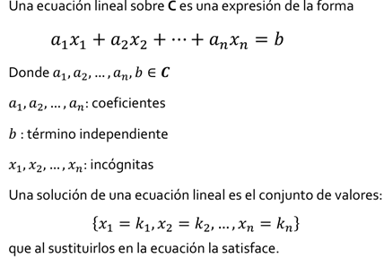

SISTEMAS DE ECUACIÓN LINEAL
Sistema de ecuaciones lineales: es un conjunto de al menos 2 ecuaciones lineales que contienen las mismas variables y que comparten la misma solución.
Un sistema de m ecuaciones lineales con n incógnitas sobre C es una expresión de la forma:


SISTEMAS HOMOGÉNEOS
Un sistema
de ecuaciones lineales es homogéneo cuando
todos sus términos independientes son iguales a cero, es decir: 

CLASIFICACIÓN DE LOS SISTEMAS DE ECUACIONES LINEALES
REPRESENTACIÓN MATRICIAL DE SISTEMAS DE ECUACIONES
5.2 Sistemas equivalentes y transformaciones elementales. Resolución de sistemas de ecuaciones lineales por el método de Gauss.
SISTEMAS EQUIVALENTES
Cuando dos sistemas de ecuaciones lineales tienen las mismas soluciones se dice que son equivalentes.
Uno de los métodos que se emplean para obtener las soluciones de un sistema de ecuaciones lineales se basa en el empleo de ciertas transformaciones, llamadas transformaciones elementales, que no alteran las soluciones del sistema; es decir, transformaciones que al aplicarse a un sistema dan como resultado un sistema equivalente.
Las transformaciones elementales pueden ser de tres tipos y consisten en:
i. Intercambiar dos ecuaciones
ii. Multiplicar una ecuación por un número diferente de cero
iii. Multiplicar una ecuación por un número y sumarla a otra ecuación, reemplazando esta última por el resultado obtenido
MÉTODO DE GAUSS
El procedimiento más cómodo para obtener las soluciones de un sistema de ecuaciones lineales es, tal vez, el conocido como método de Gauss.
Este método consiste en la eliminación consecutiva de las incógnitas con el propósito de llegar a un sistema que tenga forma escalonada.
Para llevar a cabo dicha eliminación sin alterar las soluciones del sistema, se recurre a las transformaciones elementales que hemos descrito
5.3 Aplicación de las ecuaciones lineales para la solución de problemas de modelos físicos y matemáticos.
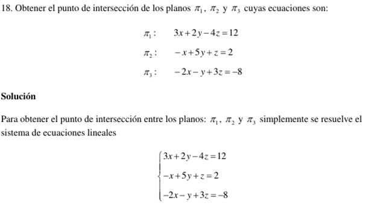


6. Matrices y determinantes.
6.1 Definición de matriz y de igualdad de matrices. Operaciones con matrices y sus propiedades: adición, sustracción, multiplicación por un escalar y multiplicación. Matriz identidad.
MATRIZ
Matriz: Es un conjunto de elementos (números, objetos, operadores, etc.) dispuestos en un arreglo bidimensional, de renglones y columnas, encerrados entre paréntesis o corchetes, que obedecen ciertas reglas algebraicas

TIPO DE MATRICES
Vector (matriz) renglón o vector (matriz) columna: Es una matriz formada por un solo renglón o una sola columna, respectivamente.

Matriz nula: Es una matriz donde todos sus elementos son ceros.

Matriz rectangular: Es aquella matriz cuyo número de renglones es diferente al número de columnas, es decir: 𝒎 ≠ 𝒎
Matriz cuadrada: Es aquella matriz cuyo número de renglones es igual al número de columnas: 𝒎 = n
 OPERACIONES ENTRE MATRICES
OPERACIONES ENTRE MATRICES
Sean dos matrices:
 Igualdad de matrices:
Dos matrices son iguales si son del mismo orden y si los elementos de la misma
posición son iguales en ambas, es decir:
Igualdad de matrices:
Dos matrices son iguales si son del mismo orden y si los elementos de la misma
posición son iguales en ambas, es decir:
Suma de matrices: Esta operación únicamente se puede realizar entre matrices del mismo orden. Para realizarla se suman elemento por elemento en sus posiciones correspondientes:
Diferencia de matrices: Esta operación únicamente se puede realizar entre matrices del mismo orden. Para realizarla se cambia el signo de cada uno de los elementos de la segunda matriz y posteriormente se realiza la suma de elemento por elemento en sus posiciones correspondientes.

Propiedades de la adición


 Multiplicación de
matrices por un escalar: Esta operación se realiza multiplicando
el escalar por cada uno de los elementos de la matriz, es decir:
Multiplicación de
matrices por un escalar: Esta operación se realiza multiplicando
el escalar por cada uno de los elementos de la matriz, es decir:
Propiedades por un escalar


Producto de matrices: Esta operación únicamente se puede realizar entre matrices donde el número de columnas de la primera matriz es igual al número de renglones de la segunda:

El elemento que se encuentra en la posición correspondiente al renglón i y la columna j de la matriz producto AB, se obtiene sumando los productos de los elementos del renglón i de la matriz A por sus elementos correspondientes en la columna j de la matriz B:
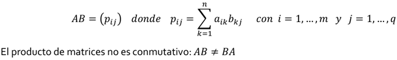
Matriz identidad: es una matriz cuadrada de orden n tal que todos los elementos de su diagonal principal son uno y los elementos fuera de ella son cero. Ejemplos
6.2 Definición y propiedades de la inversa de una matriz. Cálculo de la inversa por transformaciones elementales.
TIPOS Y PROPIEDADES
Matriz inversa: la matriz cuadrada de orden n 𝐴 tiene una matriz inversa 𝐴−1 la cual cumple que:

Una de las condiciones necesarias para que una matriz tenga inversa es que debe ser una matriz cuadrada. Además, la inversa deberá ser también cuadrada y del mismo orden que A
Matriz no singular: es aquella matriz 𝐴 que SÍ tiene una matriz inversa 𝐴−1
Matriz singular: es aquella matriz 𝐴 que NO tiene una matriz inversa 𝐴−1


6.3 Ecuaciones matriciales y su resolución. Representación y resolución matricial de los sistemas de ecuaciones lineales.
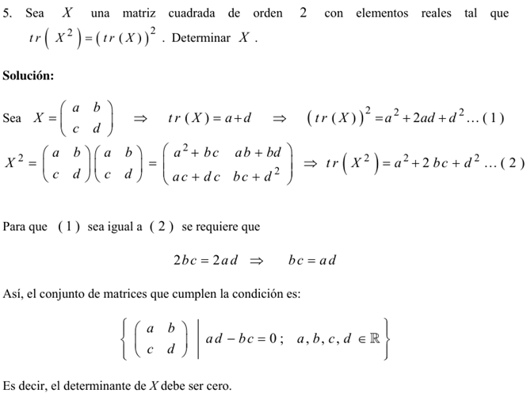
6.4 Matrices triangulares, diagonales y sus propiedades. Definición de traza de una matriz y sus propiedades.
TIPOS Y PROPIEDADES
 Traza de una matriz cuadrada: es la suma de los elementos de su diagonal
principal:
Traza de una matriz cuadrada: es la suma de los elementos de su diagonal
principal:

Matriz diagonal: es una matriz cuadrada en donde los elementos de su diagonal principal son diferentes de cero y los demás son ceros. Ejemplos:
Matriz triangular superior: es una matriz cuadrada en la cual todos los elementos por debajo de la diagonal principal son cero. Ejemplos:
Matriz triangular inferior: es una matriz cuadrada en la cual todos los elementos por arriba de la diagonal principal son cero. Ejemplos:

6.5 Transposición de una matriz y sus propiedades. Matrices simétricas, antisimétricas y ortogonales. Conjugación de una matriz y sus propiedades. Matrices hermitianas, antihermitianas y unitarias. Potencia de una matriz y sus propiedades.
TIPOS Y PROPIEDADES
Matriz transpuesta: la matriz transpuesta de A es la matriz en donde los renglones de A ahora son las columnas de la transpuesta, es decir:
Matriz conjugada: Sea A una matriz de números complejos, su matriz conjugada es aquella matriz en donde se reemplaza cada elemento por su respectivo complejo conjugado: Ā

Matriz simétrica: es aquella matriz cuadrada que es igual a su propia matriz transpuesta: 𝐴 = 𝐴𝑇
Matriz antisimétrica: es aquella matriz cuadrada que es igual al negativo de su propia transpuesta: 𝐴 = −𝐴𝑇
Matriz ortogonal: es aquella matriz cuadrada cuya matriz transpuesta es igual a su inversa: 𝐴𝑇 = 𝐴−1
El determinante de una matriz ortogonal es igual a 1
Matriz unitaria: es aquella matriz cuadrada cuya matriz conjugada transpuesta es igual a su inversa: 𝐴∗ = 𝐴−1
El determinante de una matriz unitaria es igual a 1
Matriz hermitiana: es aquella matriz cuadrada de números complejos que es igual a su propia transpuesta conjugada: 𝐴 = (Ā)𝑇 = 𝐴∗
Matriz antihermitiana: es aquella matriz cuadrada de números complejos que es igual al negativo de su transpuesta conjugada: 𝐴 = −(Ā)𝑇 = -𝐴∗
6.6 Definición de determinante de una matriz y sus propiedades. Cálculo de determinantes: regla de Sarrus, desarrollo por cofactores y método de condensación.
Determinante: es un número asociado a una matriz cuadrada que se puede obtener a partir de diferentes métodos: det (𝐴) = [𝐴]
Matriz no singular: es aquella matriz 𝐴 que SÍ tiene una matriz inversa 𝐴−1 (det (𝐴) ≠ 0)
Matriz singular: es aquella matriz 𝐴 que NO tiene una matriz inversa 𝐴−1 (det (𝐴) = 0)
PROPIEDADES DE LOS DETERMINANTES:
1) Si todos los elementos de una fila o columna de un determinante son nulos, el valor del determinante es nulo.
2) Si un determinante tiene dos filas o columnas proporcionales el determinante es cero.
3)  Si
todos los elementos de una fila o columna se multiplican por un escalar, el
valor del determinante queda multiplicado por dicho escalar
Si
todos los elementos de una fila o columna se multiplican por un escalar, el
valor del determinante queda multiplicado por dicho escalar
REGLA DE SARRUS
el determinante se obtiene de restar la multiplicación de los elementos de la diagonal principal de la matriz y la multiplicación de los elementos de la diagonal secundaria de la misma matriz.
El inconveniente es que la regla de Sarrus únicamente se puede utilizar para determinantes de matrices de 2x2 y 3x3.

MENORES Y COFACTORES
Menor: el menor o menor complementario de una matriz A es el determinante de alguna submatriz, obtenido de A mediante la eliminación de una o más de sus filas o columnas [𝑀𝑖𝑖].
Cofactor: el cofactor del elemento de la matriz [𝑎𝑖𝑖] se denota como [C𝑖𝑖] y está dado por:

6.7 Cálculo de la inversa por medio de la adjunta. Regla de Cramer para la resolución de sistemas de ecuaciones lineales de orden superior a tres.
MATRIZ INVERSA Y MATRIZ ADJUNTA
Matriz inversa: la matriz cuadrada de orden n 𝐴 tiene una matriz inversa 𝐴−1 la cual cumple que:

Una de las condiciones necesarias para que una matriz tenga inversa es que debe ser una matriz cuadrada. Además, la inversa deberá ser también cuadrada y del mismo orden que A.
Matriz no singular: es aquella matriz 𝐴 que SÍ tiene una matriz inversa 𝐴−1
Matriz singular: es aquella matriz 𝐴 que NO tiene una matriz inversa 𝐴−1

CÁLCULO DE LA INVERSA POR DETERMINANTES
Donde Adj(A) se le conoce como la matriz adjunta de A.
Matriz adjunta: la matriz adjunta Adj(A) de la matriz cuadrada de orden n 𝐴 es la matriz de cofactores de su transpuesta.
Esto significa que para encontrar la matriz adjunta primero se transpone la matriz original y después, con base en ella, se calcula la matriz de cofactores.
RESOLUCIÓN DE SISTEMAS DE ECUACIONES LINEALES
REGLA DE CRAMER
Se dice que un sistema con n ecuaciones lineales y n incógnitas es de Cramer cuando el determinante de la matriz de los coeficientes es distinto a cero. Así todo sistema de Cramer es consistente determinado, es decir, tiene solución única.

Con la regla de Cramer se tienen los siguientes casos:


7. Bibliografía
Arzamendi, P. Sergio Roberto. Cuaderno de ejercicios de álgebra.
León Cárdenas, Javier. Álgebra.
Lehmann, Charles H. Álgebra.
Solar G., Eduardo, y Speziale de G., Leda. Álgebra I.
Velázquez T., Juan. Fascículo de inducción matemática.
CÁLCULO Y GEOMETRÍA ANALÍTICA (1121)
Objetivo(s) del curso:
El alumno analizará los conceptos fundamentales del cálculo diferencial de funciones reales de variable real y del álgebra vectorial, y los aplicará en la resolución de problemas físicos y geométricos.
1. Secciones cónicas.
1.1 Definición de sección cónica. Clasificación de las cónicas.
CÓNICAS
En la Geometría Analítica las parábolas, elipses e hipérbolas, se llaman secciones cónicas, o cónicas, porque resultan de cortar un cono con un plano, como se muestra:

PARÁBOLAS
 Una parábola es el conjunto de puntos en el plano que
equidistan de un punto fijo F (llamado foco) y una recta fija (llamada
directriz), el punto a la mitad entre el foco y la directriz está sobre la
parábola y se llama vértice. La recta perpendicular a la directriz que pasa por
el foco se llama eje de la parábola.
Una parábola es el conjunto de puntos en el plano que
equidistan de un punto fijo F (llamado foco) y una recta fija (llamada
directriz), el punto a la mitad entre el foco y la directriz está sobre la
parábola y se llama vértice. La recta perpendicular a la directriz que pasa por
el foco se llama eje de la parábola.
En el siglo XVI Galileo demostró que la trayectoria de un proyectil disparado al aire con un ángulo respecto al suelo es una parábola. Desde entonces, las formas parabólicas se han usado en el diseño de los faros de automóviles, telescopios reflectores y puentes suspendidos.
ECUACIÓN ORDINARIA DE LA PARÁBOLA


ECUACIÓN DE LA TANGENTE A UNA PARÁBOLA

ELIPSES
Una elipse es el conjunto de puntos en un plano cuya suma de sus distancias a dos puntos fijos F1 y F2 es una constante. Estos dos puntos fijos se llaman focos (plural del lugar geométrico foco). Una de las leyes de Kepler es que las órbitas de los planetas en el sistema solar son elipses con el Sol en un foco.

Los puntos correspondientes (a, 0) y (-a, 0) se llaman vértices de la elipse y el segmento de recta que une los vértices se llama eje mayor. Para hallar las intersecciones con el eje y hacemos x = 0 y obtenemos y2 = b2, de modo que y =±b. El segmento de recta que une (0, b) y (0, -b) es el eje menor.
ECUACIÓN ORDINARIA DE LA ELIPSE


HIPÉRBOLAS
Una hipérbola es el conjunto de todos los puntos en un plano cuya diferencia de sus distancias a dos puntos fijos F1 y F2 (los focos) es una constante. Su ecuación se obtiene restando las distancias de un punto genérico (x, y) a los focos dados e igualando dicha diferencia a la constante.

ECUACIÓN ORDINARIA DE LA HIPÉRBOLA
Observe que la definición de una hipérbola es similar a la de una elipse; el único cambio es que la suma de las distancias se convirtió en una diferencia de distancias. De hecho, la deducción de la ecuación de una hipérbola es también similar a la que se dio antes para una elipse, entonces la ecuación de la hipérbola es:

donde c2 = a2 + b2. Observe que las intersecciones con el eje x son de nuevo ±a y los puntos (a, 0) y (-a, 0) son los vértices de la hipérbola. Pero si hacemos x = 0 en la ecuación 6 obtenemos y2 = -b2, lo cual es imposible, así que no hay intersección con el eje y. La hipérbola es simétrica respecto a ambos ejes.
Para dibujar una hipérbola, es muy útil dibujar primero sus asíntotas, que son las rectas discontinuas y = (b/a)x e y = -(b/a)x


 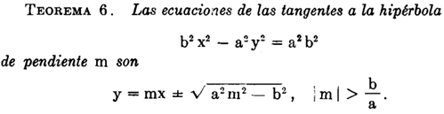
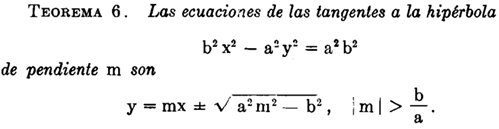
HIPÉRBOLAS EQUILÁTERA O RECTANGULAR Y CONJUGADAS

1.2 Ecuación general de las cónicas.
RESUMEN RELATIVO A LAS SECCIONES CÓNICAS.
La parábola, elipse e hipérbola se llaman secciones cónicas o, simplemente cónicas. La ecuación:

representa un lugar geométrico real, este debe ser una sección cónica con uno de sus ejes paralelo (o coincidente) con uno de los ejes coordenados, o bien uno de los casos excepcionales de un punto, dos rectas coincidentes, dos rectas paralelas o dos rectas que se cortan. Esto casos excepcionales se llaman también formas límite de las cónicas o cónicas degeneradas.
La elipse y la hipérbola tienen cada una un centro, se llaman cónicas centrales. La parábola, no teniendo centro, se llama cónica no central. La circunferencia puede considerarse como un caso especial de la elipse.

ECUACIÓN GENERAL DE SEGUNDO GRADO
Se estudia la ecuación general de segundo grado.
y con ayuda de la expresión B2 = -4AC, conocida como discriminante, se establece un criterio para determinar la clase de cónica que representa una ecuación de tal tipo.
 .
.
1.3 Identificación de los tipos de cónicas a partir de los coeficientes de la ecuación general y del indicador I=B2-4AC.
DISCRIMINANTE DE LA ECUACIÓN GENERAL


1.4 Ecuación de las cónicas en forma ordinaria.
ECUACIÓN DE LA CIRCUNFERENCIA - FORMA ORDINARIA
La circunferencia es el lugar geométrico de un punto que se mueve en un plano de tal manera que se conserva siempre a una distancia constante de un punto fijo de ese plano.


ECUACIÓN DE LA CIRCUNFERENCIA - FORMA GENERAL
Si desarrollamos la ecuaci6n ordinaria.

Ordenando los términos resulta:
DETERMINACIÓN DE UNA CIRCUNFERENCIA SUJETA A TRES CONDICIONES DADAS
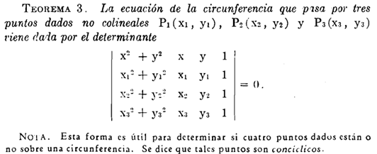
FAMILIAS DE CIRCUNFERENCIAS

EJE RADICAL
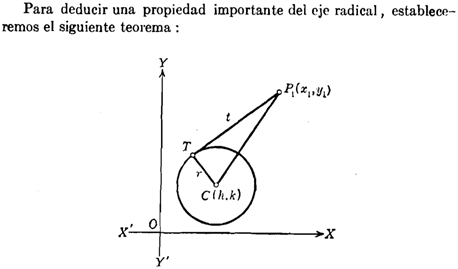


1.5 Rotación de ejes.
TRASLACIÓN DE LOS EJES COORDENADOS


ROTACIÓN DE LOS EJES COORDENADO

2. Funciones.
2.1 Definición de función real de variable real y su representación gráfica. Definiciones de dominio, de codominio y de recorrido. Notación funcional. Funciones: constante, identidad, valor absoluto.
FUNCIÓN REAL DE VARIABLE REAL
En Calculo, a una función cuyo dominio sea un subconjunto de los números reales, la llamaremos función de variable real. A una función cuyo contradominio sea un subconjunto de los reales, es decir, una función cuyos valores sean números reales, la llamaremos función real.
Así que con el término función real de variable real nos referiremos a una función cuyo dominio es un subconjunto de los números reales, que toma valores reales.
DISTINGUIR F(X) DE F
Vale la pena insistir en que el símbolo f(x) representa el valor de la función f en el punto x. En ocasiones, el símbolo f(x) puede representar una fórmula mediante la cual se definen los valores de la función f para todos los puntos x de su dominio o para los puntos de algún subconjunto de su dominio, en este caso pudiéndose tener diferentes fórmulas para diferentes subconjuntos, pero para puntos particulares x no olvidemos que f(x) representa un número.
El símbolo f(x) fue introducido por el matemático suizo Leonhard Euler (1707-1783), quizá el más prolífico de todos los tiempos. Es seguro que Euler no imaginó la enorme utilidad que tendría su notación. Además de que, con esta notación, no tenía la intención de distinguir entre lo que es la función f y su valor f(x) en un punto arbitrario x, pues en su época las funciones no se concebían en la forma en la que lo hacemos ahora. En aquella época, las funciones eran las fórmulas mismas, las cuales, en la actualidad, sólo son un recurso para definirlas, ni siquiera se permitían tener funciones definidas por varias fórmulas, mucho menos se podían aceptar enunciados cien por ciento retóricos para definir las funciones, esto es posible hoy en día por el carácter general que ahora le concedemos al concepto de función.
Definiremos nuestras funciones mediante enunciados como el siguiente:
“Sea f la función dada por f(x) = . . .“
o mejor aún, simplificaremos este enunciado como
“Sea la función f(x) = . . .“
REPRESENTACIÓN GRÁFICA
La gráfica de una función f : X → Y es el conjunto de parejas ordenadas
{(x, f(x)) | x ∈ X} ⊂ X × Y
La gráfica de una función es un conjunto; es un subconjunto de un producto cartesiano. La gráfica está definida para todas las funciones en general, sin importar su naturaleza; en el caso particular de funciones de variable real con valores reales, es posible representar las parejas ordenadas (x, f(x)) mediante puntos en un plano, tomando como referencia un sistema de ejes coordenados. Entonces, para funciones reales de variable real, la gráfica admite una representación como conjunto de puntos del plano. En sentido estricto, la gráfica es un conjunto de parejas ordenadas de números reales, pero en este caso se identifica con un objeto geométrico, al cual podemos llamar gráfica geométrica de la función. Dado que la gráfica geométrica de una función es un excelente recurso para analizar, entender y explicar propiedades de la función, abusaremos del lenguaje y usualmente nos referiremos a ella sólo como la gráfica de la función.
Así pues, la gráfica de una función también será, entonces, un conjunto de puntos del plano; a dicho conjunto lo llamamos curva, independientemente del aspecto que tenga. Por ejemplo, hay curvas formadas por segmentos de rectas, en cuyo caso las llamamos curvas poligonales. También hay curvas formadas por líneas curvilíneas y segmentos de rectas o incluso por conjuntos de puntos más complicados.
EJEMPLOS


La gráfica como conjunto de puntos del plano es un objeto geométrico ideal; en ocasiones, no es posible dibujar dichos puntos o quizá no podemos ni siquiera imaginarlos. Por esta razón, el cálculo diferencial proporciona herramientas poderosas que nos ayuda a entender cómo es el aspecto de la gráfica geométrica de una función dada. Estas herramientas son recursos que nos permiten hacer estudios cualitativos de las gráficas como objetos geométricos. En principio, es imposible tener la gráfica geométrica de una función, debido a que, como se dijo antes, es un objeto ideal, pero en ocasiones podemos tener buenas aproximaciones geométricas de estos objetos matemáticos.
DOMINIO
Una función f es una regla que asigna a cada elemento x de un conjunto D exactamente un elemento, llamado f (x), de un conjunto E.
Usualmente consideramos funciones para los cuales los conjuntos D y E son conjuntos de números reales. Al conjunto D se le denomina dominio de la función. El número f (x) es el valor de f en x y se lee “f de x”. El rango de f es el conjunto de todos los valores posibles de f (x) conforme x varía a través de todo el dominio. Un símbolo que representa un número arbitrario en el dominio de una función f se llama variable independiente. Un símbolo que representa un número en el rango de f se conoce como variable dependiente.
 Es útil pensar en una función como una máquina. Si x está
en el dominio de la función f, cuando x entra en la máquina, que se acepta como
una entrada, la máquina produce una salida f (x) de acuerdo con la regla de la
función. Así, podemos pensar el dominio como el conjunto de todas las posibles
entradas, y en el rango como el conjunto de todas las posibles salidas.
Es útil pensar en una función como una máquina. Si x está
en el dominio de la función f, cuando x entra en la máquina, que se acepta como
una entrada, la máquina produce una salida f (x) de acuerdo con la regla de la
función. Así, podemos pensar el dominio como el conjunto de todas las posibles
entradas, y en el rango como el conjunto de todas las posibles salidas.
Una forma de imaginar una función es con un diagrama de flechas. Cada flecha conecta un elemento de D con un elemento de E. La flecha indica que f (x) está asociada con x, f (a) está asociada con a, y así sucesivamente. El método más común para la visualización de una función es con su gráfica. Si f es una función con dominio D, entonces su gráfica es el conjunto de pares ordenados.
{(x, f(x)) | x ∈ D}
NOTACIÓN FUNCIONAL
Una sola letra como f (o g o F) se utiliza para nombrar una función. Entonces f(x), que se lee “f de x” o “f en x”, denota el valor que f asigna a x.

LAS FUNCIONES: CONSTANTE, IDENTIDAD Y VALOR ABSOLUTO
Una función de la forma f(x) = k, donde k es una constante (número real), se denomina función constante. Su gráfica es una recta horizontal.
Es decir, una función es constante si toma el mismo valor para todos los puntos de su dominio, independientemente de cuál sea éste. Así pues, una función f con dominio A ⊂ ℝ sea constante, significa que existe un número real c, tal que f (x) = c para todo x ∈ A.
En particular, un enunciado como “sea la función constante f (x) = c” lleva implícita la condición de que el dominio consiste en todos los reales. Por ejemplo, la función f (x) = 4, es una función constante, cuyo dominio son todos los reales. Esta función toma el valor 4 en cada real x.
La función f(x) = x se denomina función identidad. Su gráfica es una recta que pasa por el origen con pendiente 1. Con base en estas funciones sencillas, podemos construir muchas funciones importantes.

Cualquier función que pueda obtenerse a partir de las funciones constantes y la función identidad, mediante el uso de las operaciones de suma, diferencia y multiplicación, se denomina función polinomial.
Entre las funciones con más frecuencia que se utilizan como ejemplos, hay dos que son muy especiales: la función valor absoluto, y la función máximo entero, Las cuales están definidas como:
Función valor absoluto
Sea la función ABS: ℝ → ℝ, definida como

Esta función recibe el nombre de función valor absoluto, y su valor en todo real x, también será denotado por |x|, es decir:

Como sabemos, la raíz cuadrada √ sólo se aplica a números positivos o al cero. La raíz cuadrada de cero es cero, pero es una convención en matemáticas que el símbolo de la raíz cuadrada √, cuando se aplica a un número positivo, denota un real positivo. Recordemos que todo número positivo tiene dos raíces cuadradas, una positiva y una negativa, pero el símbolo √a se reserva para representar sólo la raíz positiva.
Dado el significado del símbolo √a , tenemos que, en general, no es válido escribir √x2 = x.
Esta igualdad sólo es válida cuando x es positiva o cero. Si x es negativa, tenemos √x2 = - x > 0.
De lo anterior podemos escribir:

con lo que tenemos otra manera de representar la función valor absoluto.

función máximo entero
║x║= el mayor entero que es menor o igual a x
Así, ∣ −3.1∣ =∣ 3.1∣ = 3.1, mientras que ⌊ −3.1⌋ = −4. La función valor absoluto es par, ya que ∣ −x∣ =∣ x∣. La función máximo entero no es par ni impar, como lo puede ver con base en su gráfica.
Con frecuencia recurrimos a las siguientes características especiales de estas gráficas. La gráfica de ∣ x∣ tiene un pico en el origen, mientras que la gráfica de ║x║ da un salto en cada entero.
2.2 Funciones inyectivas, suprayectivas y biyectivas.
Las funciones se clasifican en inyectivas, suprayectivas y biyectivas dependiendo de cómo relacionan los elementos del dominio (conjunto de entrada) con los del contradominio (conjunto de salida).
FUNCIONES INYECTIVAS (BIUNÌVOCA)
Consideremos las funciones f : ℝ → ℝ y g: ℝ → ℝ, definidas como

Las cuales poseen muchas diferencias cualitativas muy importantes entre ellas, la primera es que, para la función f, tiene pares de puntos dónde esta toma el mismo valor, por ejemplo f(-1) = 1 y f(1) = 1. En la cual incluso de hecho posee una gran infinidad de pares de puntos en donde f toma el mismo valor f(-a) = f(a) = a2. Por otro lado, en el caso de la función g esto no ocurre, es decir, que siempre que se tomen dos puntos diferentes de su dominio ℝ, digamos a y b, los valores f(a) y f(b) serán diferentes.
Una función con esta característica se dice que es inyectiva. La función g es inyectiva, la función f no.
Definición formal:
Una forma de saber si una función es inyectiva es visualmente en una gráfica, ninguna línea horizontal corta la función más de una vez.
FUNCIONES SUPRAYECTIVAS
Por otra parte, ahora observemos que las dos funciones, f y g, tienen como dominio y contradominio el conjunto ℝ; la función f sólo da valores no negativos, es decir, que hay elementos del contradominio que no son valores de la función f; por ejemplo, -1 no es un real que pueda ser resultado de la función f, es decir, no es un valor de f. Por su parte, la función g toma como valor todos los elementos de su contradominio.
Una función como g se dice que es suprayectiva, por no mientras que la función f no es suprayectiva.
Definición formal:
Dada una función f : A→B
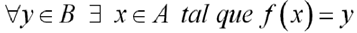
FUNCIONES BIYECTIVAS
Sea f : X → Y una función arbitraria.
1. Se dice que f es inyectiva o uno a uno, si puntos diferentes del dominio tienen imágenes diferentes; es decir, si siempre que se tenga x1, x2 ∈ X con x1 ≠ x2 se tiene f(x1) ≠ f(x2). Una manera equivalente de enunciar esta condición es: si x1, x2 ∈ X son tales que f(x1) = f(x2), entonces necesariamente x1= x2.
2. Se dice que f es suprayectiva o sobre, si cada elemento de su contradominio es imagen de al menos un elemento de su dominio. Es decir, si para cada y ∈ Y existe al menos un x ∈ X, tal que y = f(x).
3. Se dice que f es biyectiva, si es inyectiva y suprayectiva al mismo tiempo.

2.3 Igualdad de funciones. Operaciones con funciones. Función composición. Función inversa.
IGUALDAD DE FUNCIONES
Dada una función f : A→B
Para una función donde A es el primer conjunto (dominio), B el segundo conjunto (codominio) y f la regla de correspondencia, se denota por:
f : A→B
y se lee f es una función de A en B o bien f es una función que mapea A en B.
Se dice que 2 funciones f y g son iguales si tienen la misma regla de correspondencia y están definidas en el mismo dominio con mapeo en el mismo contradominio.
f : A→B
g : A→B
f = g
OPERACIONES CON FUNCIONES
Al igual que dos números a y b pueden sumarse para producir un nuevo número a + b, también dos funciones f y g pueden sumarse para producir una nueva función f + g.
Sumas, diferencias, productos, cocientes y potencias
Considere las funciones f y g como:
y suponiendo que f y g tienen sus dominios naturales entonces:

Hemos excluido al 0 del dominio de f/g para evitar la división entre cero.
También podemos elevar una función a una potencia. Con fn representamos la función que a cada x asigna el valor [f(x)]n. Así

Existe una excepción en la convención anterior sobre exponentes; a saber, cuando n = -1. Reservamos el símbolo f-1 para la función inversa que se estudiará después.
Por lo tanto, f-1 no significa 1/f.
El dominio de f + g, f - g, fg, f/g es la intersección (parte común) de los dominios de f y g (sin los números para los que g(x) = 0 en el cociente).
FUNCIÓN COMPOSICIÓN
La composición de funciones es una operación que, en general, se aplica a pares de funciones, sin importar su naturaleza, siempre y cuando las funciones cumplan con las condiciones apropiadas. Si f y g son dos funciones arbitrarias, para definir su composición g ○ f, vamos a requerir que los valores f(x) de la función f sean elementos del dominio de g.

La composición de funciones es una operación muy importante en matemáticas, pues hace crecer nuestros recursos para construir funciones, pero debe cuidarse que las funciones cumplan las condiciones que permita componerlas.
Definición
Sean X, Y y Z tres conjuntos y sean f : X → Y y g : Y → Z dos funciones. La composición de f y g es la función g ○ f :X → Z definida por (g ○ f) (x) = g (f(x)).
A g ○ f también la llamaremos la función compuesta por f y g. Observe que el hecho de que la función compuesta g ○ f esté definida, no significa que también esté definida la función f ○ g, para esta última se requiere que los valores g(x) de g sean elementos del dominio de f. Para que ambas funciones compuestas g ○ f y f ○ g estén definidas, se requiere Z = X, es decir, la funciones f y g son de la forma f : X → Y y g : Y → X.
Al principio del tema, fue bueno pensar en una función como una máquina. Que recibe x como entrada y produce f(x) como salida. Ahora pensamos en dos máquinas que se ponen una tras otra para producir una máquina más compleja; decimos que hemos compuesto la maquina g con la maquina f.

El dominio de f ○ g es el conjunto de todas las x en el dominio de g tales que g (x) está en el dominio de f. En otras palabras, (f ○ g) (x) está definida siempre que g (x) y f (g(x)) estén definidas.

FUNCIÓN INVERSA
Uno de los conceptos y recursos más poderosos para el estudio de las funciones es el de función Inversa.
2.4 Clasificación de funciones según su expresión: explícitas, implícitas, paramétricas y dadas por más de una regla de correspondencia.
FUNCIONES EXPLÍCITAS
FUNCIONES IMPLÍCITAS
FUNCIONES PARAMÉTRICAS
FUNCIONES CON MÁS DE UNA REGLA DE CORRESPONDENCIA
2.5 Funciones algebraicas: polinomiales, racionales e irracionales. Funciones pares e impares. Funciones trigonométricas directas e inversas y su representación gráfica.
FUNCIONES ALGEBRAICAS
FUNCIONES POLINOMIALES
Las funciones polinomiales son aquéllas definidas por expresiones de la forma.
donde a0, a1, · · ·, 0n son números reales y n es un entero no negativo. Si an ≠ 0, n es el grado de la función polinomial.
Esta familia de funciones incluye las funciones constantes y las funciones lineales (en particular incluye la función identidad).
En particular, f(x) = ax + b es una función polinomial de primer grado, o función lineal, y f(x) = ax2 + bx + c es una función polinomial de segundo grado, o función cuadrática.
Una función es lineal si es de la forma f(x) = ax + b, donde a y b son números reales. Por ejemplo, la función f (x) = -x + 2, es una función lineal, en este caso a = -1 y b = 2.

En general, la gráfica de una función lineal f(x) = ax + b, es una línea recta, con pendiente a y ordenada en el origen b. En cambio, la gráfica de la función identidad f(x) = x es una recta de pendiente 1, que pasa por el origen.
Un tipo de función polinomial más compleja que las constantes y las lineales lo constituyen las funciones cuadráticas. Estas funciones tienen la forma f(x) = ax2 + bx + c, donde a, b y c son números reales con a ≠ 0. Esta última condición es indispensable para que la función pueda llamarse cuadrática, en caso contrario será una función lineal. Por ejemplo, f (x) = x2 es una función cuadrática.
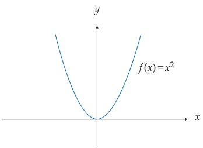
El vértice de la parábola es el punto (0, 0) y el eje de la parábola es el de las ordenadas. La gráfica de toda función cuadrática f(x) = ax2 + bx + c es una parábola, para determinar el vértice y el eje de esta parábola podemos escribir la función en la forma f(x) = a(x+ α)2 + β. En este caso, el vértice de la parábola es el punto (α, β) y el eje es la recta vertical es x = a.

Para escribir la función f(x) = ax2 + bx + c en la forma f(x) = a(x+ α)2 + β podemos recurrir a la conocida técnica de completar cuadrados, como se muestra a continuación.
Otros casos de funciones polinomiales son las funciones cúbicas.

donde a3 = 0, y las funciones cuárticas


FUNCIONES RACIONALES E IRRACIONALES
FUNCIONES PARES E IMPARES
FUNCIONES TRIGONOMÉTRICAS DIRECTAS E INVERSAS
2.6 La función logaritmo natural, sus propiedades y su representación gráfica.
FUNCIÓN LOGARITMO NATURAL
PROPIEDADES Y REPRESENTACIÓN GRÁFICA
2.7 La función exponencial, sus propiedades y su representación gráfica. Las funciones logaritmo natural y exponencial, como inversas. Cambios de base.
FUNCIÓN EXPONENCIAL
PROPIEDADES Y SU REPRESENTACIÓN GRÁFICA.
FUNCION LOGARITMO NATURAL Y EXPONENCIAL COMO INVERSAS
2.8 Las funciones hiperbólicas, directas e inversas.
FUNCIONES HIPERBÓLICAS
DIRECTAS E INVERSAS
2.9 Formulación de funciones como modelos matemáticos de problemas físicos y geométricos.
PROBLEMAS FÍSICOS
PROBLEMAS GEOMÉTRICO
3. Límites y continuidad.
3.1 Concepto de límite de una función en un punto. Interpretación geométrica.
3.2 Existencia de límite de una función. Límites de las funciones constante e identidad. Enunciados de teoremas sobre límites. Formas determinadas e indeterminadas. Cálculo de límites.
3.3 Definición de límite de una función cuando la variable independiente tiende al infinito. Cálculo de límites de funciones racionales cuando la variable tiende al infinito. Límites infinitos.
3.4 Obtención del límite de sen x, cos x y (sen x) / x cuando x tiende a cero. Cálculo de límites de funciones trigonométricas.
3.5 Concepto de continuidad. Límites laterales. Definición y determinación de la continuidad de una función en un punto y en un intervalo. Enunciado de los teoremas sobre continuidad.
4. La derivada y aplicaciones.
4.1 Definición de la derivada de una función en un punto. Interpretaciones física y geométrica. Notaciones y cálculo a partir de la definición. Función derivada.
4.2 Derivación de la suma, producto y cociente de funciones. Derivación de una función elevada a un exponente racional. Derivación de una función elevada a un exponente real y a otra función.
4.3 Derivación de la función compuesta. Regla de la cadena. Derivación de la función inversa.
4.4 Derivación de las funciones trigonométricas directas e inversas. Derivación de las funciones hiperbólicas, directas e inversas.
4.5 Definición de derivadas laterales. Relación entre derivabilidad y continuidad.
4.6 Derivación de funciones expresadas en las formas implícita y paramétrica.
4.7 Definición y cálculo de derivadas de orden superior.
4.8 Aplicaciones geométricas de la derivada: dirección de una curva, ecuaciones de la recta tangente y la recta normal, ángulo de intersección entre curvas.
4.9 Aplicación física de la derivada como razón de cambio de variables relacionadas.
4.10 Conceptos de función diferenciable y de diferencial, e interpretación geométrica. La derivada como cociente de diferenciales.
5. Variación de funciones.
5.1 Enunciado e interpretación geométrica de los teoremas de Weierstrass y de Bolzano.
5.2 Enunciado, demostración e interpretación geométrica del teorema de Rolle.
5.3 Demostración e interpretación geométrica del teorema del valor medio del cálculo diferencial.
5.4 Funciones crecientes y decrecientes y su relación con el signo de la derivada.
5.5 Máximos y mínimos relativos. Criterio de la primera derivada. Concavidad y puntos de inflexión. Criterio de la segunda derivada. Problemas de aplicación.
5.6 Análisis de la variación de una función.
6. Álgebra vectorial.
6.1 Cantidades escalares y vectoriales. Definición de segmento dirigido. Componentes escalares.
6.2 Concepto de vector como terna ordenada de números reales, módulo de un vector, igualdad entre vectores, vector nulo y unitario, vectores unitarios i, j, k.
6.3 Operaciones con vectores: Adición de vectores, sustracción de vectores.
6.4 Multiplicación de un vector por un escalar. Propiedades de las operaciones.
6.5 Producto escalar y propiedades.
6.6 Condición de perpendicularidad entre vectores.
6.7 Componente escalar y componente vectorial de un vector en la dirección de otro.
6.8 Ángulo entre dos vectores y cosenos directores.
6.9 Producto vectorial, interpretación geométrica y propiedades.
6.10 Condición de paralelismo entre vectores.
6.11 Aplicación del producto vectorial al cálculo del área de un paralelogramo. Producto mixto e interpretación geométrica.
6.12 Representación cartesiana, paramétrica y vectorial de las cónicas.
6.13 Curvas en el espacio. Representación cartesiana, paramétrica y vectorial.
7. Recta y plano.
7.1 Ecuación vectorial y ecuaciones paramétricas de la recta. Distancia de un punto a una recta.
7.2 Condición de perpendicularidad y condición de paralelismo entre rectas. Ángulo entre dos rectas. Distancia entre dos rectas. Intersección entre dos rectas.
7.3 Ecuación vectorial, ecuaciones paramétricas y ecuación cartesiana del plano.
7.4 Distancia de un punto a un plano. Ángulos entre planos.
7.5 Condición de perpendicularidad y condición de paralelismo entre planos.
7.6 Distancia entre dos planos.
7.7 Intersección entre planos.
7.8 Ángulo entre una recta y un plano.
7.9 Condición de paralelismo y condición de perpendicularidad entre una recta y un plano.
7.10 Intersección de una recta con un plano.
7.11 Distancia entre una recta y un plano.
8. Bibliografía.
Barnett, R. A., Ziegler, M. R., y Byleen, K. E. Trigonometría Analítica con Aplicaciones.
Castañeda, De I. P. Erik. Geometría Analítica en el espacio.
Kindle, Joseph H. Geometría Analítica.
Lehmann, Charles H. Geometría Analítica.
Oteyza de Oteyza, E. d. Geometría analítica y trigonometría.
Purcell y Varberg. Cálculo.
Rivera Figueroa, A. Cálculo y sus fundamentos para ingeniería y ciencias.
Stewart, James. Cálculo: Trascendentes tempranas.
REDACCIÓN Y EXPOSICIÓN DE TEMAS DE INGENIERÍA (1124)
Objetivo(s) del curso:
El alumno mejorará su competencia en el uso de la lengua a través del desarrollo de capacidades de comunicación en forma oral y escrita. Valorará también la importancia de la expresión oral y de la redacción en la vida escolar y en la práctica profesional. Al final del curso, habrá ejercitado habilidades de estructuración y desarrollo de exposiciones orales y de redacción de textos sobre temas de ingeniería.
1. Comunicación y lenguaje.
1.1 Proceso de comunicación: características, componentes y funciones.
COMPONENTES
En la Redacción y Exposición, el proceso de comunicación se describe como el acto en el cual un emisor transmite un mensaje a un receptor o destinatario utilizando un canal y un medio, ambos compartiendo el mismo código. El mensaje contiene información con un propósito específico situado en entorno donde se desarrolla la comunicación (contexto).
Sin embargo, a veces puede presentarse interferencias o ruido durante el proceso, lo cual puede impedir que la comunicación se realice eficazmente.
La finalidad principal del lenguaje es la comunicación.
FUNCIONES
Hilda Basulto distingue las funciones del lenguaje como:
Informar
Transmitir datos o conocimiento.

Enseñar
Facilitar el aprendizaje o comprensión.

Un buen plan didáctico equivale a un buen plan de comunicación
Ø Conocer a los receptores y tratar de adaptarse a sus requerimientos.
Ø Promover su interés para recibir gustosamente la enseñanza.
Ø Adaptar el código comunicativo a las posibilidades receptivas de los alumnos.
Ø Graduar los temas, de los más fáciles a los más difíciles.
Ø Presentar los conocimientos abstractos o generales junto con ejemplos o aplicaciones.
Persuadir o Mover a la acción
Influir en las opiniones, actitudes o comportamientos.

Atraer o Expresar emociones
Captar la atención del receptor para lograr una interacción efectiva o comunicar sentimientos y estados de ánimo.

CARACTERÍSTICAS
· Interactividad: Permite un intercambio de información entre emisor y receptor.
· Dinámico: Puede adaptarse a diferentes contextos y situaciones.
· Bidireccionalidad: Existe la posibilidad de una respuesta del receptor.
· Sistemático: Involucra elementos definidos que trabajan en conjunto.
1.2 Lenguaje: definición, tipos y características.
DEFINICIÓN
El lenguaje se define como un sistema de símbolos y signos convencionales que son aceptados y usados individual y socialmente, con el fin de comunicar ideas, sentimientos y conocimientos. Se clasifica en:
- Lenguaje natural o articulado: Expresado en lenguas. La lengua es un sistema, convencional, social, económico y estructural. Representa la combinación arbitraria y convencional de signos que un grupo social o una comunidad ha adoptado para interactuar verbalmente El habla es la experiencia lingüística creativa e individual que cada hablante realiza de su lengua.
- Lenguaje artificial o formal: Creado con propósitos específicos s un sistema lingüístico construido por uno o más individuos, sobre la base de lenguas históricamente existentes, con validez y difusión universal, es decir, como posibles instrumentos de comprensión internacional, por encima de los idiomas nacionales. (e.g., lenguajes de programación).
- Lenguaje corporal: Uso de gestos y posturas para transmitir mensajes.
- Lenguaje visual: Comunicación mediante imágenes, gráficos o símbolos.
- Lenguaje artístico: Expresión de ideas y emociones a través de formas como la música, pintura o danza.
CARACTERÍSTICAS
- Arbitrariedad: Los signos utilizados no tienen una relación intrínseca con lo que representan.
- Convencionalidad: Es un sistema aceptado socialmente.
- Creatividad: Permite la generación de mensajes nuevos e innovadores.
- Sistematicidad: Está regido por reglas y estructuras gramaticales.
- Universalidad: Es una capacidad propia de todos los seres humanos.
1.3 Relación entre lenguaje, lengua y habla.
 LENGUAJE
LENGUAJE
Es la capacidad universal y propia del ser humano para comunicarse mediante sistemas de signos. Engloba tanto lenguas naturales como lenguajes artificiales y es una facultad inherente a todos los humanos.
LENGUA
Es el sistema convencional de signos lingüísticos adoptado por una comunidad para comunicarse. Representa la materialización del lenguaje, transmitida de generación en generación.
HABLA
Es el uso individual y creativo de la lengua y representa la manifestación concreta del lenguaje en situaciones específicas. Depende de factores como la intención del hablante y el contexto de la comunicación.
1.4 Diferencia entre lengua oral y lengua escrita.
La comunicación oral es la que de manera innata y social desarrollan los humanos, la cual se realiza mediante dos procesos o destrezas comunicativas: la expresión oral y la comprensión auditiva. Asimismo, esta clase de comunicación tiene expresiones no verbales que se presentan simultáneamente con las verbales: kinésicos (gestos y lenguaje corporal), paralingüísticos (rasgos de la voz como tono, altura, velocidad, pausas, titubeos) y proxémicos (la posición, espacio o distancia que intencionalmente establecen entre sí los comunicantes).
La comunicación escrita es la que se realiza cuando usamos un medio visual o gráfico. A diferencia del medio oral, en el visual la expresión escrita es más lenta y elaborada aunque duradera y transportable. Para poder comunicarnos por escrito, se requiere del aprendizaje y desarrollo de dos destrezas: la comprensión lectora y la expresión escrita.
Entre las características de la escritura están:
Ø Es estática y permanente, depende de un espacio o soporte físico.
Ø Como proceso de comunicación, el emisor está lejos del receptor, a quien por lo general no conoce, salvo en la interacción por correspondencia, y actualmente vía internet.
Ø Permite una lectura repetida y un análisis detallado de la información.
Ø Presenta elementos únicos como una organización cuidadosa de las unidades del discurso (oraciones y párrafos), expresiones lingüísticas más compactas o también elaboradas.
Ø Presenta elementos únicos como la organización espacial, la puntuación, la acentuación, las mayúsculas, signos para expresar admiración o interrogación, y otros efectos gráficos.
1.5 Estructura y función gramatical de palabras y oraciones.
En el español, se distinguen las siguientes clases de palabras: sustantivo, verbo, adjetivo, adverbio, pronombres, artículos, preposiciones y conjunciones.
Las interjecciones actualmente no se consideran una clase de palabra, sino una forma abreviada que reemplaza una oración o frase para expresar estados de ánimo o afectivos. Siempre se escriben entre signos de exclamación y son propias del lenguaje coloquial: ¡ay!, ¡fuego!, ¡basta!
La gramática es fundamental para redactar correctamente. En palabras de Andrés Bello, "La gramática de una lengua es el arte de hablar correctamente, esto es, conforme al buen uso, que es el de la gente educada”, Se analiza:
CLASES DE PALABRAS

ESTRUCTURA DE LAS ORACIONES
Oración simple
Tiene un verbo conjugado y es independiente. Según el tipo de predicado, se clasifican en:


Oración compuesta
Se presenta una relación de dependencia entre varias oraciones. Puede tener dos o más verbos. Se clasifica en coordinadas y subordinadas. Las oraciones coordinadas expresan la unión de dos o más elementos con el mismo valor sintáctico e independientes entre sí, y pueden estar relacionadas con un nexo o sin él.
Juan lee, Pedro escribe.
Anita camina y Oiga corre.
En las oraciones subordinadas, de una oración principal dependen una o más subordinadas:
El profesor desea que sus alumnos aprendan.
Si apruebo el examen, obtendré la beca.
ORACIONES COORDINADAS
Se distinguen dos tipos de coordinación: por yuxtaposición, las oraciones se unen sin elementos de enlace, y por nexos coordinantes, las oraciones se unen mediante una palabra o frase prepositiva que las relaciona.
1. Coordinación por yuxtaposición copulativa:
La no violencia es la ley de los hombres; la violencia es la ley de los animales. (Gandhi)
(Se sobrentiende y)
2. Coordinación por yuxtaposición adversativa:
No tenía este filósofo el tonel de Diógenes, sí una mísera casilla. (Azorín)
(Se sobrentiende aunque)
3. Coordinación por yuxtaposición causal:
Apúrate, no queda tiempo. (Miró)
(Se sobrentiende porque)
4. Coordinación copulativa: Relación de suma o adición. Nexos coordinantes: y (e, ante i), ni.
Los soldados desfilan y la gente aplaude.
La policía interroga al testigo e investiga las pruebas.
No quiere estudiar ni trabajar.
5. Coordinación adversativa: Relación de contrariedad parcial o total entre dos enunciados.
a) Adversativa restrictiva: contrariedad entre enunciados, pero sin ser incompatibles:
María quiere intentarlo. pero no se atreve. (valor restrictivo)
María quiere intentarlo. mas (empero) no se atreve. (arcaísmos)
Estos jóvenes son listos, aunque no lo parecen. (valor concesivo y también adversativo)
b) Adversativa exclusiva: enunciados incompatibles:
No corre. sino vuela; No corre, sino que vuela;
No corre, que vuela; No lo dije yo. sino tú.
Frases conjuntivas y adverbios lexicalizados con valor restrictivo o exclusivo: sin embargo, no obstante, con todo, excepto, salvo, menos, antes bien, etc.
6. Coordinación disyuntiva: Relación de alternancia exclusiva de enunciados. Nexos: o (u, ante o).
Estudia o consigue un trabajo.
Hazlo voluntariamente u (hazlo) obligado por las circunstancias.
Esto es la guerra o (esto es) la destrucción. (valor de equivalencia)
Come o (y) bebe lo que quieras. (valor copulativo)
7. Coordinación distributiva: Relación de alternancia de los enunciados.
a) Con marca léxica: repetida al principio de cada oración marca el valor distributivo: ya ... ya, ora ... ora, sea ... sea, bien ... bien, ni ... ni (negación):
Ya estudia, ya trabaja.
Ni estudia, ni trabaja.
b) En forma yuxtapuesta: la coordinación entre enunciados se establece con palabras correlativas (pronombres y adverbios) puestas al principio de cada oración:
Unos nacen. otros mueren.
Allí se trabaja, aquí se descansa
ORACIONES SUBORDINADAS

FUNCIÓN DE ELEMENTOS GRAMATICALES
La oración está compuesta por sujeto y predicado. El sujeto es aquello de lo que se habla y el predicado es Jo que se dice del sujeto.
El sujeto tiene como núcleo nominal (N. NOM.), por lo general, a un sustantivo u otra clase de palabra sustantivada, como ya se ejemplificó anteriormente, un adjetivo, un pronombre, etc. A su vez, el núcleo nominal puede tener distintos modificadores (MD), como artículos, adjetivos, complemento adnominal, aposición.
El núcleo verbal del predicado será un verbo. En el predicado se pueden encontrar distintos tipos de complementos que caracterizan la acción o estado descritos por el verbo, entre ellos, los complementos directo, indirecto y circunstancial.
El complemento directo (CD) expresa lo que se dice del sujeto a través del verbo, o lo que recibe directamente la acción del verbo. El complemento indirecto (CJ) indica la persona o cosa personificada que recibe el beneficio, provecho, daño o perjuicio de la acción del verbo. El complemento circunstancial (CC) describe en qué circunstancias (tiempo, modo, lugar, compañía, cantidad) se realiza la acción verbal.

1.6 Ejercicios de comunicación lingüística.
Análisis de casos prácticos:
- Identificar los elementos de comunicación (emisor, receptor, mensaje, canal, código, contexto).
- Detectar posibles interferencias o ruido en el proceso comunicativo.
Redacción de mensajes:
- Crear textos cortos con propósito claro: informar, persuadir o atraer.
- Uso de conectores para garantizar coherencia y cohesión en el mensaje.
Prácticas de lenguaje oral:
- Ejercicios de pronunciación y articulación para mejorar la claridad del habla.
- Dinámicas grupales para desarrollar fluidez en la interacción verbal.
Interpretación de textos:
- Lectura comprensiva para identificar ideas principales y secundarias.
- Resumir el contenido del texto con vocabulario adecuado.
Construcción de diálogos:
- Creación de situaciones simuladas para practicar habilidades de interacción verbal.
- Uso correcto del registro y tono según el contexto y el interlocutor.
Resolución de problemas comunicativos:
- Plantear situaciones donde el mensaje no se entiende claramente.
- Proponer ajustes al mensaje para garantizar su efectividad.
2. Estructura del texto escrito.
2.1 Texto: estructura y propiedades (adecuación, coherencia y cohesión). Marcadores discursivos.
Un texto debe poseer las siguientes propiedades:
- Adecuación: Adaptarse al propósito comunicativo y al receptor.
- Coherencia: Presentar ideas relacionadas lógica y temáticamente.
- Cohesión: Relación gramatical y léxica entre las partes del texto, utilizando conectores o nexos como pronombres, adverbios y conjunciones.
Los marcadores discursivos funcionan como herramientas para enlazar y organizar ideas, por ejemplo:
- Causa: porque, puesto que.
- Oposición: pero, aunque.
- Secuencia: primero, después, finalmente
2.2 Párrafo: características y clasificación.
El párrafo es una unidad textual compuesta por oraciones interrelacionadas. Características principales:
- Coherencia: Las oraciones dependen unas de otras para su interpretación.
- Cohesión: Utilización de nexos y repetición para conectar ideas.
Clasificación de párrafos:
- Enumeración: Lista de propiedades de un objeto o tema.
- Secuencia: Describe pasos o eventos en orden cronológico.
- Comparación/contraste: Identifica similitudes y diferencias.
- Desarrollo de concepto: Expone una idea principal y la apoya con ejemplos.
- Causa-efecto: Presenta un evento seguido por sus causas o consecuencias.
2.3 Tipos de textos descriptivos-argumentativos: informe técnico, artículo científico, ensayo y tesis.
Informe técnico:
- Documento formal que presenta datos objetivos sobre un tema específico.
Artículo científico:
- Texto académico que comunica resultados de investigaciones.
Ensayo:
- Texto subjetivo que expone reflexiones personales sobre un tema.
Tesis:
- Documento extenso y estructurado que defiende una hipótesis con base en una investigación profunda
2.4 Ejercicios de análisis de estructura de textos.
incluyen:
- Identificar la jerarquía de ideas principales y secundarias.
- Clasificar tipos de párrafos según sus funciones.
- Reconocer conectores y marcadores discursivos utilizados en un texto.
3. La redacción.
3.1 Características de una buena redacción: claridad, precisión, estilo.
Claridad: Las ideas deben expresarse de forma comprensible para el lector.
Precisión: Uso de vocabulario adecuado, evitando ambigüedades.
Estilo: Es el toque personal del autor, pero debe ser funcional, claro y atractivo para el lector
3.2 Operaciones básicas para la configuración de textos: descripción, narración, exposición y argumentación.
Descripción: Representación detallada de personas, objetos o situaciones.
Narración: Relato de hechos reales o ficticios en un orden lógico o cronológico.
Exposición: Explicación de un tema de manera objetiva, con estructura clara y lógica.
Argumentación: Defensa de una opinión o tesis mediante razonamientos o pruebas
3.3 Errores y deficiencias comunes en la redacción.
· Uso incorrecto de vocabulario (barbarismos, solecismos, cacofonías).
· Construcciones gramaticales deficientes, como falta de concordancia.
· Ambigüedades o anfibologías que dificultan la comprensión
3.4 Reglas básicas de ortografía. Ortografía técnica, especializada y tipográfica.
· Ortografía técnica: Uso correcto de términos técnicos y científicos.
· Ortografía especializada: Normas específicas para ciertas disciplinas.
· Ortografía tipográfica:
o Uso adecuado de mayúsculas, minúsculas y puntuación.
o Respeto por normas internacionales en símbolos y unidades
3.5 Ejercicios prácticos de redacción.
Identificación de errores comunes en textos.
Creación de diferentes tipos de escritos: narrativos, descriptivos, argumentativos.
Corrección y mejora de textos previos para cumplir con los criterios de claridad y precisión.
4. La exposición oral.
4.1 Preparación del tema.
· Investigar y recopilar información confiable.
· Definir objetivos claros de la exposición.
· Estructurar el contenido de manera lógica: introducción, desarrollo y conclusión.
· Adaptar el contenido al público objetivo y al tiempo disponible
4.2 Esquemas conceptuales y estructuras expositivas.
Usa esquemas conceptuales como mapas mentales, diagramas y cuadros sinópticos para organizar ideas principales y secundarias.
Estructura el contenido con un inicio atractivo, puntos clave bien desarrollados y un cierre contundente que resuma las ideas principales
4.3 Técnicas expositivas.
· Vocalización clara: Pronunciación adecuada y tono variado.
· Lenguaje corporal: Uso de gestos naturales, postura firme y contacto visual.
· Control del ritmo: Evitar pausas largas o hablar demasiado rápido.
· Interacción: Involucrar al público con preguntas o ejemplos.
4.4 Problemas comunes de expresión oral (articulación deficiente, muletillas, repeticiones, repertorio léxico).
Articulación deficiente: Pronunciación incorrecta o falta de claridad.
Muletillas: Uso excesivo de palabras como “este”, “o sea”.
Repeticiones: Redundancia innecesaria que distrae al público.
Repertorio léxico limitado: Escasa variedad en el uso de vocabulario
4.5 Material de apoyo.
· Visuales: Presentaciones en diapositivas, gráficos, imágenes.
· Audiovisuales: Videos o grabaciones para complementar puntos clave.
· Manuales: Folletos o documentos para reforzar los conceptos.
· Demostraciones: Uso de ejemplos prácticos o modelos
4.6 Ejercicios prácticos de exposición oral.
Simulaciones de exposiciones frente a compañeros o mentores.
Ejercicios para mejorar el control del tono y ritmo.
Práctica de improvisación para responder preguntas o resolver problemas inesperados
5. Ejercicios de redacción de escritos técnicos sobre ingeniería.
5.1 Planeación del escrito.
La planeación de un texto técnico implica:
· Definición del objetivo: Clarificar la intención del escrito, respondiendo a ¿para qué? y ¿para quién?
· Delimitación del tema: Decidir sobre qué se escribirá.
· Selección y jerarquización: Identificar el contenido esencial y organizarlo según su importancia.
5.2 Acopio y organización de la información.
Fuentes confiables: Reunir datos de libros, artículos, entrevistas, y bases científicas.
Fichas de trabajo: Método para registrar información importante, ya sea textual, resumida o parafraseada, facilitando su consulta posterior.
5.3 Generación y jerarquización de ideas y argumentos. Mapas conceptuales.
Ideas principales y secundarias: Ordenar de lo más general a lo más específico.
Mapas conceptuales: Técnica para representar gráficamente la relación entre ideas, facilitando la comprensión y planificación.
5.4 Estructuración y producción del texto.
La estructura del texto debe incluir:
- Introducción: Presentar el tema y objetivos.
- Desarrollo: Exposición lógica y detallada de las ideas.
- Conclusión: Síntesis de lo discutido y resultados.
5.5 Aparato crítico: citas, sistemas de referencia y bibliografía.
Citas: Pueden ser textuales (entre comillas) o parafraseadas, siempre con referencias.
Bibliografía: Listar las fuentes consultadas en formato ordenado (alfabético por autor o título).
Sistemas de referencia: Usar normas específicas según el ámbito académico (e.g., APA, MLA).
5.6 Revisión y corrección del escrito.
Contenido: Revisar la coherencia, precisión y claridad de ideas.
Forma: Verificar gramática, ortografía, y estilo técnico.
Formato: Asegurar que cumpla con las normas requeridas para publicación
5.7 Versión final del trabajo escrito.
integración final: Incluir correcciones basadas en revisiones previas.
Presentación adecuada: Asegurar una estructura limpia, con uso correcto de elementos gráficos y tablas si son necesarios.
6. Ejercicios de exposición oral de temas de ingeniería.
6.1 Planeación de la exposición.
Definición del propósito: Establecer el objetivo principal de la exposición y su alcance.
Identificación del público: Conocer las características del público para adaptar el discurso.
Delimitación del tema: Seleccionar un tema específico, relevante y con un enfoque claro.
6.2 Acopio y organización de la información.
Fuentes confiables: Utilizar referencias académicas, datos técnicos, e investigaciones recientes.
Métodos de acopio: Crear fichas de trabajo o resúmenes para organizar los datos obtenidos.
Clasificación de la información: Agruparla en categorías según relevancia y conexión temática.
6.3 Generación y jerarquización de ideas y argumentos. Mapas conceptuales.
Jerarquización: Ordenar las ideas principales y secundarias de manera lógica.
Uso de mapas conceptuales: Representar visualmente las relaciones entre conceptos para facilitar la comprensión y planificación de la exposición
6.4 Estructuración del discurso.
El discurso debe estar dividido en:
- Introducción:
- Captar la atención.
- Presentar el tema y su importancia.
- Desarrollo:
- Exponer ideas principales y sus detalles técnicos.
- Usar ejemplos y analogías.
- Conclusión:
- Resumir los puntos clave.
- Reafirmar el propósito y abrir espacio para preguntas.
6.5 Utilización de apoyos visuales y otros recursos.
Apoyos visuales: Diapositivas, gráficos, tablas, diagramas.
Recursos adicionales:
- Videos demostrativos.
- Modelos físicos o prototipos
6.6 Presentación pública del tema.
Ensayo previo: Practicar frente a compañeros o en un ambiente similar al real.
Técnicas de expresión:
- Lenguaje corporal adecuado.
- Vocalización clara y control del ritmo.
Gestión del tiempo: Asegurar que cada parte del discurso se ajuste al tiempo estipulado
7. Bibliografía.
CUAIRÁN RUIDIAZ, María, FIEL RIVERA, Amelia Guadalupe - Elaboración de textos didácticos de ingeniería.
QUÍMICA (1123)
Objetivo(s) del curso:
El alumno aplicará los conceptos básicos para relacionar las propiedades de las sustancias en la resolución de ejercicios; desarrollará sus capacidades de observación y de manejo de instrumentos.
1. Estructura atómica.
1.1 Importancia de la química en las ingenierías.
QUÍMICA
La Química es una de las ciencias fundamentales más influyentes en el desarrollo y progreso de las ingenierías. Su impacto se manifiesta en la capacidad de los ingenieros para comprender y manipular materiales, procesos y reacciones a nivel molecular, lo que resulta esencial para resolver problemas complejos en una amplia variedad de campos.
La relación entre la química y la ingeniería no es meramente académica, sino que se traduce directamente en avances tecnológicos que han transformado la sociedad moderna. Desde la construcción de infraestructuras hasta la creación de tecnologías avanzadas, la química desempeña un papel crucial como base teórica y práctica.
En la ingeniería civil, por ejemplo, la química ha sido vital para el desarrollo de materiales de construcción más resistentes y duraderos. El concreto, uno de los materiales más utilizados en el mundo, se beneficia enormemente de los avances químicos.
La comprensión de las reacciones de hidratación del cemento y la interacción con aditivos permite ajustar las propiedades del concreto, como su resistencia, tiempo de fraguado y durabilidad. Además, los tratamientos químicos para proteger estructuras contra la corrosión y los efectos del medio ambiente son esenciales para garantizar su longevidad. En este contexto, la química no solo optimiza procesos de construcción, sino que también contribuye a la sostenibilidad al permitir el uso de materiales reciclados y la reducción de emisiones de dióxido de carbono.
La ingeniería mecánica también encuentra en la química una herramienta indispensable, especialmente en el diseño y fabricación de máquinas y estructuras. Los tratamientos térmicos y químicos de los metales, como el templado, el recocido y el nitrurado, se utilizan para modificar las propiedades mecánicas y térmicas de los materiales. Estos procesos, fundamentados en principios químicos, permiten que los ingenieros diseñen piezas capaces de soportar altas tensiones, temperaturas extremas y condiciones corrosivas. Además, la química de los lubricantes y refrigerantes es fundamental para garantizar el funcionamiento eficiente y seguro de sistemas mecánicos complejos.
En el ámbito de la ingeniería eléctrica y electrónica, la química se manifiesta en el diseño de materiales avanzados como semiconductores, superconductores y baterías. Los semiconductores, que forman la base de la tecnología moderna, dependen de una comprensión detallada de las propiedades químicas y electrónicas de los materiales.
El silicio, ampliamente utilizado en la fabricación de dispositivos electrónicos, es tratado químicamente para obtener propiedades específicas que permiten el flujo controlado de electricidad. Asimismo, las investigaciones químicas han permitido el desarrollo de baterías más eficientes y duraderas, como las baterías de iones de litio, que alimentan desde teléfonos móviles hasta vehículos eléctricos.
La ingeniería química, por su parte, es quizás el campo donde la relación entre la química y la ingeniería es más evidente. Los ingenieros químicos utilizan principios químicos para diseñar y optimizar procesos industriales que producen una amplia gama de productos, desde combustibles y plásticos hasta medicamentos y productos alimenticios.
La química permite a estos ingenieros modelar y simular reacciones químicas a gran escala, identificar condiciones óptimas de operación y garantizar la seguridad en plantas de producción. Además, la ingeniería química desempeña un papel clave en la transición hacia fuentes de energía más limpias, desarrollando biocombustibles, celdas de combustible y tecnologías para la captura y almacenamiento de carbono.
En la ingeniería ambiental, la química es esencial para comprender y mitigar los impactos humanos en el medio ambiente. Los ingenieros ambientales utilizan principios químicos para tratar aguas residuales, controlar emisiones contaminantes y diseñar procesos sostenibles.
La química analítica, en particular, permite detectar y cuantificar contaminantes en aire, agua y suelo, lo que es crucial para evaluar riesgos y garantizar la calidad ambiental. Además, la química verde, una disciplina emergente, se centra en el diseño de procesos y productos que minimizan el uso y la generación de sustancias peligrosas, promoviendo prácticas más sostenibles.
Otro campo donde la química tiene un impacto significativo es la ingeniería biomédica. Los avances en química orgánica y bioquímica han permitido el desarrollo de materiales biocompatibles, como polímeros para prótesis, implantes y dispositivos médicos.
Además, la química farmacéutica es fundamental para el diseño y producción de medicamentos, vacunas y sistemas de liberación controlada de fármacos. Los ingenieros biomédicos, al aplicar conocimientos químicos, contribuyen a mejorar la salud y calidad de vida de las personas mediante innovaciones que integran química, biología y tecnología.
En la ingeniería de materiales, la química es la base para el diseño de nuevos materiales con propiedades específicas. Los materiales compuestos, por ejemplo, combinan polímeros, metales y cerámicas para crear estructuras ligeras y resistentes, utilizadas en industrias como la aeroespacial, automotriz y deportiva.
Los avances en nanotecnología, que también tienen raíces en la química, permiten manipular materiales a escala atómica y molecular, dando lugar a propiedades únicas como la superhidrofobicidad, la conductividad térmica y eléctrica mejoradas, y la resistencia extrema.
La química también juega un papel en la ingeniería energética, especialmente en el desarrollo de tecnologías relacionadas con la generación, almacenamiento y distribución de energía. Los principios de la termoquímica son fundamentales para diseñar sistemas de generación de energía más eficientes, como las turbinas de gas y las plantas termoeléctricas.
Asimismo, la electroquímica impulsa avances en celdas solares, baterías y sistemas de almacenamiento de energía. La capacidad de entender y manipular reacciones químicas es esencial para enfrentar los desafíos globales relacionados con la energía y el cambio climático.
Finalmente, la química en las ingenierías no solo se limita al diseño y desarrollo de materiales y procesos, sino que también es clave en la formación de ingenieros con pensamiento crítico y habilidades de resolución de problemas. La capacidad de analizar y modelar fenómenos químicos proporciona a los ingenieros una ventaja competitiva para abordar desafíos interdisciplinarios.
1.2 Descripción de los experimentos: Thomson, Millikan, Planck, efecto fotoeléctrico, espectros electromagnéticos.
EXPERIMENTO DE THOMSON
Descubrimiento del electrón mediante el experimento con rayos catódicos, demostrando la relación carga/masa de las partículas subatómicas.
EXPERIMENTO DE MILLIKAN
Medición de la carga del electrón con su famoso experimento de la gota de aceite, confirmando la cuantización de la carga.
EXPERIMENTO DE PLANCK
Introducción del concepto de cuantos para explicar la radiación del cuerpo negro, que marcó el inicio de la teoría cuántica.
EFECTO FOTOELÉCTRICO
 El
efecto fotoeléctrico es un fenómeno fundamental que marcó el inicio de
la física cuántica, desafiando las explicaciones clásicas sobre la naturaleza
de la luz y su interacción con la materia. Este fenómeno fue descubierto por
Heinrich Hertz y explicado por Albert Einstein, quien recibió el Premio Nobel
de Física en 1921 por este trabajo. Este ocurre cuando ciertos materiales,
especialmente metales, emiten electrones al ser iluminados con luz de una
frecuencia adecuada. (Los medidores de luz que se utilizan en las cámaras
fotográficas se basan en el efecto fotoeléctrico.)
El
efecto fotoeléctrico es un fenómeno fundamental que marcó el inicio de
la física cuántica, desafiando las explicaciones clásicas sobre la naturaleza
de la luz y su interacción con la materia. Este fenómeno fue descubierto por
Heinrich Hertz y explicado por Albert Einstein, quien recibió el Premio Nobel
de Física en 1921 por este trabajo. Este ocurre cuando ciertos materiales,
especialmente metales, emiten electrones al ser iluminados con luz de una
frecuencia adecuada. (Los medidores de luz que se utilizan en las cámaras
fotográficas se basan en el efecto fotoeléctrico.)
Descubrimiento y primeros estudios del efecto fotoeléctrico
El estudio de la luz y su naturaleza ha sido una preocupación constante en la historia de la física. Isaac Newton propuso que la luz estaba compuesta de partículas, mientras que otros científicos, como Thomas Young y James Clerk Maxwell, demostraron la naturaleza ondulatoria de la luz a través de fenómenos como la interferencia y la difracción. La teoría electromagnética de Maxwell consolidó la idea de que la luz era una onda electromagnética, capaz de propagarse en el vacío y transportar energía a través del espacio.
En 1887, Heinrich Hertz, mientras investigaba las ondas electromagnéticas predichas por Maxwell, observó un fenómeno que no encajaba en el marco de la teoría ondulatoria. Hertz descubrió que las chispas eléctricas saltaban con mayor facilidad entre dos electrodos metálicos cuando estos eran iluminados por luz ultravioleta.
Este hallazgo fue el primer indicio experimental del efecto fotoeléctrico, aunque en ese momento no se comprendía completamente su significado.
Posteriormente, Wilhelm Hallwachs y Philipp Lenard realizaron experimentos que mostraron que ciertos metales emitían electrones cuando eran iluminados por luz de alta frecuencia, como la ultravioleta. Esta emisión de electrones, conocida como fotoemisión, planteó serias dudas sobre la teoría clásica de la luz, que predecía que la energía de la luz debería depender de su intensidad, no de su frecuencia.
Crisis de la teoría clásica y la hipótesis cuántica
La teoría clásica, basada en el modelo ondulatorio de la luz, no podía explicar adecuadamente el efecto fotoeléctrico. Según esta teoría, aumentar la intensidad de la luz debería incrementar la energía de los electrones emitidos. Sin embargo, los experimentos mostraron que la energía de los electrones emitidos dependía únicamente de la frecuencia de la luz y no de su intensidad. De hecho, no importaba cuán intensa fuera la luz, si su frecuencia no superaba un umbral específico, no se emitían electrones.
Este enigma llevó a una crisis en la física clásica. La solución llegó en 1905, cuando Albert Einstein propuso una interpretación revolucionaria basada en la hipótesis cuántica de Max Planck. Planck había introducido en 1900 la idea de que la energía electromagnética se emite o absorbe en unidades discretas, o cuantos, para explicar la radiación del cuerpo negro. Einstein extendió esta idea, postulando que la luz no solo se comporta como una onda, sino que también está compuesta de partículas discretas de energía, que llamó fotones.
Explicación de Einstein acerca del fotón
Einstein propuso que cada fotón tiene una energía proporcional a la frecuencia de la luz, según la ecuación:

donde E es la energía del fotón, h es la constante de Planck (6.626×10−34 J⋅s), y f es la frecuencia de la luz.
Según esta teoría, cuando un fotón incide sobre la superficie de un metal, su energía se transfiere a un electrón. Si la energía del fotón es suficiente para superar la función trabajo (ϕ) del metal, que es la energía mínima necesaria para liberar un electrón, el electrón será emitido. La energía cinética máxima de los electrones emitidos está dada por la ecuación:
Esta ecuación explica varios aspectos experimentales del efecto fotoeléctrico:
- Existencia de una frecuencia umbral: Si la frecuencia de la luz es menor que un valor crítico (fumbral), no se emiten electrones, sin importar la intensidad de la luz. Esto se debe a que la energía de los fotones es insuficiente para superar la función trabajo.
- Dependencia de la energía de los electrones con la frecuencia: A mayor frecuencia de la luz, mayor será la energía cinética de los electrones emitidos. Esto contrasta con la predicción de la teoría clásica, que sugería que la energía de los electrones debería depender de la intensidad de la luz.
- Independencia de la energía de los electrones con la intensidad: Aumentar la intensidad de la luz solo incrementa el número de fotones incidentes y, por lo tanto, el número de electrones emitidos, pero no su energía.
- Emisión instantánea de electrones: Según la teoría ondulatoria, debería haber un retraso temporal mientras los electrones absorben suficiente energía para escapar del metal. Sin embargo, los experimentos mostraron que la emisión es prácticamente instantánea, lo que se explica fácilmente si cada fotón transfiere su energía de manera instantánea a un electrón.
Confirmación experimental y la constante de Planck
La interpretación de Einstein fue confirmada experimentalmente por Robert Millikan en 1914. Aunque Millikan era escéptico respecto a la teoría cuántica de Einstein, sus meticulosos experimentos demostraron que la relación entre la energía cinética máxima de los electrones y la frecuencia de la luz era lineal, tal como predecía la ecuación de Einstein.
El experimento típico del efecto fotoeléctrico involucra un tubo de vacío con un cátodo y un ánodo. La luz incide sobre el cátodo, liberando electrones, que son atraídos hacia el ánodo, generando una corriente eléctrica llamada fotocorriente. Aplicando un potencial de frenado (V0), se puede detener el flujo de electrones. El potencial de frenado está relacionado directamente con la energía cinética máxima de los electrones:

Una gráfica del potencial de frenado V0 en función de la frecuencia f de la luz da como resultado una línea recta, cuya pendiente es h/e, permitiendo la determinación experimental de la constante de Planck.
La dualidad onda-partícula
El efecto fotoeléctrico no solo proporcionó una explicación satisfactoria del comportamiento de la luz, sino que también llevó al desarrollo del concepto de dualidad onda-partícula. Este concepto, fundamental en la física cuántica, establece que la luz y otras formas de radiación electromagnética exhiben tanto propiedades ondulatorias como corpusculares, dependiendo del experimento que se realice.
Por ejemplo, fenómenos como la interferencia y la difracción demuestran la naturaleza ondulatoria de la luz, mientras que el efecto fotoeléctrico y la dispersión Compton revelan su comportamiento como partículas. Esta dualidad fue extendida por Louis de Broglie, quien postuló que no solo la luz, sino también las partículas materiales, como los electrones, poseen propiedades ondulatorias, dando origen a la mecánica cuántica ondulatoria.
Aplicaciones del efecto fotoeléctrico
El efecto fotoeléctrico no es solo un fenómeno teórico, sino que tiene múltiples aplicaciones prácticas en la tecnología moderna. Entre las más destacadas se encuentran:
1. Celdas fotoeléctricas y paneles solares: Utilizan el efecto fotoeléctrico para convertir la energía de la luz solar en electricidad. Los fotones inciden sobre materiales semiconductores, liberando electrones que generan una corriente eléctrica.
2. Fotodetectores y cámaras digitales: Los sensores de las cámaras digitales, como los CCD (dispositivos de carga acoplada), emplean el efecto fotoeléctrico para convertir la luz en señales eléctricas, que luego se procesan para formar imágenes digitales.
3. Visión nocturna: Los dispositivos de visión nocturna amplifican la luz disponible mediante el efecto fotoeléctrico. Los fotones que inciden sobre una superficie sensible liberan electrones, que son acelerados y amplificados para formar una imagen visible incluso en condiciones de baja iluminación.
4. Espectroscopía fotoelectrónica: Esta técnica se utiliza para estudiar la estructura electrónica de átomos y moléculas. Al medir la energía de los electrones emitidos por efecto fotoeléctrico, se puede obtener información detallada sobre los niveles de energía y las propiedades químicas de los materiales.
5. Astrofísica y exploración espacial: El efecto fotoeléctrico es fundamental en la detección de radiación cósmica y en la observación de fenómenos astrofísicos. Por ejemplo, los telescopios espaciales utilizan detectores basados en este efecto para capturar imágenes de alta resolución del universo.
ESPECTROS ELECTROMAGNÉTICOS
Análisis de las líneas espectrales de los átomos, mostrando que los electrones ocupan niveles de energía discretos.
1.3 Modelo atómico de Bohr y teoría de Broglie.
Modelo de Bohr: Propone que los electrones se mueven en órbitas fijas alrededor del núcleo y emiten o absorben energía al saltar entre niveles discretos. Explicó el espectro del hidrógeno, aunque tiene limitaciones para átomos más complejos.
Teoría de De Broglie: Introduce la naturaleza ondulatoria de las partículas subatómicas, postulando que los electrones tienen propiedades de onda y partícula, lo que lleva a la formulación de la mecánica cuántica.
1.4 Modelo atómico de la mecánica cuántica, números cuánticos y estructura electrónica.
El modelo cuántico describe los electrones en términos de funciones de onda (orbitales) y probabilidades de localización, reemplazando el concepto clásico de órbitas.
Los números cuánticos (principal, azimutal, magnético y de espín) definen las características de los electrones y sus configuraciones en los átomos.
La estructura electrónica determina propiedades químicas y físicas, como la reactividad y los estados de energía.
1.5 Diamagnetismo, paramagnetismo y ferromagnetismo.
Diamagnetismo: Materiales que generan un campo magnético débil en oposición a un campo externo aplicado. No tienen electrones desapareados.
Paramagnetismo: Materiales con electrones desapareados que se alinean débilmente con un campo magnético externo.
Ferromagnetismo: Materiales con dominios magnéticos alineados, capaces de mantener una magnetización permanente (e.g., hierro, níquel).
1.6 Dominios magnéticos y magnetización.
Los dominios magnéticos son regiones en un material donde los momentos magnéticos están alineados. En ausencia de un campo externo, los dominios suelen orientarse aleatoriamente.
La magnetización ocurre cuando un campo magnético externo alinea los dominios, y en algunos materiales (ferromagnéticos), esta alineación puede persistir incluso después de retirar el campo.
2. Periodicidad química.
2.1 Propiedades de los elementos: masa atómica, punto de ebullición, carácter ácido-base, punto de fusión, carácter metálico, densidad, radio atómico, radio iónico, energía de primera ionización, estructura cristalina, electronegatividad, conductividad térmica y conductividad eléctrica.
Masa atómica: Refleja el promedio ponderado de las masas de los isótopos de un elemento. Influye en las tendencias periódicas.
Punto de ebullición y punto de fusión: Dependen de la estructura electrónica y las fuerzas intermoleculares. Siguen patrones periódicos y varían según el grupo y el periodo.
Carácter ácido-base: Relacionado con la capacidad de los elementos para donar o aceptar protones, variando dentro de los grupos y períodos.
Carácter metálico: Tiende a disminuir de izquierda a derecha a través de un periodo y aumenta al descender en un grupo.
Densidad: Depende de la masa y el volumen atómicos, mostrando una relación compleja en la tabla periódica.
Radio atómico e iónico: El radio atómico disminuye en un periodo debido al aumento de la carga nuclear efectiva y aumenta en un grupo. Los radios iónicos dependen de la carga del ion.
Energía de primera ionización: Energía necesaria para eliminar un electrón, aumenta en un periodo y disminuye en un grupo.
Estructura cristalina: Determinada por el empaquetamiento de átomos o iones, con patrones específicos para metales y no metales.
Electronegatividad: Mide la tendencia de un átomo a atraer electrones en un enlace. Aumenta de izquierda a derecha en un periodo y disminuye en un grupo.
Conductividad térmica y eléctrica: Propiedades características de los metales, disminuyen en los no metales.
2.2 Analogías en las propiedades de los elementos para los miembros de un mismo periodo o de un mismo grupo.
Dentro de un mismo periodo: Las propiedades cambian de manera predecible debido a la adición de electrones en el mismo nivel de energía. Por ejemplo, la electronegatividad y la energía de ionización aumentan, mientras que el radio atómico disminuye.
Dentro de un mismo grupo: Los elementos comparten configuraciones electrónicas similares, lo que resulta en propiedades químicas comparables, como el carácter metálico o la acidez básica.
3. Enlaces químicos y fuerzas intermoleculares.
3.1 Teoría de enlace valencia.
Explica cómo los átomos comparten electrones para formar enlaces covalentes. Los orbitales atómicos de los átomos interactúan para formar un par compartido de electrones, estabilizando la molécula.
3.2 Enlaces químicos: enlaces covalentes puro, polar y coordinado.
Covalente puro: Se da entre átomos con electronegatividades similares. Los electrones se comparten equitativamente.
Covalente polar: Los electrones se comparten de manera desigual debido a diferencias en electronegatividad.
Coordinado: Un átomo dona ambos electrones del par compartido, mientras el otro no contribuye con electrones.
3.3 Enlace iónico.
Resultado de la transferencia completa de electrones de un átomo metálico a un no metálico, formando cationes y aniones que se atraen electrostáticamente.
3.4 Fuerzas intermoleculares entre moléculas diatómicas.
Incluyen fuerzas de dispersión de London, dipolo-dipolo y enlaces de hidrógeno. Determinan propiedades como el punto de ebullición y la solubilidad.
3.5 Estructuras de Lewis de moléculas sencillas.
Representaciones de las moléculas mostrando los electrones de valencia y las conexiones entre los átomos.
3.6 Teoría de repulsión de los pares electrónicos de la capa de valencia.
redice la geometría molecular considerando que los pares de electrones se repelen y buscan maximizar su separación.
3.7 Geometría molecular y polaridad con respecto a átomos centrales.
Determinadas por la disposición tridimensional de los átomos alrededor del átomo central y la distribución de la carga eléctrica.
3.8 Fases: sólida, líquida y gaseosa.
Se distinguen por el orden molecular y la energía cinética. La transición entre fases depende de la temperatura y presión.
3.9 Fenómenos de superficie: tensión superficial, capilaridad
· Tensión superficial: Fuerza que minimiza el área superficial de un líquido.
· Capilaridad: Capacidad de un líquido de ascender o descender en un tubo estrecho debido a fuerzas de adhesión y cohesión.
3.10 Disoluciones: diluidas, saturadas y sobresaturadas.
· Diluidas: Contienen poca cantidad de soluto en relación con el solvente.
· Saturadas: Contienen la máxima cantidad de soluto que puede disolverse.
· Sobresaturadas: Contienen más soluto que en una saturada a la misma temperatura.
3.11 Dispersiones coloidales.
Mezclas donde partículas diminutas están suspendidas en un medio continuo, sin sedimentarse.
3.12 Conductividad eléctrica de materiales iónicos en disolución.
Depende de la movilidad de los iones en el solvente. Los compuestos iónicos conducen electricidad al disolverse, liberando iones móviles.
4. Teoría del orbital molecular y cristaloquímica.
4.1 Teoría del orbital molecular para moléculas diatómicas.
Los orbitales moleculares se forman a partir de la combinación de orbitales atómicos. Existen orbitales de enlace, que estabilizan la molécula, y orbitales antienlaces, que la desestabilizan. Este modelo explica propiedades como la longitud y energía de enlace.
4.2 Teoría de las bandas.
Desarrollada para describir sólidos. En materiales metálicos, las bandas de conducción y valencia se superponen, permitiendo la libre movilidad de electrones. En semiconductores y aislantes, hay una brecha de energía entre estas bandas, afectando su conductividad eléctrica.
4.3 Enlace metálico.
Se basa en un "mar de electrones" deslocalizados que rodean núcleos metálicos. Esto explica propiedades como la conductividad eléctrica y térmica, ductilidad y maleabilidad de los metales.
4.4 Aislantes, semiconductores, conductores y superconductores. Aplicaciones.
· Aislantes: Materiales con una gran brecha de energía entre la banda de valencia y la de conducción, impidiendo la movilidad de electrones.
· Semiconductores: Tienen una brecha de energía pequeña, y su conductividad aumenta con la temperatura.
· Conductores: Como los metales, permiten el flujo de electrones libremente.
· Superconductores: Materiales que conducen electricidad sin resistencia a temperaturas críticas bajas. Usados en aplicaciones como trenes de levitación magnética.
4.5 Cristales: celdas unitarias, tipos de cristales.
Celdas unitarias: Son las unidades más pequeñas que, repetidas, forman una red cristalina. Se clasifican en cúbica, tetragonal, hexagonal, entre otras.
Tipos de cristales: Incluyen cristales iónicos (como el NaCl), covalentes (diamante), metálicos y moleculares (hielo).
5. Estequiometría.
5.1 Conceptos de mol y masa molar.
· Mol: Unidad fundamental que representa 6.022×1023 partículas, ya sean átomos, moléculas o iones.
· Masa molar: Masa de un mol de una sustancia, medida en g/mol. Es igual a la masa atómica o molecular promedio.
5.2 Relaciones estequiométricas: relación en entidades fundamentales, relación molar y relación en masa.
Relación en entidades fundamentales: Proporción de átomos o moléculas basada en ecuaciones balanceadas.
Relación molar: Proporción entre moles de reactivos y productos en una reacción.
Relación en masa: Conversión de moles a gramos usando la masa molar.
5.3 Tipos de recciones: redox y ácido-base.
Redox: Involucran transferencia de electrones; esenciales en baterías, corrosión y bioprocesos.
Ácido-base: Reacciones que implican transferencia de protones (H⁺), fundamentales en neutralizaciones.
5.4 Cálculos estequiométricos: reactivos limitante y en exceso, rendimientos teórico, experimental y porcentual.
Reactivo limitante: Reactivo que se consume primero, determinando la cantidad de producto.
Reactivo en exceso: Aquel que sobra después de completar la reacción.
Rendimiento teórico, experimental y porcentual: Proporción entre el producto real obtenido y el esperado.
5.5 La fase gaseosa y la ecuación del gas ideal.
La ecuación PV=nRT describe el comportamiento de los gases, donde P es presión, V volumen, n moles, R la constante de los gases y T temperatura.
5.6 Unidades de concentración: molaridad, porcentajes masa/masa, masa/volumen y volumen/volumen, fracción molar y partes por millón.
· Molaridad (M): Moles de soluto por litro de solución.
· Porcentajes masa/masa, masa/volumen y volumen/volumen: Indican proporciones en distintas unidades.
· Fracción molar: Relación de moles de un componente con respecto al total.
· Partes por millón (ppm): Proporción en trazas, usada en análisis ambientales y químicos.
6. Termoquímica y equilibrio químico.
6.1 Calor de una reacción química.
· Se refiere al cambio de entalpía (ΔH) asociado con una reacción química.
· Reacciones exotérmicas: Liberan calor (ΔH<0).
· Reacciones endotérmicas: Absorben calor (ΔH>0).
6.2 Ley de Hess.
Establece que el cambio de entalpía total de una reacción es independiente del camino tomado entre reactivos y productos.
Permite calcular ΔH de reacciones indirectamente, sumando los ΔH de pasos intermedios.
6.3 Constante de equilibrio de una reacción química.
Representa la relación entre las concentraciones de productos y reactivos en equilibrio.
Se expresa como Kc para concentraciones molares y Kp para presiones parciales en gases.
K>1: La reacción favorece
productos.
K<1: Favorece reactivos.
6.4 Principio de Le Chatelier.
Describe cómo un sistema en equilibrio responde a cambios en concentración, presión o temperatura:
· Aumentar la concentración de un reactivo favorece la formación de productos.
· Incrementar la presión favorece el lado con menos moles de gas.
· Cambios de temperatura afectan 𝐾 dependiendo si la reacción es exotérmica o endotérmica.
7. Electroquímica.
7.1 La electricidad y las reacciones químicas.
La electroquímica estudia la relación entre reacciones químicas y corrientes eléctricas, cubriendo fenómenos como las celdas electroquímicas y procesos redox.
7.2 Leyes de Faraday. Equivalente químico.
Las leyes de Faraday cuantifican la relación entre la cantidad de electricidad y la cantidad de sustancia transformada en un electrodo:
· Primera ley: La masa depositada es proporcional a la cantidad de electricidad.
· Segunda ley: La masa depositada depende del equivalente químico.
El equivalente químico se relaciona con la masa molar y la valencia del ion involucrado.
7.3 Potencial estándar. Serie de actividad.
El potencial estándar (E∘) mide la tendencia de un elemento a ganar o perder electrones en condiciones estándar.
La serie de actividad clasifica los elementos según su capacidad reductora u oxidante.
7.4 Procesos electroquímicos.
Incluyen la conversión de energía química en eléctrica (celdas galvánicas) y de energía eléctrica en química (electrólisis).
7.5 Galvanización.
Proceso para proteger metales recubriéndolos con una capa de zinc, que actúa como barrera contra la corrosión.
7.6 Electrodepositación.
Depósito de un metal en un electrodo mediante electrólisis, utilizado en la fabricación de componentes electrónicos y recubrimientos.
7.7 Corrosión. Inhibidores. Protección catódica.
· Corrosión: Degradación de metales por reacciones electroquímicas con el ambiente.
· Inhibidores: Sustancias que reducen la velocidad de corrosión.
· Protección catódica: Método que utiliza un ánodo sacrificial o una corriente eléctrica para proteger metales.
8. Bibliografía.
CHANG, Raymond - Química.
FUNDAMENTOS DE PROGRAMACIÓN (1122)
Objetivo(s) del curso:
El alumno resolverá problemas aplicando los fundamentos de programación para diseñar programas en el lenguaje estructurado C, apoyándose en metodologías para la solución de problemas.
1. Panorama general.
1.1 Evolución de la programación.
PROGRAMACIÓN
La Programación como disciplina comenzó formalmente con el desarrollo de las primeras computadoras en los años 40, destacándose los aportes de John von Neumann. Desde entonces, se han creado cientos de lenguajes de programación, que se clasifican en:
- Lenguajes estructurados: como PASCAL, C, BASIC y FORTRAN.
- Lenguajes orientados a objetos: como C++, SMALLTALK y JAVA.
- Lenguajes simbólicos: como LISP.
- Lenguajes lógicos: como PROLOG.
Estos lenguajes han evolucionado para hacer más eficiente la escritura, depuración y mantenimiento del código. La metodología estructurada (de arriba hacia abajo) facilita la comprensión y gestión de los programas.
EL ORIGEN DE LA PROGRAMACIÓN
El primer lenguaje de programación fue inventado por Joseph Marie Jacquard en 1801, el inventor del telar programable. Jacquard creó unas tarjetas programables que podían insertarse en el telar para leer los códigos que contenían las instrucciones y automatizar el proceso. Esto permite que cualquier persona con un telar y tarjetas perforadas pueda crear una variedad de diseños de tejidos sin convertirse en un experto en el campo.
En 1833, treinta años después, Charles Babbage crea la conocida como máquina diferencial, capaz de resolver no solo sumas y restas, sino también ecuaciones.
Ada Lovelace, una mujer formada únicamente en matemáticas (considerada una de las primeras programadoras), decidió traducir las memorias del matemático italiano Luigi Menabrea. Al hacerlo, elaboró a mano un lenguaje de programación que podía calcular la secuencia de Bernoulli con una máquina Bebáz, desde se momento creo el primer algoritmo informático en la historia de la programación (1842).
1936. En este año surgió un avance tecnológico con la máquina de Turing, inventado por Alan Turing, quien fue matemático y teórico informático que revolucionó el mundo de la informática. Esto demuestra que con la ayuda de algoritmos pueden resolver cualquier problema matemático.
En 1957 se desarrolló el primer lenguaje de programación real con muchas mejoras y mejoras funcionales, su creador fue John W. Backus, creó el primer lenguaje de programación de alto nivel, el primero utilizado por los programadores. El lenguaje utilizado es más cercano al lenguaje que conocemos.
FORTRAN (Formula Translating System) es el lenguaje de programación más antiguo que todavía se usa en la actualidad.
El lenguaje todavía se usa en las industrias automotriz, gubernamental, aeroespacial y de investigación. Por ejemplo, es muy efectivo para predecir el clima.
HISTORIA DE LOS LENGUAJES DE PROGRAMACIÓN
1959: COBOL
Cobol (Common Business Oriented Language) se encuentra detrás de la mayor parte de sistemas de transacciones de empresas, como los procesos de las tarjetas de crédito, telefonía, gobierno, señales de tráfico, entre otros.
Este lenguaje de programación, desarrollado por Grace Murray Hopper, es un lenguaje uniforme para transacciones empresariales. El objetivo de su creación era desarrollar un lenguaje que fuera compatible para cualquier ordenador.
1964: BASIC
Desarrollado por alumnos de Darmouth College, Basic fue diseñado como un lenguaje simplificado para aquellos que no contaban con grandes conocimientos técnicos o matemáticos.
Una versión modificada de Basic, elaborada por Bill Gates y Paul Allen, fue el primer producto de Microsoft. En 1977, Basic fue integrado en el Apple II para su puesta en marcha.
1969: C
El lenguaje de programación C se desarrolló entre 1969 y 1973, por Dennis Ritchie para los laboratorios Bell Telephone, con el objetivo de utilizarlos en el sistema Unix. C llegó a ser tan potente que gran parte del núcleo de Unix se reescribió con C. De hecho, en la actualidad, Linux sigue basado en C.
1970: PASCAL
Pascal se creó por Niklaus Wirth, que le puso en nombre en honor a Blaise Pascar, el inventor de las calculadoras matemáticas.
Este lenguaje se desarrolló como una herramienta de enseñanza y formación, aunque su uso es comercial. Por ejemplo, es el lenguaje de programación que se utiliza en Skype.
1983: C++
En los mismos laboratorios Bells, Bjarne Stroustrup modificó el lenguaje C, por lo que surgió C++. Este lenguaje de programación es uno de los más populares, y se encuentra en el Top Ten de los lenguajes de programación desde 1986. Hoy en día se utiliza en Firefox, Adobe PDF Reader y Office.
1991: PYTHON
Guido Van Rossum fue el creador de Python, el lenguaje de programación más mundialmente reconocido. Fue creado para resolver lenguajes en el lenguaje ABC y, hoy en día, se sigue utilizando con esta finalidad y también, para más usos. La Nasa, Google y Youtube son algunas de las empresas que lo utilizan.
1993: RUBY
Ruby fue creado por Yukihiro Matsumoto, que utilizó partes de sus lenguajes de programación preferidos: Perl, Smalltalk, Eiffel, Ada y Lisp. Ahora se utiliza por Basecamp.
1995: PHP, JAVA y JAVASCRIPT
Este lenguaje de programación fue desarrollado por Rasmus Lerdoff para reemplazar unos scripts de Perl utilizados para el mantenimiento de su web personal. En la actualidad PHP es parte de una arquitectura web integrada en veinte millones de sitios web. Facebook utiliza este lenguaje hoy en día.
En el mismo año, también se creó Java, por un grupo de trabajadores de Sun Microsystems, con el objetivo de poner en marcha los decodificadores para una televisión interactiva. Actualmente, Java está presente en más de mil millones de ordenadores en todo el mundo y, muchos sitios webs, no pueden funcionar sin Java.
Por otro lado, se desarrolló JavaScript. Aunque compartan parte del nombre Java y JavaScript no están relacionados, ya que tienen una semántica muy diferente. Este último fue creado por Brendan Eich, de Netscape y, hoy en día, de este lenguaje de programación depende AJAX.
2001: C# y VISUAL BASIC
La llegada de los 2000, llegaron nuevos programas de programación, como C# y Visual Basic. Junto a los años noventa, C# culmina como el mejor momento de la historia respecto a los lenguajes de programación. C# es uno de los lenguajes de programación más importantes para crear programas de todo tipo.
2009: GO (DE GOOGLE)
Se trata, nada más y nada menos, que el lenguaje de programación creado por Google. 2009, Go, de Google. Se inspira en C, pero es más complejo.
2012: KOTLIN
Hoy en día, este es uno de los lenguajes de programación de moda, no porque sea el más sencillo, sino que Google lo ha señalado como el lenguaje de programación óptimo para Android.
1.2 Beneficios de la programación (a la sociedad, a la industria, a la medicina, entre otros).
La programación ha transformado diversos campos, proporcionando herramientas para:
- Sociedad: automatización de tareas cotidianas.
- Industria: optimización de procesos productivos y gestión de recursos.
- Medicina: desarrollo de sistemas diagnósticos y control de equipos médicos.
Estos beneficios se basan en la capacidad de la programación para crear algoritmos y soluciones adaptadas a necesidades específicas.
1.3 Algoritmos en la solución de problemas y sus retos.
Los algoritmos son esenciales en la programación. Para ser efectivos deben cumplir con:
· Precisión: definir pasos claros y específicos.
· Determinismo: producir siempre los mismos resultados con los mismos datos de entrada.
· Finitud: tener una cantidad limitada de pasos.
Un algoritmo consta de tres módulos principales: entrada de datos, procesamiento de la solución y salida de resultados. La construcción de algoritmos requiere un análisis crítico y un razonamiento estructurado.
1.4 Explicar el propósito y el papel de los fundamentos de la programación en la ingeniería.
La programación se fundamenta en principios algorítmicos y estructurados que permiten:
- Resolver problemas complejos de manera sistemática.
- Representar soluciones mediante diagramas de flujo y pseudocódigo antes de implementarlas en un lenguaje de programación.
- Fomentar el desarrollo de habilidades críticas como análisis, síntesis y solución de problemas en el ámbito de la ingeniería
2. Resolución de problemas.
2.1 Definición, planteamiento y modelado del problema.
Definición
del problema
Resolver problemas requiere un análisis sistemático y una modelación
algorítmica para construir una solución general. La resolución de problemas
algorítmicos incluye:
2.1.1 Formular el problema.
Identificar los datos de entrada, salida y restricciones relevantes.
2.1.2 Analizar el problema.
Estudiar sus elementos esenciales para comprenderlo a fondo.
2.1.3 Diseñar una estrategia de búsqueda de la solución.
Establecer un plan claro para buscar la solución.
2.2 Algoritmos para la resolución del problema.
2.2.1 Definición y representación de algoritmos.
Un algoritmo es un conjunto finito de pasos ordenados que
lleva a la solución de un problema. Las principales características incluyen
precisión, determinismo y finitud.
Los algoritmos pueden representarse a través de:
- Pseudocódigo.
- Diagramas de flujo: Representación gráfica que detalla los pasos del algoritmo
2.2.2 Conversión del planteamiento del problema al algoritmo.
El proceso incluye convertir la comprensión del problema en pasos claros que pueden ser seguidos por una máquina. Esto generalmente comienza con pseudocódigo o diagramas de flujo y termina en un programa funcional.
2.3 Definición del modelo computacional.
2.3.1 Máquina de Von Neuman.
Arquitectura basada en el almacenamiento de datos y programas en una memoria unificada, fundamental en la mayoría de las computadoras modernas.
2.3.2 Máquina de Turing.
Modelo teórico que define las capacidades fundamentales de cálculo, utilizado para analizar la complejidad computacional de problemas
2.4 Refinamiento del algoritmo paso a paso.
2.4.1 Planteamiento de la solución del problema.
Crear una estructura inicial que abarque la solución general del problema.
2.4.2 Descomposición de la solución del problema en submódulos.
División en submódulos: Descomponer el problema en partes más manejables, facilitando su resolución.
2.4.3 Aplicación de las estructuras básicas de control: secuencial, condicional e iterativo.
Estructuras de control: Aplicar estructuras básicas como:
- Secuencial: Pasos en orden lineal.
- Condicional: Decisiones basadas en condiciones.
- Iterativo: Repetición de pasos hasta cumplir una condición.
3. Fundamentos para la construcción de código a partir del algoritmo.
3.1 Sintaxis básica y semántica.
Sintaxis: Reglas que determinan cómo escribir instrucciones válidas en el lenguaje de programación C.
Semántica: Relaciona estas reglas con el significado y propósito de las instrucciones escritas. Una estructura sintácticamente correcta puede carecer de sentido si no se sigue la semántica.
3.2 Variables, tipos, expresiones y asignación.
Variables: Almacenan valores que pueden cambiar durante la ejecución de un programa. Deben tener nombres representativos.
Tipos: Determinan la naturaleza del dato almacenado (enteros, reales, caracteres, cadenas, etc.).
Expresiones: Combinan operadores y variables para producir valores.
Asignación: Operación que almacena el resultado de una expresión en una variable.
3.3 Estructuras de control condicional e iterativo.
· Condicionales: Permiten decisiones en función de condiciones. Ejemplo: if-else.
· Iterativos: Repetición de bloques de código hasta que se cumpla una condición. Ejemplo: for, while.
3.4 Funciones y paso de parámetros.
Las funciones encapsulan bloques de código para ser reutilizados.
Los parámetros pueden pasarse por valor (se copia el dato) o por referencia (se manipula directamente la memoria original).
3.5 Descomposición estructurada.
Divide un problema en submódulos más pequeños y manejables.
Cada submódulo debe cumplir una función específica y debe integrarse fácilmente al sistema completo.
3.6 Manejo de E/S.
· Entrada: Recopila datos del usuario mediante funciones como scanf.
· Salida: Presenta información al usuario con funciones como printf.
3.7 Estrategias de depuración.
3.7.1 Tipo de errores.
· Sintácticos: Violaciones de reglas del lenguaje.
· Lógicos: Comportamiento inesperado a pesar de la sintaxis correcta.
· De ejecución: Ejemplo, división por cero.
3.7.2 Técnicas de depuración.
· Uso de depuradores para rastrear errores paso a paso.
· Inclusión de mensajes de salida para verificar valores intermedios.
· Pruebas unitarias de pequeños bloques del programa.
4. Paradigmas de programación.
4.1 Programación estructurada
Los paradigmas de programación son enfoques o estilos que guían la forma en que se desarrollan y estructuran los programas de software. Cada paradigma ofrece una perspectiva distinta para resolver problemas y es más adecuado según las características específicas del problema a abordar. A continuación, se detallan los principales paradigmas:
La programación estructurada es un paradigma que promueve la escritura de código de manera clara y ordenada, utilizando estructuras de control como bucles y condicionales, y evitando el uso de instrucciones de salto como goto. Este enfoque facilita la comprensión, mantenimiento y depuración del código. Lenguajes como C, Pascal y Fortran son ejemplos de lenguajes que soportan este paradigma.
4.2 Programación orientada a objetos.
La programación orientada a objetos (POO) organiza el código en "objetos" que representan entidades del mundo real, encapsulando tanto datos como comportamientos. Este paradigma facilita la reutilización y modularidad del código, permitiendo construir sistemas más complejos de manera más manejable. Lenguajes como Java, Python y C++ son ampliamente utilizados en POO.
4.3 Programación lógica.
La programación lógica se basa en la declaración de hechos y reglas, y la computación se realiza mediante la inferencia lógica. En este paradigma, se especifica qué se desea lograr, dejando al sistema la tarea de determinar cómo hacerlo. Prolog es uno de los lenguajes más representativos de este enfoque.
4.4 Programación paralela.
La programación paralela se centra en la ejecución simultánea de múltiples tareas o procesos para mejorar el rendimiento y la eficiencia, especialmente en sistemas con múltiples procesadores o núcleos. Este paradigma es esencial en aplicaciones que requieren procesamiento intensivo y busca reducir los tiempos de ejecución mediante la concurrencia.
4.5 Principales usos de los paradigmas para la solución de problemas.
Cada paradigma de programación es más adecuado según el tipo de problema a resolver:
- Programación Estructurada: Ideal para problemas bien definidos con flujos de control claros y secuenciales.
- Programación Orientada a Objetos: Adecuada para sistemas complejos que pueden modelarse mediante objetos interactuantes, como aplicaciones gráficas y sistemas de gestión.
- Programación Lógica: Útil en aplicaciones de inteligencia artificial, sistemas expertos y resolución de problemas que requieren inferencia lógica.
- Programación Paralela: Esencial en aplicaciones que demandan alto rendimiento, como simulaciones científicas, procesamiento de imágenes y análisis de grandes volúmenes de datos.
4.6 Nuevas tendencias.
La evolución de la tecnología ha dado lugar a nuevos paradigmas y enfoques en la programación:
- Programación Funcional: Enfatiza el uso de funciones puras y evita el estado mutable, facilitando la concurrencia y la prueba de programas. Lenguajes como Haskell y Scala son ejemplos de este paradigma.
- Programación Reactiva: Se centra en la propagación de cambios y la gestión de flujos de datos asíncronos, siendo útil en aplicaciones que requieren alta interactividad y respuesta en tiempo real.
- Programación Basada en Eventos: Utilizada en el desarrollo de interfaces de usuario y sistemas que responden a eventos externos, como clics de ratón o entradas de teclado.
5. Cómputo aplicado a diferentes áreas de la ingeniería y otras disciplinas.
5.1 Tendencia de desarrollo de software.
5.1.1 Software propietario.
Software propietario: Se refiere al software que es propiedad de una empresa o individuo, y su código fuente no está disponible al público para su modificación o distribución.
5.1.2 Software libre.
Software libre: este tipo de software es de uso, modificación y distribución gratuitos. El código fuente está disponible públicamente y cualquiera puede cambiarlo o mejorarlo.
5.2 Aplicaciones.
5.2.1 Ciencias físicas y de la ingeniería.
La informática se utiliza ampliamente en las ciencias físicas y la ingeniería para simulaciones, modelados y resolución de ecuaciones complejas que no se pueden realizar manualmente. Ayuda a crear modelos para sistemas, predecir comportamientos y probar teorías.
5.2.2 Ciencias médicas y de la salud.
La atención sanitaria se beneficia de las tecnologías informáticas para diagnóstico, imágenes médicas, gestión de datos de pacientes y desarrollo de dispositivos médicos. Permite avances en la investigación, la optimización del tratamiento y la medicina personalizada.
5.2.3 Leyes, ciencias sociales y del comportamiento.
El derecho y las ciencias sociales utilizan la informática para analizar grandes conjuntos de datos, realizar análisis estadísticos y modelar comportamientos sociales. Por ejemplo, los modelos predictivos se pueden aplicar en criminología, economía y sociología.
5.2.4 Artes y humanidades.
Las artes y las humanidades utilizan la informática para la creación de medios digitales, la preservación de arte, exposiciones virtuales e incluso procesos creativos basados en inteligencia artificial. Permite nuevas formas de expresión y análisis del patrimonio cultural.
5.2.5 Otras disciplinas.
Otras disciplinas que se benefician de la informática incluyen la educación, los negocios, la agricultura y las ciencias ambientales. El uso de software para el análisis de datos, la toma de decisiones y la automatización se extiende a diversos campos, mejorando la eficiencia y la innovación.
6. Bibliografía.
CAIRÓ, Osvaldo - Metodología de la Programación. Algoritmos, Diagramas de Flujo y Programas.
SEGUNDO SEMESTRE
ÁLGEBRA LINEAL (1220)
Objetivo(s) del curso:
El alumno analizará los conceptos básicos del álgebra lineal, ejemplificándolos mediante sistemas algebraicos ya conocidos, haciendo énfasis en el carácter general de los resultados, a efecto de que adquiera elementos que le permitan fundamentar diversos métodos empleados en la resolución de problemas de ingeniería.
1. Grupos y campos.
1.1 Operación binaria.
OPERACIÓN BINARIA
En el contexto del Álgebra Lineal, una operación binaria definida en un conjunto no vacío A, es una regla o criterio que asigna a cada par ordenado de elementos de A un único elemento llamado resultado, que pertenece al mismo conjunto A. Esta necesita el operador y dos operandos (argumentos) para que se calcule un valor. Un ejemplo es:
Operación Binaria Producto: Representando la operación por el signo ∘
Podemos expresar la operación:

Operador Binaria Suma: El operador de suma «+» de números naturales es un operador binario, porque requiere dos argumentos:
y tenemos que:

1.2 Estructuras de grupo y de grupo abeliano.
GRUPO
Estructura que poseen los sistemas formados por un conjunto no vacío y una operación binaria cuando dicha operación es asociativa, tiene elemento idéntico y TODO elemento del conjunto tiene inverso para la operación.
Sea G un conjunto no vacío y sea * una operación binaria definida en G. El sistema (G, *) tiene estructura de grupo si se cumplen las siguientes propiedades:
1. Cerradura: ∀ 𝑎, 𝑏 ∈ 𝐺 𝑎 ∗ 𝑏 𝜖 𝐺
2. Asociatividad: ∀ 𝑎, 𝑏, 𝑐 ∈ 𝐺 𝑎 ∗ (𝑏 ∗ 𝑐) = (𝑎 ∗ 𝑏) ∗ 𝑐
3. Existencia de elemento idéntico: ∃ 𝑒 ∈ 𝐺 𝑡𝑎𝑙 𝑞𝑢𝑒 𝑒 ∗ 𝑎 = 𝑎 ∗ 𝑒 = 𝑎, ∀𝑎 ∈ 𝐺
4. Existencia de elementos inversos: ∀𝑎 ∈ 𝐺, ∃ â 𝑡𝑎𝑙 𝑞𝑢𝑒 𝑎 ∗ â = â ∗ 𝑎 = 𝑒
GRUPO ABELIANO
Si a la definición de grupo se le aumenta la propiedad conmutativa de la operación, la estructura obtenida se conoce como grupo abeliano o grupo conmutativo.
Un grupo (G,*) se dice que es abeliano si:
∀ 𝑎, 𝑏 ∈ 𝐺 𝑎 ∗ 𝑏 = 𝑏 ∗ 𝑎
1.3 Estructura de campo.
Sea K un conjunto de por lo menos dos elementos, y sean +y* dos operaciones binarias definidas en K. El sistema (K,+,*) tiene estructura de campo si:
Para el sistema (K, +)
1) Cerradura
∀ 𝑎, 𝑏 ∈ 𝐾:
𝑎 + 𝑏 ∈ 𝐾
2) Asociatividad
∀ 𝑎, 𝑏, 𝑐 ∈ 𝐾:
𝑎 + (𝑏 + 𝑐) = (𝑎 + 𝑏) + 𝑐
3) Conmutatividad
∀ 𝑎, 𝑏 ∈ 𝐾
𝑎 + 𝑏 = 𝑏 + 𝑎
4) Existencia del elemento idéntico (cero del campo)
∀ 𝑎 ∈ 𝐾 ∃ 𝑒 ∈ 𝐾, tal que:
𝑒 + 𝑎 = 𝑎 + 𝑒 = 𝑎
5) Existencia de elementos inversos
∀ 𝑎 ∈ 𝐾 ∃ 𝑎� ∈ 𝐾, tal que:
â + 𝑎 = 𝑎 + â = 𝑒
Para el sistema (K, *)
6) Cerradura
∀ 𝑎, 𝑏 ∈ 𝐾:
𝑎 ∗ 𝑏 ∈ 𝐾
7) Asociatividad
∀ 𝑎, 𝑏, 𝑐 ∈ 𝐾:
𝑎 ∗ (𝑏 ∗ 𝑐) = (𝑎 ∗ 𝑏) ∗ 𝑐
8) Conmutatividad
∀ 𝑎, 𝑏 ∈ 𝐾:
𝑎 ∗ 𝑏 = 𝑏 ∗ 𝑎
9) Existencia del elemento idéntico para la segunda operación (unidad del campo)
∀ 𝑎 ∈ 𝐾∃ 𝑢 ∈ 𝐾, tal que
𝑢 ∗ 𝑎 = 𝑎 ∗ 𝑢 = 𝑎
10) Existencia de elementos inversos para la segunda operación (excepto para el elemento idéntico de la primera operación)
∀ 𝑎 ∈ 𝐾 𝑎 ≠ e, ∃ â, tal que
â ∗ 𝑎 = 𝑎 ∗ â = 𝑢
11) Distributividades
∀ 𝑎, 𝑏, 𝑐 ∈ 𝐾
𝑎 ∗ (𝑏 + 𝑐) = (𝑎 ∗ 𝑏) + (𝑎 ∗ 𝑐)
(𝑏 + 𝑐) ∗ 𝑎 = (𝑏 ∗ 𝑎) + (𝑐 ∗ 𝑎)
2. Espacios vectoriales.
2.1 Definición de espacio vectorial. Propiedades elementales de los espacios vectoriales. Subespacios.
2.2 Isomorfismos entre espacios vectoriales.
2.3 Combinación lineal. Dependencia lineal. Conjunto generador de un espacio vectorial. Base y dimensión de un espacio vectorial. Coordenadas de un vector respecto a una base ordenada. Matriz de transición.
2.4 Espacio renglón, espacio columna y rango de una matriz.
2.5 El espacio vectorial de las funciones reales de variable real. Subespacios de dimensión finita. Dependencia lineal de funciones.
3. Transformaciones lineales.
3.1 Definición de transformación. Dominio y codominio de una transformación.
3.2 Definición de transformación lineal. Los subespacios núcleo y recorrido de una transformación lineal. Caso de dimensión finita: relación entre las dimensiones del dominio, recorrido y núcleo de una transformación lineal.
3.3 Matriz asociada a una transformación lineal con dominio y codominio de dimensión finita.
3.4 Álgebra de las transformaciones lineales: definición y propiedades de la adición, la multiplicación por un escalar y la composición de transformaciones.
3.5 La inversa de una transformación lineal.
3.6 Efectos geométricos de las transformaciones lineales.
3.7 Definición de operador lineal. Definición y propiedades de valores y vectores propios de un operador lineal. Definición de espacios característicos. Caso de dimensión finita: polinomio característico, obtención de valores y vectores propios.
3.8 Matrices similares y sus propiedades. Diagonalización de la matriz asociada a un operador lineal.
4. Espacios con producto interno.
4.1 Definición de producto interno y sus propiedades elementales.
4.2 Definición de norma de un vector y sus propiedades, vectores unitarios. Definición de distancia entre vectores y sus propiedades. Definición de ángulo entre vectores. Vectores ortogonales.
4.3 Conjuntos ortogonales y ortonormales. Independencia lineal de un conjunto ortogonal de vectores no nulos. Coordenadas de un vector respecto a una base ortogonal y respecto a una base ortonormal. Proceso de ortogonalización de Gram-Schmidt.
4.4 Complemento ortogonal. Proyección de un vector sobre un subespacio. El teorema de proyección.
4.5 Mínimos cuadrados.
5. Operadores lineales en espacios con producto interno.
5.1 Definición y propiedades elementales del adjunto de un operador.
5.2 Definición y propiedades elementales de operador normal.
5.3 Definición y propiedades elementales de operadores simétricos, hermitianos, antisimétricos, antihermitianos, ortogonales y unitarios, y su representación matricial.
5.4 Teorema espectral.
5.5 Formas cuádricas. Aplicación de los valores propios y los vectores propios de matrices simétricas a las formas cuádricas.
6. Bibliografía
GROSSMAN - Álgebra lineal.
CÁLCULO INTEGRAL (1221)
Objetivo(s) del curso:
El alumno utilizará conceptos del cálculo integral para funciones reales de variable real y las variaciones de funciones escalares de variable vectorial respecto a cada una de sus variables, para resolver problemas físicos y geométricos.
1. Sucesiones y series.
1.1 Definición de sucesión. Límite y convergencia de una sucesión. Sucesiones monótonas y acotadas.
SUCESIÓN
Una sucesión de números reales es toda lista o colección ordenada infinita de números, de los cuales algunos, o todos ellos, pueden coincidir entre sí.
Una sucesión se distingue de un conjunto en dos aspectos. El primero, es que en una sucesión hay un orden; se trata de una colección ordenada, de modo que hay un primer elemento, un segundo, etcétera. El segundo es que la colección ordenada es infinita como lista, aunque no necesariamente como conjunto.
Una manera de escribir o describir una sucesión es mediante una tabla infinita, con lo cual queda explícito el orden.

El número del renglón superior indica la posición o el orden que ocupa el número correspondiente del renglón inferior. Este último es propiamente la sucesión. Los tres puntos suspensivos indican que se trata de una lista infinita.
Dada la propiedad de infinitud que tiene una sucesión, da entender que para toda posición que elijamos, debe ser posible determinar el elemento correspondiente.
Para representar en forma general una sucesión, emplearemos cualquier letra con subíndices consecutivos, de esta manera estamos representando el orden correspondiente:

Que una sucesión x1, x2, x3, … esté definida, significa que es posible determinar el valor de xn para todo entero positivo n. A cada sucesión hay asociada una función, digamos:
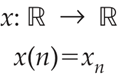
Conocer la sucesión equivale a conocer la función asociada; de hecho, muchos autores definen como sucesión a la función misma x: ℝ → ℝ. Se presume que con ello se define de manera rigurosa el concepto de sucesión. Si bien, el concepto de sucesión se precisa al entender ésta como función, en la práctica resulta útil interpretarla como una lista o una colección ordenada infinita.
La sucesión {a1, a2, a3, . . .} también se denota mediante

TEOREMAS IMPORTANTES SOBRE LÍMITES Y CONVERGENCIA
Teorema 1
Toda sucesión convergente es acotada.

Teorema 2
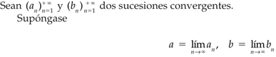

Una sucesión {an} tiene el límite L y lo expresamos como
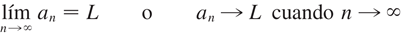
sí podemos hacer que los términos an se
aproximen a L tanto como se quiera tomando n lo suficientemente
grande. Si  existe, se dice que la sucesión
converge (o que es convergente). De lo contrario, se dice que la sucesión
diverge (o es divergente).
existe, se dice que la sucesión
converge (o que es convergente). De lo contrario, se dice que la sucesión
diverge (o es divergente).
SUCESIONES MONÓTONAS Y ACOTADAS
1.2 Definición de serie. Convergencia de una serie. Propiedades y condiciones para la convergencia.
1.3 Serie geométrica y serie p.
1.4 Series de términos positivos. Criterios de comparación y del cociente o de D'Alembert.
1.5 Series de signos alternados. Criterio de Leibniz.
1.6 Series de potencias.
1.7 Desarrollo de funciones en series de potencias. Serie de Maclaurin, de Taylor y desarrollo de funciones trigonométricas.
2. Las integrales definida e indefinida.
2.1 Concepto de sumas de Riemann. Concepto de integral definida. Interpretación geométrica y propiedades.
2.2 Enunciado e interpretación geométrica del teorema del valor medio del cálculo integral.
2.3 Definición de la integral indefinida a partir de la integral definida con el extremo superior variable. Enunciado y demostración del teorema fundamental de cálculo.
2.4 Determinación de integrales indefinidas inmediatas. Cambio de variable.
2.5 Integrales de funciones cuyo resultado involucra a la función logaritmo natural.
2.6 Regla de L'Hôpital y sus aplicaciones a formas indeterminadas en límites de funciones.
2.7 La integral impropia.
3. Métodos de integración.
3.1 Integración por partes.
3.2 Integrales de expresiones trigonométricas e integración por sustitución trigonométrica.
3.3 Integración por descomposición en fracciones racionales.
3.4 Aplicaciones de la integral definida al cálculo de: área en coordenadas cartesianas, longitud de arco en coordenadas cartesianas y polares, y volúmenes de sólidos de revolución.
4. Derivación y diferenciación de funciones escalares de varias variables.
4.1 Definición de funciones escalares de variable vectorial. Región de definición.
4.2 Representación gráfica para el caso de funciones de dos variables independientes. Curvas de nivel.
4.3 Conceptos de límites y continuidad para funciones escalares de variable vectorial de dos variables independientes.
4.4 Derivadas parciales e interpretación geométrica para el caso de dos variables independientes. Vector normal a una superficie. Ecuaciones del plano tangente y de la recta normal.
4.5 Derivadas parciales sucesivas. Teorema de derivadas parciales mixtas.
4.6 Función diferenciable. Diferencial total.
4.7 Función de función. Regla de la cadena.
4.8 Función implícita. Derivación implícita en sistemas de ecuaciones.
4.9 Concepto de gradiente. Operador nabla. Definición de derivada direccional. Interpretación geométrica y aplicaciones.
5. Bibliografía.
STEWART, James - Cálculo Trascendentes tempranas.
FÍSICA EXPERIMENTAL (1223)
Objetivo(s) del curso:
El alumno desarrollará su capacidad para elaborar modelos matemáticos y gráficos a partir de fenómenos físicos que le permitirán estudiar dichos fenómenos y determinar su comportamiento bajo diferentes condiciones, estimulando sus actitudes de observación, investigación y creatividad. Empleará sus habilidades en el manejo de instrumentos de medición y de los sistemas de unidades más usuales en ingeniería.
1. Física e ingeniería.
1.1 Definición de física y su campo de estudio.
FÍSICA
La física es una ciencia experimental; es una de las ciencias naturales fundamentales que se ocupa del estudio de las propiedades y el comportamiento de la materia, la energía, el espacio y el tiempo. A través de ella, se busca comprender cómo interactúan estos elementos entre sí, estableciendo relaciones cuantitativas y cualitativas. Es considerada la base de muchas otras ciencias, ya que proporciona los principios esenciales sobre los cuales se sustentan disciplinas como la química, la biología y la astronomía.
La física puede definirse como la ciencia que investiga los conceptos fundamentales de la materia, la energía y el espacio, así como las relaciones entre ellos.
El campo de estudio de la física abarca desde los fenómenos más microscópicos, como las interacciones entre partículas subatómicas, hasta los eventos macroscópicos, como el movimiento de los cuerpos celestes. Entre sus áreas de interés destacan la mecánica, la termodinámica, la óptica, el electromagnetismo y la física moderna, que incluye la teoría cuántica y la relatividad. Su carácter experimental permite formular y validar hipótesis mediante observaciones y experimentos controlados. A medida que evoluciona la tecnología, los límites de la física se amplían, dando lugar a nuevas preguntas e investigaciones en áreas como la nanotecnología y la astrofísica.
NATURALEZA Y METODOLOGÍA
La naturaleza de la física radica en su capacidad para analizar y predecir fenómenos naturales a través de un enfoque sistemático. En este sentido, el método científico es una herramienta esencial. Este método incluye varias etapas clave: la observación inicial de un fenómeno, la formulación de hipótesis para explicarlo, la experimentación para validar esas hipótesis y, finalmente, el establecimiento de teorías o leyes basadas en los resultados obtenidos. Sin embargo, la física no se limita al estudio empírico; también incluye una fuerte componente teórica, que permite modelar sistemas complejos y resolver problemas matemáticamente.
TEORÍA: Decir que una idea es una teoría NO implica que se trate de una divagación o de un concepto sin comprobar. Más bien, una teoría es una explicación de fenómenos naturales basada en observaciones y en los principios fundamentales aceptados.
Por otro lado, la física no solo se limita a describir fenómenos que ya conocemos. También tiene un carácter predictivo. A través de modelos matemáticos y simulaciones, los físicos son capaces de anticipar resultados o efectos que aún no han sido observados experimentalmente. Un ejemplo famoso es la predicción de la existencia del bosón de Higgs, una partícula subatómica cuya presencia fue confirmada décadas después de haber sido propuesta por la teoría del modelo estándar de la física de partículas.
En términos educativos, la física es una de las ciencias más exigentes, ya que requiere un entendimiento sólido de conceptos matemáticos avanzados, como el cálculo diferencial, integral y vectorial, la estadística y el álgebra lineal. Las matemáticas son, de hecho, el lenguaje universal de la física, ya que permiten expresar relaciones complejas de una manera precisa y cuantificable.
Cada estudiante que entra en un curso de física para principiantes debería contar ya con los requisitos y las habilidades necesarias para aprobarlo; por ende, si no lo hace se deberá a otras razones: falta de motivación, una excesiva carga de trabajo, un empleo externo, enfermedades o problemas personales.
Los consejos siguientes provienen de profesores con experiencia que han tenido éxito en los cursos para estudiantes de los primeros niveles de física.
• La responsabilidad del aprendizaje le corresponde al estudiante. El maestro es un mero facilitador, la escuela es un simple campus y el texto es sólo un libro. Asista puntualmente a las clases, preparado para los temas que se expondrán. Estudie antes el material y anote las preguntas que desee plantear al profesor.
• El aprendizaje oportuno es aprendizaje eficaz. Es mejor estudiar mínimo una hora cada día de la semana que estudiar 20 horas el sábado y el domingo. Después de cada clase o exposición emplee su hora libre más próxima para reforzar lo que ha aprendido de los temas presentados. Repase algunos ejemplos. Cuanto más tiempo deje pasar más olvidará de la clase y perderá más tiempo.
Si espera hasta el fin de semana necesitará al menos una hora simplemente para revisar y reconstruir la clase a partir de sus notas. Estudiar todo un poco antes del examen no funciona, mejor repase los problemas que ya haya resuelto y trabaje en libros otros semejantes.
• El aprendizaje cabal va más allá del salón de clases. A fin de retener y aplicar lo aprendido en el salón, es indispensable que resuelva problemas por su cuenta. Solicite la ayuda de otras personas, incluida la del profesor, después de haberse esforzado en contestar los problemas asignados. No hay sustituto para la participación activa en el pensamiento y en los procedimientos necesarios para resolver problemas.
• Repase las habilidades básicas. Las Matemáticas técnicas y comprensión lectora, se destacan por ser las habilidades que tal vez estén un tanto débiles o haya que pulir. Asegúrese de que entiende bien esos temas.
• Estudie o vea el plan de actividades y estudios. Procure estar enterado de los temas que se incluirán en los exámenes, cuándo se llevarán a cabo éstos y cómo influirán en la calificación final.
• Busque un compañero y pídale su número telefónico. Establezca un sistema de compañerismo donde cada uno informe al otro sobre las actividades de clase o de laboratorio a las que no haya asistido. Pida a esa persona que recoja los materiales impresos o digitales y las instrucciones que se den cuando usted no esté presente.
• La organización es la clave del verdadero aprendizaje. Mantenga al día una carpeta, dividida por secciones con sus respectivos títulos: “Material impreso recibido”, “Notas”, “Problemas”, “Exámenes calificados”, “Prácticas de laboratorio calificadas”, etc.
• Si tiene dificultades, pida ayuda cuanto antes. Hoy en día los estudiantes tienen a su alcance una gran cantidad de material de estudio que antiguamente sólo existía en sueños. Hay tutoriales asistidos por computadora, internet, Inteligencias Artificiales, guías de soluciones, manuales de resolución de problemas e incluso otros libros de textos que explican los mismos temas. Su profesor le indicarán los más apropiados para usted, pero usted es responsable de obtenerlos.
CAMPOS DE ESTUDIO DE LA FÍSICA
El campo de estudio de la física es extremadamente amplio y abarca desde los fenómenos más pequeños, como las interacciones de partículas subatómicas, hasta los más grandes, como la formación y evolución del universo. Esta amplitud se refleja en las múltiples ramas de la física, cada una de las cuales se centra en aspectos específicos del mundo natural. Algunas de estas ramas:
1. Mecánica: Es la rama que estudia el movimiento y la interacción de los cuerpos. Incluye la mecánica clásica, basada en las leyes de Newton, y la mecánica cuántica, que describe el comportamiento de partículas a nivel subatómico. La mecánica clásica encuentra aplicaciones en ingeniería estructural, diseño de maquinaria y construcción, mientras que la mecánica cuántica es esencial en la tecnología moderna, como los semiconductores y la computación cuántica.
2. Termodinámica: Examina las propiedades térmicas de los sistemas, como la transferencia de calor, la energía y el trabajo. Es crucial en disciplinas como la ingeniería mecánica, la climatología y la energía renovable. La termodinámica tiene aplicaciones prácticas en motores, refrigeradores y plantas de energía.
3. Electromagnetismo: Se centra en las fuerzas eléctricas y magnéticas, y en cómo interactúan con la materia. Esta rama ha sido fundamental para el desarrollo de tecnologías como la electricidad, la comunicación inalámbrica y la informática.
4. Óptica: Estudia la luz y los fenómenos relacionados con su propagación, reflexión, refracción e interferencia. La óptica tiene aplicaciones prácticas en dispositivos como cámaras, microscopios y telescopios, así como en tecnologías emergentes como la realidad aumentada.
5. Ondas y Acústica: La física de ondas y acústica estudia los fenómenos relacionados con la propagación de perturbaciones a través de un medio y el comportamiento del sonido. En términos generales, una onda es una oscilación que transfiere energía de un lugar a otro sin que haya un transporte neto de materia. La rama de ondas y acústica no solo abarca la teoría básica sobre las propiedades de las ondas, como frecuencia, longitud de onda, amplitud y velocidad, sino que también se centra en fenómenos complejos como la interferencia, la difracción y la resonancia. Estos conceptos son fundamentales para comprender fenómenos como la formación de ecos, la amplificación sonora en instrumentos y la propagación de ondas en medios no homogéneos.
6. Física Moderna: Incluye teorías más recientes como la relatividad y la mecánica cuántica. Esta rama ha revolucionado nuestra comprensión del universo al proporcionar explicaciones sobre el espacio-tiempo, la energía nuclear y la estructura fundamental de la materia. La física moderna también está en la base de innovaciones tecnológicas como la energía nuclear y los sistemas GPS.
7. Astrofísica y Cosmología: Exploran los fenómenos que ocurren a escala cósmica, incluyendo la formación de estrellas, galaxias y el origen del universo. Estas áreas combinan la física con la astronomía para responder preguntas fundamentales sobre la existencia y el destino del cosmos.
8. Física Aplicada: Se centra en el uso de principios físicos para resolver problemas prácticos en ingeniería, tecnología y medicina. Un ejemplo destacado es la física médica, que aplica conocimientos de radiación y mecánica para el diagnóstico y tratamiento de enfermedades.
RELEVANCIA EN LA SOCIEDAD
La física no solo tiene un impacto teórico, sino también práctico en la sociedad. Gracias a esta ciencia, se han desarrollado tecnologías que han transformado nuestra vida cotidiana, como la electricidad, los teléfonos móviles, los satélites y las computadoras. Además, la física ha sido instrumental en enfrentar desafíos globales, como la búsqueda de fuentes de energía sostenibles, el cambio climático y la exploración espacial.
Por otro lado, la física también juega un papel importante en la educación y la formación científica, ya que fomenta habilidades críticas como el razonamiento lógico, la resolución de problemas y la innovación. Estos atributos son esenciales para cualquier campo profesional en el siglo XXI, desde la investigación académica hasta la industria tecnológica.
1.2 Clasificación de la física: clásica y moderna.
La física, como una de las ciencias fundamentales, busca entender las leyes que rigen el comportamiento del universo desde las partículas más pequeñas hasta las estructuras más grandes del cosmos. Su clasificación en física clásica y física moderna surge de la necesidad de abarcar fenómenos que, por su naturaleza, requieren diferentes enfoques teóricos y experimentales.
FÍSICA CLÁSICA
La física clásica se desarrolla principalmente desde el siglo XVII hasta finales del siglo XIX y representa el fundamento de gran parte de los principios utilizados en el estudio del mundo natural. Está basada en observaciones directas y experimentos realizados bajo condiciones normales, es decir, a velocidades mucho menores que la velocidad de la luz y en escalas espaciales mayores que el tamaño de los átomos.
Los principios de la física clásica comenzaron a consolidarse con las leyes del movimiento de Isaac Newton, que explicaron los principios básicos del movimiento y la gravitación universal. Estos conceptos revolucionaron la comprensión del mundo físico y sentaron las bases para disciplinas como la mecánica, que estudia el movimiento de los cuerpos y las fuerzas que lo producen. Dentro de la mecánica clásica, se encuentran ramas específicas como la estática, la dinámica y la cinemática, las cuales se utilizan para resolver problemas desde la ingeniería hasta la astronomía.
Otra rama crucial de la física clásica es la termodinámica, que examina las relaciones entre el calor, el trabajo, la energía y la entropía. Los principios de la termodinámica han sido esenciales no solo para la física, sino también para la química y la ingeniería, especialmente en el diseño de motores y sistemas energéticos. Por ejemplo, las máquinas térmicas, como los motores de combustión interna, se fundamentan en estos principios.
El electromagnetismo es otro pilar de la física clásica, desarrollado principalmente por las aportaciones de James Clerk Maxwell. Su teoría unificó la electricidad y el magnetismo en un marco matemático coherente y predijo la existencia de ondas electromagnéticas, sentando las bases para la tecnología de las telecomunicaciones y la óptica clásica. Este último campo estudia la propagación, reflexión y refracción de la luz, y ha sido esencial para el desarrollo de instrumentos como los telescopios y los microscopios.
Si bien la física clásica ofrece explicaciones precisas para muchos fenómenos cotidianos, tiene limitaciones. Por ejemplo, no puede explicar adecuadamente los efectos observados a velocidades cercanas a la de la luz, ni los fenómenos a escalas atómicas y subatómicas. Estas limitaciones llevaron al desarrollo de la física moderna.
FÍSICA MODERNA
La física moderna surgió a finales del siglo XIX y principios del siglo XX como respuesta a fenómenos que la física clásica no podía explicar. Dos pilares principales de esta nueva etapa de la física son la teoría de la relatividad y la mecánica cuántica, que introdujeron conceptos radicalmente nuevos sobre la naturaleza del espacio, el tiempo y la materia.
La teoría de la relatividad, propuesta por Albert Einstein, se divide en dos ramas: la relatividad especial y la relatividad general. La relatividad especial, publicada en 1905, describe cómo las leyes de la física son las mismas para todos los observadores en movimiento rectilíneo uniforme y cómo el tiempo y el espacio se entrelazan en un continuo llamado espacio-tiempo. Este marco teórico introduce el concepto de que la velocidad de la luz es constante en todos los sistemas de referencia inerciales y que la masa y la energía son equivalentes, como lo demuestra la famosa ecuación E=mc2E=mc^2E=mc2. La relatividad general, desarrollada en 1915, amplía estas ideas al incorporar la influencia de la gravedad, describiéndola como una curvatura del espacio-tiempo causada por la masa.
Por otro lado, la mecánica cuántica aborda el comportamiento de las partículas a escalas atómicas y subatómicas, donde las leyes de la física clásica dejan de ser válidas. Iniciada con los trabajos de Max Planck y Albert Einstein sobre la radiación del cuerpo negro y el efecto fotoeléctrico, respectivamente, esta rama de la física postula que la energía no es continua, sino que está cuantizada en pequeños paquetes llamados "cuantos". Este descubrimiento revolucionó la manera de entender la materia y la energía. Con el desarrollo posterior de la teoría cuántica por científicos como Niels Bohr, Werner Heisenberg y Erwin Schrödinger, se introdujeron conceptos como la dualidad onda-partícula, el principio de incertidumbre y las funciones de onda, que permiten describir probabilísticamente el comportamiento de las partículas subatómicas.
La física moderna también incluye el estudio del núcleo atómico y las fuerzas fundamentales de la naturaleza. En este contexto, la física nuclear explora las propiedades y reacciones de los núcleos atómicos, mientras que la física de partículas busca identificar y clasificar las partículas fundamentales que componen el universo, como los quarks y los leptones. Este campo ha permitido el desarrollo de teorías como el Modelo Estándar, que describe tres de las cuatro fuerzas fundamentales: la fuerza electromagnética, la fuerza nuclear fuerte y la fuerza nuclear débil.
Asimismo, la física moderna ha dado lugar a importantes avances tecnológicos y aplicaciones prácticas. Por ejemplo, la teoría cuántica ha sido fundamental para el desarrollo de los semiconductores, que son la base de los dispositivos electrónicos modernos, como computadoras y teléfonos móviles. Además, las investigaciones en física nuclear han llevado a la creación de reactores nucleares y técnicas de diagnóstico médico, como la tomografía por emisión de positrones (PET).
En el ámbito de la astrofísica, la relatividad general ha sido crucial para entender fenómenos como los agujeros negros, las ondas gravitacionales y la expansión del universo. Estos descubrimientos han transformado nuestra comprensión del cosmos y han generado nuevas preguntas sobre la naturaleza de la materia y la energía oscuras, que constituyen la mayor parte del contenido del universo.
CONEXIÓN ENTRE LA FÍSICA CLÁSICA Y MODERNA
Aunque la física moderna introdujo conceptos que superan las limitaciones de la física clásica, ambas ramas no son mutuamente excluyentes. En realidad, la física moderna complementa a la clásica al extender su aplicabilidad a condiciones extremas, como altas velocidades, escalas microscópicas o intensos campos gravitatorios. Por ejemplo, las leyes de Newton siguen siendo válidas para describir el movimiento de los planetas dentro del Sistema Solar, pero para estudiar la curvatura del espacio-tiempo cerca de un agujero negro, es necesario recurrir a la relatividad general.
En resumen, la física clásica y la moderna representan diferentes enfoques para explorar y comprender la realidad física. La primera aborda los fenómenos que experimentamos en nuestra vida cotidiana, mientras que la segunda nos lleva más allá de los límites de lo observable directamente, desentrañando los misterios del universo a nivel cósmico y subatómico. Juntas, constituyen un legado del ingenio humano y una herramienta invaluable para moldear el futuro científico y tecnológico del mundo
1.3 Concepto de ingeniería. Áreas de la ingeniería.
1.4 Método de estudio en la física: el método científico experimental.
1.5 Método de resolución de problemas en la ingeniería.
1.6 Interacción entre la física y la ingeniería.
2. Conceptos básicos de metrología.
2.1 La importancia de la medición en la física.
2.2 Conceptos de dimensiones y unidades.
2.3 Definiciones de unidad fundamental y unidad derivada.
2.4 Dimensiones de los sistemas de unidades absolutos y gravitatorios. Distinción esencial entre estos tipos de sistemas.
2.5 Dimensiones, unidades de base y derivadas del Sistema Internacional. Principio de homogeneidad dimensional. Reglas para la escritura de unidades. Prefijos utilizados en las unidades.
2.6 Mediciones directa e indirecta.
2.7 Conceptos de error, error sistemático y error aleatorio.
2.8 Sensibilidad de un instrumento de medición. Obtención experimental de la precisión y de la exactitud de un instrumento de medición. Proceso de calibración.
2.9 Manejo de datos experimentales, incertidumbre de una medición, análisis estadístico elemental de datos experimentales, ajuste gráfico de curvas y el método del mínimo de la suma de los cuadrados.
3. Mecánica clásica.
3.1 Campo de estudio de la mecánica clásica y de la dinámica. Conceptos de posición, desplazamiento, velocidad media, velocidad instantánea, rapidez, aceleración media y aceleración instantánea, masa, fuerza, peso, trabajo, energía, energía cinética y energía potencial gravitatoria. Planeación del experimento.
3.2 Registro y tabulación de las variables desplazamiento y tiempo.
3.3 Modelo matemático que describe la relación entre el desplazamiento y el cuadrado del tiempo. Significado físico de la pendiente. Modelos matemáticos y gráficos que relacionan la rapidez y la aceleración con el tiempo.
3.4 Prueba del modelo y su aplicación en la solución de problemas de dinámica.
4. Mecánica de fluidos.
4.1 Campo de estudio de la mecánica de fluidos. Cuerpo sólido y fluido ideal. Densidad, densidad relativa, volumen específico y peso específico. Medios homogéneos e isótropos. Presión. Planeación del experimento.
4.2 Registro y tabulación de las variables profundidad y presión.
4.3 Ecuación de una línea recta que represente los valores experimentales. Significado físico de la pendiente de la recta obtenida.
4.4 Ecuación del gradiente de presión. Uso del modelo en la determinación experimental de la presión atmosférica. Relación entre presión absoluta, relativa y atmosférica. Aplicación del modelo en la solución de problemas de hidrostática.
5. Termodinámica.
5.1 Campo de estudio de la termodinámica. Conceptos de temperatura, equilibrio térmico, calor como transferencia de energía, energía interna y capacidad térmica específica. Sistemas termodinámicos abierto, cerrado y aislado.
5.2 Registro y tabulación de las variables variación de energía interna y temperatura.
5.3 Ecuación de una línea recta que represente los valores experimentales. Significado físico de la pendiente de la recta obtenida.
5.4 Prueba del modelo y su aplicación en la determinación de la capacidad térmica específica de una sustancia y en la solución de problemas de calorimetría.
6. Electromagnetismo.
6.1 Campo de estudio del electromagnetismo. Conceptos de carga eléctrica y sus tipos, campo eléctrico, diferencia de potencial, corriente eléctrica y campo magnético. Planeación del experimento.
6.2 Registro y tabulación de las variables: fuerza de origen magnético y corriente eléctrica.
6.3 Ecuación de una línea recta que represente los valores experimentales. Significado físico de la pendiente de la recta obtenida.
6.4 Prueba del modelo y su aplicación en la solución de problemas de electromagnetismo.
7. Movimiento ondulatorio.
7.1 Conceptos de onda y onda viajera. Ondas longitudinales y transversales. Onda estacionaria. Ondas viajeras unidimensionales armónicas. Amplitud y longitud de onda, número de onda y frecuencia angular. La función de onda para una onda armónica, frecuencia, rapidez de propagación y modos de vibración. Planeación del experimento.
7.2 Registro y tabulación de las variables: longitud de onda y frecuencia.
7.3 Ecuación de una línea recta que represente los valores experimentales. Significado físico de la pendiente de la recta obtenida.
7.4 Prueba del modelo y su aplicación en la solución de problemas de movimiento ondulatorio.
8. Óptica geométrica.
8.1 Campo de estudio de la óptica; óptica geométrica y óptica física. Ondas electromagnéticas, espectro visible. Frente de onda y rayo de luz. Reflexión y refracción. Índice de refracción. Planeación del experimento.
8.2 Registro y tabulación de las variables: ángulo de incidencia, ángulo de reflexión y ángulo de refracción; tabulación de las variables seno del ángulo de incidencia y seno del ángulo de refracción.
8.3 Modelo matemático de la relación entre el ángulo de incidencia y el ángulo de reflexión; modelo matemático entre el seno del ángulo de incidencia y el seno del ángulo de refracción.
8.4 Prueba del modelo y su aplicación en la determinación del índice de refracción de otro dieléctrico transparente y en problemas relativos a refracción de un rayo de luz.
9. Sistemas de unidades.
9.1 Estructura del Sistema Internacional de Unidades. Unidades derivadas involucradas en los fenómenos estudiados.
9.2 Sistemas MKS: gravitatorio y absoluto. Sistemas CGS: gravitatorio y absoluto. Sistemas FPS: gravitatorio y absoluto.
9.3 Ecuaciones dimensionales. Conversión de unidades y de fórmulas.
10. Bibliografía.
TIPPENS, - Física.
YOUNG,HUGH D.,FREEDMAN,ROGER A. - Sears y Zemansky Física universitaria con física moderna.
ESTÁTICA (1123)
Objetivo(s) del curso:
El alumno comprenderá los elementos y principios fundamentales de la mecánica clásica newtoniana; analizará y resolverá ejercicios de equilibrio isostático.
1. Fundamentos de la mecánica clásica newtoniana.
1.1 Resumen histórico y descripción de la mecánica clásica.
MECÁNICA
La mecánica clásica es una rama de las ciencias físicas que estudia el estado de reposo o movimiento de los cuerpos que están sometidos a la acción de fuerzas.
En general, esta materia puede dividirse a su vez en tres ramas: mecánica de cuerpos rígidos, mecánica de cuerpos deformables y mecánica de fluidos.
La mecánica de cuerpos rígidos es esencial para el diseño y el análisis de muchos tipos de elementos estructurales, componentes mecánicos, o dispositivos electrónicos que pueden encontrarse en la práctica de la ingeniería.
La Mecánica de Cuerpos Rígidos se divide en dos áreas: Estática y Dinámica. La estática estudia el equilibrio de los cuerpos, es decir, de aquellos que están en reposo o se mueven a una velocidad constante; por su parte, la dinámica estudia el movimiento acelerado de los cuerpos.
Podemos considerar la estática como un caso especial de la dinámica, en el que la aceleración es cero; sin embargo, la estática merece un tratamiento aparte en la enseñanza de la ingeniería porque muchos objetos se diseñan con la intención de que permanezcan en equilibrio.
RESUMEN HISTÓRICO
El curso de estática se desarrolló desde los primeros tiempos de la historia porque sus principios pueden formularse con facilidad a partir de mediciones de geometría y fuerza. Por ejemplo, los escritos de Arquímedes (287-212 a. C.) tratan del principio de la palanca.
También se tiene registro de estudios sobre la polea, el plano inclinado y la llave de torsión en escritos antiguos en tiempos en que las necesidades de ingeniería se limitaban primordialmente a la construcción de edificios.
Los principios de la dinámica dependen de una medición exacta del tiempo, por tal razón esta materia se desarrolló mucho después. Galileo Galilei (1564-1642) fue uno de los primeros contribuyentes importantes a este campo.
Su trabajo consistió en experimentos donde empleaba péndulos y cuerpos en caída. Sin embargo, fue Isaac Newton (1642-1727) quien realizó las contribuciones más significativas en dinámica, entre las cuales está la formulación de las tres leyes fundamentales del movimiento y la ley de la atracción gravitacional universal.
Poco después de que estas leyes se postularon, notables científicos como Euler, D’Alembert, Lagrange y otros desarrollaron técnicas importantes para su aplicación.
1.2 Noción de movimiento de un cuerpo.
Espacio: está asociado a la noción de la posición de un punto en términos de sus tres coordenadas dentro de un sistema cartesiano.
1.3 Modelos de cuerpos que se emplean en la mecánica clásica y cantidades físicas escalares y vectoriales.
IDEALIZACIONES
Los modelos o idealizaciones se utilizan en mecánica a fin de simplificar la aplicación de la teoría. Se considerarán tres idealizaciones importantes.
Partícula. Una partícula tiene masa, pero posee un tamaño que puede pasarse por alto. Por ejemplo, el tamaño de la Tierra es insignificante en comparación con el tamaño de su órbita; por lo tanto, la Tierra puede modelarse como una partícula cuando se estudia su movimiento orbital. Cuando un cuerpo se idealiza como una partícula, los principios de la mecánica se reducen a una forma bastante simplificada, puesto que la geometría del cuerpo no estará incluida en el análisis del problema.
Cuerpo rígido. Un cuerpo rígido puede considerarse como una combinación de un gran número de partículas donde todas éstas permanecen a una distancia fija entre sí, tanto antes como después de la aplicación de una carga. Este modelo es importante porque las propiedades del material de todo cuerpo que se supone rígido no tendrán que tomarse en cuenta al estudiar los efectos de las fuerzas que actúan sobre dicho cuerpo. En la mayoría de los casos, las deformaciones reales que ocurren en estructuras, máquinas, mecanismos, etcétera, son relativamente pequeñas, y el supuesto de cuerpo rígido resulta adecuado para el análisis.
Fuerza concentrada. Una fuerza concentrada representa el efecto de una carga que se supone actúa en cierto punto de un cuerpo. Una carga puede representarse mediante una fuerza concentrada, siempre que el área sobre la que se aplique la carga sea muy pequeña en comparación con el tamaño total del cuerpo. Un ejemplo sería la fuerza de contacto entre una rueda y el suelo.
CANTIDADES ESCALARES Y VECTORIALES
Escalares: Se describen únicamente por su magnitud, como la masa, longitud y volumen.
Vectores: Requieren tanto magnitud como dirección. Fuerza, posición y momento son ejemplos comunes. Los vectores se representan gráficamente mediante flechas, donde la longitud indica la magnitud y el ángulo determina la dirección.
1.4 Conceptos fundamentales: espacio, tiempo, masa, fuerza y sus unidades de medida.
CANTIDADES BÁSICAS
Antes de analizar los sistemas mecánicos, es esencial comprender conceptos básicos como longitud, tiempo, masa y fuerza.
Longitud: La longitud permite localizar un punto en el espacio y definir el tamaño de un sistema físico.
Una vez que se ha definido una unidad estándar de longitud, ésta puede usarse para definir distancias y propiedades geométricas de un cuerpo como múltiplos de esta unidad.
Tiempo: El tiempo se concibe como una secuencia de eventos. Aunque los principios de la estática son independientes del tiempo, esta cantidad tiene un papel importante en el estudio de la dinámica.
Masa: La masa es una medición de una cantidad de materia que se usa para comparar la acción de un cuerpo con la de otro. Esta propiedad se manifiesta como una atracción gravitacional entre dos cuerpos y proporciona una medida de la resistencia de la materia a un cambio en su velocidad.
Fuerza: En términos simples y sin rigurosidad se define como un empuje o tirón ejercido entre cuerpos, ya sea por contacto directo o a distancia (por ejemplo, fuerzas gravitacionales, eléctricas o magnéticas). Las fuerzas se describen completamente mediante su magnitud, dirección y punto de aplicación
La mecánica clásica se apoya en las tres leyes fundamentales de Newton:
1. Ley de inercia: Un cuerpo en reposo o en movimiento rectilíneo uniforme permanece en ese estado si no actúa una fuerza desequilibrada.
2. Ley de la fuerza-aceleración: La aceleración de un cuerpo es directamente proporcional a la fuerza neta que actúa sobre él e inversamente proporcional a su masa.
3. Ley de acción-reacción: Las fuerzas entre dos cuerpos son iguales en magnitud, opuestas en dirección y actúan a lo largo de la misma línea.
1.5 Principio de Stevin.
1.6 Leyes de Newton y el sistema de referencia inercial.
1.7 Ley de la gravitación universal.
2. Conceptos básicos de la estática.
2.1 Representación vectorial de una fuerza.
2.2 Composición y descomposición de la representación vectorial de una fuerza.
2.3 Principio de equilibrio de dos fuerzas y teorema de transmisibilidad.
2.4 Clasificación de los sistemas de fuerzas.
2.5 Diagrama de cuerpo libre.
2.6 Equilibrio de la partícula.
3. Sistemas de fuerzas equivalentes.
3.1 Momentos de una fuerza con respecto a un punto y a un eje.
3.2 Teorema de Varignon.
3.3 Definición de sistemas de fuerzas equivalentes.
3.4 Par de fuerzas y sus propiedades.
3.5 Par de transporte.
3.6 Sistema general de fuerzas y su sistema fuerza-par equivalente.
3.7 Sistemas equivalentes más simples: una sola fuerza, un par de fuerzas.
4. Centros de gravedad y centroides.
4.1 Primeros momentos.
4.2 Centro de gravedad de un cuerpo.
4.3 Centroide de un área.
4.4 Centroide de un volumen.
4.5 Determinación de centros de gravedad y centroides para cuerpos compuestos.
4.6 Simplificación de un sistema de fuerzas con distribución continua.
5. Estudio del equilibrio de los cuerpos.
5.1 Restricciones a los movimientos de un cuerpo rígido.
5.2 Apoyos y ligaduras más empleadas en la ingeniería.
5.3 Condiciones necesarias y suficientes de equilibrio para un cuerpo rígido.
5.4 Análisis de equilibrio isostático y condiciones de no equilibrio.
5.5 Determinación de reacciones de apoyos y ligaduras de sistemas mecánicos en equilibrio.
6. Fricción.
6.1 Naturaleza de la fuerza de fricción.
6.2 Clasificación de la fricción.
6.3 Fricción en seco.
6.4 Leyes de Coulomb-Morin.
6.5 Casos de deslizamiento y volcamiento de cuerpos.
7. Bibliografía.
HIBBELER, Russell - Ingeniería mecánica, estática.
DIBUJO MECÁNICO E INDUSTRIAL (1209)
Objetivo(s) del curso:
El alumno elaborará e interpretará planos dentro de las ramas de la ingeniería, a fin de poder establecer una comunicación eficaz durante el ejercicio profesional.
1. Introducción al dibujo.
1.1 Definición de dibujo.
DIBUJO
Un Dibujo se define como un conjunto de imágenes y especificaciones gráficas detalladas diseñadas para representar objetos físicos o procesos. Su objetivo principal es permitir la recreación precisa de esos objetos o procesos a partir de la información proporcionada.
Un dibujo es una representación gráfica de un objeto real. Por lo tanto, el dibujo, es un lenguaje gráfico en virtud de que a vale de imágenes para, comunicar pensamientos e ideas. Como estas imágenes las entiende gente de distintas naciones, el dibujo recibe el nombre de Lenguaje Universal.
1.2 Clasificación de dibujos.
Clasificación
Los dibujos se pueden clasificar en varias categorías, destacando:
Dibujos axonométricos: Representan las tres dimensiones de un objeto con factores de escala constantes para cada dirección. Incluyen:
· Dibujos isométricos: Escala uniforme en los tres ejes.
· Dibujos dimétricos: Escala uniforme en dos de los ejes.
· Dibujos trimétricos: Diferentes factores de escala para los tres ejes.
Dibujos oblicuos: Muestran una cara del objeto en el plano del papel, con las dimensiones de profundidad en ángulos específicos:
· Oblicuo caballero: La profundidad se mide en escala completa.
· Oblicuo gabinete: La profundidad se mide a la mitad de su escala.
Dibujos en perspectiva: Representan objetos con líneas que convergen hacia puntos de fuga, generando una apariencia tridimensional más realista.
Dibujos en detalle: Se enfocan en la geometría, dimensiones, tolerancias y materiales de una parte específica
2. Análisis geométrico.
2.1 Concepto de lugar geométrico.
Un lugar geométrico se define como un conjunto de puntos que cumplen una o más condiciones geométricas específicas. Por ejemplo, un círculo es un lugar geométrico que incluye todos los puntos equidistantes de un punto central.
2.2 Definición de lugares geométricos básicos.
Los lugares geométricos básicos incluyen formas como:
- Línea recta: Lugar geométrico de todos los puntos alineados en una dirección fija.
- Círculo: Lugar geométrico donde todos los puntos están equidistantes de un punto fijo llamado centro.
- Parábola: Conjunto de puntos equidistantes de un punto fijo (foco) y una línea recta (directriz).
- Elipse: Lugar geométrico cuyos puntos mantienen constante la suma de sus distancias a dos focos fijos.
2.3 Análisis tridimensional.
El análisis tridimensional en el dibujo implica representar y estudiar objetos en tres dimensiones utilizando sistemas de coordenadas tridimensionales (x, y, z). Este enfoque permite interpretar volúmenes y geometrías complejas en espacios tridimensionales.
2.4 Elementos geométricos en el espacio.
Los elementos geométricos en el espacio incluyen:
- Puntos: Posiciones específicas sin dimensión.
- Líneas: Extensiones unidimensionales que conectan dos puntos.
- Planos: Superficies bidimensionales infinitas.
- Sólidos: Volúmenes tridimensionales encerrados por superficies.
2.5 Concepto de proyección.
La proyección es el proceso de transformar un objeto tridimensional en una representación bidimensional mediante líneas que conectan puntos del objeto con un plano de observación.
2.6 Clasificación de proyecciones.
Las proyecciones pueden clasificarse en:
- Proyecciones ortogonales: Proyecciones perpendiculares al plano de observación.
- Proyecciones oblicuas: Proyecciones en ángulos distintos a 90° respecto al plano de observación.
- Proyecciones en perspectiva: Proyecciones que convergen hacia uno o más puntos de fuga para simular la profundidad.
2.7 Sistemas de proyecciones ortogonales.
Los sistemas de proyecciones ortogonales incluyen:
- Proyección del primer ángulo: El objeto se sitúa entre el observador y el plano de proyección.
- Proyección del tercer ángulo: El plano de proyección se sitúa entre el objeto y el observador, siendo este el sistema más común en América.
2.8 Consolidar las habilidades utilizando la herramienta computacional.
El uso de software CAD (Diseño Asistido por Computadora) fortalece las habilidades de representación gráfica, permitiendo crear, analizar y modificar modelos tridimensionales con mayor precisión y eficiencia. Estas herramientas también facilitan el cálculo de propiedades geométricas y el análisis de diseño.
3. Norma de dibujo técnico.
3.1 Introducción.
La norma de dibujo técnico establece las bases y reglas que permiten la comunicación clara y precisa entre los diferentes actores de un proyecto. Estas normas aseguran la uniformidad en la interpretación y creación de dibujos técnicos.
3.2 Clasificación de los dibujos.
Los dibujos técnicos se clasifican según su propósito y detalle en:
- Dibujos de conjunto: Representan la disposición y relación entre diferentes partes.
- Dibujos de detalle: Describen una única pieza con todas sus dimensiones, materiales y especificaciones
3.3 Formatos.
Los formatos de los dibujos técnicos están regulados por normas internacionales como la ISO y ANSI. Estas normas definen tamaños de papel estándar, márgenes y la disposición de cuadros de título.
3.4 Vistas.
Las vistas son representaciones bidimensionales de un objeto tridimensional. Incluyen:
- Vista frontal: La principal.
- Vista superior y lateral: Complementan la frontal.
- Vistas múltiples y auxiliares: Para detalles específicos o inclinaciones no visibles en las vistas principales.
3.5 Vistas auxiliares.
Se utilizan para representar superficies inclinadas u oblicuas que no se observan claramente en las vistas principales. Estas permiten identificar relaciones geométricas como ángulos, pendientes o distancias.
3.6 Acotaciones (sistemas usuales).
Las acotaciones comunican dimensiones en un dibujo técnico. Se aplican siguiendo normas como la ASME Y14.5 para garantizar precisión. Existen varios sistemas:
- Cadena: Dimensiones consecutivas.
- Base común: Todas las dimensiones parten de un mismo punto.
3.7 Tolerancias dimensionales, geométricas y ajustes.
Las tolerancias especifican límites aceptables de variación en dimensiones y geometría. Estas se dividen en:
- Dimensionales: Controlan variaciones en tamaño.
- Geométricas: Aseguran precisión en forma y posición.
- Ajustes: Describen cómo interactúan componentes ensamblados.
3.8 Representación de acabados.
Los acabados superficiales se indican mediante símbolos que especifican rugosidad, procesos de manufactura y tratamientos adicionales.
3.9 Acotación funcional.
La acotación funcional prioriza las dimensiones críticas para el correcto funcionamiento de una pieza o ensamblaje. Esto permite evitar errores y garantizar la intercambiabilidad.
3.10 Aplicación de la herramienta computacional.
El uso de software CAD (Diseño Asistido por Computadora) optimiza la creación, modificación y análisis de dibujos técnicos. Herramientas como SolidWorks o AutoCAD agilizan la aplicación de normas, acotaciones y tolerancias.
4. Dibujo en el proyecto.
4.1 Medidas de elementos comerciales.
Los elementos comerciales incluyen componentes estándar como tornillos, tuercas y rodamientos. Las dimensiones de estos elementos suelen estar normalizadas para garantizar compatibilidad e intercambiabilidad entre diferentes fabricantes. Las especificaciones pueden incluir longitudes, diámetros y tolerancias, disponibles en catálogos técnicos.
4.2 Dibujo de elementos mecánicos simples.
Los elementos mecánicos simples incluyen engranajes, poleas y ejes. Los dibujos representan la geometría básica, dimensiones, y especificaciones de materiales, mostrando su funcionalidad en un sistema más grande.
4.3 Representación de uniones y ensambles.
Las uniones y ensambles se ilustran mediante diagramas que muestran cómo las piezas individuales se conectan. Estas representaciones incluyen detalles como:
- Posición relativa de las partes.
- Métodos de unión: soldadura, pernos, chavetas, entre otros.
- Tolerancias y ajustes necesarios para el ensamblaje.
4.4 Dibujos de conjunto en el diseño mecánico.
Estos dibujos describen sistemas completos y su estructura. Incluyen vistas detalladas de todas las partes y su disposición en el ensamblaje, asegurando que se comprenda el funcionamiento integral del diseño.
4.5 Dibujo en los procesos de manufactura.
El dibujo técnico en manufactura detalla cómo se fabrican las piezas. Esto incluye:
- Proceso de corte y conformado.
- Simbología para acabados superficiales.
- Indicaciones de tolerancias y materiales.
4.6 Dibujo en las instalaciones y su representación.
Para instalaciones como sistemas eléctricos o mecánicos, los dibujos incluyen:
- Diagramas esquemáticos.
- Planos de distribución.
- Detalles constructivos para garantizar la instalación correcta.
4.7 Aplicación de la herramienta computacional.
El software CAD permite modelar y analizar elementos mecánicos y sistemas completos, optimizando la precisión y reduciendo los errores en los planos técnicos. Se emplea para:
- Creación de modelos tridimensionales.
- Generación automática de vistas y cortes.
- Aplicación de tolerancias y ajustes en diseños
5. Proyecto de dibujo.
5.1 Elaboración de planos de un proyecto de ingeniería.
La elaboración de planos para un proyecto de ingeniería implica una serie de pasos clave para garantizar que el diseño cumpla con los requisitos técnicos y sea comprensible para su implementación. Incluye:
- Creación del plano del emplazamiento: Este es uno de los primeros dibujos que se realizan y proporciona una representación en planta del área donde se desarrollará el proyecto. Incluye detalles topográficos, estructuras existentes, carreteras y elementos relevantes para el diseño.
- Vistas en planta y detalles de construcción: Se generan vistas detalladas de los diferentes pisos, instalaciones eléctricas, y sistemas mecánicos y de plomería. Estos planos se organizan según el orden de construcción para facilitar su interpretación y ejecución.
- Documentación formal y legal: Los planos incluyen un cuadro de título, especificaciones y los sellos de un ingeniero profesional titulado, quien es legalmente responsable del diseño y ejecución del proyecto. Esto asegura que los planos sean documentos oficiales para construcción.
- Incorporación de software CAD: Las herramientas computacionales se emplean para generar modelos tridimensionales, vistas múltiples, cortes y secciones. Esto agiliza el diseño y permite realizar modificaciones de manera precisa y eficiente durante las fases del proyecto.
6. Bibliografía.
LIEU & SORBY, - Dibujo para diseño de ingeniería.
TERCER SEMESTRE
PROBABILIDAD (1436)
Objetivo(s) del curso:
El alumno aplicará los conceptos y la metodología básica de la teoría de la probabilidad para analizar algunos fenómenos aleatorios que ocurren en la naturaleza y la sociedad.
1. Teoría de la probabilidad.
1.1 Concepto de probabilidad.
PROBABILIDAD
El término Probabilidad se refiere al estudio del azar y la incertidumbre en cualquier situación en la que varios posibles sucesos pueden ocurrir; la disciplina de la probabilidad proporciona métodos para cuantificar las oportunidades y probabilidades asociadas con los varios sucesos.
El lenguaje de probabilidad se utiliza constantemente de manera informal tanto en el contexto escrito como en el hablado. Algunos ejemplos incluyen enunciados tales como "Es probable que el índice Dow-Jones se incremente al final del año", "Existen 50-50 probabilidades de que la persona en posesión de su cargo busque la reelección"
El estudio de la probabilidad como una rama de las matemáticas se remonta más de 300 años y su origen se relaciona con cuestiones que implican juegos de azar.
Muchos libros se han ocupado exclusivamente de la probabilidad, pero el objetivo en este caso es abarcar sólo la parte de la materia que tiene más aplicación directa en problemas de inferencia estadística.
1.2 Principio fundamental de conteo, análisis combinatorio, teoría de conjuntos.
TEORÍA DE CONJUNTOS
TÉCNICAS DE CONTEO
COMBINACIONES
1.3 Experimento aleatorio y determinista.
1.4 Espacio muestral.
1.5 Eventos y su clasificación.
1.6 Enfoques, interpretaciones, escuelas de la probabilidad.
1.7 Axiomas y teoremas básicos.
1.8 Probabilidad condicional.
1.9 Probabilidad de eventos independientes.
1.10 Probabilidad total.
1.11 Teorema de Bayes.
2. Variables aleatorias.
2.1 Concepto de variable aleatoria.
2.2 Variable aleatoria discreta, función de probabilidad y sus propiedades. Función de distribución acumulativa y sus propiedades.
2.3 Variable aleatoria continua, función de densidad de probabilidad y sus propiedades. Función de distribución acumulativa y sus propiedades.
2.4 Valor esperado y sus propiedades.
2.5 Momentos con respecto al origen y a la media, variancia como segundo momento con respecto a la media e interpretación, propiedades de la variancia, función generadora de momentos.
2.6 Parámetros de las distribuciones de las variables aleatorias discretas y continuas. Medidas de tendencia central: media, mediana y moda. Medidas de dispersión: rango, desviación media, variancia, desviación estándar y coeficiente de variación. Medidas de forma: sesgo y curtosis.
3. Variables aleatorias conjuntas.
3.1 Variables aleatorias conjuntas discretas, función de probabilidad conjunta, su definición y propiedades, funciones marginales de probabilidad y funciones condicionales de probabilidad.
3.2 Variables aleatorias conjuntas continuas, función de densidad conjunta, su definición y propiedades. Funciones marginales de densidad y funciones condicionales de densidad.
3.3 Valor esperado de una función de dos o más variables aleatorias sus propiedades y su valor esperado condicional.
3.4 Variables aleatorias independientes, covariancia, correlación y sus propiedades, variancia de una suma de dos o más variables aleatorias.
4. Modelos probabilísticos de fenómenos aleatorios discretos.
4.1 Ensayo de Bernoulli, distribución de Bernoulli, cálculo de su media y varianza.
4.2 Proceso de Bernoulli, distribución binomial, cálculo de su media y variancia, distribución geométrica, cálculo de su media y varianza, distribución binomial negativa su media y varianza, distribución hipergeométrica.
4.3 Proceso de Poisson, distribución de Poisson, cálculo de su media y varianza, aproximación entre las distribuciones binomial y Poisson.
5. Modelos probabilísticos de fenómenos aleatorios continuos.
5.1 Distribuciones continuas, distribución uniforme continua, cálculo de su media y varianza, generación de números aleatorios y el uso de paquetería de cómputo para la generación de números aleatorios con distribución discreta o continua, utilizando el método de la transformación inversa.
5.2 Distribución Gamma, sus parámetros, momentos y funciones generatrices, distribución exponencial, sus parámetros, momentos y funciones generatrices.
5.3 Distribuciones normal y normal estándar, uso de tablas de distribución normal estándar, la aproximación de la distribución binomial a la distribución normal.
5.4 Distribuciones Chi-Cuadrada, T de Student, F de Fisher, Weibull y distribución Lognormal, como modelos teóricos para la estadística aplicada, sus parámetros, momentos y funciones generatrices.
6. Bibliografía
DEVORE, Jay L. - Probabilidad y estadística para ingeniería y ciencias.
ECUACIONES DIFERENCIALES (1325)
Objetivo(s) del curso:
El alumno aplicará los conceptos fundamentales de las ecuaciones diferenciales para resolver problemas físicos y geométricos.
1. Ecuaciones diferenciales de primer orden lineales y no lineales.
1.1 Definición de ecuación diferencial. Ecuación diferencial ordinaria. Definición de orden de una ecuación diferencial.
ECUACIÓN DIFERENCIAL
Se denomina Ecuación Diferencial (ED) a la ecuación que contiene derivadas de una o más variables respecto a una o más variables independientes.
Para hablar acerca de ellas clasificaremos a las ecuaciones diferenciales por tipo, orden y linealidad.
ECUACIÓN DIFERENCIAL ORDINARIA
Una Ecuación Diferencial Ordinaria (EDO) es aquella que contiene solo derivadas de una o más variables dependientes respecto a una sola variable independiente. Por otro lado, una Ecuación Diferencial Parcial (EDP) involucra derivadas parciales de una o más variables dependientes de dos o más variables independientes.
Las ecuaciones:

son ejemplos de ecuaciones diferenciales ordinarias.
Estas son ecuaciones diferenciales parciales:
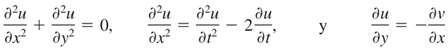
NOTACIÓN
ORDEN DE UNA ECUACIÓN DIFERENCIAL
LINEALIDAD
1.2 Solución de la ecuación diferencial: general y particular. Definición de solución singular.
1.3 Problema de valor inicial.
1.4 Teorema de existencia y unicidad para un problema de valores iniciales.
1.5 Ecuaciones diferenciales de variables separables.
1.6 Ecuaciones diferenciales homogéneas.
1.7 Ecuaciones diferenciales exactas. Factor integrante.
1.8 Ecuación diferencial lineal de primer orden. Solución de la ecuación diferencial homogénea asociada. Solución general de la ecuación diferencial lineal de primer orden.
2. Ecuaciones diferenciales lineales de orden superior.
2.1 La ecuación diferencial lineal de orden n. Operador diferencial. Polinomios diferenciales. Igualdad entre polinomios diferenciales. Operaciones y propiedades de polinomios diferenciales.
2.2 Funciones linealmente independientes y wronskiano.
2.3 La ecuación diferencial lineal de orden n homogénea de coeficientes constantes y su solución. Ecuación auxiliar. Raíces reales diferentes, reales iguales y complejas.
2.4 Solución de la ecuación diferencial lineal de orden n no homogénea. Método de coeficientes indeterminados. Método de variación de parámetros.
3. Transformada de Laplace y sistemas de ecuaciones diferenciales lineales.
3.1 Definición de la transformada de Laplace. Condición suficiente para la existencia de la transformada de Laplace. La transformada de Laplace como un operador lineal. Teorema de traslación en el dominio de s (primer teorema de traslación). Transformada de la enésima derivada de una función. Derivada de la transformada de una función. Transformada de la integral de una función. Definición de las funciones: rampa, escalón e impulso unitarios, así como sus respectivas transformadas de Laplace. Teorema de traslación en el dominio de t (segundo teorema de traslación).
3.2 Transformada inversa de Laplace. La no unicidad de la transformada inversa. Linealidad de la transformada inversa. Definición de convolución de funciones. Uso del teorema de convolución para obtener algunas transformadas inversas de Laplace.
3.3 Condiciones de frontera.
3.4 Sistemas de ecuaciones diferenciales de primer orden. Representación matricial. Transformación de una ecuación diferencial de orden n a un sistema de n ecuaciones de primer orden. Resolución de ecuaciones y sistemas de ecuaciones diferenciales lineales aplicando la transformada de Laplace.
4. Introducción a las ecuaciones diferenciales en derivadas parciales.
4.1 Definición de ecuación diferencial en derivadas parciales. Orden de una ecuación diferencial en derivadas parciales. Ecuación diferencial en derivadas parciales lineal y no lineal. Solución de la ecuación diferencial en derivadas parciales: completa, general y particular.
4.2 El método de separación de variables.
4.3 Serie trigonométrica de Fourier. Serie seno de Fourier. Serie coseno de Fourier. Cálculo de loS coeficientes de la serie trigonométrica de Fourier.
4.4 Ecuación de onda, de calor y de Laplace con dos variables independientes. Resolución de una de estas ecuaciones.
5. Bibliografía.
ZILL, Dennis, WRIGHT, Warren - Ecuaciones diferenciales con problemas con valores en la frontera.
CÁLCULO VECTORIAL (1321)
Objetivo(s) del curso:
El alumno aplicará los criterios para optimizar funciones de dos o más variables, analizará funciones vectoriales y calculará integrales de línea e integrales múltiples para resolver problemas físicos y geométricos.
1. Máximos y mínimos de funciones de dos o más variables.
1.1 Máximos y mínimos, relativos y absolutos para funciones de dos y tres variables independientes. Puntos críticos. Establecimiento de la condición necesaria para que un punto sea extremo relativo o punto silla.
EXTREMOS DE FUNCIONES MULTIVARIABLES
Como se muestra en la siguiente imagen, una función f de dos variables puede tener máximos y mínimos relativos.

MÁXIMOS Y MÍNIMOS RELATIVOS
Empezamos con la definición de extremos relativos o locales para funciones de dos variables x y y.
Un número f(a, b) es un Máximo Relativo de una función z = f(x, y) si f(x, y) ≤ f(a, b) para todo (x, y) en algún disco abierto que contenga a (a, b).
Un número f(a, b) es un Mínimo Relativo de una función z = f(x, y) si f(x, y) ≥ f(a, b) para todo (x, y) en algún disco abierto que contenga a (a, b).
En la discusión suponga que (a, b) es un punto interior de una región rectangular R en la cual f tiene un máximo relativo en el punto (a, b, f(a, b)), y además, suponga que las primeras derivadas parciales de f existen en (a, b).
Entonces como advertimos que la recta tangente que toca en (a, b, f(a, b)), es decir: la curva C1 es Horizontal y por ello su pendiente en el punto es fx(a, b) = 0. Similarmente, sobre la curva C2, la cual es la traza de la superficie en el plano y = b, tenemos fy(a, b) = 0.

Dicho de otra manera, como lo hicimos en el espacio bidimensional, podemos argumentar que un punto de la gráfica de y = f(x) donde la recta tangente es horizontal muchas veces conduce a un extremo relativo.
En el espacio tridimensional podemos buscar un plano tangente horizontal a la gráfica de una función z = f(x, y).
Si f tiene un máximo o mínimo relativo en un punto (a, b) y las primeras parciales existen en el punto, entonces una ecuación del plano tangente en el punto (a, b, f(a, b)) es
z - f(a, b) = fx(a, b)(x - a) + fy(a, b)(y - b)
Si el plano es horizontal, su ecuación debe ser z = constante, o de manera más específica, z = f(a, b). Utilizando este último hecho, podemos concluir de la ecuación del plano tangente en el punto (a, b, f(a, b)) que debemos tener fx(a, b) = 0 y fy(a, b) = 0.
Esta discusión sugiere el siguiente teorema.
Teorema de Extremos Relativos
Si una función z = f(x, y) tiene un extremo relativo en el punto (a, b) y si las primeras derivadas parciales existen en este punto, entonces
fx(a, b) = 0 y fy(a, b) = 0
PUNTOS CRÍTICOS
PUNTO SILLA
MÁXIMOS Y MÍNIMOS ABSOLUTOS
1.2 Deducción del criterio de la segunda derivada para funciones de dos y tres variables. Conceptos de matriz y determinantes hessianos. Resolución de problemas.
1.3 Formulación de problemas de máximos y mínimos relativos con restricciones. Establecimiento de la ecuación de Lagrange. Resolución de problemas de máximos y mínimos relacionados con la ingeniería.
2. Funciones vectoriales.
2.1 Definición de función vectorial de variable escalar y de función vectorial de variable vectorial. Ejemplos físicos y geométricos y su representación gráfica para los casos de una, dos o tres variables independientes. Concepto de campo vectorial.
2.2 Definición, interpretación geométrica y cálculo de la derivada de funciones vectoriales de variable escalar y de las derivadas parciales de funciones vectoriales de variable vectorial. Propiedades de la derivada de funciones vectoriales.
2.3 Ecuación vectorial de una curva. Análisis de curvas a través de la longitud de arco como parámetro. Deducción del triedro móvil y de las fórmulas de Frenet-Serret. Aplicaciones a la mecánica.
2.4 Vector normal a una superficie a partir de su ecuación vectorial, aplicaciones.
2.5 La diferencial de funciones vectoriales de variable escalar y de variable vectorial.
2.6 Concepto de coordenadas curvilíneas. Ecuaciones de transformación. Coordenadas curvilíneas ortogonales. Factores de escala, vectores base y Jacobiano de la transformación. Definición e interpretación de puntos singulares. Condición para que exista la transformación inversa.
2.7 Coordenadas polares. Ecuaciones de transformación. Curvas en coordenadas polares: circunferencias, cardioides, lemniscatas y rosas de n pétalos.
2.8 Coordenadas cilíndricas circulares y coordenadas esféricas. Ecuaciones de transformación, factores deescala, vectores base y Jacobiano.
2.9 Generalización del concepto de gradiente. Definiciones de divergencia y rotacional, interpretaciones físicas. Campos irrotacional y solenoidal, aplicaciones. Concepto y aplicaciones del laplaciano. Función armónica. Propiedades del operador nabla aplicado a funciones vectoriales.
2.10 Cálculo del gradiente, divergencia, laplaciano y rotacional en coordenadas curvilíneas ortogonales.
3. Integrales de línea.
3.1 Definición y propiedades de la integral de línea. Cálculo de integrales de línea a lo largo de curvas abiertas y cerradas.
3.2 La integral de línea como modelo matemático del trabajo y sus representaciones vectorial, paramétrica y diferencial. Conceptos físico y matemático de campo conservativo.
3.3 Concepto de función potencial. Integración de la diferencial exacta. Obtención de la función potencial en coordenadas polares, cilíndricas y esféricas. Relación entre la independencia de la trayectoria, la diferencial exacta y el campo conservativo.
3.4 Cálculo de integrales de línea en coordenadas polares, cilíndricas y esféricas.
4. Integrales múltiples.
4.1 Definición e interpretación geométrica de la integral doble.
4.2 Concepto de integral reiterada. Cálculo de la integral doble mediante la reiterada. Concepto y representación gráfica de regiones. Cálculo de integrales dobles en regiones regulares.
4.3 Superficies. Ecuación cartesiana, ecuaciones paramétricas y ecuación vectorial de superficies cuádricas.
4.4 Aplicaciones de la integral doble en el cálculo de áreas, volúmenes y momentos de inercia. Cálculo de integrales dobles con cambio a otros sistemas de coordenadas curvilíneas ortogonales.
4.5 Teorema de Green, aplicaciones.
4.6 Integral de superficie, aplicaciones. Cálculo del área de superficies alabeadas en coordenadas cartesianas y cuando están dadas en forma vectorial.
4.7 Concepto e interpretación geométrica de la integral triple. Integral reiterada en tres dimensiones. Cálculo de la integral triple en regiones regulares. Cálculo de volúmenes. Integrales triples en coordenadas cilíndricas, esféricas y en algún otro sistema de coordenadas curvilíneas.
4.8 Teorema de Stokes. Teorema de Gauss.
5. Bibliografía.
STEWART, James - Cálculo Trascendentes tempranas.
ZILL, Dennis - Matemáticas 3 Cálculo de varias variables.
CINEMÁTICA Y DINÁMICA (1322)
Objetivo(s) del curso:
El alumno comprenderá los diferentes estados mecánicos del movimiento de partículas y cuerpos rígidos, considerando tanto sus características intrínsecas como las causas que lo producen. Asimismo, analizará resolverá problemas de cinemática y de cinética.
1. Cinemática de la partícula.
1.1 Introducción a la Dinámica. División en Cinemática y Cinética.
DINÁMICA, CINEMÁTICA Y CINÉTICA
La Mecánica es una rama de las ciencias físicas que se ocupa del estado de reposo o movimiento de cuerpos sometidos a la acción de fuerzas. La ingeniería mecánica se divide en dos áreas de estudio, o sea, Estática y Dinámica.
La estática se ocupa del equilibrio de un cuerpo que está en reposo o que se mueve con velocidad constante. Aquí consideraremos la dinámica, la cual se ocupa del movimiento acelerado de un cuerpo.
El curso de dinámica se presentará en dos partes: Cinemática, la cual trata sólo los aspectos geométricos del movimiento, y la Cinética, que analiza las fuerzas que provocan el movimiento. Para desarrollar estos principios, primero se analizará la dinámica de una partícula.
Recuérdese que una partícula tiene masa, pero tamaño y forma despreciables. Por lo tanto, debemos limitar la aplicación a aquellos objetos en los que sus dimensiones no tengan efectos en el análisis del movimiento.
En la mayor parte de los problemas se tiene interés en cuerpos de tamaño finito como cohetes, proyectiles o vehículos. Estos objetos se pueden considerar como partículas, siempre y cuando su movimiento esté caracterizado por el movimiento de su centro de masa y pueda despreciarse cualquier rotación del cuerpo.
En la ingeniería hay muchos otros problemas cuyas soluciones requieren la aplicación de los principios de dinámica. Por lo común, el diseño estructural de cualquier vehículo ya sea un automóvil o un avión, requiere considerar el movimiento al cual se somete.
Esto también es cierto para muchos dispositivos mecánicos como motores eléctricos, bombas, herramientas móviles, manipuladores industriales y maquinaria.
Además, las predicciones de los movimientos de satélites artificiales, proyectiles y naves espaciales están basadas en la teoría de dinámica. Conforme se presenten más avances tecnológicos, habrá incluso una mayor necesidad de saber cómo aplicar los principios de esta materia.
1.2 Trayectoria, posición, velocidad y aceleración lineales de una partícula.
POSICIÓN
La trayectoria rectilínea de una partícula se definirá por medio de un solo eje de coordenadas s. El origen O en la trayectoria es un punto fijo, y a partir de él se utiliza la coordenada de posición s para especificar la ubicación de la partícula en cualquier instante dado.
La magnitud de s es la distancia de O a la partícula, por lo general medida en metros (m) o pies (ft) y su signo algebraico define el sentido de su dirección. Aunque la selección es arbitraria.
Tenga en cuenta que la posición es una cantidad vectorial puesto que tiene tanto magnitud como dirección. En este caso, sin embargo, está representada por el escalar algebraico s puesto que la dirección se mantiene a lo largo del eje de coordenadas.
1.3 Movimiento rectilíneo. Ecuaciones y gráficas del movimiento. Movimientos, rectilíneo uniforme, con aceleración constante y con aceleración variable.
1.4 Movimiento curvilíneo. Componentes cartesianas. Componentes normal y tangencial.
2. Cinética de la partícula.
2.1 Segunda ley de Newton.
2.2 Sistemas de unidades. Sistemas absolutos y gravitaciones.
2.3 Movimiento rectilíneo: fuerzas constantes y variables.
2.4 Movimiento curvilíneo: componentes cartesianas y tiro parabólico; componentes normal y tangencial.
2.5 Partículas conectadas.
3. Trabajo y energía e impulso y cantidad de movimiento de la partícula.
3.1 Método de trabajo y energía.
3.2 Principio de conservación de la energía mecánica.
3.3 Método de impulso y cantidad de movimiento.
4. Cinemática del cuerpo rígido.
4.1 Definición de movimiento plano. Definiciones de traslación pura, rotación pura y movimiento plano general.
4.2 Rotación pura. Velocidad y aceleración angulares del cuerpo rígido.
4.3 Movimiento plano general. Obtención de las ecuaciones de los diferentes tipos de movimiento plano de los cuerpos rígidos.
4.4 Cinemática de algunos mecanismos. Mecanismo de cuatro articulaciones.
5. Cinética del cuerpo rígido.
5.1 Centros y momentos de inercia de masas.
5.2 Obtención de las ecuaciones cinéticas del movimiento plano del cuerpo rígido.
5.3 Traslación pura. Magnitud, dirección y posición de la resultante de las fuerzas que actúan sobre el cuerpo.
5.4 Rotación pura. Características del par de fuerzas equivalente al sistema que actúa sobre el cuerpo. Aceleración angular del cuerpo.
5.5 Movimiento plano general. Ecuaciones cinéticas del movimiento. Aceleración angular del cuerpo.
6. Bibliografía.
HIBBELER, Russell - Ingeniería mecánica, dinámica.
MANUFACTURA I (1225)
Objetivo(s) del curso:
El alumno aplicará los principales materiales de ingeniería, analizará sus métodos de obtención y los procesos empleados para su transformación en la industria.
1. Presentación del curso e introducción.
1.1 Importancia de los procesos de manufactura.
MANUFACTURA
La palabra Manufactura se deriva de las palabras latinas manus (mano) y factus (hacer); la combinación de ambas significa hecho a mano. La palabra manufactura tiene varios siglos de antigüedad, y “hecho a mano” describe en forma adecuada los métodos manuales que se utilizaban cuando se acuñó la expresión.1 La mayor parte de la manufactura moderna se lleva a cabo por medio de maquinaria automatizada y controlada por computadora que se supervisa manualmente.
En el sentido tecnológico, la manufactura es la aplicación de procesos físicos y químicos para alterar la geometría, propiedades o apariencia de un material de inicio dado para fabricar piezas o productos; la manufactura también incluye el ensamble de piezas múltiples para fabricar productos. Los procesos para llevar a cabo la manufactura involucran una combinación de máquinas, herramientas, energía y trabajo manual. Casi siempre, la manufactura se ejecuta como una secuencia de operaciones. Cada una de éstas lleva al material más cerca del estado final que se desea.
En el sentido económico, la manufactura es la transformación de los materiales en artículos de valor mayor por medio de uno o más operaciones de procesamiento o ensamblado. La clave es que la manufactura agrega valor al material cambiando su forma o propiedades, o mediante combinar materiales distintos también alterados. El material se habrá hecho más valioso por medio de las operaciones de manufactura ejecutadas en él.

Es frecuente que las palabras manufactura y producción se usen en forma indistinta. El punto de vista del autor es que la producción tiene un significado más amplio que la manufactura. Para ilustrar esto, se puede utilizar la expresión “producción de petróleo crudo”, pero la frase “manufactura de petróleo crudo” parece fuera de lugar. Sin embargo, cuando se emplea en el contexto de productos tales como piezas metálicas o automóviles, cualquiera de ambas palabras es aceptable.
PROCESOS DE MANUFACTURA
Los procesos de manufactura se dividen en dos tipos básicos: las operaciones del proceso y las operaciones del ensamblado. Una operación del proceso hace que un material de trabajo pase de un estado de acabado a otro más avanzado que está más cerca del producto final que se desea. Se agrega valor cambiando la geometría, las propiedades o la apariencia del material de inicio. En general, las operaciones del proceso se ejecutan sobre partes discretas del trabajo, pero algunas también son aplicables a artículos ensamblados. Una operación de ensamblado une dos o más componentes a fin de crear una entidad nueva, llamada ensamble, subensamble o algún otro término que se refiera al proceso de unión (por ejemplo, un ensamble soldado se denomina soldadura).

1.2 Clasificación de los procesos de manufactura.
1.3 Reglamento y medidas de seguridad (prácticas).
1.4 Herramientas de mano (prácticas).
2. Materiales de uso frecuente en ingeniería.
2.1 Materiales ferrosos.
2.2 Fundiciones. Sus aplicaciones, su clasificación. Fundición gris y fundición nodular.
2.3 Aleaciones no ferrosas.
2.4 Plásticos. Comunes y de ingeniería. Sus propiedades, ventajas, limitaciones y aplicaciones. Acrónimos.
2.5 Elementos de uso común en maquinaria (prácticas).
3. Instrumentos de medición.
3.1 Mesa de coordenadas, medición con láser.
3.2 Escáner tridimensional y nuevas tecnologías.
3.3 Instrumentos de medición y traslado de medida (prácticas).
4. Tecnología de la fundición.
4.1 Moldeo con arena en verde.
4.2 Laminación.
4.3 Moldeo por proceso en CO2.
4.4 Moldeo con resinas autofraguantes.
4.5 Caja caliente.
4.6 Moldeo en cáscara.
4.7 Moldeo permanente.
4.8 Fundición a presión en cámara fría y cámara caliente.
4.9 Práctica de fundición moldeo en verde (prácticas).
4.10 Práctica de fundición a presión (prácticas).
5. Procesos de deformación plástica.
5.1 Clasificación de los métodos de conformado mecánico.
5.2 Procesos para el trabajo en caliente.
5.3 Procesos para el trabajo en frío.
5.4 Práctica de laminación (prácticas).
5.5 Práctica de pailería (prácticas).
6. Métodos de unión y ensamble.
6.1 Equipos utilizados para la soldadura de arco. Designación y características de los electrodos.
6.2 Soldadura de arco eléctrico con electrodo revestido.
6.3 Soldadura con gas (oxiacetileno, gas LP).
6.4 Soldadura por resistencia eléctrica.
6.5 Corte mediante oxígeno.
6.6 Corte por arco plasma.
6.7 Uniones mediante remaches, tornillos, adhesivos entre otros.
6.8 Soldadura de arco eléctrico (prácticas).
6.9 Soldadura TIG, MIG (prácticas).
6.10 Soldadura y corte con oxiacetileno (prácticas).
7. Procesamiento de plásticos.
7.1 Macromoléculas de origen orgánico.
7.2 Termoplásticos, termofijos y elastómeros.
7.3 Inyección de plásticos. El proceso, las partes de la máquina, los parámetros de operación, puesta en marcha.
7.4 Extrusión de plásticos. El proceso, las partes de equipo, cálculo del gasto de extrusión, aplicaciones del proceso, problemas que se presentan, causas y forma de evitarlos. Metodología para la determinación de los parámetros de proceso. Control de perfil.
7.5 Práctica de inyección (prácticas).
7.6 Práctica de extrusión (prácticas).
8. Procesos con arranque de viruta.
8.1 Procesos con arranque de virutas; sus bondades y limitaciones.
8.2 Mecánica del arranque de virutas, determinación de parámetro y fuerza de corte.
8.3 Taladros, sus aplicaciones y clasificación. Tipos de brocas, barrenos pesados y barrenos ciegos, machueleado, avellanado.
8.4 Seguetas mecánicas y sierra cinta.
8.5 El torno: sus partes, aplicaciones. Operaciones, refrentado, cilindrado, conos cortos, conos largos, roscas, moleteado. Determinación de las condiciones de operación en función del material a maquinar, la herramienta de corte y la operación. Acabados.
8.6 Fresadora. Horizontal, vertical, universal. Generación de superficies planas, ranuras, cuñeros, fabricación de engranes de dientes recto.
8.7 Práctica de torno (prácticas).
8.8 Práctica de fresadora (prácticas)
9. Producción de prototipos.
9.1 Proceso de estereolitografía, características, ventajas y desventajas.
9.2 Proceso de objetos laminados, características, ventajas y desventajas.
9.3 Proceso de sinterizado de polvos, características, ventajas y desventajas.
9.4 Producción de prototipos de forma manual.
9.5 Prototipo en madera o acrílico (prácticas).
9.6 Prototipo con poliestireno expandido o poliuretano (prácticas).
10. Producción de hierro y acero.
10.1 Método de alto horno: minerales, su procesamiento, materias primas en el alto horno. aceración.
10.2 Producción de prerreducidos, métodos más usuales, ventajas y limitaciones.
10.3 Producción de acero a partir de chatarra, el horno de arco.
11. Producción de aluminio y de cobre.
11.1 Producción de aluminio a partir de sus minerales.
11.2 Producción de cobre a partir de sus minerales.
12. Bibliografía.
GROOVER, M. P. - Fundamentos de manufactura moderna: materiales, procesos y sistemas.
CULTURA Y COMUNICACIÓN (1222)
Objetivo(s) del curso:
El alumno valorará la riqueza cultural de nuestro mundo, nuestro país y nuestra universidad, mediante el acercamiento guiado a diversas manifestaciones y espacios culturales, a fin de que fortalezca su sensibilidad, sentido de pertenencia e identidad como universitario. Asimismo, adquirirá elementos de análisis para desarrollar sus capacidades de lectura, apreciación artística y expresión de ideas que le permitan apropiarse de su entorno cultural de una forma lúdica, creativa, reflexiva y crítica.
1. La cultura como expresión del pensamiento humano.
1.1 Concepto de cultura.
CULTURA
 El
concepto de Cultura es amplio y multidimensional, abarcando una
variedad de significados que reflejan tanto las perspectivas históricas como
las contemporáneas. En esencia, la cultura puede definirse como el conjunto de
conocimientos, creencias, prácticas, normas, símbolos y valores compartidos por
un grupo de personas, que les permite interactuar entre sí y con su entorno de
manera significativa. Este concepto, aunque aparentemente simple, se enriquece
y complica al examinar las múltiples dimensiones y manifestaciones que adquiere
en diferentes contextos y disciplinas.
El
concepto de Cultura es amplio y multidimensional, abarcando una
variedad de significados que reflejan tanto las perspectivas históricas como
las contemporáneas. En esencia, la cultura puede definirse como el conjunto de
conocimientos, creencias, prácticas, normas, símbolos y valores compartidos por
un grupo de personas, que les permite interactuar entre sí y con su entorno de
manera significativa. Este concepto, aunque aparentemente simple, se enriquece
y complica al examinar las múltiples dimensiones y manifestaciones que adquiere
en diferentes contextos y disciplinas.
Desde una perspectiva antropológica, la cultura se ha concebido tradicionalmente como la totalidad del modo de vida de un grupo humano. Esto incluye aspectos materiales, como herramientas, tecnología y arquitectura, así como elementos inmateriales, como costumbres, tradiciones, rituales y lenguajes. La cultura actúa como un sistema simbólico que da sentido a la existencia colectiva, estructurando la manera en que los individuos perciben el mundo y se relacionan con él. En este sentido, la cultura no es estática ni homogénea; es dinámica, en constante evolución y marcada por tensiones internas y externas.
Un aspecto clave del concepto de cultura es su carácter aprendido. A diferencia de los instintos, la cultura se transmite de generación en generación mediante procesos de socialización y educación. Este aprendizaje cultural es lo que permite a las sociedades adaptarse a contextos cambiantes, innovar y perpetuar sus formas de vida. Al mismo tiempo, también posibilita la diversidad cultural, ya que diferentes grupos desarrollan sistemas de significado únicos basados en sus experiencias históricas, geográficas y sociales.
La dimensión simbólica de la cultura es otra de sus características fundamentales. Los símbolos, como el lenguaje, el arte y los rituales, sirven como medios para comunicar y reforzar valores e ideas compartidas. Por ejemplo, los mitos y las historias transmiten lecciones morales y refuerzan la identidad grupal, mientras que los objetos culturales, como las obras de arte o los monumentos, actúan como portadores de memoria colectiva. Esta dimensión simbólica también facilita la cohesión social, al proporcionar un marco común de referencia que une a los individuos dentro de una comunidad.
A nivel global, el concepto de cultura ha adquirido nuevas connotaciones en el contexto de la globalización. La interacción entre culturas, facilitada por los avances en la comunicación y el transporte, ha llevado a un intercambio sin precedentes de ideas, prácticas y productos culturales. Esto ha dado lugar tanto a la hibridación cultural como a la resistencia frente a la homogeneización impuesta por las dinámicas globales. Mientras algunas culturas adoptan elementos extranjeros para enriquecer sus propias tradiciones, otras luchan por preservar su identidad frente a la influencia de fuerzas externas.
En un plano más individual, la cultura también desempeña un papel central en la formación de la identidad personal. Cada individuo internaliza los valores, normas y símbolos de su cultura a través de la interacción con su entorno social. Este proceso no es uniforme ni mecánico, ya que las personas interpretan y reinterpretan su cultura de maneras únicas, influenciadas por su contexto y experiencias particulares. Así, la cultura no solo moldea al individuo, sino que también es moldeada por él.
El concepto de cultura también es relevante en el ámbito político y social, donde se utiliza para abordar cuestiones de diversidad, inclusión y equidad. Reconocer y valorar las diferencias culturales es fundamental para construir sociedades más justas y cohesivas. En este sentido, el concepto de cultura va más allá de la mera descripción antropológica para convertirse en una herramienta para el cambio social. Las políticas culturales, los programas educativos y las iniciativas de diálogo intercultural son ejemplos de cómo se puede utilizar el concepto de cultura para promover el entendimiento mutuo y la cooperación.
Es importante destacar que el concepto de cultura no está exento de controversias y debates. Algunos críticos argumentan que ciertas definiciones de cultura pueden ser demasiado amplias o vagas, lo que dificulta su utilidad como herramienta analítica. Otros cuestionan la tendencia a idealizar o esencializar las culturas, ignorando las desigualdades y conflictos que existen dentro de ellas. Estos debates reflejan la complejidad del concepto y subrayan la necesidad de abordarlo con una perspectiva crítica y matizada
1.2 Dimensión social e individual de los procesos culturales.
La dimensión social e individual de los procesos culturales puede entenderse como el tejido intrincado que conecta a las personas con su entorno y consigo mismas, configurando una compleja interacción entre el colectivo y el individuo. Por un lado, los procesos culturales se manifiestan como expresiones sociales que reflejan y transforman las estructuras y normas de las comunidades en las que operan. Por otro lado, también representan un campo íntimo en el que los individuos construyen y redefinen su identidad a través de interacciones simbólicas y experiencias personales.
Desde una perspectiva social, los procesos culturales son esenciales para establecer los valores, tradiciones y significados compartidos que constituyen la base de cualquier sociedad. Estas expresiones colectivas permiten la formación de vínculos comunitarios que trascienden generaciones, funcionando como un puente entre el pasado, el presente y el futuro. La cultura, en este sentido, actúa como un repositorio de conocimientos y prácticas que organiza la vida social, fomenta la cohesión y ofrece un marco para enfrentar desafíos comunes. Un ejemplo de esto es el uso de lenguajes compartidos, que no solo facilitan la comunicación, sino que también consolidan una identidad grupal y refuerzan el sentido de pertenencia.
Sin embargo, dentro de esta construcción colectiva, cada individuo vive y experimenta la cultura de manera única. La dimensión individual de los procesos culturales se manifiesta en la capacidad de las personas para reinterpretar, cuestionar y a veces subvertir los significados impuestos por la colectividad. Cada experiencia cultural se convierte en una oportunidad para el autoconocimiento y la autoexpresión, lo que, a su vez, enriquece el tapiz cultural de la comunidad en su conjunto. Por ejemplo, al participar en un evento cultural, como un festival o una ceremonia, cada persona aporta sus emociones, perspectivas y vivencias, creando una resonancia única que enriquece la experiencia colectiva.
El equilibrio entre estas dos dimensiones, la social y la individual, no siempre es armónico. En algunos contextos, los valores culturales dominantes pueden sofocar las expresiones individuales, imponiendo conformidad y limitando la diversidad.
Esto se observa en sociedades donde las normas culturales se utilizan como herramientas de control social, relegando las diferencias al margen y favoreciendo una homogeneidad que puede ser asfixiante. Por otro lado, cuando los individuos desafían y transforman estas normas a través de actos de creatividad y resistencia, contribuyen a la evolución cultural, permitiendo que surjan nuevas formas de expresión que reflejen las realidades cambiantes.
Un área clave donde se observa esta interacción es en la globalización cultural. Este fenómeno ha intensificado las conexiones entre comunidades al facilitar el intercambio y la difusión de ideas, tradiciones y prácticas en todo el mundo.
Al mismo tiempo, ha generado tensiones entre la Aldea Global, que promueve valores universales y prácticas homogéneas, y la Aldea Local, que busca preservar las identidades culturales particulares y tradicionales. La globalización cultural, por tanto, no solo amplía el horizonte cultural de los individuos, sino que también plantea desafíos sobre cómo equilibrar las influencias externas con las raíces culturales locales.
La dimensión social e individual de los procesos culturales también se entrelaza con cuestiones de poder y agencia. Las instituciones y estructuras sociales a menudo influyen en cómo las personas acceden y participan en la cultura.
Por ejemplo, los sistemas educativos y los medios de comunicación desempeñan un papel fundamental en la transmisión y reproducción de valores culturales, pero también pueden perpetuar desigualdades al privilegiar ciertas narrativas sobre otras. Por otro lado, los individuos tienen la capacidad de transformar estas estructuras al adoptar roles activos como agentes de cambio cultural, ya sea a través del arte, la innovación tecnológica o el activismo social.
Además, los procesos culturales están profundamente arraigados en las experiencias emocionales y psicológicas de los individuos. Cada persona aporta sus propias interpretaciones y significados a las experiencias culturales, convirtiéndolas en una fuente de conexión emocional y personal.
Esto es particularmente evidente en las expresiones artísticas, donde las emociones individuales encuentran una forma tangible de comunicación que puede resonar universalmente. En este sentido, la dimensión individual de la cultura no solo enriquece la experiencia colectiva, sino que también asegura que la cultura permanezca viva y en constante evolución.
En última instancia, la dimensión social e individual de los procesos culturales destaca la interdependencia entre el individuo y la sociedad. Cada uno de estos niveles enriquece y desafía al otro, creando un ciclo dinámico de influencia mutua.
Mientras que la sociedad ofrece el marco y los recursos para que los individuos se expresen, las contribuciones individuales a menudo impulsan cambios que redefinen y expanden el ámbito cultural colectivo.
Por lo tanto, es fundamental reconocer y valorar ambas dimensiones, no solo para comprender la cultura como un fenómeno humano, sino también para fomentar una convivencia más inclusiva y enriquecedora.
1.3 Propósitos de la difusión cultural y principales medios de expresión.
Los propósitos de la difusión cultural y los principales medios de expresión tienen como eje principal el fomento del conocimiento, la preservación de identidades y tradiciones, y la promoción de la creatividad en sus múltiples formas. Este proceso busca trascender las barreras geográficas, sociales y temporales para hacer accesibles las diversas manifestaciones culturales a un público más amplio. La difusión cultural es, en esencia, una herramienta poderosa para el intercambio de ideas, la construcción de la identidad colectiva y la educación de las generaciones futuras.
PROPÓSITOS DE LA DIFUSIÓN CULTURAL
El principal propósito de la difusión cultural es preservar y transmitir el patrimonio cultural de una comunidad. Esto incluye tanto los aspectos tangibles, como obras de arte, monumentos y objetos históricos, como los intangibles, que abarcan tradiciones, lenguajes, valores y prácticas sociales. La difusión cultural no solo garantiza que estas expresiones sobrevivan al paso del tiempo, sino que también permite su adaptación y resignificación en diferentes contextos.
Otro objetivo fundamental es la educación. A través de la difusión cultural, las personas adquieren conocimientos sobre su propia herencia y la de otras culturas, fomentando la empatía y el entendimiento mutuo. Este proceso educativo también contribuye a combatir prejuicios y estereotipos al presentar una visión más rica y diversa del mundo.
La difusión cultural también busca estimular la creatividad y la innovación. Al exponerse a diferentes formas de expresión artística y cultural, los individuos encuentran inspiración y desarrollan nuevas formas de interpretar y representar su realidad. Esto es particularmente relevante en un mundo globalizado, donde el intercambio cultural es constante y puede ser una fuente inagotable de ideas y colaboraciones.
Por último, la difusión cultural tiene un componente económico y político. La promoción de eventos culturales, exposiciones y festivales no solo genera ingresos, sino que también fortalece la posición de una comunidad o nación en el escenario internacional. La cultura se convierte así en un vehículo para la diplomacia y la cooperación global.
PRINCIPALES MEDIOS DE EXPRESIÓN
La difusión cultural se lleva a cabo a través de una variedad de medios de expresión, cada uno con sus propias características y alcances. Entre los más destacados se encuentran:
1. Artes visuales y escénicas: El teatro, la danza, la música y las artes plásticas son medios esenciales para la expresión cultural. Estas disciplinas permiten una conexión emocional directa con el público y a menudo actúan como catalizadores para debates sociales y políticos.
2. Literatura y escritura: Los libros, revistas y otros textos escritos son vehículos tradicionales para la difusión de ideas y valores culturales. La literatura, en particular, tiene el poder de transportar a los lectores a diferentes tiempos y lugares, fomentando la comprensión de perspectivas diversas.
3. Medios de comunicación: La televisión, la radio y el cine han sido herramientas fundamentales para llevar expresiones culturales a audiencias masivas. Más recientemente, las plataformas digitales y las redes sociales han ampliado aún más el alcance de estas manifestaciones, permitiendo una interacción más directa y participativa con el público.
4. Espacios culturales: Museos, galerías, bibliotecas y teatros son instituciones clave para la preservación y promoción de la cultura. Estos espacios no solo albergan y exhiben obras culturales, sino que también actúan como centros educativos y comunitarios.
5. Educación formal e informal: Las escuelas y universidades desempeñan un papel crucial en la difusión cultural al incorporar contenidos culturales en sus currículos. Al mismo tiempo, talleres, charlas y cursos extracurriculares brindan oportunidades para el aprendizaje continuo.
6. Eventos y festivales: Los festivales culturales, ferias de libros, exposiciones y conciertos son plataformas dinámicas para la interacción cultural. Estos eventos no solo celebran las tradiciones existentes, sino que también ofrecen un espacio para la innovación y la experimentación.
7. Tecnología y redes digitales: En la era actual, las plataformas digitales han revolucionado la difusión cultural. Desde videos virales hasta aplicaciones interactivas y proyectos de realidad virtual, la tecnología ha abierto nuevas posibilidades para que las expresiones culturales lleguen a un público global.
1.4 Proceso y tipos de lectura. Competencias necesarias.
1.5 La reseña crítica de manifestaciones culturales: definición, funciones y estructura.
1.6 Ejercicios de lectura de comprensión y de redacción.
2. Acercamiento a las manifestaciones culturales universitarias.
2.1 Arte y cultura en México: breve recorrido histórico.
2.2 Ciudad Universitaria, patrimonio cultural de la humanidad.
2.3 Recintos culturales universitarios.
2.4 Patrimonio cultural y artístico de la Facultad de Ingeniería.
3. Bibliografía.
Descarga Cultura en: http://www.descargacultura.unam.mx.
CUARTO SEMESTRE
ESTADÍSTICA (1569)
Objetivo(s) del curso:
El alumno aplicará los conceptos de la teoría, metodología y las técnicas estadísticas, modelará y resolverá problemas de ingeniería relacionados con el muestreo, representación de datos e inferencia estadística para la toma de decisiones.
1. Estadística descriptiva.
1.1 Investigación básica e investigación aplicada, el método científico y el papel de la estadística en la investigación y sus etapas.
INVESTIGACIÓN
La investigación científica representa un entramado sistemático de procedimientos lógicos y metodológicos destinados a la generación de conocimiento objetivo, verificable y generalizable. Este proceso racional, piedra angular del desarrollo disciplinario en los ámbitos científicos y tecnológicos, se sustenta en principios epistémicos rigurosos que exigen reproducibilidad, consistencia lógica, neutralidad axiológica y validez empírica de los hallazgos.
Desde una perspectiva epistemológica, se reconocen dos grandes ejes de acción investigativa:
Investigación básica: Se orienta a la exploración de principios fundamentales sin una finalidad práctica inmediata. Persigue la comprensión profunda de fenómenos, la formulación de leyes generales, teorías científicas y constructos conceptuales de alta abstracción. Su orientación es teórica y su utilidad se despliega en el largo plazo.
Investigación aplicada: Se focaliza en la utilización del conocimiento generado por la investigación básica para resolver problemas concretos del mundo real. En ella, la teoría se operacionaliza en soluciones prácticas, tecnológicas, sociales o industriales. Esta forma de indagación traslada el saber científico al plano de la acción, contribuyendo a la innovación y mejora continua.
MÉTODO CIENTÍFICO
El método científico, en tanto procedimiento normativo para la adquisición de conocimiento, se despliega en una secuencia articulada de fases que comprenden:
1. Observación rigurosa y sistemática del fenómeno
2. Delimitación del problema y construcción del objeto de estudio
3. Revisión crítica del estado del arte y formulación del marco teórico
4. Proposición de hipótesis o preguntas de investigación
5. Diseño metodológico con criterios de validez interna y externa
6. Recolección empírica estructurada de datos pertinentes
7. Procesamiento, organización y análisis cuantitativo o cualitativo
8. Interpretación reflexiva e integración de resultados
9. Redacción y difusión de conclusiones en espacios científicos
La estadística se manifiesta como una herramienta metodológica transversal e indispensable en cada etapa del método científico. Sus aplicaciones son vastas, entre las cuales destacan:
· Determinación del tamaño muestral y planificación de diseños experimentales
· Recolección, validación, codificación y tabulación de datos empíricos
· Exploración preliminar de la estructura de los datos
· Representación gráfica y síntesis numérica de distribuciones
· Generalización de resultados mediante inferencia estadística
· Evaluación de hipótesis y ajuste de modelos predictivos
1.2 Clasificación de la estadística: descriptiva e inferencial, paramétrica y no paramétrica, de una variable y de varias variables.
ESTADÍSTICA
La estadística como disciplina nos enseña a realizar juicios inteligentes y tomar decisiones informadas en la presencia de incertidumbre y variación.
La estadística, como disciplina metódica, admite diversas clasificaciones según el objeto de estudio, la naturaleza de los datos y los fines analíticos. Estas tipologías permiten estructurar el tratamiento estadístico de manera coherente con los objetivos de investigación.
Estadística Descriptiva
Constituye el corpus de técnicas orientadas a la recopilación, organización, presentación y análisis preliminar de datos. No persigue realizar generalizaciones poblacionales, sino ofrecer una visión estructurada de las características observadas en un conjunto de datos.
Sus herramientas fundamentales incluyen:
· Medidas de tendencia central: media aritmética, mediana, moda, media ponderada
· Medidas de dispersión: varianza, desviación típica, coeficiente de variación, rango intercuartílico
· Medidas de forma: asimetría y curtosis
· Representaciones gráficas: histogramas, diagramas de caja, polígonos de frecuencia, diagramas de dispersión
Estadística Inferencial
Se fundamenta en el cálculo de probabilidades para extrapolar las propiedades observadas en una muestra a la población de la que esta proviene. Su objeto es estimar parámetros poblacionales, contrastar hipótesis científicas y predecir fenómenos futuros bajo condiciones de incertidumbre. Métodos clave:
· Estimación puntual y por intervalos de confianza
· Pruebas paramétricas (t de Student, ANOVA, regresión)
· Pruebas no paramétricas (Chi-cuadrado, prueba de signos, U de Mann-Whitney)
· Métodos bayesianos y técnicas de remuestreo (bootstrap, jackknife)
Estadística Paramétrica vs. No Paramétrica:
La estadística paramétrica parte del supuesto de que los datos provienen de poblaciones que siguen distribuciones conocidas (normal, binomial, etc.). Bajo estas premisas, sus métodos son potentes y eficientes.
La estadística no paramétrica es más flexible; no exige supuestos distributivos estrictos y puede aplicarse en contextos con escalas ordinales o no métricas, siendo adecuada cuando los datos presentan asimetrías, colas pesadas o estructuras desconocidas.
Estadística Univariada vs. Multivariada:
Univariada: Analiza una única variable, permitiendo caracterizar su comportamiento mediante medidas descriptivas e inferencias unidimensionales.
Multivariada: Aborda simultáneamente varias variables, identificando interdependencias y patrones latentes. Se utilizan técnicas como análisis factorial, regresión múltiple, análisis de conglomerados, análisis discriminante y modelos de ecuaciones estructurales.
1.3 La población y la muestra y la relación entre la probabilidad y la estadística.
POBLACIÓN
En el diseño investigativo, la definición clara de población y muestra es esencial. La población representa la totalidad de elementos que comparten una característica relevante; puede tratarse de individuos, objetos, eventos, registros, etc. Según su tamaño y estructura, se clasifica en finita o infinita, homogénea o heterogénea, accesible o teórica.
MUESTRA
La muestra es un subconjunto representativo de la población, seleccionado mediante procedimientos sistemáticos para permitir inferencias válidas. Su calidad se mide por su representatividad, aleatoriedad y tamaño adecuado.
PROBABILIDAD
La probabilidad proporciona la fundamentación teórica para evaluar el grado de certeza con que se pueden generalizar los hallazgos muestrales. Permite modelar la incertidumbre inherente al proceso inductivo, establecer márgenes de error, calcular niveles de significancia y cuantificar riesgos en la toma de decisiones.
En particular:
· El nivel de confianza (1-α) expresa la credibilidad atribuida a un intervalo de estimación.
· El error tipo I (α) y tipo II (β) delimitan los riesgos de decisiones incorrectas.
· El poder estadístico mide la capacidad de una prueba para detectar efectos reales.
1.4 Generación de números aleatorios y muestreo probabilístico: aleatorio, sistemático, estratificado y por conglomerados.
NÚMEROS ALEATORIOS
La aleatorización, esencial para eliminar sesgos y asegurar la validez externa, se logra mediante algoritmos computacionales que simulan secuencias pseudoaleatorias.
Estos algoritmos, diseñados con base en principios matemáticos, permiten generar muestras, asignar tratamientos en experimentos, y ejecutar simulaciones estocásticas.
Aplicaciones destacadas:
· Métodos Monte Carlo para estimación numérica
· Simulación de procesos estocásticos en modelado predictivo
· Generación de escenarios hipotéticos para análisis de sensibilidad
· Técnicas de remuestreo para estimación robusta
MUESTREO PROBABILÍSTICO
Se basa en mecanismos aleatorios que aseguran que cada unidad de la población tenga una probabilidad conocida y positiva de ser seleccionada. Esta característica permite aplicar inferencias estadísticas válidas y estimar el error muestral.
1. Muestreo Aleatorio Simple: Cada elemento posee la misma probabilidad de ser seleccionado. Es conceptualmente sencillo y estadísticamente sólido. Sin embargo, su implementación puede ser costosa o inviable en poblaciones extensas sin un marco muestral completo.
2. Muestreo Sistemático: Se seleccionan unidades a intervalos fijos desde un punto inicial aleatorio. Su eficiencia logística lo convierte en una opción viable, aunque requiere precaución ante estructuras periódicas que puedan inducir sesgos sistemáticos.
3. Muestreo Estratificado: Implica dividir la población en estratos homogéneos respecto a una o más variables relevantes y extraer muestras aleatorias dentro de cada estrato. Aumenta la precisión de las estimaciones al controlar la variabilidad interna, y es especialmente útil cuando ciertos subgrupos tienen baja representación.
4. Muestreo por Conglomerados: La población se organiza en conglomerados naturales (e.g., escuelas, ciudades, bloques censales) y se seleccionan aleatoriamente algunos para su inclusión completa o parcial. Es eficiente para estudios de campo extensivos, aunque la homogeneidad interna de los conglomerados puede afectar la precisión de las estimaciones.
1.5 Estadística descriptiva: análisis de datos univariados; tabla de distribución de frecuencias; histogramas y polígonos de frecuencias. Frecuencia relativa. Ojivas de frecuencia acumulada y frecuencia relativa acumulada. Medidas de tendencia central, dispersión y asimetría y curtosis, para datos agrupados y no agrupados. Fractiles. Diagrama de tallo y hojas y diagrama de caja. Analogía entre estas medidas y los parámetros correspondientes de una distribución de probabilidad.
2. Conceptos básicos de inferencia estadística.
2.1 La finalidad de la inferencia estadística; los conceptos y las definiciones de parámetro, muestra aleatoria, estadístico y estimador de un parámetro.
2.2 Teorema del límite central.
2.3 Los conceptos y las definiciones de la distribución de la población, distribución de la media y la varianza muestral y sus parámetros.
3. Estimación de parámetros.
3.1 Definición de estimador puntual; criterios para seleccionar estimadores puntuales: insesgamiento, eficiencia, error cuadrático medio, suficiencia y consistencia.
3.2 Estimación puntual: máxima verosimilitud y momentos.
3.3 Estimación por intervalos: concepto de nivel de confianza e intervalo de confianza; construcción e interpretación de intervalos de confianza para medias, proporciones y varianzas.
3.4 Determinación del tamaño de la muestra: tamaño de la muestra para medias, para proporciones, para diferencias de medias y diferencia de proporciones.
4. Pruebas de hipótesis estadísticas.
4.1 El concepto y la definición de hipótesis estadística en la investigación; elementos y tipos de pruebas de hipótesis, errores tipo I y tipo II, nivel de significación estadística y potencia de la prueba; nivel de significancia alcanzado.
4.2 Pruebas de hipótesis de los parámetros de una población sobre: la media, la varianza y la proporción.
4.3 Pruebas de hipótesis para la diferencia de medias, diferencia de proporciones y comparación de varianzas de dos poblaciones.
4.4 Pruebas de bondad de ajuste. Prueba Ji cuadrada de bondad de ajuste.
5. Introducción a la regresión lineal simple.
5.1 El concepto de estadística multivariable y la distribución multinomial.
5.2 Concepto, definición y utilidad de la regresión lineal simple; ajuste de la recta de regresión mediante el método de mínimos cuadrados y modelos linealizables.
5.3 Definición, obtención e interpretación de los coeficientes de correlación lineal y de determinación.
5.4 Intervalo de confianza para el coeficiente poblacional betha y para el parámetro poblacional alpha.
5.5 Coeficientes de regresión, intervalos de confianza y pruebas de hipótesis de estos coeficientes.
5.6 Bandas de confianza para la recta de regresión de la población.
6. Bibliografía
DEVORE, Jay L. - Probabilidad y estadística para ingeniería y ciencias.
MATEMÁTICAS AVANZADAS (1424)
Objetivo(s) del curso:
El alumno manejará los conceptos fundamentales relacionados con las funciones de variable compleja y el análisis de Fourier, para la resolución de problemas de ingeniería.
1. Variable compleja.
1.1 Funciones de variable compleja y mapeos.
VARIABLE COMPLEJA
El estudio de las funciones de variable compleja es una rama fundamental de las Matemáticas Avanzadas, en especialmente el análisis matemático que extiende conceptos del cálculo diferencial e integral a funciones que dependen de una variable compleja.
A diferencia de las funciones de variable real, las funciones de variable compleja poseen propiedades únicas que les confieren una gran utilidad en distintas áreas de la matemática aplicada, la física y la ingeniería. Entre estas propiedades destacan la analiticidad, la conformidad y la existencia de mapeos que transforman dominios en el plano complejo.
El estudio de las funciones de variable compleja también permite resolver problemas de manera más eficiente que sus equivalentes en análisis real, proporcionando herramientas como la teoría de residuos y las series de Laurent.
FUNCIONES DE VARIABLE COMPLEJA
Las funciones de variable compleja son aquellas que toman números complejos como entrada y devuelven un número complejo como salida. Matemáticamente, se expresan como f(z) = u(x, y) + iv(x, y), donde u(x, y) y v(x, y) son funciones reales de dos variables y representan las partes real e imaginaria de f(z).
Estas funciones pueden interpretarse geométricamente como transformaciones del plano complejo, donde un punto z = x + iy se transforma en otro punto w = u + iv en el mismo plano.
Existen varios tipos de funciones complejas, incluyendo polinomios, funciones racionales, exponenciales y trigonométricas complejas. Cada una de estas funciones tiene una interpretación geométrica distinta.
Por ejemplo, la función f(z) = z^2 mapea líneas rectas en parábolas en el plano complejo. Este tipo de transformación se conoce como un mapeo conforme, ya que conserva los ángulos entre curvas en puntos donde la función es diferenciable.
MAPEOS
1.2 Representación de mapeos con ayuda de la computadora.
MAPEOS EN LA COMPUTADORA
El análisis y la visualización de mapeos complejos pueden ser facilitados mediante herramientas computacionales. Dado que una función de variable compleja transforma regiones en el plano complejo, su representación gráfica requiere métodos distintos a los de funciones de variable real. Las representaciones más comunes incluyen el uso de curvas de nivel para las partes real e imaginaria de la función y técnicas de color mapping, en las que los valores de la función se codifican mediante colores en una imagen bidimensional.
1.3 Funciones analíticas y mapeos conformes.
FUNCIONES ANALÍTICAS
Una función compleja es analítica en un dominio si es diferenciable en todos los puntos de dicho dominio. Sin embargo, la diferenciabilidad en el contexto de variable compleja es una propiedad mucho más restrictiva que en el caso de variable real. Para que una función de variable compleja sea diferenciable, debe cumplir las ecuaciones de Cauchy-Riemann.
MAPEOS CONFORMES
Los mapeos conformes son aquellos que preservan los ángulos entre curvas en el plano complejo. Cuando una función compleja es analítica y su derivada no es cero en un punto, induce un mapeo conforme en una vecindad de ese punto.
1.4 Integrales de línea de funciones de variable compleja.
INTEGRALES DE LÍNEA
Las integrales de línea en el contexto de variable compleja se definen de manera análoga a las integrales de línea en el cálculo vectorial, pero con una importante diferencia: en el plano complejo, la variable de integración es un número complejo. Para evaluar una integral de línea de una función compleja f(z) a lo largo de una curva C, se parametriza la curva mediante una función continua z(t), donde t varía en un intervalo [a, b].
1.5 Teorema integral de Cauchy.
TEOREMA DE CAUCHY
El teorema de Cauchy es uno de los resultados fundamentales en la teoría de funciones de variable compleja. Este establece que si f(z) es analítica en un dominio simplemente conexo y C es un contorno cerrado simple dentro de ese dominio, entonces:
∮C f(z) dz = 0
Este resultado implica que la integral de una función analítica sobre cualquier curva cerrada es cero.
1.6 Fórmulas integrales de Cauchy.
INTEGRALES DE CAUCHY
Las fórmulas integrales de Cauchy permiten calcular el valor de una función analítica en cualquier punto dentro de un contorno cerrado. Para una función analítica f(z) y un punto z_0 dentro de un contorno cerrado C, se cumple:
f(z_0) = (1/2πi) ∮C (f(z)/(z - z_0)) dz
1.7 Series de Laurent y teorema del residuo.
SERIES DE LAURENT
Las series de Laurent amplían el concepto de series de Taylor al permitir términos con exponentes negativos. Estas series son fundamentales para estudiar singularidades y permiten desarrollar funciones en regiones anulares del plano complejo.
TEOREMA DEL RESIDUO
El teorema del residuo es una herramienta poderosa que permite calcular integrales de contorno mediante la suma de los residuos de una función en sus singularidades aisladas.
1.8 Aplicación del análisis complejo en problemas de flujo.
APLICACIONES
El análisis complejo tiene aplicaciones en la mecánica de fluidos, particularmente en la modelización de flujos potenciales bidimensionales. Se utiliza para representar soluciones a la ecuación de Laplace y modelar flujos irrotacionales e incompresibles. Los mapeos conformes son esenciales en estos análisis, ya que permiten transformar dominios geométricamente complejos en otros más manejables
2. Análisis de Fourier. (Series de Fourier).
2.1 Funciones periódicas y señales físicas.
2.2 Propiedades de ortogonalidad de las funciones trigonométricas sobre un intervalo.
2.3 Definición de las series trigonométricas de Fourier.
2.4 Condiciones de Dirichlet y enunciado de las propiedades de convergencia.
2.5 Propiedades de paridad.
2.6 Forma compleja de la serie de Fourier.
2.7 Espectros de frecuencias.
3. Análisis de Fourier. (Transformada de Fourier).
3.1 La integral y la transformada de Fourier.
3.2 Ejemplos de transformadas de Fourier.
3.3 Propiedades de la transformada de Fourier.
3.4 La transformada de Fourier discreta.
3.5 Obtención de transformadas de Fourier con ayuda de la computadora.
3.6 Transformada de Fourier de derivadas y el teorema de convolución.
3.7 Aplicación del análisis de Fourier en problemas de sistemas oscilatorios.
3.8 Análisis de circuitos usando la transformada de Fourier.
4. Bibliografía.
JAMES, Glyn - Matemáticas avanzadas para ingeniería.
ELECTRICIDAD Y MAGNETISMO (1414)
Objetivo(s) del curso:
El alumno analizará los conceptos, principios y leyes fundamentales del electromagnetismo. Desarrollará su capacidad de observación y manejo de instrumentos experimentales a través del aprendizaje cooperativo.
1. Campo y potencial eléctricos.
1.1 Concepto de carga eléctrica y distribuciones continuas de carga (lineal y superficial).
Electro - Magnetismo
El Electro - Magnetismo tiene sus orígenes desde una época tan remota como el 600 A.C., Donde los griegos de la antigüedad, (en especial Tales de Mileto) descubrieron que cuando frotaban ámbar contra lana o piel, el primero atraía otros objetos. En la actualidad, decimos que con ese frotamiento el ámbar adquiere una carga eléctrica neta o que se carga. La palabra “eléctrico” se deriva del vocablo griego elektron, que significa ámbar. Una persona se carga eléctricamente al frotar sus zapatos sobre una alfombra de nailon; y puede cargar un peine si lo pasa por su cabello seco.
Los fenómenos observados por los griegos quedan contenidos en la parte del electromagnetismo que estudia los cuerpos cargados en reposo, conocida como electrostática.
Algunas de las partículas que forman los átomos posee la propiedad fundamental de la masa, pero adicionalmente o poseen otra propiedad llamada carga eléctrica. La carga de dichas particular puede ser de 2 tipos: Una particular subatómica puede poseerle la carga que caracteriza el protón o la típica del electrón. Además existen partículas que poseen ambos tipos de carga simultáneamente (neutrón), En este caso decimos que la partícula no posee exceso de cada.
Tomemos una barra de vidrio y frotémosla con un pedazo de seda; observaremos que después de frotada es capaz de atraer pequeños pedazos de papel o cualquier otro material ligero.
Si, por otro lado, frotamos una barra de ebonita (Hule duro) con piel, observaremos que también adquiere la capacidad de atraer pequeños pedazos de materiales ligeros.
Con un dispositivo semejante al de la imagen, podremos notar que las dos barras, previamente frotadas con sus respectivos excitadores, se atraen entre sí.

Al analizar el experimento que nos permite darnos cuenta de la existencia de los dos tipos de carga mencionados y de algunas características del fenómeno de atracción y repulsión entre cuerpos con excesos de carga.
Repitiendo el experimento anterior, ahora con dos barras del mismo material frotadas con el mismo excitador, observaremos que se rechazan.
Con base en el experimento descrito, repetido con diversos materiales concluimos que existe dos tipos de cargas eléctrica.
A los materiales que adquieren un exceso de cargas del mismo tipo como el vidrio frotado con seda les llamaremos materes con exceso de cargas positivas o simplemente Positivas (Con defecto de electrones), y de manera semejante a los que adquiere un exceso de carga del mismo tipo que de la ebonita frotada con la piel la llamaremos materiales con exceso de carga negativa o simplemente Negativos (con exceso de electrones).
La convención mencionada fue originalmente propuesta por Benjamín Franklin, la cual del experimento mencionado se desprende que:
a) Cargas del mismo tipo se rechazan.
b) Cargas de diferente tipo se atraen.
DISTRIBUCIONES CONTINUAS DE CARGA
En general el exceso de carga en los cuerpos puede presentarse distribuido en un volumen, una superficie o una línea.
Como lo muestra la siguiente figura, es el caso de una región con densidad volumétrica de carga.

Para encontrar el campo total de un punto cualquiera A, se toma la contribución de cada elemento de carga dp, el cual se puede considerar como carga puntual y se integra en toda la región, Es decir, si:
Entonces:

Debemos tener presente que se trata de una integral vectorial; es decir, se debe descomponer en las integrales de las componentes, Tomaremos la convención de la notación siguiente:
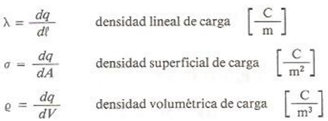
CONDUCTORES Y DIELECTRICOS
Para poder comprender los primeros fenómenos observados es necesario que distingamos entre materiales conductores y materiales aislantes o dieléctricos. Por el momento esta distinción no será rigurosa, ya que aún no tenemos los elementos suficientes que nos permiten comprender adecuadamente la estructura y características de ambos tipos de materiales.
Un material conductor es cualquier sustancia que posee gran cantidad de portadores de carga libres por unidad de volumen; con ayuda de estos es posible transporta carga fácilmente de un lugar a otro a través de ellos ( = 1017 o más portadores por cm3).
EJEMPLOS:
· Metales
· Gas Ionizado
· Electrolitos
Llamaremos aislante o dieléctricos a cualquier sustancia que ni posee portadores de carga libres, o bien , que poseen un número muy reducido por unidad de volumen (=105 o menos portadores por cm3).
EJEMPLOS:
· Plástico
· Aceite
· Helio No Ionizado
Existen materiales que poseen un número de portadores de carga libre del orden de 1011 en cada cm3 a temperatura ambiente de 300k, que se conoce como semiconductores. Estos materiales no se mencionará en el desarrollo de este tema.
INDUCCIÓN DE CARGAS
Cuando un material cualquiera es colocado en la vecindad de un cuerpo cargado, se detecta en la aparición de una distribución superficial de carga; este fenómeno se conoce como inducción de carga.
Si el material es un conductor metálico, la presencia de la carga inducida se debe al movimiento de los errores libres que son atraídos o rechazados dejando exceso de carga positiva al desplazarse y aumentado la negatividad donde se acumula.

En los dieléctricos la aparición de carga inducidas se debe a la orientación molécula o electrón.
Es conveniente enfatizar que el fenómeno de inducción de carga no altera el balance de cargas positivas y negativas de los cuerpos, ya que si aparece carga de un tipo en una zona del material, la misma cantidad de carga de distintos tipos aparecerá en otra.
Introduciremos los conceptos de campo y potencial eléctrico desarrollado los modelos matemáticos que describen este fenómeno electrostático.
1.2 Ley de Coulomb. Fuerza eléctrica en forma vectorial. Principio de superposición.
1.3 Campo eléctrico como campo vectorial. Esquemas de campo eléctrico.
1.4 Obtención de campos eléctricos en forma vectorial originados por distribuciones discretas y continuas de carga (carga puntual, línea infinita y superficie infinita).
1.5 Concepto y definición de flujo eléctrico.
1.6 Ley de Gauss en forma integral y sus aplicaciones.
1.7 El campo electrostático y el concepto de campo conservativo.
1.8 Energía potencial eléctrica. Diferencia de potencial y potencial eléctricos.
1.9 Cálculo de diferencias de potencial (carga puntual, línea infinita, superficie infinita y placas planas y paralelas).
1.10 Gradiente de potencial eléctrico.
2. Capacitancia y dieléctricos.
2.1 Concepto de capacitor y definición de capacitancia.
2.2 Cálculo de la capacitancia de un capacitor de placas planas y paralelas con aire como dieléctrico.
2.3 Cálculo de la energía almacenada en un capacitor.
2.4 Conexiones de capacitores en serie y en paralelo; capacitor equivalente.
2.5 Polarización de la materia.
2.6 Susceptibilidad, permitividad, permitividad relativa y campo eléctrico de ruptura.
2.7 Vectores eléctricos. Capacitor de placas planas y paralelas con dieléctricos.
3. Introducción a los circuitos eléctricos.
3.1 Conceptos y definiciones de: corriente eléctrica, velocidad media de los portadores de carga libres y densidad de corriente eléctrica.
3.2 Ley de Ohm, conductividad y resistividad.
3.3 Potencia eléctrica. Ley de Joule.
3.4 Conexiones de resistores en serie y en paralelo, resistor equivalente.
3.5 Concepto y definición de fuerza electromotriz. Fuentes de fuerza electromotriz: ideales y reales.
3.6 Nomenclatura básica empleada en circuitos eléctricos.
3.7 Leyes de Kirchhoff y su aplicación en circuitos resistivos con fuentes de voltaje continuo.
3.8 Introducción a los circuitos RC en serie con voltaje continuo.
4. Magnetostática.
4.1 Descripción de los imanes y experimento de Oersted
4.2 Fuerza magnética, como vector, sobre cargas en movimiento.
4.3 Definición de campo magnético (B).
4.4 Obtención de la expresión de Lorentz para determinar la fuerza electromagnética, como vector.
4.5 Ley de Biot-Savart y sus aplicaciones. Cálculo del campo magnético de un segmento de conductor recto, espira en forma de circunferencia, espira cuadrada, bobina y solenoide.
4.6 Ley de Ampere.
4.7 Concepto y definición de flujo magnético. Flujo magnético debido a un conductor recto y largo, a un solenoide largo y a un toroide.
4.8 Ley de Gauss en forma integral para el magnetismo.
4.9 Fuerza magnética entre conductores, momento dipolar magnético.
4.10 Principio de operación del motor de corriente directa.
5. Inducción electromagnética.
5.1 Ley de Faraday y principio de Lenz.
5.2 Fuerza electromotriz de movimiento.
5.3 Transformador con núcleo de aire.
5.4 Principio de operación del generador eléctrico.
5.5 Conceptos de inductor, inductancia propia e inductancia mutua.
5.6 Cálculo de inductancias. Inductancia propia: de un solenoide, de un toroide. Inductancia mutua entre dos solenoides coaxiales.
5.7 Energía almacenada en un campo magnético.
5.8 Conexión de inductores en serie y en paralelo; inductor equivalente.
5.9 Introducción a los circuitos RL y RLC en serie con voltaje continuo.
6. Fundamentos de las propiedades magnéticas de la materia.
6.1 Diamagnetismo, paramagnetismo y ferromagnetismo.
6.2 Definición de los vectores intensidad de campo magnético (H) y magnetización (M).
6.3 Susceptibilidad, permeabilidad del medio y del vacío, permeabilidad relativa.
6.4 Comportamiento de los materiales ferromagnéticos. Curva de magnetización y ciclo de histéresis.
6.5 Circuitos magnéticos. Fuerza magnetomotriz y reluctancia en serie.
6.6 El transformador con núcleo ferromagnético.
7. Bibliografía.
JARAMILLO MORALES, Gabriel Alejandro, ALVARADO CASTELLANOS, Alfonso Alejandro - Electricidad y magnetismo.
YOUNG,HUGH D.,FREEDMAN,ROGER A. - Sears y Zemansky Física universitaria con física moderna.
ANÁLISIS NUMÉRICO (1433)
Objetivo(s) del curso:
El alumno utilizará métodos numéricos para obtener soluciones aproximadas de modelos matemáticos. Elegirá el método que le proporcione mínimo error y utilizará equipo de cómputo como herramienta para desarrollar programas.
1. Aproximación numérica y errores.
1.1 Introducción histórica de los métodos numéricos.
MÉTODOS NUMÉRICOS
Los Métodos Numéricos constituyen técnicas mediante las cuales es posible formular problemas matemáticos, de tal forma que puedan resolverse utilizando operaciones aritméticas.
Aunque existen muchos tipos de métodos numéricos, éstos comparten una característica común: invariablemente requieren de un buen número de tediosos cálculos aritméticos.
A diferencia de las técnicas propias de la matemática analítica, los métodos numéricos requieren de una aproximación a la solución real al problema, misma que es corregida a través de la repetición de un cierto proceso que debe arrojar soluciones cada vez más cercanas al valor real.
Cada corrección de un valor inicial se conoce como iteración.
No existe unanimidad entre los expertos sobre si Análisis Numérico es un sinónimo de métodos numéricos.
Algunos consideran que los métodos numéricos son procesos con objetivos particulares los cuales conforman un proceso más complejo, el cual es específicamente la interpretación de los resultados, al cual denominan Análisis numérico.
ANTECEDENTES MATEMÁTICOS
Raíces de ecuaciones: Estos problemas están relacionados con encontrar el valor de una variable o parámetro que cumpla con una ecuación no lineal. Son muy útiles en proyectos de ingeniería, donde a menudo es imposible despejar analíticamente los parámetros de las ecuaciones de diseño.
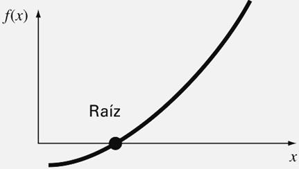
Sistemas de ecuaciones algebraicas lineales: Estos problemas son similares a los de raíces de ecuaciones, pero en lugar de una sola ecuación, buscamos un conjunto de valores que cumplan simultáneamente varias ecuaciones lineales. Estas ecuaciones surgen en muchos problemas de ingeniería, especialmente en modelos de sistemas grandes y complejos como estructuras, circuitos eléctricos y redes de flujo. También aparecen en otras áreas de los métodos numéricos como el ajuste de curvas y las ecuaciones diferenciales.
Optimización: En estos problemas se trata de determinar el valor o los valores de una variable independiente que corresponden al "mejor" o al valor óptimo de una función. La optimización se enfoca en identificar los máximos y mínimos. Estos problemas son comunes en el diseño de ingeniería y en otros métodos numéricos. En este texto, nos centraremos en la optimización tanto para una sola variable como para varias variables sin restricciones. Además, abordaremos la optimización restringida, poniendo especial énfasis en la programación lineal.

Ajuste de curvas: A menudo será necesario ajustar curvas a un conjunto de datos representados por puntos. Las técnicas desarrolladas para tal propósito se dividen en dos categorías generales: regresión e interpolación. La primera se emplea cuando hay un significativo grado de error asociado con los datos; con frecuencia los datos experimentales son de este tipo. Para estas situaciones, la estrategia es encontrar una curva que represente la tendencia general de los datos, sin necesidad de tocar los puntos individuales. En contraste, la interpolación se utiliza cuando el objetivo es determinar valores intermedios entre datos que estén, relativamente, libres de error. Tal es el caso de la información tabulada. En dichas situaciones, la estrategia consiste en ajustar una curva directamente mediante los puntos obtenidos como datos y usar la curva para predecir valores intermedios.
Integración: La integración representa gráficamente la interpretación de la integración numérica es la determinación del área bajo la curva. La integración tiene diversas aplicaciones en la práctica de la ingeniería, que van desde la determinación de los centroides de objetos con formas extrañas, hasta el cálculo de cantidades totales basadas en conjuntos de medidas discretas. Además, las fórmulas de integración numérica desempeñan un papel importante en la solución de ecuaciones diferenciales.

Ecuaciones diferenciales ordinarias: Éstas tienen una enorme importancia en la práctica de la ingeniería, lo cual se debe a que muchas leyes físicas están expresadas en términos de la razón de cambio de una cantidad, más que en términos de la cantidad misma. Entre los ejemplos tenemos los modelos de predicción demográfica (razón de cambio de la población), hasta la aceleración de un cuerpo que cae (razón de cambio de la velocidad). Se tratan dos tipos de problemas: problemas con valor inicial y problemas con valores en la frontera. Además veremos el cálculo de valores propios.
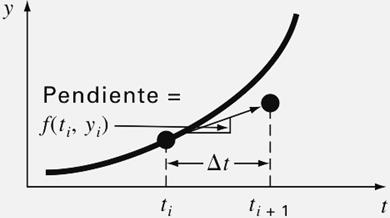
Ecuaciones diferenciales parciales: Las ecuaciones diferenciales parciales sirven para caracterizar sistemas de ingeniería, en los que el comportamiento de una cantidad física se expresa en términos de su razón de cambio con respecto a dos o más variables independientes. Entre los ejemplos tenemos la distribución de temperatura en estado estacionario sobre una placa caliente (espacio bidimensional) o la temperatura variable con el tiempo de una barra caliente (tiempo y una dimensión espacial).
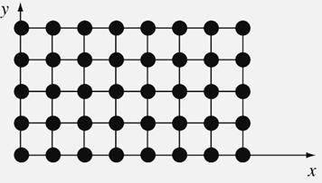
Para resolver numéricamente las ecuaciones diferenciales parciales se emplean dos métodos bastante diferentes. En el presente texto haremos énfasis en los métodos de las diferencias finitas que aproximan la solución usando puntos discretos. No obstante, también presentaremos una introducción a los métodos de elementos finitos, los cuales usan una aproximación con piezas discretas.
HISTORIA DE LOS MÉTODOS NUMÉRICOS
La historia de los métodos numéricos esta ligada a la colección de acontecimientos matemáticos en los que se resuelven problemas sin el uso de la matemática analítica.
Algunos de los métodos más utilizados en la actualidad fueron creados mucho antes de la invención de la computadora; su aplicación era extenuante y complicada porque cada iteración requería de una diversidad de operaciones aritméticas que se realizaban por grupos enteros de calculistas, evidentemente, de forma manual.
Todos los enterados en la materia estarán de acuerdo en que una computadora realiza una gran cantidad de operaciones en un intervalo muy pequeño; las supercomputadoras lo hacen pero en forma paralela. Esta capacidad es la que ha dado un sentido de aplicación a los métodos numéricos.
Por lo anterior, la historia de los métodos numéricos es paralela, al menos desde la mitad del siglo XIX, a la historia de la computación. Las contribuciones más actuales radican en la creación de software que minimiza los errores y mejora las aproximaciones de los resultados.
· 1650 a.C.: Se crean los Papiros de Rhind en los que se describe un método para resolver expresiones matemáticas sin álgebra.
· 250 a.C.: Euclides crea el Método de Exhausción, que consiste en aproximar figuras geométricas (triángulos, cuadrados, pentágonos, etc.) consecutivamente dentro de un círculo para obtener una aproximación a π.
· Siglo IX d.C.: Al Juarismi crea los algoritmos.
· 1623: John Napier inventa los huesos de Napier, que son arreglos prácticos de logaritmos en tablas.
· Siglo XVII: Isaac Newton crea los procesos de interpolación polinomial.
· Siglo XVIII: Leibniz crea el Cálculo diferencial.
· 1768: Euler crea soluciones aproximadas a ecuaciones diferenciales con el principio de la integración numérica. Jacob Stirling y Brook Taylor presentan el Cálculo de diferencias finitas.
· 1822: Charles Babbage inventa la Máquina diferencial.
· 1843: Ada, condesa de Lovelace, publica sus notas sobre la máquina analítica de Charles Babbage.
· 1890: (IBM) Tabula el censo estadounidense empleando las máquinas de tarjetas perforadas de Herman Hollerith.
· 1931: Vannebar Bush diseña el analizador diferencial, un computador analógico electromecánico. En 1945 publicará el artículo "Cómo podremos pensar" en el que describe la computadora personal.
· 1937: Alan Turing publica "Sobre los números computables", donde describe un computador universal. Alan Turing mismo había construido un pequeño prototipo, en el que se usaba un computador Atanasoff conceptualizado en 1939. También John Vincent Atanasoff parte de la máquina diferencial de Babbage para completarla en 1939.
· 1938: William Hewlett y David Packard crean su empresa en Palo Alto, California, Estados Unidos.
· 1939: Turing comienza a descifrar los códigos secretos alemanes.
· 1941: John von Neumann redacta el primer informe sobre EDVAC. En distintas universidades de Estados Unidos se desarrollan proyectos sobre computadoras cuya aplicación (secreta) será apoyar a la milicia en cálculos balísticos (ecuaciones diferenciales).
· 1950: Turing crea su famosa prueba sobre la inteligencia artificial; se suicidará en 1954. J.H. Wilkinson acudió al Laboratorio Nacional de Física de Reino Unido para construir una versión más simple de la máquina de Turing: construyó la ACE (Automatic Computing Engine) para resolver cálculos con matrices.
· 1953: John W. Backus, empleado de IBM, desarrolla FORTRAN (Fórmula Translating) como una alternativa al uso del lenguaje ensamblador; se usó por primera vez en una IBM 704.
· 1958: Se anuncia la creación de la Agencia de Proyectos de Investigación Avanzada (ARPA).
· 1962: Doug Engelbart publica "Aumentar el intelecto humano"; en 1963, junto con Bill English inventan el ratón.
· 1969: Misión Apolo 11. Katherine Johnson calcula la trayectoria del cohete Mercurio. Dorothy Vaughan se convierte en la supervisora de IBM dentro de la NASA. Mary Jackson es la primera ingeniera aeroespacial en Estados Unidos. Margaret Hamilton escribe el código del programa que controla la nave. Todas ellas tuvieron una participación fundamental para que la misión fuera un éxito.
· 1970: Investigadores visitantes en el Argonne National Laboratory de Estados Unidos traducen códigos de ALGOL para obtener eigenvalores planteados por Wilkinson para incluirlos en FORTRAN. De esta labor nace EISPACK en 1976 y posteriormente LINPACK en 1976.
· 1973: Vint Cerf y Bob Kahn completan los protocolos TCP/IP.
· 1975: Bill Gates y Paul Allen desarrollan el lenguaje de programación BASIC; fundan Microsoft. Steve Jobs y Steve Wozniak lanzan el Apple I.
· 1983: Richard Stallman empieza a desarrollar el proyecto GNU.
· 1984: Cleve Moler, a partir de EISPACK y LINPACK crea MATLAB; funda la empresa MathWorks
· 1997. Deep Blue, de IBM, derrota a Gari Kasparov en una partida de ajedrez.
1.2 Necesidad de la aplicación de los métodos numéricos en la ingeniería.
1.3 Conceptos de aproximación numérica y error.
1.4 Tipos de error: Inherentes, de redondeo y por truncamiento. Errores absoluto y relativo.
1.5 Conceptos de estabilidad y convergencia de un método numérico.
1.6 Aproximación de funciones por medio de polinomios.
2. Solución numérica de ecuaciones algebraicas y trascendentes.
2.1 Métodos cerrados. Método de bisección y de interpolación lineal (regla falsa). Interpretaciones geométricas de los métodos.
2.2 Métodos abiertos. Método de aproximaciones sucesivas y método de Newton-Raphson. Interpretaciones geométricas de los métodos y criterios de convergencia.
2.3 Método de factores cuadráticos.
3. Solución numérica de sistemas de ecuaciones lineales.
3.1 Reducción de los errores que se presentan en el método de Gauss-Jordan. Estrategias de pivoteo.
3.2 Métodos de descomposición LU. Crout y Doolittle.
3.3 Métodos iterativos de Jacobi y Gauss-Seidel. Criterio de convergencia.
3.4 Método de Krylov para obtener los valores y vectores característicos de una matriz y método de las potencias.
4. Interpolación, derivación e integración numéricas.
4.1 Interpolación con incrementos variables (polinomio de Lagrange).
4.2 Tablas de diferencias finitas. Interpolación con incrementos constantes (polinomios interpolantes). Diagrama de rombos.
4.3 Derivación numérica. Deducción de esquemas de derivación. Extrapolación de Richardson.
4.4 Integración numérica. Fórmulas de integración trapecial y de Simpson. Cuadratura gaussiana.
5. Solución numérica de ecuaciones en derivadas parciales.
5.1 Clasificación de las ecuaciones en derivadas parciales.
5.2 Aproximación de derivadas parciales a través de diferencias finitas.
5.3 Solución de ecuaciones en derivadas parciales utilizando el método de diferencias finitas.
6. Solución numérica de ecuaciones y sistemas de ecuaciones diferenciales.
6.1 Método de la serie de Taylor.
6.2 Método de Euler modificado.
6.3 Método de Runge-Kuta de 2º y 4º orden.
6.4 Solución aproximada de sistemas de ecuaciones diferenciales.
6.5 Solución de ecuaciones diferenciales de orden superior por el método de diferencias finitas.
6.6 El problema de valores en la frontera.
7. Bibliografía.
CHAPRA, Steven C., CANALE, Raymond P. - Métodos numéricos para ingenieros.
TERMODINÁMICA (1437)
Objetivo(s) del curso:
El alumno analizará los principios básicos y fundamentales de la termodinámica clásica para aplicarlos en la solución de problemas físicos. Desarrollará sus capacidades de observación y razonamiento lógico para ejercer la toma de decisiones en la solución de problemas que requieran balances de masa, energía y entropía; manejará e identificará algunos equipos e instrumentos utilizados en procesos industriales.
1. Conceptos Fundamentales.
1.1 Campo de estudio de la termodinámica clásica.
TERMODINÁMICA Y ENERGÍA
La Termodinámica se puede definir como la ciencia de la energía. Aunque todo el mundo tiene una idea de lo que es la energía, es difícil definirla de forma precisa. La energía se puede considerar como la capacidad para causar cambios.
El término termodinámica proviene de las palabras griegas therme (calor) y dynamis (fuerza), lo cual corresponde a lo más descriptivo de los primeros esfuerzos por convertir el calor en energía. En la actualidad, el concepto se interpreta de manera amplia para incluir los aspectos de energía y sus transformaciones, incluida la generación de potencia, la refrigeración y las relaciones entre las propiedades de la materia.
Una de las más importantes y fundamentales leyes de la naturaleza es el principio de conservación de la energía. Ésta expresa que durante una interacción, la energía puede cambiar de una forma a otra, pero su cantidad total permanece constante. Es decir, la energía no se crea ni se destruye. Una roca que cae de un acantilado, por ejemplo, adquiere velocidad como resultado de su energía potencial convirtiéndose en energía cinética.
El principio de conservación de la energía también estructura la industria de las dietas: una persona que tiene mayor consumo energético (alimentos) respecto a su gasto de energía (ejercicio) aumentará de peso (almacena energía en forma de grasa), mientras otra con menor consumo respecto a su gasto energético perderá peso. El cambio en el contenido energético de un cuerpo o de cualquier sistema se calcula como la diferencia entre la entrada y la salida de energía, y el balance de ésta se expresa como:
Eentrada - Esalida = ΔE
La primera ley de la termodinámica es simplemente una expresión del principio de conservación de la energía y sostiene que la energía es una propiedad de la materia. La segunda ley de la termodinámica afirma que la energía tiene calidad además de cantidad, y que los procesos reales ocurren hacia donde disminuye la calidad de la energía.
Por ejemplo, el calor de una taza de café caliente sobre una mesa en algún momento se enfría, pero no ocurre de manera inversa de forma espontánea. La energía de la temperatura del café se degrada (se transforma en una forma menos útil o a otra con menor temperatura), aunque no se transfiere hacia el aire circundante.
Aunque los principios de la termodinámica han existido desde la creación del universo, esta ciencia surgió como tal hasta que Thomas Savery en 1697 y Thomas Newcomen en 1712 construyeron en Inglaterra las primeras máquinas de vapor atmosféricas estacionarias, las cuales eran muy lentas e ineficientes, pero abrieron el camino para el desarrollo de una nueva ciencia.
La primera y segunda leyes de la termodinámica surgieron de forma simultánea a partir del año de 1850, principalmente de los trabajos de William Rankine, Rudolph Clausius y Lord Kelvin (antes William Thomson). El término termodinámica se usó primero en una publicación de Lord Kelvin en 1849; poco después, William Rankine, profesor en la universidad de Glasgow, escribió en 1859 el primer texto sobre el tema.
Se descubrió que la materia está constituida por un gran número de partículas llamadas moléculas, y que las propiedades de cada sustancia dependen, en su mayoría, del comportamiento de estas partículas. Por ejemplo, la presión de un gas en un recipiente es el resultado de la transferencia de cantidad de movimiento entre moléculas y las paredes del recipiente. Sin embargo, no es necesario conocer el comportamiento de las partículas de gas para determinar la presión del recipiente, bastará con calcular el número de moléculas por unidad de volumen y su velocidad promedio.
Este enfoque macroscópico al estudio de la termodinámica que no requiere un conocimiento del comportamiento molecular se llama termodinámica clásica.
1.2 Sistemas termodinámicos cerrados y abiertos. Fronteras.
1.3 Propiedades termodinámicas macroscópicas intensivas y extensivas, ejemplos y objetivo de esta clasificación de las propiedades.
1.4 Concepto de Presión (relativa, atmosférica, absoluta).
1.5 Equilibrios: térmico, mecánico y químico. Ley cero de la termodinámica, definición de temperatura, propiedades termométricas, escalas de temperatura y temperatura absoluta.
1.6 El postulado de estado. El diagrama (v ,P). Definición de proceso termodinámico, Proceso casiestático, Proceso casiestático: isobárico, isométrico, isotérmico, adiabático y politrópico. El proceso cíclico.
2. Primera Ley de la Termodinámica.
2.1 Concepto de calor como energía en tránsito. Capacidad térmica específica. Convención de signos.
2.2 Concepto de trabajo como mecanismo de trasmisión de energía. La definición mecánica. Trabajo de eje, trabajo de flujo y trabajo casiestático de una sustancia simple compresible. Convención de signos.
2.3 El experimento de Joule, relación entre calor y trabajo.
2.4 Primera Ley de la Termodinámica. El principio de conservación de la energía. Balances de masa y energía en sistemas cerrados y abiertos (Principalmente en equipos industriales de interés en la Termodinámica).
2.5 Ecuaciones de balance de energía en sistemas cerrados. Ecuaciones de balance de masa y energía en sistemas abiertos bajo régimen estable, permanente o estacionario, régimen uniforme y en fluidos incompresibles. Balances en sistemas que realizan ciclos. Eficiencia térmica.
2.6 La energía interna y el calor a volumen constante: la capacidad térmica específica a volumen constante (cv). La entalpia y el calor a presión constante: la capacidad térmica específica a presión constante (cp).
3. Propiedades de una sustancia pura.
3.1 Definición de una sustancia pura. La curva de calentamiento de una sustancia pura; entalpia de sublimación, fusión y vaporización. Diagramas de fase tridimensionales (P, V, T). Punto crítico y punto triple. La calidad.
3.2 Representación de procesos casiestáticos termodinámicos de una sustancia pura en los diagramas de fase: (T, P), (V, P) y (H, P).
3.3 Coeficiente de Joule-Thomson. Línea de inversión.
3.4 Estructura de las tablas de propiedades (P, V, T, U y h) termodinámicas de algunas sustancias de trabajo, como el agua y algunos refrigerantes. Interpolación y extrapolación lineal. Uso de programas de computadora para obtener los valores numéricos de las propiedades termodinámicas de dichas sustancias de trabajo.
4. Gases Ideales.
4.1 Ecuación de estado. Descripción breve de los experimentos de Robert Boyle y Edme Mariotte, Jacques Charles y Louis Joseph Gay-Lussac, relacionar estas leyes en un diagrama (v, P) para la obtención de la ecuación de estado de los gases ideales.
4.2 La temperatura Absoluta.
4.3 El gas ideal y su ecuación de estado.
4.4 Ley de James Prescott Joule (u = f (T)) y ley de Amadeo Avogadro en los gases ideales.
4.5 La fórmula de Meyer. La ecuación de Poisson para el análisis de los procesos: isócoro, isobárico, isotérmico, politrópico y adiabático. Variación del índice politrópico (n) y del índice adiabático (k).
4.6 Explicar brevemente la definición de capacidad térmica específica a presión constante y capacidad térmica específica a volumen constante, su uso en los gases ideales y su relación con la entalpia específica y energía interna específica.
5. Balances de masa y energía.
5.1 Establecimiento de una metodología general en la resolución de problemas bajo las consideraciones de: fronteras reales e imaginarias, paredes adiabáticas, diatérmicas, régimen estable o estacionario, régimen uniforme y procesos cíclicos.
5.2 Aplicación de la primera Ley de la Termodinámica a sistemas cerrados (isócoro, isobárico, isotérmico, politrópico y adiabático), en máquinas, dispositivos o sistemas que usen gas ideal e índice adiabático constante (k), con sustancias puras haciendo uso de tablas (o programas de computadora) de propiedades termodinámicas.
5.3 Aplicación de la primera Ley de la Termodinámica a sistemas abiertos, en máquinas, dispositivos o sistemas que operen en régimen estable, estacionario como turbinas de gas o turbinas de vapor, en una bomba centrífuga (ecuación de Bernoulli). En sistemas que operen en régimen uniforme como llenado y vaciado de tanques.
6. Segunda Ley de la Termodinámica.
6.1 El postulado de Clausius (bomba de calor) y de Kelvin-Planck (máquina térmica), haciendo énfasis en la imposibilidad de obtener una eficiencia térmica del 100% y un coeficiente de operación (COP) infinito, respectivamente.
6.2 El proceso reversible y su conexión con el proceso casiestático. Causas de irreversibilidad.
6.3 El teorema de Carnot. La escala termodinámica de temperaturas absolutas.
6.4 ¿Cuáles son los valores máximos para la eficiencia térmica y coeficiente de operación?, respuesta de Carnot a esta pregunta, proponiendo un ciclo ideal.
6.5 Desigualdad de Clausius. La entropía como una propiedad termodinámica de la sustancia.
6.6 Diagramas de fase: (S, T) y (S, H) o de Mollier.
6.7 La generación de entropía.
6.8 El balance general de entropía en sistemas cerrados y abiertos con sustancias puras y reales.
6.9 Variación de entropía en los gases ideales.
7. Bibliografía.
CENGEL, Yunus, BOLES, Michael - Termodinámica.
QUINTO SEMESTRE
ANÁLISIS DE CIRCUITOS (1550)
Objetivo(s) del curso:
El alumno analizará circuitos eléctricos a partir de los elementos, teoría básica y leyes correspondientes, el modelado y la resolución de redes, tanto de corriente directa como en los estados transitorio y sinusoidal permanente, así como, el manejo de herramientas básicas de simulación con equipo de cómputo y de instrumentos experimentales de circuitos eléctricos.
1. Elementos básicos de circuitos resistivos.
1.1 Elementos que constituyen un circuito, resistor y resistencia, modelos de fuentes ideales y reales de voltaje y de corriente.
Circuitos Eléctricos
El Análisis de los Circuitos Eléctricos se fundamenta en componentes esenciales que definen su estructura y funcionamiento. Entre ellos, encontramos resistencias, fuentes de tensión y corriente, tanto ideales como reales, los cuales juegan un papel crucial en el diseño y la operación de los sistemas eléctricos.
ELEMENTOS QUE CONSTITUYEN UN CIRCUITO
Un circuito eléctrico está formado por elementos que pueden clasificarse según la relación entre la corriente que circula a través de ellos y la tensión que se aplica en sus extremos. Los componentes más comunes incluyen:
1. Resistencias: La tensión es proporcional a la corriente, lo que se describe mediante la ley de Ohm. Es un componente pasivo, lo que significa que no puede generar energía por sí mismo.
2. Inductores: Estos elementos relacionan la tensión con la derivada de la corriente respecto al tiempo, almacenando energía en un campo magnético.
3. Capacitores: La tensión es proporcional a la integral de la corriente, permitiendo el almacenamiento de energía en un campo eléctrico.
4. Fuentes de energía: Incluyen fuentes de tensión y corriente, que pueden ser independientes o dependientes. Estas últimas dependen de una corriente o tensión en otro punto del circuito.
El estudio y modelado de estos elementos se basan en representaciones matemáticas, que simplifican su comportamiento físico para facilitar el análisis de circuitos. Esto permite aproximaciones razonables en aplicaciones prácticas
RESISTENCIA Y RESISTORES
La resistencia, un concepto fundamental en circuitos eléctricos, se define como la capacidad de un material para oponerse al flujo de corriente. Matemáticamente, la ley de Ohm establece:
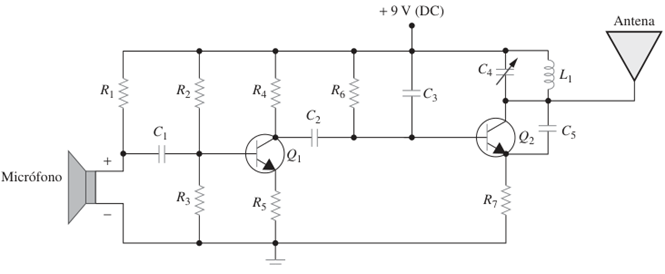
Donde 𝑣 es la tensión aplicada, 𝑖 es la corriente que fluye y 𝑅 es la resistencia del material. Este comportamiento se considera lineal en la mayoría de los casos prácticos, aunque factores como la temperatura pueden influir en la resistencia de un material.
La potencia disipada por un resistor, un parámetro esencial en el diseño de circuitos puede calcularse mediante diversas fórmulas:

Esto refleja cómo la energía eléctrica se convierte en calor dentro del componente
En dispositivos reales, la resistencia no siempre es ideal. Las resistencias pueden ser afectadas por factores como la no linealidad, límites de potencia y temperatura. Por ejemplo, al sobrepasar su capacidad de disipación, una resistencia puede fallar catastróficamente.
MODELOS DE FUENTES IDEALES Y REALES DE VOLTAJE Y CORRIENTE
Fuentes ideales
Las fuentes ideales son modelos matemáticos que simplifican el comportamiento de dispositivos reales:
· Fuente de tensión independiente: Mantiene una tensión constante sin importar la corriente que fluya a través de ella. Es representada por símbolos estándar y se considera una aproximación razonable de baterías o fuentes reguladas.
· Fuente de corriente independiente: Suministra una corriente constante sin importar la tensión en sus terminales. Aunque idealmente proporciona potencia infinita, en la práctica se aproxima con circuitos electrónicos
Fuentes dependientes
Estas fuentes, también conocidas como fuentes controladas, dependen de una tensión o corriente en otro punto del circuito. Se utilizan ampliamente en modelos de transistores y amplificadores operacionales, permitiendo la simulación de sistemas más complejos.
Fuentes reales
En aplicaciones prácticas, ninguna fuente es realmente ideal. Por ejemplo:
· Una fuente de tensión real puede modelarse como una fuente ideal en serie con una resistencia interna. Esta resistencia refleja la caída de tensión al suministrar corriente.
· De manera similar, una fuente de corriente real puede representarse como una fuente ideal en paralelo con una resistencia. Esto limita la corriente máxima que puede suministrar.
Estas representaciones permiten analizar circuitos en condiciones más realistas, teniendo en cuenta las limitaciones físicas de los componentes.
CONSIDERACIONES FINALES
El análisis de circuitos eléctricos requiere comprender cómo interactúan estos elementos en diferentes configuraciones. La capacidad de distinguir entre modelos ideales y reales es fundamental para diseñar sistemas eficientes y funcionales. Además, el uso de modelos matemáticos para representar componentes físicos facilita el desarrollo de soluciones a problemas complejos en ingeniería eléctrica.
1.2 Ley de Ohm y convención pasiva de signos; potencia eléctrica y conservación de la carga, resistores en serie y en paralelo, transformación deltaestrella.
1.3 Leyes de Kirchhoff, métodos de análisis de circuitos: por mallas y por nodos, principio de superposición.
1.4 Análisis y diseño de circuitos resistivos por medio de simulación con equipo de cómputo.
2. Circuitos resistivos con fuentes independientes y dependientes.
2.1 Fuentes de corriente y de voltaje dependientes o controladas, análisis de circuitos resistivos con fuentes independientes y dependientes.
2.2 Transformación de fuentes, equivalencia de circuitos, teoremas de Thévenin y de Norton, teorema de máxima transferencia de potencia.
2.3 Amplificador operacional como aplicación de circuitos con fuentes dependientes; configuración inversora, no inversora, el sumador, el seguidor y el comparador.
2.4 Análisis y simulación de circuitos resistivos con fuentes independientes y dependientes con equipo de cómputo.
3. Análisis del estado transitorio de circuitos RC, RL y RLC.
3.1 Señales básicas en la teoría de circuitos: escalón, impulso o delta de Dirac, rampa, exponencial y sinusoidal, su representación matemática y gráfica; obtención de la expresión matemática de señales lineales compuestas y su representación gráfica con equipo de cómputo.
3.2 Obtención y análisis de los modelos matemáticos de los circuitos RC y RL, constantes de tiempo.
3.3 Interpretación de las respuestas libre y forzada de los circuitos RC y RL con condiciones iniciales; respuesta a las señales básicas: escalón, impulso, exponencial y sinusoidal; aplicación del teorema de Thévenin para el planteamiento de la ecuación de circuitos RC y RL; análisis del circuito integrador con amplificador operacional.
3.4 Circuito RLC serie con fuente de voltaje y paralelo con fuente de corriente: modelo matemático, ecuación característica y valores característicos; análisis de los diferentes tipos de respuesta libre de circuitos de segundo orden y su relación con los valores característicos: no amortiguada, subamortiguada, críticamente amortiguada y sobreamortiguada; respuesta completa de circuitos de segundo orden con condiciones iniciales: respuesta libre, natural u homogénea y respuesta forzada, permanente o particular; método de variables de estado para el planteamiento del modelo matemático de circuitos eléctricos de segundo orden; modelo matricial de circuitos de segundo orden.
3.5 Diseño de circuitos de segundo orden, a partir de sus valores característicos y de gráficas de su respuesta completa.
3.6 Análisis y simulación de circuitos RC y RL de primer y segundo orden, así como de circuitos RLC de segundo orden con equipo de cómputo.
4. Circuitos en estado sinusoidal permanente.
4.1 Respuesta forzada de circuitos RC, RL y RLC a una excitación sinusoidal; función de excitación exponencial compleja; concepto de fasor; impedancia (resistencia y reactancia) y admitancia (conductancia y susceptancia) de elementos capacitivos e inductivos.
4.2 Análisis de circuitos en estado sinusoidal permanente: fuentes dependientes, leyes de Kirchhoff y métodos de corrientes de malla y de voltajes de nodo usando fasores; aplicación de los teoremas de superposición y de Thévenin para el análisis de circuitos en estado sinusoidal permanente; diagramas fasoriales.
4.3 Análisis y simulación de circuitos en estado sinusoidal permanente con equipo de cómputo.
4.4 Concepto de potencia instantánea y promedio; valor efectivo o eficaz (rms) de una señal periódica; concepto de potencia compleja; factor de potencia y ángulo de potencia; problemas de corrección del factor de potencia de una instalación eléctrica.
4.5 Obtención de la potencia compleja y resolución de problemas de corrección del factor de potencia con equipo de cómputo.
4.6 Introducción a los sistemas trifásicos: descripción del generador trifásico, características principales, voltaje de fase o de línea a neutro y voltaje de línea a línea o entre fases; análisis de circuitos trifásicos balanceados con cargas delta y estrella; transformación deltaestrella; potencia instantánea y promedio de circuitos trifásicos balanceados.
5. Respuesta en frecuencia de circuitos eléctricos.
5.1 Función de red y función de transferencia de un circuito en estado sinusoidal permanente: obtención de su ganancia y de su ángulo de desfase en función de la frecuencia; concepto de decibelio y el diagrama de Bode.
5.2 Resonancia de un circuito RLC y su relación con el factor de potencia; factor de calidad y ancho de banda de un circuito resonante.
5.3 Filtros de primer orden con circuitos RC y RL, concepto de frecuencia de corte y de factor de calidad de un filtro.
5.4 Filtros de segundo orden con circuitos RLC: pasa bajas, pasa altas, pasa bandas y supresor de bandas.
5.5 Análisis, diseño y simulación de filtros de primer y segundo orden con equipo de cómputo.
6. Bibliografía
HAYT, William, KEMMERLY, Jack, DURBIN, Steven - Análisis de circuitos en ingeniería.
TERMOFLUIDOS (1409)
Objetivo(s) del curso:
El alumno aplicará las ecuaciones fundamentales de la termodinámica, la mecánica de fluidos y la transferencia de calor, a la solución de problemas de ingeniería de fluidos y térmica.
1. Introducción.
1.1 Importancia de la ingeniería de fluidos y térmica para el ingeniero industrial. Aplicaciones.
INGENIERÍA DE FLUIDOS Y TÉRMICA
Muchos sistemas de ingeniería involucran la transferencia, transporte y conversión de energía, y las ciencias que se ocupan de estos temas se conocen en general como Ciencias Térmicas-Fluidas. Las ciencias térmicas-fluidas se estudian generalmente bajo las subcategorías de Termodinámica, Transferencia De Calor y Mecánica De Fluidos (Algunos autores también consideran la Combustión).
IMPORTANCIA DE LA INGENIERÍA DE FLUIDOS Y TÉRMICA EN INGENIERÍA INDUSTRIAL Y MECATRÓNICA
La ingeniería de fluidos y térmica representa una disciplina esencial dentro de las ingenierías industrial y mecatrónica, al proporcionar las bases para analizar, diseñar y optimizar sistemas que dependen de la transferencia, transporte y conversión de energía. Estas ciencias se dividen en tres áreas principales: termodinámica, mecánica de fluidos y transferencia de calor. Cada una de estas áreas desempeña un papel crucial en la solución de problemas complejos y la innovación tecnológica, con aplicaciones que abarcan desde procesos industriales hasta el desarrollo de dispositivos avanzados y sustentables.
Aplicaciones en Ingeniería Industrial
En el ámbito de la ingeniería industrial, la termodinámica es clave para comprender y diseñar sistemas de energía que involucran la generación y uso eficiente de recursos energéticos. Por ejemplo, las plantas de energía convencionales y nucleares utilizan principios termodinámicos para convertir energía térmica en electricidad. Este conocimiento también es crucial en la optimización de procesos industriales como el tratamiento térmico de metales o el control de temperatura en líneas de producción automatizadas. La transferencia de calor, por su parte, se aplica en el diseño de intercambiadores térmicos, sistemas de calefacción, ventilación y aire acondicionado (HVAC), y equipos de refrigeración industrial.
La mecánica de fluidos es otra herramienta fundamental para los ingenieros industriales. Es utilizada para diseñar sistemas de transporte de fluidos, como redes de distribución de agua, gas y petróleo, así como para optimizar procesos que implican flujos de materiales líquidos o gaseosos en fábricas y plantas de manufactura. Estos conocimientos también son aplicables en el desarrollo de sistemas urbanos como redes de suministro de agua potable y el diseño eficiente de sistemas de alcantarillado. Asimismo, en aplicaciones logísticas e industriales, la mecánica de fluidos permite calcular las pérdidas de energía y mejorar la eficiencia de sistemas de bombeo.
Aplicaciones en Ingeniería Mecatrónica
En la ingeniería mecatrónica, la ingeniería de fluidos y térmica es esencial para diseñar y controlar sistemas complejos que integran componentes electrónicos, mecánicos y térmicos. Por ejemplo, la transferencia de calor es fundamental para diseñar sistemas de refrigeración en dispositivos electrónicos, como CPUs, sensores y actuadores. En robots industriales y dispositivos automatizados, garantizar un control térmico adecuado es clave para evitar fallos debido al sobrecalentamiento. Además, los sistemas hidráulicos y neumáticos, ampliamente utilizados en robótica y maquinaria avanzada, dependen de la mecánica de fluidos para su diseño y operación.
Los ingenieros mecatrónicos también aplican la termodinámica y la transferencia de calor en el desarrollo de tecnologías sustentables, como paneles solares y turbinas eólicas. Aquí, las ciencias térmicas y de fluidos permiten maximizar la conversión de energía y optimizar el rendimiento de estos sistemas. Asimismo, el modelado y simulación mediante herramientas como la dinámica de fluidos computacional (CFD) son fundamentales para predecir el comportamiento de sistemas complejos antes de su implementación en el mundo real.
Otra área crítica es la biomédica, donde la ingeniería de fluidos y térmica se aplica en el diseño de dispositivos médicos avanzados, como bombas de insulina, prótesis robóticas y equipos quirúrgicos. La mecánica de fluidos, por ejemplo, se emplea para modelar sistemas biológicos como el flujo sanguíneo, facilitando la creación de dispositivos personalizados que mejoran la calidad de vida de los pacientes.
TERMODINÁMICA
El término termodinámica proviene de las palabras griegas therme (calor) y dynamis (fuerza), lo cual corresponde a lo más descriptivo de los primeros esfuerzos por convertir el calor en energía. En la actualidad, el concepto se interpreta de manera amplia para incluir los aspectos de energía y sus transformaciones, incluida la generación de potencia, la refrigeración y las relaciones entre las propiedades de la materia.
La termodinámica es la ciencia que estudia la energía, su transformación y las leyes que rigen estos procesos. Se fundamenta en los principios de conservación de energía y la tendencia natural de los sistemas a evolucionar hacia estados de equilibrio. Los conceptos clave incluyen:
- Principio de conservación de la energía: Éste expresa que durante una interacción, la energía puede cambiar de una forma a otra pero su cantidad total permanece constante. Es decir: la energía no se crea ni se destruye.
El cambio en el contenido energético de un cuerpo o de cualquier otro sistema es igual a la diferencia entre la entrada y la salida de energía, y el balance de ésta se expresa como:

- Primera ley de la termodinámica: Es simplemente una expresión del principio de conservación de la energía, y sostiene que la energía es una propiedad termodinámica. Establece que la energía total de un sistema permanece constante, siendo el calor y el trabajo las formas principales de transferencia de energía.
- Segunda ley de la termodinámica: afirma que la energía tiene calidad así como cantidad, y los procesos reales ocurren hacia donde disminuye la calidad de la energía. Introduce la entropía, una medida del desorden que siempre aumenta en procesos naturales, dictando la dirección de los procesos energéticos.
Las aplicaciones prácticas abarcan:
- Ciclos térmicos como los de motores y turbinas, donde se optimiza la conversión de calor en trabajo.
- Refrigeración y climatización, donde se transfieren energías entre diferentes temperaturas.
- Plantas de energía, diseñadas para maximizar la generación de electricidad mediante ciclos Rankine y Brayton.
TRANSFERENCIA DE CALOR
La termodinámica trata de la cantidad y calidad de la transferencia de calor a medida que un sistema pasa por un proceso de un estado de equilibrio a otro y no hace referencia a cuánto durará ese proceso. Pero en la ingeniería a menudo estamos interesados en la rapidez o razón de esa transferencia, la cual constituye el tema de la ciencia de la transferencia de calor.
La transferencia de calor estudia cómo se desplaza la energía térmica debido a diferencias de temperatura. Sus tres mecanismos principales son:
- Conducción: Transferencia a través de un sólido o entre moléculas en contacto. Es la transferencia de energía de las partículas más energéticas de una sustancia hacia las adyacentes, menos energéticas, como resultado de la interacción entre ellas.
- Convección: Movimiento combinado de moléculas en un fluido, facilitado por gradientes térmicos. Es el modo de transferencia de calor entre una superficie sólida y el líquido o gas adyacente que están en movimiento, y comprende los efectos combinados de la conducción y del movimiento del fluido.
- Radiación: Emisión de energía en forma de ondas electromagnéticas, independiente del medio. Es la energía emitida por la materia en forma de ondas electromagnéticas (o fotones), como resultado de los cambios en las configuraciones electrónicas de los átomos o moléculas.
Esta ciencia se preocupa tanto por la cantidad como por la velocidad de transferencia de calor. Es esencial en:
- Diseño de intercambiadores de calor: Utilizados en sistemas industriales y automotrices.
- Aislamiento térmico: Mejora de la eficiencia energética en edificios.
- Gestión térmica en electrónica: Prevención del sobrecalentamiento en dispositivos sensibles
MECÁNICA DE FLUIDOS
La mecánica es la ciencia física más antigua que estudia tanto los cuerpos en reposo como aquellos en movimiento bajo la influencia de fuerzas. La parte de la mecánica que se ocupa de los cuerpos en reposo se llama estática, mientras que la que estudia los cuerpos en movimiento se llama dinámica.
La mecánica de fluidos es una subdisciplina de la mecánica que se enfoca en el comportamiento de los fluidos, ya sea que estén en reposo (estática de fluidos) o en movimiento (dinámica de fluidos), y en cómo interactúan con sólidos u otros fluidos. De hecho, la dinámica de fluidos incluye a la estática de fluidos como un caso particular donde la velocidad del fluido es cero.
La mecánica de fluidos se divide en varias ramas. La hidrodinámica estudia el movimiento de fluidos prácticamente incompresibles, como los líquidos (especialmente el agua) y los gases a bajas velocidades. Dentro de la hidrodinámica, la hidráulica se concentra en el flujo de líquidos a través de tuberías y canales abiertos. Por otro lado, la dinámica de gases se ocupa del flujo de fluidos que experimentan cambios significativos en su densidad, como los gases que se mueven a altas velocidades a través de toberas. La aerodinámica, por su parte, estudia el flujo de gases, especialmente del aire, alrededor de objetos como aviones, cohetes y automóviles.
Otras disciplinas relacionadas con la mecánica de fluidos incluyen la meteorología, la oceanografía y la hidrología, que estudian los flujos naturales que ocurren en la atmósfera, los océanos y los cuerpos de agua dulce, respectivamente.
Aplicaciones típicas:
- Hidrodinámica e hidráulica: Transporte de agua y control de flujos en canales y tuberías.
- Aerodinámica: Diseño de vehículos y estructuras sometidas al flujo de aire.
- Simulación computacional: Modelado de sistemas complejos para predecir comportamientos
2. Aplicaciones de termodinámica.
2.1 Plantas térmicas de vapor.
Las plantas térmicas de vapor se centran en el uso del Ciclo Rankine para la generación de energía. Este ciclo opera a través de la vaporización del agua en una caldera, su expansión en una turbina para generar trabajo, y su posterior condensación en un condensador para reiniciar el ciclo. Las plantas de vapor se destacan por su alta eficiencia térmica y su capacidad para operar en una amplia gama de temperaturas y presiones. Su diseño involucra optimización de calderas, turbinas y sistemas de condensación.
El vapor de agua es el fluido de trabajo más comúnmente utilizado en ciclos de potencia de vapor debido a sus muchas y atractivas características, como bajo costo, disponibilidad y alta entalpía de vaporización. Por consiguiente, el estudio de las centrales eléctricas de vapor, que son normalmente llamadas centrales carboeléctricas, centrales nucleares o centrales eléctricas de gas natural, dependiendo del tipo de combustible que empleen para suministrar calor al vapor, pueden analizarse de la misma manera.
EL CICLO DE VAPOR DE CARNOT
FUNCIONAMIENTO
El funcionamiento se lleva a cabo mediante un proceso de varias etapas:
- Generación de vapor:
En esta etapa, el agua se calienta en una caldera mediante la quema de combustibles fósiles, biomasa o el uso de energía nuclear. Esto convierte el agua líquida en vapor a alta presión y temperatura. - Expansión del vapor:
El vapor generado se expande en una turbina de vapor, transfiriendo su energía térmica a energía mecánica. Esta etapa es clave para la producción de trabajo útil, que es posteriormente convertido en energía eléctrica mediante un generador. - Condensación del vapor:
El vapor que ha pasado por la turbina entra en un condensador, donde se enfría y se convierte nuevamente en agua líquida. Este proceso reduce la presión del vapor, aumentando la eficiencia del ciclo. - Recirculación del agua:
El agua condensada es bombeada de regreso a la caldera para reiniciar el ciclo. Este circuito cerrado asegura la reutilización del agua y minimiza el desperdicio.
VENTAJAS
- Alta eficiencia:
Con diseños optimizados y técnicas avanzadas, como recalentamiento del vapor o aumento de la presión de operación, las plantas de vapor logran una eficiencia considerable en la conversión de energía. - Flexibilidad en fuentes de energía:
Estas plantas pueden operar con diversas fuentes de energía, como carbón, gas natural, petróleo, biomasa y energía nuclear, lo que las hace versátiles. - Capacidad de generación a gran escala:
Son ideales para la generación de energía en grandes cantidades, siendo una de las principales tecnologías utilizadas en centrales eléctricas alrededor del mundo.
DESAFÍOS
- Impacto ambiental:
Aunque eficientes, las plantas que utilizan combustibles fósiles generan emisiones de CO₂ y otros contaminantes. - Consumo de agua:
El proceso de condensación requiere grandes volúmenes de agua, lo que puede ser un desafío en áreas con escasez del recurso.
2.2 Plantas térmicas de gas.
2.3 Plantas de ciclo combinado.
2.4 Plantas de emergencia y cogeneración.
2.5 Calderas y calorímetros (2hP).
2.6 Ciclo Rankine (2hP).
2.7 Turbina de gas (2hP).
2.8 Turbina de vapor y condensadores (2hP).
2.9 Planta de emergencia (2hP).
2.10 Compresor reciprocante (2hP).
3. Conceptos básicos de mecánica de fluidos.
3.1 Ecuaciones de continuidad, cantidad de movimiento y energía para volúmenes de control.
3.2 Análisis dimensional, semejanza y teoría de modelos.
3.3 Dispositivos de medición de velocidad y flujo.
3.4 Flujo en tuberías.
3.5 Manometría y viscosimetría (2hP).
3.6 Medidores de velocidad (2hP).
3.7 Medidores de gasto (2hP).
3.8 Flujo en tuberías (2hP).
3.9 Bomba centrífuga (2hP).
4. Conceptos básicos de transferencia de calor.
4.1 Conducción: Ley de Fourier, conductividad térmica.
4.2 Convección: Ley de Newton de enfriamiento.
4.3 Radiación: Ley de Stefan-Boltzmann.
4.4 Mecanismos simultáneos.
4.5 Método de las resistencias térmicas equivalentes.
4.6 Introducción a los cambiadores de calor.
4.7 Conducción y convección de calor (2hP).
5. Bibliografía.
CENGEL, Y.a., TURNER R.H. - Fundamental of thermal-fluid sciences.
CENGEL, Y. A., BOLSES, M. A. - Termodinámica.
CENGEL, Y.a. - Mecánica de fluidos.
CENGEL, Y. A - Transferencia de calor y masa.
INGENIERÍA DE MATERIALES (1570)
Objetivo(s) del curso:
El alumno analizará los fundamentos del comportamiento de los materiales de ingeniería, de tal forma que pueda seleccionarlos, modificar sus propiedades y su comportamiento bajo las condiciones de aplicación que a cada caso corresponda.
1. Estructura del átomo.
1.1 Estructura del átomo.
MATERIALES
La Ciencia e Ingeniería de Materiales se basa en una profunda comprensión de la estructura atómica. Es fundamental para entender la materia y las propiedades de los materiales. Un átomo consiste en un núcleo pequeño y denso que contiene protones y neutrones, rodeado por una nube de electrones que se encuentran en constante movimiento dentro de orbitales. Los protones tienen una carga positiva, mientras que los neutrones son neutros. La cantidad de protones en el núcleo define el número atómico, que a su vez determina las propiedades químicas del elemento. Por otro lado, la masa del átomo está principalmente concentrada en el núcleo debido a la presencia de protones y neutrones, mientras que los electrones tienen una masa mucho menor y contribuyen poco a la masa total.
El concepto de niveles y subniveles energéticos es crucial para entender cómo se organizan los electrones alrededor del núcleo. Cada nivel energético puede dividirse en subniveles designados como s, p, d y f, cada uno con un número específico de orbitales. Por ejemplo, el nivel energético más bajo, 1s, puede albergar hasta dos electrones. A medida que el número atómico aumenta, los electrones ocupan niveles y subniveles más altos según el principio de Aufbau, que establece que los electrones se colocan en el nivel de energía más bajo disponible.
Además, las interacciones entre las partículas subatómicas y las fuerzas fundamentales de la naturaleza, como la fuerza nuclear fuerte y la electromagnética, juegan un papel esencial en la estabilidad y las propiedades del átomo. La comprensión detallada de la estructura atómica ha permitido avances significativos en áreas como la química, la física de materiales y la nanotecnología.
1.2 Modelo atómico.
A lo largo de la historia, el modelo atómico ha evolucionado para reflejar mejor la comprensión científica de la estructura del átomo. Los primeros modelos, como el modelo de Dalton, describían al átomo como una partícula indivisible y fundamental. Sin embargo, este modelo fue reemplazado por el modelo de Thompson, también conocido como el modelo del "pudín con pasas," que introdujo la idea de que los electrones estaban incrustados en una esfera cargada positivamente.
El modelo de Rutherford marcó un cambio significativo al demostrar que el átomo tiene un núcleo central donde se concentra la mayor parte de su masa y carga positiva, y que los electrones orbitan este núcleo. Este descubrimiento fue posible gracias a los experimentos de dispersión de partículas alfa.
Más adelante, Niels Bohr refinó el modelo atómico al proponer que los electrones se mueven en órbitas circulares específicas alrededor del núcleo, cada una con un nivel de energía definido. Bohr introdujo la idea de que los electrones pueden saltar entre órbitas al absorber o emitir energía en forma de fotones, lo que explicaba fenómenos como los espectros de emisión atómica.
Con el desarrollo de la mecánica cuántica, el modelo de Bohr fue reemplazado por el modelo mecánico-cuántico del átomo. Este modelo utiliza funciones de onda, conocidas como orbitales, para describir las probabilidades de encontrar un electrón en una región específica del espacio. Los principios de la mecánica cuántica, como el principio de incertidumbre de Heisenberg y el principio de exclusión de Pauli, proporcionan un marco teórico más completo para entender la estructura y el comportamiento del átomo.
1.3 Configuración electrónica
La configuración electrónica describe la distribución de los electrones en los niveles y subniveles de energía de un átomo. Esta distribución está gobernada por tres reglas principales: el principio de Aufbau, el principio de exclusión de Pauli y la regla de Hund. El principio de Aufbau establece que los electrones ocupan primero los orbitales de menor energía antes de llenar los de energía más alta. El principio de exclusión de Pauli indica que no puede haber dos electrones con el mismo conjunto de números cuánticos en un mismo átomo. Por último, la regla de Hund establece que los electrones ocupan orbitales de igual energía de manera que se maximice el número de electrones desapareados.
Por ejemplo, la configuración electrónica del carbono (Z = 6) es 1s² 2s² 2p², lo que significa que el átomo tiene dos electrones en el nivel 1s, dos en el nivel 2s y dos más distribuidos en los orbitales 2p. Estas configuraciones electrónicas son fundamentales para predecir las propiedades químicas y físicas de los elementos, incluyendo su reactividad, estado de oxidación y formación de enlaces químicos.
Además, las configuraciones electrónicas de los elementos en la tabla periódica muestran tendencias claras. Por ejemplo, los elementos del mismo grupo suelen tener configuraciones electrónicas similares en su capa de valencia, lo que explica sus propiedades químicas similares. Los gases nobles, con capas de valencia completamente llenas, son notablemente estables y químicamente inertes.
1.4 Tabla periódica.
La tabla periódica es una herramienta indispensable en la ciencia y la ingeniería de los materiales, ya que organiza los elementos en función de sus propiedades químicas y físicas. Diseñada inicialmente por Dmitri Mendeléyev en el siglo XIX, la tabla periódica moderna está organizada por número atómico creciente, lo que refleja directamente la estructura electrónica de los elementos.
Los elementos se agrupan en períodos y grupos, donde los períodos representan niveles de energía y los grupos contienen elementos con configuraciones electrónicas similares en sus capas de valencia. Por ejemplo, los elementos del grupo 1, conocidos como los metales alcalinos, tienen un electrón en su capa de valencia, lo que los hace altamente reactivos. Por otro lado, los elementos del grupo 18, los gases nobles, tienen capas de valencia completamente llenas, lo que los hace excepcionalmente estables.
La tabla periódica también resalta tendencias periódicas como el radio atómico, la electronegatividad, la energía de ionización y la afinidad electrónica. Por ejemplo, el radio atómico disminuye a lo largo de un período debido al aumento de la carga nuclear efectiva, mientras que aumenta al descender en un grupo debido a la adición de niveles de energía. Estas tendencias son cruciales para predecir el comportamiento químico y físico de los elementos y sus compuestos.
Además, la tabla periódica incluye categorías específicas de elementos como los metales, no metales y metaloides, así como bloques basados en los subniveles electrónicos (s, p, d y f). Los elementos de transición, ubicados en el bloque d, son particularmente importantes en aplicaciones industriales debido a sus propiedades únicas, como la formación de complejos y su utilidad en catálisis.
2. Fuerzas interatómicas y ordenamiento cristalino.
2.1 Fuerzas interatómicas e intermoleculares.
2.2 Redes de Bravais.
2.3 Arreglos típicos en metales y sus características.
2.4 Índices de Miller.
3. Defectos cristalinos.
3.1 Clasificación de los defectos cristalinos.
3.2 Defectos de punto, átomos intersticiales, sustitucionales y sitios vacantes.
3.3 Defectos de línea. La dislocación, sus tipos y características (campo de esfuerzos y energía asociada).
3.4 Defectos de superficie
3.5 Interacciones entre defectos cristalinos.
4. Comportamiento mecánico.
4.1 Concepto de esfuerzo y deformación.
4.2 Deformación elástica y plástica.
4.3 Límite elástico teórico.
4.4 Sistema de deslizamiento.
4.5 Ley de Schmidt.
4.6 Dislocaciones y la deformación plástica.
4.7 Conceptos básicos de fractura.
5. Diagramas de fase.
5.1 Conceptos básicos. Limite de solubilidad, fase, fase de equilibrio termodinámico, microestructura.
5.2 Diagramas binarios. Sus tipos principales, transformaciones invariantes.
5.3 Diagrama hierro-carbono (metaestable y estable). Microestructuras caracaterísticas del diagrama hierro-carbono.
6. Difusión de sólidos.
6.1 Mecanismos de la difusión a través de los sólidos.
6.2 Justificación termodinámica de la difusión
6.3 Difusión en estado estable. Primera y segunda leyes de Fick.
6.4 Factores que influyen en la difusión.
6.5 Fenómenos que involucran procesos difusivos..
7. Mecanismos de endurecimiento.
7.1 Las dislocaciones y el endurecimiento.
7.2 Endurecimiento por tamaño de grano.
7.3 Endurecimiento por trabajo en frío.
7.4 Endurecimiento por solución sólida.
7.5 Endurecimiento por precipitación.
7.6 Endurecimiento por transformación martensítica.
8. Materiales para ingeniería y su selección.
8.1 Aceros y fundiciones.
8.2 El cobre y sus aleaciones.
8.3 El aluminio y sus aleaciones.
8.4 Otros metales y aleaciones de amplio espectro industrial.
8.5 Polímeros para ingeniería.
8.6 Cerámicos para ingeniería.
8.7 Otros materiales de amplia aplicación en ingeniería.
8.8 Métodos de selección de materiales para ingeniería.
9. Bibliografía.
ASKELAND, R. D. - The Science and Engineering of Materials.
MECÁNICA DE SÓLIDOS (1540)
Objetivo(s) del curso:
El alumno analizará e inferirá el comportamiento mecánico de los cuerpos sólidos deformables, con base en la identificación de las fuerzas internas que se producen bajo la acción de fuerzas externas, considerando la geometría y las propiedades mecánicas de los materiales.
1. Introducción a la mecánica de sólidos.
1.1 Los alcances de la mecánica de sólidos.
Mecánica de Materiales
La Mecánica de Sólidos, como rama fundamental de la ingeniería y la física aplicada, se encarga de estudiar el comportamiento de los materiales cuando se someten a diferentes tipos de fuerzas externas e internas. Este campo, también conocido como Mecánica de Materiales o Mecánica de los Cuerpos Deformables, abarca desde los principios básicos del equilibrio y la deformación hasta teorías avanzadas sobre el comportamiento no lineal de los materiales. El alcance de esta disciplina se extiende mucho más allá de los conceptos básicos de carga y deformación, integrándose con las áreas de diseño estructural, resistencia de materiales, dinámica de sólidos y la innovación en la ingeniería moderna.
Uno de los primeros pasos para comprender los alcances de esta disciplina es reconocer cómo integra los principios fundamentales de la física y las matemáticas para resolver problemas complejos de ingeniería. El análisis comienza con la determinación de fuerzas externas que actúan sobre los cuerpos, utilizando los principios básicos de la estática. Estas fuerzas generan tensiones y deformaciones internas que deben ser analizadas en detalle para garantizar que el material o la estructura pueda soportarlas sin fallar. A medida que los problemas de ingeniería han evolucionado, la mecánica de sólidos ha desarrollado herramientas y métodos para abordar situaciones más complicadas, como cargas dinámicas, impactos y condiciones ambientales extremas.

Históricamente, la mecánica de sólidos ha jugado un papel crucial en el desarrollo de estructuras y máquinas que han revolucionado la humanidad. Desde los experimentos iniciales de Galileo en el siglo XVII, que sentaron las bases de la resistencia de materiales, hasta las contribuciones de Saint-Venant, Poisson y Navier en el siglo XVIII, la mecánica de sólidos ha avanzado significativamente. Estos pioneros no solo formularon las ecuaciones fundamentales de equilibrio y deformación, sino que también establecieron las bases experimentales para la caracterización de materiales. Hoy en día, los ingenieros continúan construyendo sobre estos fundamentos, utilizando herramientas avanzadas como el análisis por elementos finitos (FEM, por sus siglas en inglés) para modelar y predecir el comportamiento de materiales complejos bajo diversas condiciones de carga.
El diseño estructural es una de las aplicaciones más notables de la mecánica de sólidos. Los ingenieros utilizan principios de esta disciplina para diseñar edificios, puentes, aviones, vehículos y una amplia gama de productos que requieren estabilidad y seguridad. Por ejemplo, la capacidad de calcular las tensiones y deformaciones en vigas, columnas y placas permite a los ingenieros seleccionar los materiales más adecuados y optimizar la geometría para soportar cargas específicas. Esto no solo mejora la seguridad y funcionalidad de las estructuras, sino que también permite reducir costos y minimizar el impacto ambiental al utilizar recursos de manera más eficiente.
Además, la mecánica de sólidos es fundamental para comprender y prevenir fallos en materiales. Los fenómenos como el pandeo, la fatiga y la fractura son estudiados en profundidad para garantizar que las estructuras y los componentes mecánicos puedan resistir las condiciones de servicio durante su vida útil. Por ejemplo, en el caso del pandeo, los ingenieros analizan cómo una columna o viga delgada puede deformarse y colapsar bajo una carga crítica. De manera similar, los estudios sobre fatiga y fractura permiten evaluar cómo los materiales se comportan bajo cargas cíclicas, como las que experimentan las alas de un avión o las ruedas de un tren, donde pequeñas fisuras pueden propagarse y causar fallos catastróficos si no se detectan a tiempo.
La elasticidad y la plasticidad son dos conceptos fundamentales dentro de este campo, que permiten describir cómo los materiales responden a las fuerzas aplicadas. Mientras que la elasticidad se refiere a la capacidad de un material para recuperar su forma original una vez que se elimina la carga, la plasticidad describe el comportamiento permanente de deformación cuando el material excede su límite elástico. Estas propiedades son cruciales para diseñar estructuras seguras y funcionales. Por ejemplo, la ley de Hooke, una de las primeras leyes en describir el comportamiento elástico, sigue siendo una herramienta básica en la ingeniería moderna. Sin embargo, en aplicaciones más avanzadas, se emplean teorías no lineales y modelos constitutivos complejos para describir materiales que no siguen un comportamiento estrictamente lineal.
Un área que ha ampliado significativamente los alcances de la mecánica de sólidos es el estudio de los materiales compuestos y los biomateriales. Los materiales compuestos, como las fibras de carbono y las resinas epoxi, son esenciales en la industria aeroespacial y automotriz debido a su alta resistencia y baja densidad. Por otro lado, los biomateriales, diseñados para interactuar con sistemas biológicos, están transformando la medicina moderna con aplicaciones que van desde prótesis hasta implantes quirúrgicos. Estos avances no solo requieren una comprensión profunda de las propiedades mecánicas, sino también de las interacciones entre diferentes materiales a nivel microscópico y macroscópico.
En el contexto actual, la sostenibilidad y la innovación tecnológica están moldeando los nuevos alcances de la mecánica de sólidos. Los ingenieros están trabajando para desarrollar materiales avanzados que sean más ligeros, duraderos y reciclables, como los polímeros biodegradables y las aleaciones de alta entropía. Al mismo tiempo, las herramientas computacionales están transformando la forma en que se realiza el análisis estructural. Los métodos de simulación por computadora permiten a los ingenieros modelar estructuras complejas y prever cómo se comportarán bajo diversas condiciones, reduciendo la necesidad de pruebas físicas extensas y costosas.
Por último, la mecánica de sólidos también desempeña un papel crucial en la investigación y el desarrollo de tecnologías emergentes, como la impresión 3D y la nanotecnología. En la impresión 3D, el control preciso de las propiedades mecánicas es esencial para garantizar que los productos impresos sean funcionales y seguros. De manera similar, en la nanotecnología, la comprensión del comportamiento mecánico a escala molecular está abriendo nuevas fronteras en el diseño de materiales con propiedades únicas.
2. Antecedentes.
2.1 Diagramas de cuerpo libre (DCL).
2.2 Ecuaciones de equilibrio.
2.3 Momentos de inercia.
2.4 Momento polar de inercia.
2.5 Concepto de esfuerzo normal y esfuerzo cortante.
3. Propiedades de los materiales para diseño.
3.1 Clasificación de los materiales.
3.2 Propiedades mecánicas.
3.3 Relaciones costo-resistencia, resistencia-densidad.
3.4 Comportamiento dúctil y frágil.
3.5 La fatiga en los materiales.
3.6 Factor de diseño.
4. Esfuerzo y deformación.
4.1 Esfuerzo normal.
4.2 Esfuerzo cortante.
4.3 Casos particulares.
4.4 Deformación normal.
4.5 Deformación a corte.
4.6 Representación gráfica del estado de esfuerzo y de deformación por medio del círculo de Mohr.
4.7 Ley de Hooke generalizada.
4.8 Esfuerzos y deformaciones por variaciones de temperatura.
4.9 Concentración de esfuerzos en miembros cargados axialmente.
5. Elementos sometidos a torsión.
5.1 Torsión en barras circulares.
5.2 Miembros estáticamente indeterminados sometidos a torsión.
5.3 Transmisión de potencia.
5.4 Torsión en barras no circulares.
5.5 Concentración de esfuerzos en miembros sometidos a torsión.
6. Determinación de los diagramas de fuerza cortante y de momento flexionante en vigas.
6.1 Conceptos básicos.
6.2 Método de secciones.
6.3 Método gráfico.
7. Esfuerzos por flexión y cortantes en vigas.
7.1 Condiciones de esfuerzo en el plano.
7.2 Determinación de los esfuerzos en una viga sometida a flexión.
7.3 Esfuerzo cortante debido a una carga transversal.
7.4 Flexión en elementos compuestos.
7.5 Análisis de vigas curvas.
7.6 Concentración de esfuerzos en vigas.
8. Esfuerzos bajo cargas combinadas y transformación de esfuerzos.
8.1 Superposición de esfuerzos.
8.2 Esfuerzos bajo diferentes combinaciones de carga para obtener el estado de esfuerzo en un punto (casos de aplicación).
8.3 Transformación de esfuerzos y de deformaciones en el plano.
8.4 Círculo de Mohr para estados de esfuerzo y deformación en el plano.
8.5 Criterio de falla de Von Mises-Hencky.
8.6 Esfuerzo eficaz o de Von Mises.
8.7 Introducción al diseño por fatiga.
9. Bibliografía.
HIBBELER, R. C. - Mecánica de materiales.
TÉCNICAS DE PROGRAMACIÓN (1472)
Objetivo(s) del curso:
El alumno diseñará sistemas de cómputo con interfaces gráficas de usuario, con base en el paradigma de la programación orientada a objetos. El alumno elaborará programas eficientes, con un desempeño a prueba de fallas y que sean amigables con el usuario.
1. Importancia del software en la mecatrónica.
1.1 Diferencia entre programación y codificación.
CODIFICACIÓN
Se refiere a la escritura de un programa utilizando un lenguaje específico para que el ordenador pueda ejecutarlo.
Es la actividad técnica y práctica de escribir código en un lenguaje de programación. Consiste en traducir una idea o diseño en instrucciones que la máquina pueda interpretar y ejecutar. Por ejemplo, escribir un programa en ensamblador para un microcontrolador o en Python para una aplicación web.
La escritura de un programa en un lenguaje específico para ser entendido por el ordenador. Puede implicar la generación de código en diferentes niveles de abstracción, como lenguajes de cuarta generación.
PROGRAMACIÓN
Es un concepto más amplio que incluye no solo la codificación, sino también el diseño, análisis y prueba del software.
Representa un concepto más amplio. Incluye el análisis del problema, el diseño de la solución, la implementación (codificación), la depuración y las pruebas. Además, abarca tareas como la optimización del código, la gestión de versiones y la planificación del mantenimiento del software. Por ejemplo, al programar un sistema mecatrónico, el desarrollador no solo escribe el código sino también diseña algoritmos que integren sensores, actuadores y controladores, asegurando que el sistema sea eficiente y confiable.
Un método común para diseñar programas es el siguiente:
1. Definición del problema: Se debe establecer claramente qué tarea realizará el programa, qué datos ingresará y qué resultados producirá. También se deben considerar aspectos como la velocidad requerida, la precisión y la cantidad de memoria necesaria.
2. Diseño del algoritmo: Un algoritmo es la secuencia de pasos que resuelve el problema. Es como una receta, pero para un programa.
3. Representación del algoritmo: Existen diferentes formas de representar un algoritmo. Una opción es utilizar un diagrama de flujo, que es una representación gráfica de los pasos. Otra opción es utilizar pseudocódigo, que es una descripción informal de los pasos en un lenguaje similar al natural. (Diagrama de flujos: a) símbolos, b) ejemplo.)
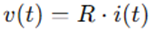
- Codificación: Una vez que tenemos el algoritmo diseñado, lo traducimos a un lenguaje de programación que la computadora pueda entender, como C o ensamblador, y luego se convierten en forma manual o con un programa ensamblador, en un código aceptable para el microprocesador, esto es, código de máquina.
- Prueba y depuración: El programa se ejecuta para verificar que funcione correctamente. Si se encuentran errores (se conocen como bugs,), se deben corregir en un proceso llamado depuración de programas.
1.2 El lugar que ocupa el software en los sistemas mecatrónicos.
El software es una pieza central en la mecatrónica porque coordina y optimiza la interacción entre componentes mecánicos, electrónicos y de control. Entre sus aplicaciones destacadas están:
Automatización industrial:
· Software de control en líneas de producción automatizadas.
· Integración de sensores para monitorear procesos en tiempo real.
· Sistemas embebidos que controlan máquinas como robots industriales.
Sistemas de transporte:
· Controladores de sistemas de suspensión inteligente, que ajustan automáticamente las condiciones según la carga o el tipo de camino.
· Software de frenado automático en vehículos que usa sensores para detectar obstáculos.
Electrodomésticos avanzados:
· Cámaras digitales con enfoque y exposición automáticos.
· Lavadoras con sistemas de control embebido para gestionar ciclos de lavado y temperatura.
Diseño de sistemas mecatrónicos:
· Simulación de sistemas antes de su implementación física, utilizando herramientas como MATLAB o lenguajes de programación para modelado.
1.3 Clasificación de los lenguajes de programación según su: nivel de abstracción (bajo nivel, nivel medio, alto nivel), propósito (general, específico), generación o evolución histórica (1GL, 2GL, 3GL, 4GL, 5GL), manera de ejecutarse (interpretados, compilados).
NIVEL DE ABSTRACCIÓN
Bajo nivel
Ejemplos: Ensamblador, código máquina.
Características: Altamente eficiente para el hardware, pero complejo para el desarrollador debido a su falta de abstracción. Ideal para sistemas embebidos donde se requiere un control directo sobre los registros y puertos del hardware.
Los microprocesadores trabajan en código binario. Las instrucciones escritas en código binario son referidas como código de máquina. Un código taquigráfico que utiliza términos sencillos e identificables en lugar del código binario se llama código mnemónico, un código mnemónico es un código ‘auxiliar para la memorización’. A este código se le conoce como lenguaje ensamblador. Los programas de lenguaje ensamblador consisten en una secuencia de instrucciones, una por línea, cada una con uno o cuatro campos: etiqueta, código de operación, operando y comentario. La etiqueta es el nombre que recibe una entrada en particular en la memoria. El código de operación especifica cómo manipular los datos. El operando contiene la dirección de los datos a operar. El campo de comentario es para permitir al programador incluir comentarios que podrían hacer más comprensible el programa al lector.
Nivel medio:
Ejemplos: BASIC, C/C++, FORTRAN y PASCAL.
Características: Balance entre abstracción y control del hardware. Muy utilizado en sistemas mecatrónicos, ya que permite acceder al hardware mientras mantiene estructuras más comprensibles.
La clasificación "nivel medio" se debe ya que combinan características de ambos mundos: permite un alto nivel de abstracción, pero también ofrece un acceso directo al hardware cuando es necesario.
Debido que son más viejos que otros lenguajes de programación, puede surgir la duda o el comentario de que algunos los consideren de alto nivel, pero esta misma ambigüedad lo que hace tener esta confusión. Esto se debe a que los lenguajes de programación evolucionan con el tiempo y las nuevas características y paradigmas pueden cambiar su percepción. Además, la clasificación puede depender de las características que se estén considerando en un momento dado.
Alto nivel:
Ejemplos: Python, PHP, Java, Visual Basic y C#.
Características: Abstraen completamente el hardware, lo que facilita la escritura, mantenimiento y reutilización del código. Ideales para interfaces gráficas y software de simulación en mecatrónica.
Los lenguajes de alto nivel proporcionan un tipo de lenguaje de programación que describe de forma más cercana y accesible el tipo de operaciones que se requieren.
Cuando se comparan con el lenguaje ensamblador, tiene la ventaja de ser más fácil de manejar y que un mismo programa se puede usar con microprocesadores diferentes; para ello, basta usar el compilador apropiado para traducir el programa al código de máquina del microprocesador involucrado.
PROPÓSITO
Propósito general:
Ejemplos: C, Java, Python.
Aplicaciones: Desde software de simulación hasta controladores embebidos y aplicaciones móviles.
C: Es un lenguaje de propósito general muy versátil, utilizado en sistemas operativos, controladores, aplicaciones de escritorio y más. Su eficiencia y control sobre el hardware lo hacen ideal para sistemas embebidos y aplicaciones que requieren un alto rendimiento.
Java: Diseñado para ser "escribir una vez, ejecutar en cualquier lugar", Java se utiliza ampliamente en desarrollo web, aplicaciones empresariales, Android y más.
Python: Conocido por su sintaxis simple y legible, Python se utiliza en ciencia de datos, aprendizaje automático, desarrollo web y scripting.
Propósito específico:
Ejemplos: MATLAB.
Aplicaciones: Simulación de sistemas dinámicos, diseño de controladores y análisis matemático.
MATLAB: Especializado en cálculos numéricos, visualización de datos y simulación. Se utiliza en ingeniería, ciencia y finanzas.
SQL: Diseñado específicamente para gestionar bases de datos relacionales.
GENERACIÓN Y/O EVOLUCIÓN HISTÓRICA
1GL (Primera Generación):
Código máquina puro.
Aplicaciones: Directamente ejecutado por el hardware, usado en sistemas embebidos simples.
El lenguaje más bajo nivel, directamente ejecutable por el hardware.
2GL (Segunda Generación):
Lenguaje ensamblador.
Aplicaciones: Desarrollos optimizados para hardware específico.
Una representación simbólica del código máquina, más legible pero aún muy ligado al hardware.
3GL (Tercera Generación):
Ejemplos: C, Fortran.
Aplicaciones: Programación de sistemas mecatrónicos y científicos.
Una gran variedad de lenguajes, como C, Fortran, Pascal, que ofrecen abstracciones más altas y son más fáciles de aprender y usar que los lenguajes de generaciones anteriores.
4GL (Cuarta Generación):
Ejemplos: SQL, lenguajes de consulta y desarrollo rápido.
Aplicaciones: Bases de datos para sistemas mecatrónicos.
Diseñados para tareas específicas, como el desarrollo de bases de datos o la creación de informes. SQL es un ejemplo clásico.
5GL (Quinta Generación):
Ejemplos: Lenguajes orientados a inteligencia artificial.
Aplicaciones: Sistemas expertos en diagnóstico y control.
Lenguajes de programación lógica y declarativa, utilizados principalmente en inteligencia artificial y sistemas expertos.
FORMA DE EJECUCIÓN
Compilados
Ejemplo: C.
Características: Alta eficiencia, se traduce todo el programa antes de ejecutarse. Ideal para aplicaciones críticas en sistemas mecatrónicos.
Para traducir un programa escrito en un lenguaje de alto nivel (programa fuente) a lenguaje máquina se utiliza un programa llamado compilador. Este programa tomará como datos nuestro programa escrito en lenguaje de alto nivel y dará como resultado el mismo programa pero escrito en lenguaje máquina, programa que ya puede ejecutar directa o indirectamente el ordenador.

Por ejemplo, un programa escrito en el lenguaje C necesita del compilador C para poder ser traducido. Posteriormente el programa traducido podrá ser ejecutado directamente por el ordenador. En cambio, para traducir un programa escrito en el lenguaje C# necesita del compilador C#; en este caso, el lenguaje máquina no corresponde al del ordenador sino al de una máquina ficticia, denominada máquina virtual, que será puesta en marcha por el ordenador para ejecutar el programa. En .NET esta máquina virtual es el CLR (Common Language Runtime).
¿Qué es una máquina virtual? Una máquina que no existe físicamente sino que es simulada en un ordenador por un programa.
¿Por qué utilizar una máquina virtual? Porque, por tratarse de un programa, es muy fácil instalarla en cualquier ordenador; basta con copiar ese programa en su disco duro, por ejemplo. Y, ¿qué ventajas reporta? Pues, en el caso de C#, que un programa escrito en este lenguaje y compilado puede ser ejecutado en cualquier ordenador del mundo que tenga instalada esa máquina virtual. Esta solución hace posible que cualquier ordenador pueda ejecutar un programa escrito en C# independiente de la plataforma que utilice, lo que se conoce como transportabilidad de programas.
Interpretados
Ejemplo: Python.
Características: Se ejecuta línea por línea. Útil para prototipos y simulaciones rápidas.
A diferencia de un compilador, un intérprete no genera un programa escrito en lenguaje máquina a partir del programa fuente, sino que efectúa la traducción y ejecución simultáneamente para cada una de las sentencias del programa. Por ejemplo, un programa escrito en el lenguaje Basic necesita el intérprete Basic para ser ejecutado. Durante la ejecución de cada una de las sentencias del programa, ocurre simultáneamente la traducción.
A diferencia de un compilador, un intérprete verifica cada línea del programa cuando se escribe, lo que facilita la puesta a punto del programa. En cambio la ejecución resulta más lenta ya que acarrea una traducción simultánea.
OTRAS CLASIFICACIONES
Paradigma de programación: Imperativo, orientado a objetos, funcional, lógico.
Tipado: Estático (tipos definidos en tiempo de compilación), dinámico (tipos determinados en tiempo de ejecución).
1.4 Ejemplos de los distintos tipos de lenguajes de programación y sus áreas de aplicación.
C
Uso: Desarrollo de sistemas embebidos y controladores en tiempo real.
Ejemplo: Control de motores en robots.
¿Qué es C?
C es un lenguaje de programación de nivel medio diseñado en los años 70 por Dennis Ritchie en los Laboratorios Bell. Su propósito original era facilitar el desarrollo de sistemas operativos, en especial UNIX, aunque rápidamente se convirtió en uno de los lenguajes más influyentes en el mundo de la programación. Combina características de lenguajes de bajo nivel, como el control directo del hardware y la gestión de memoria, con estructuras de control y modularidad que lo acercan a lenguajes de alto nivel. Esto lo hace ideal para aplicaciones de sistemas donde se requiere eficiencia y control preciso de los recursos. Además, su portabilidad y compatibilidad han permitido que C sea ampliamente utilizado en sistemas embebidos, dispositivos electrónicos y aplicaciones de alto rendimiento. Es el precursor de lenguajes modernos como C++, C#, Java y Python, y sigue siendo un estándar en la enseñanza de fundamentos de programación
¿Por qué aprender C?
Estudiar C es crucial para entender cómo funcionan las computadoras a nivel básico. Al aprender C, los programadores desarrollan una comprensión profunda de conceptos esenciales como la gestión de memoria, los punteros y la interacción con hardware. Aunque la sintaxis de C puede parecer más compleja que la de lenguajes modernos, su aprendizaje sienta las bases para entender otros lenguajes orientados a objetos y de alto nivel. Además, muchos sistemas operativos, aplicaciones críticas y herramientas fundamentales están escritas en C, lo que asegura su relevancia continua. Su enfoque en la eficiencia y el control total lo convierte en una herramienta valiosa para quienes trabajan en áreas como sistemas embebidos y desarrollo de software de alto rendimiento.
PYTHON
Uso: Desarrollo de software de simulación y análisis de datos.
Ejemplo: Algoritmos de visión por computadora para robots.
¿Qué es Python?
Python es un lenguaje de programación de alto nivel, interpretado y de propósito general, creado por Guido van Rossum en 1991. Es conocido por su sintaxis simple y legibilidad, lo que facilita a los programadores expresar ideas y resolver problemas complejos con menos líneas de código que en otros lenguajes como Java o C++. Python es un lenguaje multiplataforma, lo que significa que un programa desarrollado en este lenguaje puede ejecutarse sin modificaciones en diversos sistemas operativos, siempre que tengan un intérprete de Python instalado. Sus aplicaciones abarcan desde el desarrollo web hasta la inteligencia artificial, el análisis de datos y la automatización de tareas. Python cuenta con una biblioteca estándar extensa que permite a los programadores realizar operaciones avanzadas, como manipulación de archivos, conexiones de red y gráficos, sin necesidad de escribir código adicional. Además, la comunidad de Python ha desarrollado una vasta cantidad de bibliotecas y marcos de trabajo que amplían aún más sus capacidades, como NumPy para cálculos científicos, Django para desarrollo web y TensorFlow para aprendizaje automático.
¿Por qué aprender Python?
Aprender Python no solo es un paso esencial para quienes inician en la programación, sino también una ventaja competitiva para programadores experimentados. Su enfoque en la simplicidad y la eficiencia lo convierte en un lenguaje ideal para resolver problemas rápidamente, además de ser una herramienta imprescindible en campos de vanguardia como la inteligencia artificial y el análisis de grandes volúmenes de datos. Python también es una excelente opción para prototipado rápido, ya que permite probar y desarrollar ideas en menos tiempo comparado con otros lenguajes. Su adopción en la industria sigue creciendo, respaldada por una comunidad activa y extensa documentación que facilita el aprendizaje y la solución de problemas. Además, la compatibilidad de Python con otros lenguajes y plataformas asegura su relevancia a largo plazo.
MATLAB y SIMULINK:
Uso: Modelado y simulación de sistemas dinámicos.
Ejemplo: Diseño de sistemas de control PID para automatización.
¿Qué son MATLAB y Simulink?
MATLAB es un entorno de programación especializado en cálculos matemáticos, análisis de datos y simulaciones científicas, ampliamente utilizado en ingeniería y ciencias. Por su parte, Simulink es una herramienta gráfica complementaria que permite modelar, simular y analizar sistemas dinámicos de manera visual. Estas herramientas son esenciales para diseñar y probar sistemas de control, circuitos eléctricos, algoritmos de procesamiento de señales y modelos de sistemas físicos antes de su implementación real. MATLAB incluye funciones predefinidas y herramientas interactivas que facilitan desde cálculos básicos hasta tareas complejas como diseño de controladores PID y optimización matemática.
¿Por qué aprender MATLAB y Simulink?
Ambas herramientas son fundamentales para ingenieros y científicos, ya que permiten resolver problemas técnicos complejos de manera rápida y efectiva. MATLAB destaca por su flexibilidad y su capacidad para manejar grandes volúmenes de datos, mientras que Simulink permite experimentar con modelos y ajustar parámetros en tiempo real sin necesidad de programación extensa. Su uso en la industria y la academia asegura una base sólida para abordar problemas avanzados en campos como la mecatrónica, la robótica y las telecomunicaciones.
C++
Uso: Desarrollo de videojuegos y simulación de
sistemas físicos.
Ejemplo: Creación de motores gráficos como Unreal Engine y simuladores
dinámicos en robótica.
¿Qué es C++?
C++ es un lenguaje de programación de alto rendimiento y propósito general, diseñado por Bjarne Stroustrup en la década de 1980 como una extensión del lenguaje C. Integra características de programación orientada a objetos, como encapsulación, herencia y polimorfismo, junto con la capacidad de trabajar a bajo nivel directamente con hardware y memoria. Esta combinación única lo convierte en un lenguaje potente y flexible para desarrollar aplicaciones que requieren tanto control detallado como estructuras avanzadas. C++ es ampliamente utilizado en sistemas operativos, motores de videojuegos, aplicaciones científicas y dispositivos embebidos. Su portabilidad permite que los programas escritos en C++ puedan ejecutarse en diferentes plataformas con modificaciones mínimas, siempre que se respete el estándar del lenguaje.
¿Por qué aprender C++?
C++ es esencial para quienes desean entender los fundamentos de la programación orientada a objetos y aprender a trabajar con sistemas de alto rendimiento. Su control sobre recursos del sistema, como la memoria y el tiempo de ejecución, lo hace ideal para aplicaciones críticas donde la eficiencia es clave. Aunque puede ser más complejo que otros lenguajes modernos debido a su enfoque en punteros, sobrecarga de operadores y manejo explícito de memoria, C++ ofrece herramientas poderosas para abordar problemas complejos. Su uso sigue siendo relevante en campos como simulación, desarrollo de videojuegos y aplicaciones industriales.
JAVA
Uso: Aplicaciones multiplataforma y de control distribuido.
Ejemplo: Interfaces gráficas para sistemas de monitoreo.
¿Qué es Java?
Java es un lenguaje de programación orientado a objetos desarrollado por Sun Microsystems (ahora propiedad de Oracle) en la década de 1990. Diseñado bajo el principio de "escribe una vez, ejecuta en cualquier lugar", Java es altamente portátil gracias a la Máquina Virtual Java (JVM), que permite ejecutar programas en cualquier sistema operativo compatible. Java combina facilidad de uso con características avanzadas como manejo automático de memoria y un modelo robusto de seguridad. Es ampliamente utilizado en aplicaciones empresariales, desarrollo de aplicaciones móviles (particularmente para Android), y sistemas distribuidos. La sintaxis de Java, derivada de C y C++, facilita la transición para programadores con experiencia en estos lenguajes
¿Por qué aprender Java?
Java sigue siendo uno de los lenguajes más populares y demandados debido a su estabilidad y versatilidad. Proporciona una biblioteca estándar rica en funcionalidades, que incluye herramientas para manejar redes, bases de datos y gráficos. Además, su ecosistema, que incluye marcos como Spring y Hibernate, lo convierte en una opción ideal para construir aplicaciones empresariales y sistemas de control distribuido. Aprender Java también abre la puerta a oportunidades en el desarrollo móvil y en la programación de servidores para aplicaciones web escalables
WOLFRAM MATHEMATICA (WOLFRAM LANGUAGE)
Uso: Investigación científica y modelado matemático.
Ejemplo: Análisis de ecuaciones diferenciales y visualización de datos
3D.
¿Qué es Wolfram Mathematica y Wolfram Language?
Wolfram Mathematica es un sistema computacional poderoso diseñado para realizar cálculos simbólicos y numéricos, análisis matemático y generación de gráficos avanzados. Wolfram Language, su lenguaje de programación subyacente está orientado al manejo de datos, visualización y automatización de tareas complejas. Este entorno es utilizado principalmente en investigación científica, ingeniería, finanzas y educación, gracias a su capacidad para resolver problemas que van desde álgebra simbólica hasta modelos de aprendizaje automático. Su enfoque basado en reglas permite describir problemas de manera concisa y resolverlos utilizando su base de datos integrada y algoritmos optimizados.
¿Por qué aprender Wolfram Language?
Wolfram Language proporciona herramientas únicas para abordar problemas complejos con una sintaxis compacta y eficiente. Aprender este lenguaje es una ventaja para quienes trabajan en proyectos que requieren simulaciones, modelado matemático o análisis de datos a gran escala. Además, su integración con Wolfram Alpha y su capacidad para generar automáticamente representaciones visuales de datos hacen que sea ideal para proyectos de investigación y enseñanza. Wolfram Language también es altamente escalable y puede integrarse con otros lenguajes y plataformas.
LENGUAJE ENSAMBLADOR
Uso: Optimización de sistemas embebidos y firmware.
Ejemplo: Programación de microcontroladores en dispositivos médicos y
sistemas de control industrial.
¿Qué es el Lenguaje Ensamblador?
El lenguaje ensamblador es un lenguaje de programación de bajo nivel que permite a los desarrolladores interactuar directamente con la arquitectura del hardware de un sistema. A diferencia de los lenguajes de alto nivel, ensamblador utiliza instrucciones específicas del procesador, como mover datos entre registros, realizar operaciones aritméticas y manejar interrupciones. Cada procesador tiene su propio conjunto de instrucciones, por lo que los programas en ensamblador no son portables entre diferentes arquitecturas. Es una herramienta indispensable para optimizar el rendimiento de sistemas embebidos y dispositivos electrónicos donde la eficiencia es crítica.
¿Por qué aprender Lenguaje Ensamblador?
Aprender ensamblador proporciona una comprensión profunda de cómo funcionan los sistemas a nivel máquina. Esto incluye cómo se gestionan los registros, la memoria y el flujo de ejecución. Aunque puede ser difícil de dominar debido a su sintaxis detallada y su enfoque en hardware específico, el ensamblador es vital en áreas donde se requiere máxima optimización, como en el desarrollo de firmware, sistemas operativos y controladores de dispositivos. Además, los conocimientos de ensamblador permiten identificar y corregir errores en niveles bajos del software.
C#
Uso: Desarrollo de videojuegos, aplicaciones empresariales y sistemas en la nube.
Ejemplo: Aplicaciones web con interfaces avanzadas en ASP.NET Core
¿Qué es C#?
C# es un lenguaje de programación moderno, de alto nivel y orientado a objetos, desarrollado por Microsoft como parte de su plataforma .NET. Diseñado con la simplicidad y la productividad en mente, combina características avanzadas de lenguajes como C++ y Java, eliminando algunos de sus aspectos más complejos, como el manejo manual de punteros. C# permite desarrollar aplicaciones para diversas plataformas, incluyendo aplicaciones de escritorio, web y móviles. Además, está profundamente integrado con el entorno .NET, lo que significa que aprovecha las bibliotecas y herramientas proporcionadas por Microsoft para simplificar el desarrollo de software. Este lenguaje también incorpora mecanismos de seguridad, como la gestión automática de memoria y la detección de errores en tiempo de ejecución, lo que lo hace más seguro y confiable.
Precisamente C# es uno de los lenguajes de programación de alto nivel que pertenecen al paquete .NET (otros lenguajes son Visual Basic, C/C++, etc.). C# es una evolución de C/C++. Con él se pueden escribir tanto programas convencionales como para Internet. Las aplicaciones podrán mostrar una interfaz gráfica al usuario, o bien una interfaz de texto, como hacen las denominadas aplicaciones de consola.
El paquete .NET incluye un compilador (programa traductor) de C# que produce un código escrito en un lenguaje intermedio, común para todos los lenguajes de dicha plataforma, que será el que la máquina virtual ejecutará (esto es, cada lenguaje de la plataforma tiene su compilador que produce código correspondiente a un único lenguaje: MSIL).

Por lo tanto, MSIL es un lenguaje máquina que no es específico de ningún procesador, sino de la máquina virtual de .NET. En realidad se trata de un lenguaje de más alto nivel que otros lenguajes máquina: trata directamente con objetos y tiene instrucciones para cargarlos, guardarlos, iniciarlos, invocar a sus métodos, así como para realizar operaciones aritméticas y lógicas, para controlar el flujo de ejecución, etc. A su vez, la máquina virtual posee un recolector de basura (para eliminar los objetos cuando no estén referenciados) y proporciona traductores del lenguaje intermedio a código nativo para cada arquitectura soportada; se trata de compiladores JIT (Just in Time: al instante).
¿Por qué aprender C#?
una de las ventajas significativas de C# sobre otros lenguajes de programación es que es independiente de la plataforma (lo mismo podemos decir respecto a los demás lenguajes incluidos en .NET). Esto quiere decir que el código producido por el compilador C# puede transportarse a cualquier plataforma (Intel, Sparc, Motorola, etc.) que tenga instalada una máquina virtual de .NET y ejecutarse. Pensando en Internet esta característica es crucial ya que esta red conecta ordenadores muy distintos. Otra característica importante de C# es que es un lenguaje de programación orientado a objetos (POO). Los conceptos en los que se apoya esta técnica de programación y sus ventajas serán expuestos en los capítulos siguientes. Además de ser transportable y orientado a objetos, C# es un lenguaje fácil de aprender. Tiene un tamaño pequeño que favorece el desarrollo y reduce las posibilidades de cometer errores; a la vez es potente y flexible.
C# está fundamentado en C++. Quiere esto decir que mucha de la sintaxis y diseño orientado a objetos se tomó de este lenguaje. Por lo tanto, a los lectores que estén familiarizados con C++ y la POO les será muy fácil aprender a desarrollar aplicaciones con C#.
2. Metodología de la programación orientada a objetos.
2.1 Clases y objetos. Constructores, atributos y métodos.
La programación orientada a objetos (POO) es un modelo de programación que utiliza objetos, ligados mediante mensajes, para la solución de problemas. La idea central es simple: organizar los programas a imagen y semejanza de la organización de los objetos en el mundo real.
2.2 Encapsulación, herencia y polimorfismo.
2.3 Sobrecarga de funciones.
2.4 Sobrecarga de operadores.
2.5 Manejo de errores y de excepciones.
2.6 Arreglos y colecciones.
2.7 Implementación de interfaces.
2.8 Manejadores de eventos.
2.9 Construcción de bibliotecas y reutilización de código.
2.10 Almacenamiento, actualización y eliminación de información en base a estructuras.
2.11 Manejo de archivos (escritura, lectura, acceso secuencial, acceso aleatorio).
2.1.1 Formular el problema.
2.1.2 Analizar el problema.
2.1.3 Diseñar una estrategia de búsqueda de la solución.
3. Desarrollo de sistemas de cómputo orientados a objetos.
3.1 Análisis y definición de los requerimientos del usuario y del sistema.
3.2 Diseño y modelado de sistemas, utilizando el Lenguaje de Modelado Unificado (UML).
3.3 Desarrollo de los subsistemas.
3.4 Integración del sistema.
3.5 Verificación, validación y pruebas del software.
3.6 Mantenimiento del software (depuración, actualización, evolución).
3.7.1 Tipo de errores.
3.7.2 Técnicas de depuración.
4. Concepto, uso y aplicaciones de las estructuras de datos compuestas.
4.1 Listas.
4.2 Pilas.
4.3 Colas.
4.4 Árboles.
4.5 Algoritmos de ordenación y búsqueda.
5. Interfaces gráficas de usuario.
5.1 Diseño y construcción de interfaces gráficas. Reglas y metodología para el diseño de interfaces claras, concisas, eficientes y fáciles de usar.
5.2 Uso y configuración de controles predefinidos: formularios, botones de comando, cajas de texto, etiquetas, botones de opción, casillas de verificación, listas, timers, menús, barras de herramientas.
5.3 Diseño y construcción de controles personalizados.
5.4 Uso de la interfaz de dispositivos gráficos para realizar dibujos.
6. Bibliografía.
CEBALLOS SIERRA, Francisco Javier - Microsoft C#. Curso de programación.
PRESSMAN, Roger S. - Ingeniería del Software. Un enfoque práctico.
SEXTO SEMESTRE
ELECTRÓNICA BÁSICA (1691)
Objetivo(s) del curso:
El alumno diseñará circuitos electrónicos analógicos y digitales, aplicará técnicas de diseño de circuitos digitales, analógicos y de potencia usados en sistemas mecatrónicos.
1. Introducción.
1.1 Aspectos históricos de la electrónica y su definición.
ELECTRÓNICA
La Electrónica se define como la ciencia del movimiento de cargas en un gas, vacío o semiconductor. (Cabe destacar que el movimiento de cargas en un metal queda excluido de esta definición). Esta definición se utilizó a principios del siglo XX para separar el campo de la ingeniería eléctrica, que se ocupaba de motores, generadores y comunicaciones por cable, del nuevo campo de la ingeniería electrónica, que en ese momento se ocupaba de los tubos de vacío.
Electrónica: es una rama de la ingeniería eléctrica que se ocupa del control de partículas cargadas como electrones y vacancias.
La Electrónica es una subrama de la física aplicada que comprende la física, la ingeniería, la tecnología y las aplicaciones que tratan con la emisión, el flujo y el control de los electrones u otras partículas cargadas eléctricamente en el vacío y la materia.
Hoy en día, la electrónica generalmente involucra transistores y circuitos de transistores. La microelectrónica se refiere a la tecnología de circuitos integrados (CI), que puede producir un circuito con millones de componentes en una sola pieza de material semiconductor.
HISTORIA DE LA ELECTRÓNICA: DE LOS DESCUBRIMIENTOS FUNDAMENTALES A LA ERA DEL MICROPROCESADOR
La electrónica, ha evolucionado notablemente desde sus inicios, aunque los principios fundamentales han cambiado poco a lo largo del tiempo. Los avances tecnológicos en miniaturización y velocidad han permitido la creación de dispositivos más pequeños y rápidos, aunque los conceptos básicos permanecen vigentes. Por ejemplo, muchos de los componentes actuales se basan en inventos de hace décadas, como el diodo (1939) y el transistor (1949). El descubrimiento del circuito integrado (1958) marcó un hito al integrar múltiples transistores en una sola estructura, revolucionando el diseño de dispositivos electrónicos.
Orígenes y Descubrimientos Iniciales (1899-1906)
La electrónica como disciplina comenzó a tomar forma con el descubrimiento del electrón en 1899 por J. J. Thomson en la Universidad de Cambridge, Inglaterra. Este evento marcó un antes y un después en el entendimiento de la naturaleza eléctrica de la materia. Poco después, en 1901, Guglielmo Marconi realizó un avance revolucionario al enviar un mensaje a través del Atlántico utilizando telegrafía inalámbrica, lo que sentó las bases de la comunicación por radio. En 1906, Lee De Forest inventó el tubo de vacío Audion, un dispositivo destinado inicialmente a amplificar señales de audio. Este invento, que mejoró significativamente los equipos de comunicación inalámbrica, se considera una piedra angular en el desarrollo de la electrónica.
Ese mismo año, Greenleaf W. Pickard introdujo el primer detector de cristal para radios, mostrando el potencial de los semiconductores como materiales clave para aplicaciones futuras en electrónica.
La Electrónica Comercial y la Era de los Tubos de Vacío (1920-1947)
En 1920, nació la radio comercial en Pittsburgh, Pensilvania, con la estación KDKA, marcando el comienzo de una nueva era. Para 1937, más de la mitad de los hogares en los Estados Unidos ya tenían radios, y en 1946 comenzó la comercialización masiva de televisores. Sin embargo, la complejidad de los dispositivos electrónicos y los desafíos técnicos de los tubos de vacío llevaron a los ingenieros a buscar soluciones más avanzadas.
En 1946, se presentó la primera computadora digital electrónica, la ENIAC, en la Universidad de Pensilvania. Este sistema monumental ocupaba una sala completa de 30 por 50 pies, pesaba 30 toneladas y contenía 17,468 tubos de vacío, además de miles de resistencias y condensadores. Aunque innovadora, la ENIAC consumía 150,000 W de energía y tenía una fiabilidad limitada (un promedio de 7 minutos entre fallos).
El Nacimiento del Transistor y la Revolución de los Semiconductores (1947-1959)
El verdadero cambio llegó en 1947, cuando los científicos John Bardeen, Walter Brattain y William Shockley, trabajando en Bell Labs, desarrollaron el primer transistor funcional. Este dispositivo, más pequeño, eficiente y confiable que los tubos de vacío, revolucionó la electrónica y mereció a sus inventores el Premio Nobel.
En paralelo, Claude Shannon, también en Bell Labs, publicó trabajos que sentaron las bases para la comunicación digital y el uso del álgebra booleana en redes de conmutación telefónica. Estos conceptos son fundamentales para las tecnologías de telecomunicaciones y computación modernas.
En 1958, Jack Kilby de Texas Instruments y Robert Noyce de Fairchild Semiconductor introdujeron de forma independiente los primeros circuitos integrados. Estos avances, que inicialmente usaban germanio y luego silicio como base, permitieron miniaturizar circuitos completos en una sola pieza. Este logro impulsó la electrónica hacia nuevas aplicaciones y usos masivos.
La Era de los Circuitos Integrados y el Microprocesador (1960-1982)
Durante la década de 1960, los circuitos integrados evolucionaron rápidamente, utilizando principalmente tecnología de transistores bipolares. En los años posteriores, surgió el transistor de efecto de campo de metal-óxido-semiconductor (MOSFET), dominando especialmente los circuitos integrados digitales.
En 1971, Intel presentó el microprocesador 4004, un circuito integrado que incluía 2,300 transistores y marcó el inicio de una nueva era en computación. Para 1982, Texas Instruments introdujo el procesador de señal digital (DSP) en un solo chip, habilitando el procesamiento eficiente de señales en tiempo real, una tecnología clave en campos como la comunicación y el audio.
Impacto de la Electrónica en la Sociedad Moderna
La invención del transistor, los circuitos integrados y el microprocesador ha transformado la vida cotidiana. Desde radios y televisores hasta computadoras portátiles y teléfonos celulares, la electrónica está presente en todas partes. Hoy en día, un procesador Xeon de última generación contiene más de 6 mil millones de transistores, un contraste radical con los primeros dispositivos electrónicos. La miniaturización y el aumento de la capacidad de los dispositivos continúan impulsando la innovación, consolidando a la electrónica como una fuerza vital en la sociedad moderna.
1.2 Materiales semiconductores: modelo atómico, bandas de energía, enlaces químicos, materiales N y P.
La construcción de cualquier dispositivo electrónico discreto (individual) de estado sólido (estructura de cristal duro) o circuito integrado, se inicia con un material semiconductor de la más alta calidad.
Los semiconductores son una clase especial de elementos cuya conductividad se encuentra entre la de un buen conductor y la de un aislante.
MATERIALES SEMICONDUCTORES
Los semiconductores están compuestos por elementos de un solo cristal como el silicio (Si) y el germanio (Ge) o compuestos como el arseniuro de galio (GaAs), el sulfuro de cadmio (CdS), el nitruro de galio (GaN) y el fosfuro de galio y arsénico (GaAsP). Estos elementos poseen estructuras cristalinas donde los átomos están unidos mediante enlaces covalentes. En estos enlaces, los electrones de valencia de cada átomo se comparten con átomos vecinos, creando una red estable que forma la base de los materiales semiconductores
Los tres semiconductores más frecuentemente utilizados en la construcción de dispositivos electrónicos son Ge, Si y GaAs.
El Si tiene el beneficio de años de desarrollo y es el material semiconductor líder para componentes electrónicos y circuitos integrados (CI). El GaAs es más caro.
MATERIALES INTRÍNSECOS, MODELO ATÓMICO Y BANDAS DE ENERGÍA
Un átomo es la mínima cantidad de materia que experimenta cambios químicos. Un átomo se define como la unidad básica de un elemento, el cual puede intervenir en una combinación química.
Para apreciar plenamente por qué Si, Ge y GaAs son los semiconductores más utilizados por la industria electrónica, hay que entender la estructura atómica de cada uno y cómo están enlazados los átomos entre sí para formar una estructura cristalina. Todo átomo se compone de tres partículas básicas: electrón, protón y neutrón. En la estructura entrelazada, los neutrones y los protones forman el núcleo; los electrones aparecen en órbitas fijas alrededor de éste.

Estructura atómica del (a) silicio; (b) germanio, y (c) galio y arsénico.
El silicio tiene 14 electrones en órbita, el germanio 32, el galio 31 y el arsénico 33 (el mismo arsénico que es un agente químico muy venenoso) son elementos fundamentales en la electrónica. Estos átomos poseen un número característico de electrones en su capa más externa, conocidos como electrones de valencia. El silicio y el germanio tienen cuatro electrones de valencia, el galio tres y el arsénico cinco.
Los átomos con cuatro electrones de valencia se denominan tetravalentes, los de tres trivalentes y los de cinco pentavalentes. La importancia de estos electrones de valencia radica en que son los que participan en los enlaces químicos y, por lo tanto, determinan las propiedades eléctricas de los materiales semiconductores.
El término valencia se utiliza para indicar el potencial necesario para remover un electrón de valencia de un átomo es significativamente menor que el requerido para extraer otros electrones de capas internas. Esta característica es crucial para entender el comportamiento de los semiconductores y su aplicación en dispositivos electrónicos.
En un cristal de silicio o germanio puros, los cuatro electrones de valencia de un átomo forman un arreglo de enlace con cuatro átomos adyacentes.
Este enlace de átomos, reforzado por compartir electrones, se llama enlace covalente.
Como el GaAs es un semiconductor compuesto, hay compartición entre los dos átomos diferentes. Cada átomo está rodeado por átomos del tipo complementario. Sigue habiendo compartición de electrones similares en estructura a la de Ge y Si, pero ahora el átomo de As aporta cinco electrones y el átomo de Ga tres.

Aunque el enlace covalente produce un enlace más fuerte entre los electrones de valencia y su átomo padre, aún es posible que los electrones de valencia absorban suficiente energía cinética proveniente de causas externas para romper el enlace covalente y asumir el estado “libre”.
El término libre se aplica a cualquier electrón que se haya separado de la estructura entrelazada fija y es muy sensible a cualquier campo eléctrico aplicado como el establecido por fuentes de voltaje o por cualquier diferencia de potencial. Las causas externas incluyen efectos como energía luminosa en forma de fotones y energía térmica (calor) del medio circundante. A temperatura ambiente hay alrededor de 1.5 x 1010 portadores libres en un 1 cm3 de material de silicio intrínseco, es decir, 15,000,000,000 (quince mil millones) de electrones en un espacio más reducido que un pequeño cubo de azúcar; una enorme cantidad
El término intrínseco se aplica a cualquier material semiconductor que haya sido cuidadosamente refinado para reducir el número de impurezas a un nivel muy bajo; en esencia, lo más puro posible que se pueda fabricar utilizando tecnología actual.
Portadores intrínsecos: Estos son electrones libres que existen en un material debido a causas internas. La cantidad de estos portadores varía entre los diferentes materiales. El germanio (Ge) tiene la mayor cantidad, seguido del silicio (Si) y el arseniuro de galio (GaAs) tiene la menor. La cantidad de portadores intrínsecos es importante, pero no es el único factor que determina las propiedades de un material semiconductor.

Otro factor importante es la movilidad de los portadores relativa (µn). La movilidad relativa se refiere a la facilidad con la que los electrones pueden moverse a través del material. El arseniuro de galio (GaAs) tiene una movilidad relativa mucho mayor que el silicio (Si). Esto significa que los electrones en el GaAs pueden moverse más rápido y libremente. La mayor movilidad en el GaAs permite que los dispositivos electrónicos hechos con este material sean más rápidos y eficientes que los hechos con silicio. El germanio también tiene una movilidad relativamente alta, lo que lo hace útil para aplicaciones de alta frecuencia, como en los dispositivos de radio.

Una importante e interesante diferencia entre semiconductores y conductores es su reacción ante la aplicación de calor. En el caso de los conductores, la resistencia se incrementa con un aumento de calor. Esto se debe a que el número de portadores presentes en un conductor no se incrementan de manera significativa con la temperatura, aunque su patrón de vibración con respecto a un lugar relativamente fijo dificulta cada vez más el flujo continuo de portadores a través del material. Se dice que los materiales que reaccionan de esta manera tienen un coeficiente de temperatura positivo. Los materiales semiconductores, sin embargo, presentan un nivel incrementado de conductividad con la aplicación de calor. Conforme se eleva la temperatura, un mayor número de electrones de valencia absorben suficiente energía térmica para romper el enlace covalente y así contribuir al número de portadores libres. Por consiguiente:
Los materiales semiconductores tienen un coeficiente de temperatura negativo.

Bandas de Energía
Dentro de la estructura atómica de cada átomo aislado hay niveles específicos de energía asociados con cada capa y electrón en órbita. Los niveles de energía asociados con cada capa son diferentes según el elemento de que se trate. Sin embargo, en general:
Cuanto más alejado está un electrón del núcleo, mayor es su estado de energía y cualquier electrón que haya abandonado a su átomo padre tiene un estado de energía mayor que todo electrón que permanezca en la estructura atómica.
Los electrones en un átomo aislado solo pueden ocupar niveles de energía específicos. Sin embargo, cuando los átomos se unen para formar un material sólido, como un cristal, interactúan entre sí. Esta interacción provoca que los niveles de energía de los electrones se expandan y formen bandas de energía.
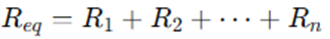
En un semiconductor, como el silicio, los electrones de valencia (los más externos) pueden ocupar una banda de energía llamada banda de valencia. Existe otra banda de energía, llamada banda de conducción, donde los electrones son libres de moverse y conducir corriente eléctrica. Entre estas dos bandas hay una región de energía prohibida, llamada banda prohibida.
La energía necesaria para que un electrón salte de la banda de valencia a la banda de conducción y se convierta en un portador libre varía según el material. En el germanio, esta energía es menor que en el silicio, y en el arseniuro de galio es aún mayor. Esta diferencia en la energía de la banda prohibida es lo que determina muchas de las propiedades eléctricas de los semiconductores.
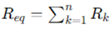
Un electrón en la banda de valencia de silicio debe absorber más energía que uno en la banda de valencia de germanio para convertirse en portador libre. Asimismo, un electrón en la banda de valencia de arseniuro de galio debe absorber más energía que uno en la de silicio o germanio para entrar a la banda de conducción.
La brecha de energía también revela qué elementos son útiles en la construcción de dispositivos emisores de luz como diodos emisores de luz (LED, por sus siglas en inglés). Cuanto más ancha es la brecha de energía, mayor es la posibilidad de que la energía se libere en forma de ondas luminosas visibles o invisibles (infrarrojas). En el caso de conductores, el traslape de las bandas de conducción y valencia provoca esencialmente que toda la energía adicional absorbida por los electrones se disipe en forma de calor. Asimismo, en el caso de Ge y Si, como la brecha de energía es tan pequeña, la mayoría de los electrones que absorben suficiente energía para abandonar la banda de valencia terminan en la banda de conducción y la energía se disipa en forma de calor. Sin embargo, en el caso de GaAs la brecha es suficientemente grande para producir radiación luminosa significativa. En el caso de los LED el nivel de dopado y los materiales seleccionados determinan el color resultante.

Antes de dejar este tema, es importante subrayar la importancia de entender las unidades utilizadas para una cantidad. Las unidades de medición son electrón volts (eV). La unidad de medición es apropiada porque W (energía) = Q*V = (derivada de la ecuación de definición de voltaje: V = W/Q). Si se sustituye la carga de un electrón y una diferencia de potencial de un 1 volt, se produce un nivel de energía conocido como electrón volt.
MATERIALES EXTRÍNSECOS, DOPADO Y MATERIALES TIPO N Y TIPO P
Las características de un material semiconductor se pueden modificar
de manera significativa con la adición de átomos de impureza específicos al material semiconductor relativamente puro. Estas impurezas, aunque sólo se agregan en 1 parte en 10 millones, pueden alterar la estructura de las bandas lo suficiente para cambiar del todo las propiedades eléctricas del material.
Un material semiconductor que ha sido sometido al proceso de dopado se conoce como material extrínseco.
Hay dos materiales extrínsecos de inmensurable importancia en la fabricación de dispositivos semiconductores: materiales tipo n y tipo p.
Material TIPO N
Un material tipo n se crea introduciendo elementos de impureza que contienen cinco electrones de valencia (pentavelantes), como el antimonio, el arsénico y el fósforo.

Observe que, los cuatros enlaces covalentes del antimonio y silicio existen, sin embargo, hay un quinto electrón adicional debido al propio átomo de impureza, el cual no está asociado con ningún enlace covalente particular que se presentan. Este electrón restante, enlazado de manera poco firme a su átomo padre (antimonio), está en cierto modo libre para moverse dentro del material tipo n recién formado, puesto que el átomo de impureza insertado ha donado un electrón relativamente “libre” a la estructura.
Las impurezas difundidas con cinco electrones de valencia se conocen como átomos donadores.
Es importante tener en cuenta que aun cuando un gran número de portadores libres se ha establecido en el material tipo n, sigue siendo eléctricamente neutro puesto que de manera ideal el número de protones de carga positiva en los núcleos sigue siendo igual al de los electrones de carga negativa libres y en órbita en la estructura.
Material TIPO P
El material tipo p se forma dopando un cristal de germanio o silicio puro con átomos de impureza que tienen tres electrones de valencia (trivalentes). Los elementos más utilizados para este propósito son boro, galio e indio.
Las impurezas difundidas con tres electrones de valencia se llaman átomos aceptores.
Ahora el número de electrones es insuficiente para completar las bandas covalentes de la estructura recién formada. El vacío resultante se llama hueco y se denota con un pequeño círculo o un signo más, para indicar la ausencia de una carga positiva. Por lo tanto, el vacío resultante aceptará con facilidad un electrón libre.
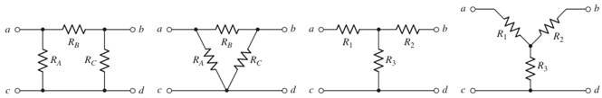
El material tipo p es eléctricamente neutro por las mismas razones descritas para el material tipo n.
Portadores mayoritarios y minoritarios
En el estado intrínseco, el número de electrones libres en Ge o Si se debe sólo a los electrones en la banda de valencia que adquirieron suficiente energía de fuentes térmicas o luminosas para romper la banda covalente o a las impurezas que no pudieron ser eliminadas. Los vacíos que quedan en la estructura de enlace covalente representan una fuente muy limitada de huecos. En un material tipo n, el número de huecos no cambia significativamente con respecto a este nivel intrínseco. El resultado neto, por consiguiente, es que el número de electrones sobrepasa por mucho al de huecos. Por eso:
En un material tipo n el electrón se llama portador mayoritario y el hueco portador minoritario.
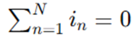
En un material tipo p, el hueco es el portador mayoritario y el electrón el minoritario.
2. Diodos.
2.1 Estructura y funcionamiento.
LOS SEMICONDUCTORES
Los semiconductores han revolucionado el mundo de la electrónica. Con ellos han aparecido los diodos, los transistores, los tiristores y los demás componentes electrónicos construidos gracias a los semiconductores que han sustituido a las válvulas electrónicas. Por otro lado, con la aparición de los circuitos integrados, que suplen la función de grandes cantidades de diodos, transistores, resistencias, condensadores y cualquier tipo de componente electrónico, se ha dado el gran paso hacia el futuro de la electrónica.
La ventaja que poseen los semiconductores es que son de reducido tamaño, pequeño consumo y bajo precio.

DIODOS
El diodo es el mas simple de los dispositivos electrónicos no lineales, existen distintos tipos de diodos, por ejemplo: los Diodos de Unión (Semiconductor), Diodos Zener, el Diodo Schottky y otros.
El diodo semiconductor (también conocido como Diodo Rectificador), se crea uniendo un material tipo n a un material tipo p, nada más que eso; sólo la unión de un material con un portador mayoritario de electrones a uno con un portador mayoritario de huecos.
El diodo es el elemento semiconductor que solo permite la circulación de la corriente en un sentido único.
Estructura
En el momento en que los dos materiales se “unen”, los electrones y los huecos en la región de la unión se combinan y provocan una carencia de portadores libres en la región próxima a la unión.
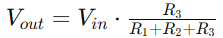
Esta región de iones positivos y negativos revelados se llama región de “empobrecimiento”, debido a la disminución de portadores libres en la región.

Si se conectan cables conductores a los extremos de cada material, se produce un dispositivo de dos terminales. Se dispone entonces de tres opciones: sin polarización, polarización en directa y polarización en inversa. El término polarización se refiere a la aplicación de un voltaje externo a través de las dos terminales del dispositivo para extraer una respuesta.
Polarización en Inversa (VD < 0 V)
Si se aplica un potencial externo de V volts a través de la unión p-n con la terminal positiva conectada al material tipo n y la negativa conectada al material tipo p, el número de iones positivos revelados en la región de empobrecimiento del material tipo n se incrementará por la gran cantidad de electrones libres atraídos por el potencial positivo del voltaje aplicado. Por las mismas razones, el número de iones negativos no revelados se incrementará en el material tipo p. El efecto neto, por consiguiente, es una mayor apertura de la región de empobrecimiento, la cual crea una barrera demasiado grande para que los portadores mayoritarios la puedan superar, por lo que el flujo de portadores mayoritarios se reduce efectivamente a cero.
Sin embargo, el número de portadores minoritarios que entran a la región de empobrecimiento no cambia, y se producen vectores de flujo de portadores minoritarios de la misma magnitud.
La corriente en condiciones de polarización en inversa se llama corriente de saturación en inversa y está representada por Is.

La corriente de saturación en inversa rara vez es de más de algunos microamperes, excepto en el caso de dispositivos de alta potencia.
El término saturación se deriva del hecho de que alcanza su nivel máximo con rapidez y que no cambia de manera significativa con los incrementos en el potencial de polarización en inversa.
Los fabricantes de diodos expresan el valor de la corriente inversa en sus hojas de especificaciones técnicas. Así, por ejemplo, la serie de diodos con la referencia 1N4001 a 1N4007 establece una corriente inversa de 10 μΑ cuando son polarizados inversamente.
Si se aumenta la tensión inversa, también lo hace la corriente, hasta que se llega a un valor Vz, llamado tensión de ruptura del diodo. En este momento aparece un efecto de avalancha y aumenta bruscamente la intensidad de corriente inversa, lo que provoca la destrucción del diodo por la excesiva disipación de calor.
Para que esto no ocurra, es necesario diseñar las condiciones de trabajo del diodo con una tensión inversa siempre menor a su tensión de ruptura.
Los fabricantes de diodos especifican los valores de la tensión inversa pico en sus hojas de especificaciones técnicas. Así, por ejemplo, mientras el diodo con la referencia 1N4001 soporta una tensión máxima inversa de 50 V, el 1N4007 llega a soportar 1.000 V
Polarización en Directa (VD > 0 V)
La condición de polarización en directa o “encendido” se establece aplicando el potencial positivo al material tipo p y el potencial negativo al tipo n.

La aplicación de un potencial de polarización en directa VD “presionará” a los electrones en el material tipo n y a los huecos en el material tipo p para que se recombinen con los iones próximos al límite y reducirá el ancho de la región de empobrecimiento.
Un electrón del material tipo p ahora "ve" una barrera reducida en la unión debido a la región de empobrecimiento reducida y a una fuerte atracción del potencial positivo aplicado al material tipo p. En cuanto se incrementa la magnitud de la polarización aplicada, el ancho de la región de empobrecimiento continuará reduciéndose hasta que un flujo de electrones pueda atravesar la unión, lo que produce un crecimiento exponencial de la corriente. Se puede observar que la escala vertical está en miliamperes (aunque algunos diodos semiconductores tienen una escala vertical medida en amperes) y la escala horizontal en la región de polarización en directa tiene un máximo de 1 V. Por consiguiente, en general el voltaje a través de un diodo polarizado en directa será menor de 1 V.
Analizando físicamente el diodo (despreciando la región Zener); por medio de la física del estado sólido que las características generales de un diodo semiconductor se pueden definir mediante la siguiente ecuación, conocida como ecuación de Shockley, para las regiones de polarización en directa y en inversa:


El voltaje VT en la ecuación se llama voltaje térmico y está determinado por:


Teóricamente, un diodo de silicio debería presentar características ideales. Sin embargo, en la práctica, los diodos comerciales se desvían de este comportamiento ideal debido a diversos factores. Entre estos factores destacan la resistencia interna del "cuerpo" del diodo y la resistencia externa de los contactos. Estas resistencias contribuyen a un voltaje adicional que provoca un desplazamiento en la curva característica del diodo.
Es importante destacar que la dirección convencional de la corriente eléctrica en la región de voltaje positivo coincide con la dirección indicada por la flecha en el símbolo del diodo. Esta condición se cumple siempre que el diodo esté polarizado en directa.
Al examinar el comportamiento del diodo en condiciones de polarización inversa, se observa que la corriente de saturación inversa es significativamente mayor que la predicha por la ecuación de Shockley.
Esta discrepancia se atribuye a diversos efectos no considerados en dicha ecuación, como la generación de portadores minoritarios en la región de depleción y las corrientes de fuga superficiales.
Estos fenómenos son particularmente sensibles al área de contacto en la unión del diodo.
Otro factor que influye en la magnitud de la corriente de saturación inversa es el área de contacto en la unión del diodo. Existe una relación directa entre el tamaño del área de contacto y el valor de la corriente de saturación inversa

En resumen, la corriente de saturación inversa real de un diodo comercial suele ser mucho mayor que el valor teórico obtenido a partir de la ecuación de Shockley. Sin embargo, es importante tener en cuenta que incluso pequeñas diferencias en la corriente de saturación inversa pueden tener un impacto significativo en el comportamiento del diodo en ciertas aplicaciones.
Región Zener
Aun cuando la escala estuviera en décimas de voltios en la región negativa, existirá un punto en el que la aplicación de un voltaje negativo excesivo producirá un cambio abrupto en las características. La corriente se incrementaría muy rápidamente en una dirección opuesta a la de la región de voltaje positivo. El potencial de polarización inversa que produce este cambio drástico en las características se denominaba potencial Zener (en honor a Clarence Melvin Zener.) y su símbolo es Vz.
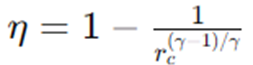
A medida que se incrementa el voltaje a través del diodo en la región de polarización en inversa, también se incrementará la velocidad de los portadores minoritarios responsables de la corriente de saturación en inversa Is. Con el tiempo, su velocidad y energía cinética asociada serán suficientes para liberar más portadores por colisiones con otras estructuras atómicas que de lo contrario serían estables. Es decir, se producirá un proceso de ionización por medio del cual los electrones de valencia absorben suficiente energía para abandonar el átomo padre. Estos portadores adicionales pueden ayudar entonces al proceso de ionización al punto en que se establece una corriente de avalancha y determina la región de ruptura de avalancha.
Se puede hacer que la región de avalancha (VZ) se acerque al eje vertical incrementando los niveles de dopado en los materiales p y n. Sin embargo, conforme VZ se reduce a niveles muy bajos, por ejemplo:–5 V.
Otro mecanismo, llamado ruptura Zener contribuirá al cambio abrupto de la característica. Esto sucede porque hay un fuerte campo eléctrico en la región de la unión que puede desbaratar las fuerzas de enlace dentro del átomo y “generar” portadores. Aun cuando el mecanismo de ruptura Zener es un contribuyente significativo sólo a niveles bajos de VZ, este cambio abrupto de la característica a cualquier nivel se llama región Zener y los diodos que emplean esta parte única de la característica de una unión p–n se llaman diodos Zener.
El máximo potencial de polarización en inversa que se puede aplicar antes de entrar a la región Zener se llama voltaje inverso pico (PIV) o voltaje de reversa pico (PRV).
DIODO SCHOTTKY
Conocido como diodo de barrera Schottky, barrera superficial o portador caliente. Está formado por la unión de un metal tal como platino, molibdeno, cromo o tungsteno, con silicio de tipo n. Estos dispositivos tienen un almacenamiento de carga despreciable y se utilizan en aplicaciones de conmutación de alta velocidad.
Un metal (platino), actúa como material aceptador para los electrones cuando está unido a silicio n. Así, cuando el material está conectado al silicio de tipo n, los electrones del silicio se difunden inicialmente en el metal, esta difusión hace que el material n se empobrezca de electrones cerca de la unión y por consiguiente que adquiera un potencial positivo.
Cuando esta tensión positiva llega a ser suficientemente grande, impide la posterior difusión de los electrones. Por otra parte, cuando es aplicada exteriormente una tensión positiva suficientemente grande entre los terminales del diodo, los electrones de la región n están sometidos a un potencial positivo en el lado del metal de la unión y aparece una circulación de electrones.
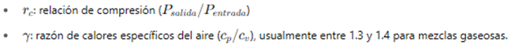
Diodos Schottky:
a) Distribución de potencial después de la difusión inicial
b) Distribución de potencial después de aplicar una tensión positiva
c) Distribución de potencial después de aplicar una tensión negativa
d) Símbolo de circuito.
En un contacto rectificador circula una corriente despreciable hasta que V excede de una cierta tensión mínima V₁, que es la necesaria para alisar la curva de tensión. Un pequeño aumento de la tensión V por encima de V₁ produce una variación muy grande de corriente. Cuando se invierte la tensión aplicada al diodo de modo que el material n se hace positivo con respecto al platino (o material p), la tensión en la cara n de la unión aumenta por encima del nivel indicado y no hay circulación de corriente.
Cuando se establece un contacto óhmico, no hay difusión inicial de electrones a través de la unión, puesto que en los dos materiales la densidad y la energía de los electrones en ambas caras de la unión son las mismas.
Cuando el diodo Schottky funciona de modo directo, la corriente es debida a los electrones que se mueven desde el silicio de tipo n a través del metal. Como los electrones se mueven relativamente libres a través del metal, el tiempo de recombinación t es muy pequeño, normalmente del orden de 10 ps. Esto es varios órdenes de magnitud menor que los correspondientes a la utilización de diodos de silicio pn.
El diodo tiene una característica vi similar a la de un diodo ordinario de silicio pn excepto que la tensión umbral de conducción del diodo es V ≈ 0.3 V.

DIODO EMISOR DE LUZ (LED)
Haciendo combinaciones con ellos, pueden ser empleados para visualizar números y letras en pequeños indicadores luminosos (displays), con los cuales se pueden presentar los resultados en equipos de medida, calculadoras, etc.
Como su nombre lo implica, el diodo emisor de luz es un diodo que emite luz visible o invisible (infrarroja) cuando se energiza. En cualquier unión pn polarizada en directa se da, dentro de la estructura y principalmente cerca de la unión, una recombinación de huecos y electrones.
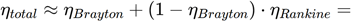
Esta recombinación requiere que la energía procesada por los electrones libres se transforme en otro estado. En todas las uniones pn semiconductoras una parte de esta energía se libera en forma de calor y otra en forma de fotones.
Los diodos led se fabrican mediante la unión de dos cristales semiconductores pn, a los que se les ha contaminado de una forma especial. Cuando una unión de este tipo se polariza con una tensión directa, al igual que ocurría con los diodos convencionales, los electrones de valencia del cristal tipo N atraviesan la unión y se recombinan con los huecos del cristal tipo P. Dado que dichos electrones se trasladan de un nivel de energía más alto a uno más bajo, se produce una liberación de energía, que en este tipo de diodos se manifiesta en forma de radiaciones electromagnéticas dentro del espectro luminoso.
En diodos de Si y Ge el mayor porcentaje de la energía convertida durante la recombinación en la unión se disipa en forma de calor dentro de la estructura y la luz emitida es insignificante.
Por esta razón, el silicio y el germanio no se utilizan en la construcción de dispositivos LED. Por otra parte:
Los diodos construidos de GaAs emiten luz en la zona infrarroja (invisible) durante el proceso de recombinación en la unión pn.
Los diodos led se fabrican con elementos especiales, como arseniuro de galio (GaAs) y fósforo. Para conseguir modificar la longitud de onda de la radiación de la onda luminosa y así conseguir diodos con emisiones de diferentes colores (roja, naranja, verde, amarilla, azul o infrarroja), se contaminan los cristales de una forma adecuada. Así por ejemplo, los diodos luminiscentes fabricados con galio y fósforo (GaP) emiten luz roja cuando se les añade óxido de cinc y emiten luz verde con la adición de nitrógeno.
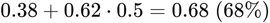
Al igual que los diferentes sonidos tienen espectros de frecuencia diferentes (en general los sonidos agudos tienen componentes de alta frecuencia y los sonidos bajos tienen varios componentes de baja frecuencia), lo mismo es cierto para las diferentes emisiones de luz.
El espectro de frecuencia de la luz infrarroja se extiende desde 100 THz (T = tera = 1012) hasta 400 THz, con el espectro de luz visible desde aproximadamente 400 hasta 750 THz.
En general, cuando hablamos de la respuesta de dispositivos electroluminiscentes, nos referimos a sus longitudes de onda y no a su frecuencia.
Las dos cantidades están relacionadas por la siguiente ecuación:


Aparte del color de los diodos luminiscentes, sus características más relevantes son similares a las de los diodos convencionales:
Tensión directa (VF): es la caída de tensión que se produce entre los extremos del diodo led cuando por él fluye la corriente directa. Esta tensión suele ser del orden de 1,5 V a 2,2 V para la mayor parte de los modelos. Cuando se desconoce la tensión directa exacta, bastará con tomar como valor aproximado 2 V.
Corriente de excitación directa (IF): es la corriente que debe circular por el diodo led para alcanzar la intensidad luminosa esperada. Para la mayoría de los modelos, esta corriente está comprendida entre 10 mA y 50 mA.
Corriente inversa (IR): es la máxima corriente que puede fluir por el diodo luminiscente cuando a este se le aplica una tensión de polarización inversa. Este valor suele estar en torno a los 10 μΑ.
La disipación de potencia es aquella parte de la potencia que el diodo luminiscente no convierte en luz y que acaba degradándose en calor, por lo que tiene que evacuarla al exterior. Por esta razón, los diodos led se conectan en serie con una resistencia, con el fin de limitar la corriente que fluye por ellos. Para calcular dicha resistencia, se aplica la ley de Ohm al circuito.


Una de las aplicaciones que se puede hacer con los diodos led es la fabricación de indicadores numéricos de siete segmentos (displays). Mediante siete diodos luminiscentes dispuestos en un arreglo, se pueden representar dígitos del 0 al 9. Para ello, se excitan simultáneamente las combinaciones de diodos que correspondan en cada caso.
FOTODIODO
Este dispositivo es un diodo especialmente diseñado para que sea sensible a las radiaciones luminosas que en él incidan, de tal forma que al aumentar estas, también lo haga la corriente inversa que fluya por el fotodiodo.
Una de las aplicaciones fundamentales de este dispositivo es como fotodetector, elemento capaz de transformar una magnitud luminosa en eléctrica.
Este tipo de diodos presenta un aumento de portadores minoritarios cuando se aplica energía en forma de radiaciones luminosas. Si conectamos un fotodiodo con una tensión de polarización inversa, fluirá una pequeña corriente inversa.
Los fotodiodos se fabrican para que la luz incida en ellos, de manera que, al aumentar la intensidad de la radiación luminosa, aumentan los portadores minoritarios y, por lo tanto, la corriente inversa. Así, se establece una relación entre la luz y la corriente.

Al aumentar la intensidad de la radiación luminosa (su unidad de medida es el lux), también lo hace la corriente inversa.
Una de las aplicaciones que se le da al fotodiodo es la combinación con el LED, en la fabricación de un optoacoplador. Estos dos elementos se integran en un solo elemento.
Con un optoacoplador se pueden aislar eléctricamente dos circuitos entre los que hay que intercambiar una determinada señal. La señal de entrada se aplica al diodo led, con lo que este genera una intensidad luminosa que estará en función de la corriente entregada por la señal. Esta radiación luminosa incide en el fotodiodo, el cual generará una corriente en la salida proporcional a la entregada a la entrada del optoacoplador. Con el uso de optoacopladores se eliminan todos los riesgos que pueden surgir al conectar circuitos que trabajan con señales de muy pequeñas tensiones, con otros circuitos que lo hacen con tensiones elevadas. Por ejemplo, se utilizan para aislar la salida de un ordenador con circuitos exteriores que estén alimentados con tensiones peligrosas. También se utilizan en electromedicina para aislar los circuitos de los electrodos que se han de aplicar al cuerpo humano y en otras muchas aplicaciones.

DIODO PIN
El diodo PIN es un diodo con una región p+ y otra región n+, ambas muy dopadas, separadas por una región de material casi intrínseco. Se utiliza en frecuencias de microondas (más de 1 GHz) porque tiene una impedancia muy alta en polarización inversa y muy baja en polarización directa, incluso a estas frecuencias. Además, las tensiones de ruptura están entre 100 y 1000 V.
Gracias a estas características, el diodo PIN se usa como interruptor o modulador de amplitud en frecuencias de microondas, ya que se comporta como un cortocircuito en sentido directo y como un circuito abierto en sentido inverso. También puede conmutar corrientes y tensiones muy altas.
El diodo PIN se forma a partir de silicio tipo p de alta resistividad. La capa p de baja resistividad está formada por difusión de átomos de boro en un bloque de silicio del tipo p y la capa n⁺ muy delgada está formada difundiendo grandes cantidades de fósforo. La región intrínseca (i) es realmente una región p de alta resistividad y se le suele denominar región π.


a) Oblea PIN: Esta parte de la figura muestra la estructura física del diodo PIN, que consiste en una oblea de semiconductor con tres capas:
· Capa P+: Capa de semiconductor tipo P altamente dopada.
· Capa I: Capa intrínseca (o ligeramente dopada) de semiconductor.
· Capa N+: Capa de semiconductor tipo N altamente dopada.
b) Representación pictórica: Se muestra una representación simplificada del diodo con los símbolos de los electrones (•) y los huecos (o).
c) Distribución de tensiones: Esta gráfica muestra cómo se distribuye el voltaje a través del diodo PIN cuando se aplica una polarización. Se puede observar la diferencia de potencial entre las capas P+ y N+, así como la región donde se concentra la mayor parte del voltaje.
d) Representación pictórica y distribución de tensiones bajo polarización: Aquí se muestra cómo se comporta el diodo PIN bajo polarización, es decir, cuando se le aplica una tensión externa. Se ilustra cómo los electrones y los huecos se mueven a través de la estructura y cómo se modifica la distribución de tensiones en comparación con la situación sin polarización.
Cuando se aplica una polarización inversa al diodo, los electrones y huecos del material son barridos. Un aumento posterior de la tensión inversa incrementa las distribuciones de tensiones p-i e i-n. En el diodo PIN, la longitud de la región de transición L es aproximadamente igual a la longitud de la región i y es aproximadamente independiente de la tensión inversa. Por lo tanto, a diferencia de los diodos PN o Schottky, el diodo PIN tiene una capacidad inversa que es aproximadamente constante, independientemente de la polarización. Una variación típica de la capacidad podría ser desde 0,15 hasta 0,14 pF en una variación de la polarización inversa de, por ejemplo, 100 V. La variación normal de la capacidad en función de la tensión de polarización está representada. Esto debe contrastarse con el resultado representado donde CRC + Co/(2V) 1/2. Por otra parte, en virtud de que L es igual a la longitud de la región i, la longitud de la región de transición es aproximadamente constante y considerablemente mayor que las de otros diodos y, por tanto, la capacidad Cr que es proporcional a 1/L es significativamente menor que la de otros diodos, por lo que el diodo PIN es apropiado para aplicaciones de microondas. Los valores normales de C varían desde 0,1 hasta 4 pF en los diodos PIN, comercialmente asequibles.
Cuando el diodo está polarizado en sentido directo, los huecos del material p se difunden en la región i, creando una capa p de baja resistividad. La corriente es debida al flujo de los electrones y de los huecos cuyas concentraciones son aproximadamente iguales.
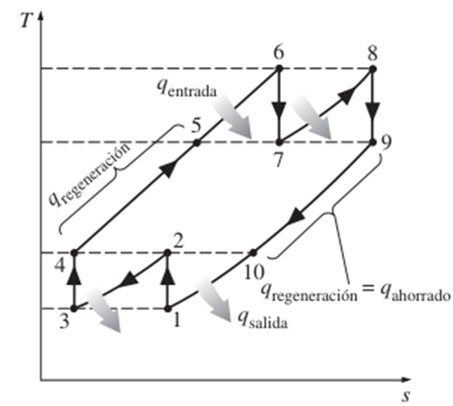
En la región i, la caída de tensión en la condición de polarización directa es muy pequeña. Además, al igual que el diodo PN, cuando aumenta la corriente, también disminuye la resistencia. En consecuencia, el diodo PIN es un dispositivo con su resistencia o conductancia modulada. En una primera aproximación, la resistencia en pequeña señal es inversamente proporcional a la corriente con polarización directa, lo mismo que en el diodo PN.
Circuito Equivalente para Pequeña Señal
El circuito equivalente para pequeña señal del diodo PIN, válido en frecuencias de microondas, se representa de manera sencilla por una capacidad CR en serie con la resistencia directa rd. Con tensiones directas, CR es aproximadamente infinita, mientras que en el modo de polarización inversa, rd es aproximadamente nula. La capacidad C es la capacidad parásita paralela que se produce al soldar el diodo a la cápsula, y L es la inductancia serie debida a los hilos de conexión desde el diodo hasta la cápsula.

DIODO SHOCKLEY
El diodo Shockley es un diodo pnpn de cuatro capas con sólo dos terminales externas, Las características del dispositivo son exactamente las mismas que para el SCR. Como las características lo indican, el dispositivo está en “apagado” (representación de circuito abierto) hasta que se alcanza el voltaje de conducción, momento en cual se desarrollan las condiciones de avalancha y el dispositivo se enciende (representación de cortocircuito).

Una aplicación común del diodo Shockley, es donde se emplea como interruptor de disparo para un SCR. Cuando el circuito se energiza, el voltaje a través del capacitor comenzará a cargarse tendiendo al voltaje de alimentación. Con el tiempo, el voltaje a través del capacitor será lo bastante alto para encender primero el diodo Schockley y luego el SCR.
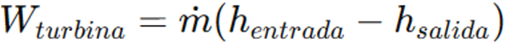
DIODO DE POTENCIA
Hay muchos diodos específicamente diseñados para manejar demandas de alta potencia y alta temperatura de algunas aplicaciones. El uso más frecuente de los diodos de potencia ocurre en el proceso de rectificación, en el cual las señales de ca (de valor promedio cero) se convierten en señales de valor promedio o de nivel de cd. Los diodos normalmente se conocen como rectificadores.
La mayoría de los diodos de potencia se construyen con silicio por sus altos valores nominales de corriente, temperatura y PIV. Las altas demandas de corriente requieren que el área de la unión sea más grande para asegurarse de que haya una baja resistencia en directa en el diodo. Si la resistencia en directa fuera demasiado grande, las pérdidas I2R serían excesivas. La capacidad de corriente de los diodos de potencia se puede incrementar colocando dos o más en paralelo y el valor nominal del PIV se puede incrementar conectándolos en serie.
Las altas temperaturas producidas por la intensa corriente requieren, en muchos casos, que se utilicen disipadores de calor para abatir el calor del elemento. Si no emplean disipadores de calor, se insertan diodos de clavija directamente en el chasis, los que a su vez actúan como disipadores de calor.


DIODO TÚNEL
Leo Esaki presentó el diodo túnel en 1958. Sus características son diferentes de las de cualquier diodo hasta ahora analizado en que tiene una región de resistencia negativa. En esta región, un incremento del voltaje terminal reduce la corriente en el diodo.

El diodo túnel se fabrica dopando los materiales semiconductores que formarán la unión pn a un nivel de 100 a varios miles de veces el de un diodo semiconductor típico. Esto reduce en gran medida la región de empobrecimiento, a una magnitud de 10-6 cm, o por lo general a aproximadamente 1/100 del ancho de esta región en el caso de un diodo semiconductor. Esta delgada región de empobrecimiento, a través de la cual muchos portadores pueden “penetrar” en lugar de que intenten superarla, a bajos potenciales de polarización en directa es la responsable del pico que aparece en la curva.
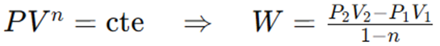
Esta región de empobrecimiento reducida hace que los portadores la “penetren” a velocidades que exceden por mucho las disponibles con diodos convencionales. El diodo túnel se puede utilizar por consiguiente en aplicaciones de alta velocidad, como en computadoras, donde se desean tiempos de conmutación de nanosegundos o picosegundos.
Los materiales semiconductores más frecuentemente utilizados en la fabricación de diodos túnel son el germanio y el arseniuro de galio. La relación IP/IV es muy importante en aplicaciones de computadora. Para el germanio, en general es de 10:1 y para el arseniuro de galio es de cerca de 20:1.
Los valores de los parámetros del circuito equivalente de diodo túnel en la región de resistencia negativa, son típicos para unidades comerciales actuales. El inductor LS se debe sobre todo a los conductores terminales. El resistor RS se debe a los conductores, el contacto óhmico en la unión conductor-semiconductor, y a los materiales semiconductores mismos. La capacitancia C es la capacitancia de difusión en la unión y R es la resistencia negativa de la región.

La disponibilidad de una región de resistencia negativa se puede aprovechar en el diseño de osciladores, redes de conmutación, generadores de pulsos y amplificadores.
DIODO VARICAP
Los diodos varactores [conocidos también como varicap, VVC (capacitancia variable dependiente del voltaje) o de sintonización] son capacitores semiconductores dependientes del voltaje. Su modo de operación depende de la capacitancia que haya en la unión pn cuando el elemento se polariza en inversa. En condiciones de polarización en inversa, hay una región de carga no recuperada a ambos lados de la unión que juntos conforman la región de empobrecimiento y definen el ancho de empobrecimiento Wd. La capacitancia de transición CT establecida por las cargas no recuperadas aisladas es:

Donde ε es la permitividad de los materiales semiconductores, A es el área de la unión pn y Wd es el ancho de empobrecimiento.
A medida que se incrementa el potencial de polarización en inversa, el ancho de la región de empobrecimiento se incrementa, lo cual a su vez reduce la capacitancia de transición.
Su circuito equivalente en la región de polarización en inversa posee una resistencia de magnitud muy grande por lo general de 1 MW o más mientras que, RS, la resistencia geométrica del diodo es muy pequeña. La magnitud de CT variará desde alrededor de 2 pF hasta 100 pF según el varicap considerado.
Para asegurarse de que RR sea lo más grande (para una corriente de fuga mínima) posible, en diodos varicap normalmente se utiliza silicio. El hecho de que el dispositivo se empleará a frecuencias muy altas requiere que incluyamos la inductancia LS aun cuando está medida en nanohenries.

Efectos de la Temperatura
La temperatura puede tener un marcado efecto en las características de un diodo semiconductor.
En la región de polarización en directa las características de un diodo de silicio se desplazan a la izquierda a razón de 2.5 mV por grado centígrado de incremento de temperatura.

Un incremento desde la temperatura ambiente (20°C) hasta 100 °C (el punto de ebullición del agua) produce una caída de 80(2.5 mV ) = 200 mV o 0.2 V, lo cual es significativo en una gráfica graduada en décimas de volts. Una reducción de la temperatura tiene el efecto inverso.
En la región de polarización en inversa la corriente de saturación en inversa de un diodo de silicio se duplica por cada 10°C de aumento de la temperatura.
2.2 Modelo real e ideal.
PROPIEDADES NO LINEALES – DIODO IDEAL
2.3 Aplicaciones: rectificadores, multiplicadores de voltaje, recortadores, fijadores y compuertas con diodos.
2.4 Simulación de circuitos de aplicación con diodos mediante herramientas de cómputo.
3. Filtrado y regulación.
3.1 Filtros para fuentes de poder.
CONSIDERACIONES GENERALES
Se requiere un circuito rectificador para convertir una señal de valor promedio cero en una de valor promedio diferente de cero. La salida resultante desde un rectificador es un voltaje de cd pulsante y aún no adecuado como reemplazo de una batería. Tal voltaje podría utilizarse en, por ejemplo, un cargador de baterías, donde el voltaje de cd promedio es lo bastante grande como para proporcionar una corriente de carga a la batería.
Para voltajes de alimentación de CD, como los que se utilizan en un radio, un sistema estereofónico, una computadora, etc., el voltaje de CD pulsante de un rectificador no es suficientemente bueno. Se requiere un filtro para proporcionar un voltaje de cd más constante.
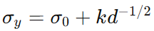
Voltaje de Rizo
En el estudio del filtrado, es esencial establecer métodos rigurosos para evaluar su desempeño. Esta evaluación nos permite comparar la eficacia de diferentes diseños y determinar su idoneidad para aplicaciones específicas.
Un factor clave a considerar es la calidad de la señal de salida filtrada. Idealmente, un filtro perfecto produciría una señal de CC pura, libre de cualquier componente de CA. Sin embargo, en la práctica, la salida de un filtro contendrá una combinación de CC y CA, donde la componente de CA representa el rizo.
La presencia de rizo es inevitable en circuitos de filtrado prácticos. No obstante, la magnitud del rizo en relación con el nivel de CC es un indicador crítico de la calidad del filtro. Un filtro eficaz minimizará el rizo, produciendo una señal de salida que se aproxime lo más posible a una CC pura.
En consecuencia, cuanto menor sea la variación de CA (rizo) en comparación con el nivel de CC, mejor será el rendimiento del circuito de filtrado. Este principio fundamental guía el diseño y la evaluación de filtros en diversas aplicaciones de ingeniería.
Considere la medición del voltaje de salida de un circuito de filtrado que utiliza un voltímetro de cd y un voltímetro de ca (rms). El voltímetro de cd leerá sólo el nivel promedio o de cd del voltaje de salida. El medidor de ca (rms) leerá sólo el valor rms del componente de ca del voltaje de salida (suponiendo que la señal de ca esté acoplada mediante un capacitor para bloquear el nivel de cd).
El rizo se define como:

Regulación de voltaje
Otro factor de importancia en una fuente de alimentación es la cantidad de cambios del voltaje de salida de cd a lo largo de la operación de un circuito. El voltaje provisto a la salida en la condición sin carga (sin que demande corriente de la fuente) se reduce cuando se extrae corriente de carga de la fuente (en condición de carga). La cantidad que el voltaje de cd cambia entre las condiciones sin carga y con carga la describe un factor llamado regulación de voltaje.
La regulación de voltaje se define como:

O dicha la ecuación es:
FILTRO DE CAPACITOR
Para conseguir los efectos del filtrado de este sistema se conecta un condensador de gran capacidad (normalmente electrolítico) en paralelo con la salida del rectificador.

El Detector de Crestas
El detector de cresta (o detector de envolvente) proporciona una salida de CC comparable al valor de cresta de la tensión de entrada y, por lo tanto, se puede utilizar como fuente de alimentación de CC. Este circuito también se usa en los receptores.
El funcionamiento del circuito detector de cresta se explica más fácilmente suponiendo que la tensión de entrada sea V₁ = Vim sen wot y que la resistencia de carga RL es infinita. Entonces, durante el primer cuarto de ciclo de la onda de entrada, el diodo actúa como un cortocircuito y, por tanto, el condensador seguirá a Vi. Cuando wot = π/2, el condensador se habrá cargado hasta vL = Vim. Cuando Vi disminuye, la tensión en el condensador no puede decrecer porque con RL infinita, la corriente de descarga del condensador debe circular a través del diodo en sentido inverso. Como la corriente no puede circular a través del diodo en este sentido, el condensador no se puede descargar. La tensión de carga vL permanece, por tanto, en el valor de cresta Vim hasta que éste no aumente.
La tensión del rizado se debe a la sucesivas cargas y descargas del condensador, la cual será la diferencia de las tensiones más alta y más baja, Es posible establecer una relación matemática entre la tensión de rizado y la capacidad del condensador mediante la expresión:
FILTRO RC
Es posible reducir aún más la cantidad de rizo a través de un capacitor de filtrado si utiliza una sección de filtro RC adicional. El propósito de la sección RC agregada es que deje pasar la mayor parte del componente de cd al mismo tiempo que atenúa (reduce) lo más posible del componente de ca.
Como ambos capacitores actúan como circuitos abiertos en operación de cd, el voltaje de cd de salida resultante es:


La operación del circuito de filtrado se analiza superponiendo los componentes de cd y ca de la señal.

Debido a la acción del divisor de voltaje de la impedancia de ca del capacitor y el resistor de carga, el componente de ca del voltaje resultante a través de la carga es:

Para un rectificador de onda completa con un rizo de ca a 120 Hz, la impedancia de un capacitor se calcula con:
donde C está en microfarads y XC en kiloohms.
3.2 El diodo zener como regulador de voltaje: estructura funcionamiento y aplicaciones.
ESTRUCTURA
DIODO ZENER
Los diodos Zener, o diodos de avalancha, son diodos semiconductores de unión pn cuyas propiedades están controladas en las zonas de polarización inversa que los hacen muy útiles en numerosas aplicaciones, especialmente como dispositivo de referencia de tensión.
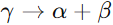
La característica directa es similar a la de los diodos semiconductores normales. La característica inversa, sin embargo, presenta una región en la cual la tensión es casi independiente de la corriente por el diodo. La tensión Zener de cualquier diodo está controlada por la cantidad de dopado aplicada en el proceso de fabricación. Los valores normales varían entre 2 y 200 V con capacidades de disipación de potencia de hasta 100 W. En la mayoría de las aplicaciones, los diodos Zener trabajan en la región de polarización inversa.
Los fabricantes especifican los diodos Zener por su tensión Zener y la máxima disipación de potencia. La corriente que circula por el diodo con su tensión nominal Zener es lo que se llama corriente de prueba Izr. Normalmente la máxima potencia nominal del diodo es cuatro veces mayor que la disipación de potencia a la tensión Zener, es decir:
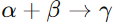
Si se observa atentamente la curva inversa de un diodo Zener, se podrá apreciar que no es del todo vertical. Esto indica que, al aumentar la corriente inversa, surge un pequeño aumento de la tensión. Este fenómeno aparece provocado por una pequeña resistencia dinámica, denominada resistencia Zener (Rz).


REGULADOR DE VOLTAJE
Una de las aplicaciones más extendidas del diodo Zener es la de estabilizador de tensión para fuentes de alimentación, Esto se consigue aprovechando la propiedad que poseen de conducir con tensiones de polarización inversa, manteniendo la tensión entre sus extremos prácticamente constantes.
La resistencia de polarización Zener tiene como misión mantener la tensión de polarización Zener entre unos valores aceptables valiéndose para ello de la caída de tensión que se produce en ella cuando la corriente que atraviesa tiende a modificarse.
FUNCIONAMIENTO Y APLICACIONES
3.3 Reguladores integrados: fijos y variables.
REGULADORES INTEGRADOS FIJOS
REGULADORES INTEGRADOS VARIABLES
3.4 Fuentes de poder.
TRANSFORMADOR
RECTIFICACIÓN
FILTRADO
REGULACIÓN
CARGA
3.5 Diseño y pruebas de circuitos reguladores de voltaje mediante herramientas de cómputo.
4. Transistores.
4.1 Estructura y funcionamiento del transistor TBJ: corte-saturación, amplificación y acoplamiento.
4.2 Configuraciones básicas: emisor común, colector común y base común.
4.3 Transistor de efecto de campo (FET y MOSFET).
4.4 Circuitos de aplicación.
4.5 Simulación de circuitos de aplicación basados en transistores con herramientas de cómputo.
5. Lógica combinacional.
5.1 Sistemas de numeración: representación de los sistemas de numeración, cambio de base y operaciones aritméticas.
5.2 Compuertas lógicas.
5.3 Álgebra de Boole.
5.4 Reducción de funciones booleanas.
5.5 Bloques combinacionales: codificador, decodificador, multiplexor y circuitos aritméticos.
5.6 Simulación de circuitos lógicos combinacionales con herramientas de cómputo.
6. Lógica secuencial.
6.1 Flip-flops: latch, R-S, J-K, D y T.
6.2 Contadores.
6.3 Registros de corrimiento.
6.4 Máquinas de estado.
6.5 Dispositivos lógicos programables (PLDs).
6.6 Diseño y simulación de sistemas lógicos secuenciales con herramientas de cómputo.
7. Dispositivos ópticos y de potencia.
7.1 Fotodiodos y fototransistores.
7.2 Optoacopadores.
7.3 Tiristores (SCR, DIAC, TRIAC).
7.4 Relevadores electromecánicos y de estado sólido.
7.5 Simulación de circuitos de aplicación con dispositivos ópticos y de potencia mediante herramientas de cómputo.
8. Amplificadores operacionales.
8.1 Estructura y funcionamiento.
8.2 Configuraciones básicas.
8.3 Circuitos de aplicación.
8.4 Introducción a los convertidores analógico/digital y digital/analógico.
8.5 Simulación de circuitos de aplicación con amplificadores operacionales con herramientas de cómputo.
9. Bibliografía
Alcalde San Miguel, P. - Electrónica aplicada.
BOYLESTAD, R., NASHELSKY, L - Electrónica Teoría de Circuitos y dispositivos electrónicos.
CHUTE, G., M., Chute, R., D. - Electronics in Industry.
MALONEY, T. J. - Modern Industrial Electronics.
Neamen, Donald A. - Microelectronics: circuit analysis and design.
Tokheim, Roger L. - ELECTRÓNICA DIGITAL. PRINCIPIOS Y APLICACIONES.
SCHILLING, D. - Circuitos electrónicos: discretos e integrados.
Schuler, Charles A. Electronics - Electronics principles & applications.
MODELADO DE SISTEMAS FÍSICOS (0508)
Objetivo(s) del curso:
El alumno comprenderá las metodologías de modelado de sistemas físicos y las aplicará para el modelado matemático de los sistemas físicos en ingeniería; además, analizará sistemas físicos lineales invariantes con el tiempo y de parámetros concentrados.
1. Modelado de sistemas físicos.
1.1 Concepto de modelado.
MODELADO
El concepto de Modelado es fundamental en la dinámica de sistemas, involucra la construcción de representaciones matemáticas que describen el comportamiento dinámico de un sistema.
Este proceso, también conocido como elaboración de modelos, es crucial para predecir cómo un sistema responderá a diferentes condiciones y para diseñarlo de manera eficiente antes de su implementación física.
PROPÓSITO DEL MODELADO
Un modelo matemático es una descripción formal que utiliza ecuaciones matemáticas para representar las características dinámicas de un sistema físico.
Estas representaciones son esenciales para prever el funcionamiento del sistema bajo diferentes entradas y condiciones, permitiendo a los ingenieros analizar y optimizar su diseño antes de su construcción física.
En particular, en sistemas dinámicos, las ecuaciones diferenciales suelen ser el medio preferido para describir las relaciones entre las variables del sistema debido a su capacidad para capturar los cambios en el tiempo.
ENFOQUES DEL MODELADO
Existen dos enfoques principales para elaborar modelos matemáticos: el modelado analítico y el experimental. En el modelado analítico, se aplican leyes físicas fundamentales, como las leyes de Newton, para derivar ecuaciones que describen el sistema.
Por otro lado, en casos donde las leyes físicas no están completamente definidas o son demasiado complejas, se recurre al modelado experimental. Este último implica someter el sistema a entradas conocidas y observar sus salidas, permitiendo deducir relaciones matemáticas basadas en los datos empíricos obtenidos.
EQUILIBRIO ENTRE SIMPLICIDAD Y EXACTITUD
Al construir un modelo, es crucial encontrar un balance entre la simplicidad y la precisión. Un modelo demasiado complejo puede ser difícil de manejar, mientras que uno demasiado simple puede no capturar adecuadamente las dinámicas esenciales del sistema.
Por lo tanto, se prioriza la identificación de las variables y relaciones físicas críticas para el propósito del análisis, descartando aquellas de impacto mínimo. Este enfoque no solo simplifica los cálculos, sino que también permite obtener resultados confiables siempre que las simplificaciones sean válidas dentro del contexto del estudio.
IMPORTANCIA DE LAS APROXIMACIONES Y SUPOSICIONES
Todo modelo matemático incorpora cierto grado de aproximación debido a las limitaciones inherentes en la medición y en la definición de los parámetros del sistema. Estas aproximaciones determinan el nivel de validez del modelo, y su efectividad solo puede evaluarse mediante comparaciones experimentales. En caso de discrepancias significativas entre las predicciones del modelo y los resultados experimentales, el modelo debe ajustarse y reevaluarse hasta lograr una concordancia satisfactoria.
PROCEDIMIENTO GENERAL PARA EL MODELADO
El proceso típico para construir un modelo matemático comienza con la elaboración de un diagrama esquemático del sistema y la definición de las variables relevantes. Luego, se aplican leyes físicas para formular ecuaciones que describan el comportamiento de los componentes individuales. Estas ecuaciones se integran considerando las interconexiones del sistema, resultando en un modelo matemático global. Este modelo se valida mediante comparaciones experimentales, ajustándose según sea necesario para mejorar su precisión.
MODELOS LINEALES Y NO LINEALES
Dependiendo de la naturaleza del sistema, los modelos pueden ser lineales o no lineales. Los modelos lineales, que son más manejables matemáticamente, se utilizan ampliamente cuando las relaciones dentro del sistema se aproximan bien por ecuaciones lineales. Sin embargo, muchos sistemas en la práctica son inherentemente no lineales, y su modelado requiere técnicas avanzadas como la linealización alrededor de condiciones operativas específicas.
1.2 Ecuaciones constitutivas de los elementos y leyes de equilibrio para sistemas eléctricos, mecánicos, hidráulicos y térmicos.
1.3 Representación de sistemas mediante ecuaciones diferenciales.
1.4 Representación de sistema mediante función de transferencia.
1.5 Obtención de la respuesta del sistema en el tiempo mediante transformada inversa de Laplace.
1.6 Concepto de estado.
1.7 Representación de sistemas mediante variables de estado.
1.8 Obtención de ecuaciones de estado a partir de la función de transferencia.
1.9 Modelado de sistemas híbridos.
1.10 Modelado de sistemas utilizando ecuaciones de Lagrange.
Un átomo es la mínima cantidad de materia que experimenta cambios químicos. Un átomo se define como la unidad básica de un elemento, el cual puede intervenir en una combinación química.
2. Características dinámicas de los sistemas físicos.
2.1 Sistemas de primer orden: respuesta impulso, respuesta escalón, constante de tiempo.
2.2 Sistemas de segundo orden: respuesta impulso, respuesta escalón, polos dominantes.
2.3 Estabilidad de los sistemas dinámicos: definición de estabilidad BIBO, criterio de estabilidad por ubicación de polos, criterio de estabilidad de Routh Hurwitz.
3. Análisis de sistemas en tiempo continuo y discreto mediante variables de estado.
3.1 Solución genérica de las ecuaciones de estado en tiempo continúo.
3.2 La matriz exponencial.
3.3 Equivalentes en tiempo discreto: transformada Z, criterio de estabilidad en el plano Z, tiempo de muestreo y métodos de equivalencias discretas.
3.4 La ecuación de estado en tiempo discreto. Matriz de transición de estados discreta.
4. Respuesta en frecuencia de sistemas en tiempo continuo.
4.1 Curvas de magnitud y fase (diagramas de Bode) a partir de la función de transferencia.
4.2 Interpretación y aplicación de los diagramas de Bode.
5. Bibliografía.
LAYTON, R. A. - Principles of Analytical System Dynamics.
NISE, Norman - Sistemas de control para ingeniería.
OGATA, Katsuhiko - Discrete-Time Control Systems.
OGATA, Katsuhiko - Ingeniería de control moderna.
OGATA, Katsuhiko - System Dynamics.
WELLSTEAD, P.e. - Introduction to Physical System Modeling.
INGENIERÍA DE MANUFACTURA (0507)
Objetivo(s) del curso:
El alumno identificará la maquinaria, equipos y métodos de manufactura para la transformación de materiales en productos útiles.
1. Procesos de conformado por deformación plástica.
1.1 Importancia de la manufactura desde un punto de vista técnico y económico.
PUNTOS DE VISTA
Punto de Vista Técnico
Desde el punto de vista técnico, la manufactura es la aplicación sistemática del conocimiento científico y tecnológico para transformar materiales en productos útiles.
Este proceso permite materializar ideas y diseños en objetos reales que satisfacen las necesidades humanas, desde componentes simples hasta sistemas complejos como automóviles, computadoras o satélites.
Técnicamente, la manufactura implica el uso de una amplia gama de conocimientos multidisciplinarios, incluyendo mecánica, electrónica, física de materiales, automatización y control, lo que la convierte en un campo esencial en el desarrollo de la ingeniería y la tecnología.
Punto de Vista Económico
En cuanto al ámbito económico, la manufactura es un pilar clave en la creación de riqueza y desarrollo de los países. Las industrias manufactureras generan una fracción significativa del producto interno bruto (PIB) de las naciones industrializadas, como en el caso de Estados Unidos, donde representan cerca del 20% del PIB.
Además, históricamente, aquellas civilizaciones que han dominado las técnicas de manufactura han logrado mayor prosperidad, superioridad militar y desarrollo económico.
La manufactura agrega valor a los recursos naturales mediante la transformación de materias primas en productos de mayor utilidad y precio, lo que estimula la economía, genera empleos y eleva el nivel de vida de la población
1.2 Relaciones esfuerzo-deformación.
ESFUERZO-DEFORMACIÓN
La relación esfuerzo-deformación es fundamental para entender el comportamiento mecánico de los materiales bajo carga. Esta relación se representa gráficamente mediante curvas que describen cómo un material responde al esfuerzo aplicado, y se divide comúnmente en dos regiones: elástica y plástica.
En la región elástica, el material se deforma de manera reversible, es decir, recupera su forma original al retirar la carga. Esta etapa está regida por la ley de Hooke (σ = E·ε), donde E es el módulo de elasticidad.
Una vez superado el punto de fluencia, el material entra en la región plástica, donde la deformación es permanente.
En esta fase, el esfuerzo y la deformación se relacionan mediante la curva de fluencia, que puede expresarse como σ = K·εⁿ, donde K es el coeficiente de resistencia y n el exponente de endurecimiento por deformación.
La curva esfuerzo-deformación proporciona información crítica para el diseño y el control de los procesos de conformado, ya que permite predecir la cantidad de esfuerzo necesario para obtener la deformación deseada sin causar falla del material.
Además, a través de las curvas verdaderas de esfuerzo-deformación, se logra una descripción más precisa del comportamiento del material, especialmente cuando se producen grandes deformaciones.
1.3 Criterios de fluencia.
CRITERIOS DE FLUENCIA
Los criterios de fluencia son reglas que permiten determinar el momento exacto en que un material comienza a deformarse plásticamente bajo un estado de esfuerzos complejos.
Son esenciales para la ingeniería de materiales, ya que ayudan a predecir el comportamiento de los materiales bajo cargas multidimensionales. Existen varios criterios propuestos, pero los más comunes en la práctica son el criterio de Tresca y el criterio de von Mises.
El primero establece que la fluencia inicia cuando la diferencia máxima entre los esfuerzos principales alcanza un valor crítico igual al esfuerzo de fluencia uniaxial.
El segundo criterio, más refinado y ampliamente aceptado, plantea que la fluencia ocurre cuando la energía de distorsión alcanza un umbral específico.
Ambos criterios son aplicables a materiales dúctiles y resultan útiles para analizar componentes sometidos a esfuerzos combinados, como en casos de torsión, flexión o carga biaxial. Comprender y aplicar correctamente estos criterios permite diseñar piezas más seguras, eficientes y con una mayor vida útil.
1.4 Teoría clásica de la plasticidad.
PLASTICIDAD
La teoría clásica de la plasticidad proporciona el marco matemático y físico necesario para modelar la deformación plástica de los materiales. Se basa en la suposición de que los materiales tienen un límite elástico a partir del cual comienzan a fluir plásticamente sin un incremento adicional significativo en el esfuerzo.
La formulación de esta teoría incorpora conceptos clave como la función de fluencia, que define la superficie en el espacio de esfuerzos donde ocurre el inicio de la plasticidad, y la regla de fluencia, que describe la dirección del incremento plástico en función del gradiente de la función de fluencia.
Además, se incluye la ley de endurecimiento, que explica cómo evoluciona la superficie de fluencia a medida que el material se deforma más. En conjunto, estas herramientas permiten simular con precisión cómo se comportan los materiales bajo cargas variables, cíclicas o multiaxiales, lo cual es esencial para el análisis en ingeniería estructural, diseño de componentes y desarrollo de nuevos procesos de manufactura.
2. Aplicación del modelado a los procesos de conformado mecánico.
2.1 Análisis de procesos de conformado por deformación.
2.2 Procesos de forja y laminación.
2.3 Procesos de extrusión.
2.4 Procesos de conformado de lámina.
2.5 Procesos de estirado.
3. Procesos de manufactura por fusión y colada.
3.1 Métodos de fundición.
3.2 Los metales en estado líquido.
3.3 Moldes y corazones.
3.4 Llenado del molde y solidificación.
3.5 Defectos en las piezas fundidas: porosidad, grietas y fisuras, microcavidades.
3.6 Propiedades mecánicas de las piezas fundidas.
3.7 Fundamentos para obtener piezas fundidas sanas.
3.8 Diseño del sistema de colada y alimentación.
3.9 Parámetros que determinan la precisión de las piezas fundidas.
4. Análisis básico de los procesos de maquinado.
4.1 Clasificación general de las máquinas herramientas.
4.2 Equipo de tornado, fresado, taladro, brochado, rectificado, cepillado, entre otros.
4.3 Definir la maquinabilidad y describir sus principales factores..
5. Teoría de corte ortogonal.
5.1 Introducción al estudio teórico del corte.
5.2 Descripción de las fuerzas de corte en el maquinado.
5.3 Descripción de la potencia útil en el maquinado..
6. Operaciones de torneado y fresado.
6.1 Análisis del proceso tecnológico para piezas maquinadas.
6.2 Normalización y símbolos para el maquinado.
6.3 Descripción de la hoja de ruta de trabajo.
6.4 Ejercicios de aplicación para las diferentes máquinas herramientas.
6.5 Análisis comparativo de la mecanización y la automatización.
7. Programación de máquinas herramientas de control numérico.
7.1 Descripción de la máquina herramienta de CNC enumerando ventajas y desventajas.
7.2 Descripción de sus sistemas de control.
7.3 Descripción de los puntos neutros y de referencia.
7.4 Descripción de los sistemas de dirección y de acotación.
7.5 Descripción de los elementos básicos de la programación.
7.6 Ejercicios de aplicación para las máquinas herramientas de CNC.
8. Bibliografía.
GROOVER, M. P. - Fundamentos de manufactura moderna: materiales, procesos y sistemas
MECANISMOS (1659)
Objetivo(s) del curso:
El alumno debe de formar antecedentes básicos para el diseño mecánico y mecatrónico, análisis y prueba de sistemas planos acoplados desde el punto de vista cinemático y dinámico, cuando se realiza la práctica de la ingeniería.
1. Cinemática del cuerpo rígido plano y generalidades sobre mecanismos.
1.1 Caracterización de los mecanismos más comúnmente empleados.
 MECANISMOS
Y MÁQUINAS
MECANISMOS
Y MÁQUINAS
Un Mecanismo es un dispositivo que transforma el movimiento en un patrón deseable, y por lo general desarrolla fuerzas muy bajas y transmite poca potencia. Se define un mecanismo como un medio de transmisión, control o restricción del movimiento relativo. Una máquina, en general, contiene mecanismos que están diseñados para producir y transmitir fuerzas significativas. Algunos ejemplos comunes de mecanismos pueden ser un sacapuntas, un obturador de cámara fotográfica, un reloj análogo, una silla plegable, una lámpara de escritorio ajustable y un paraguas.
Una definición útil de trabajo de un mecanismo es un sistema de elementos acomodados para transmitir movimiento de una forma predeterminada. Ésta puede ser convertida en una definición de una máquina si se le agregan las palabras y energía después de la palabra movimiento.
CONCEPTOS FUNDAMENTALES DE CINEMÁTICA Y CINÉTICA
La cinemática se centra en el estudio del movimiento sin considerar las fuerzas implicadas, mientras que la cinética analiza las fuerzas que actúan sobre sistemas en movimiento. Estos dos conceptos son interdependientes y forman la base para diseñar y analizar mecanismos. En el diseño de ingeniería, se comienza generalmente por determinar los movimientos cinemáticos deseados y luego se analizan las fuerzas cinéticas relacionadas. Este enfoque permite definir las posiciones, velocidades y aceleraciones, fundamentales para calcular las fuerzas dinámicas que actúan en los sistemas mecánicos.
TIPOS COMUNES DE MECANISMOS
Entre los mecanismos más utilizados se encuentran:
· Eslabonamientos: Diseñados para convertir movimiento rotacional en lineal o viceversa. Ejemplos incluyen sistemas de dirección en automóviles y limpiaparabrisas.
· Levas: Mecanismos que transfieren movimiento mediante perfiles específicos para controlar sistemas como válvulas de motor.
· Engranajes: Utilizados para transmisión de potencia con relaciones de velocidad y torque precisas. Estos mecanismos se encuentran en aplicaciones como bicicletas, donde una transmisión de cadena multiplica el torque, y automóviles, donde complejos sistemas de eslabonamientos y engranajes operan en conjunto para garantizar el movimiento eficiente.
AVANCES TECNOLÓGICOS Y NUEVAS APLICACIONES
Los avances en materiales y técnicas de manufactura han introducido mecanismos innovadores, como los sistemas microelectromecánicos (MEMS). Estos dispositivos miniaturizados, fabricados a partir de silicio, presentan configuraciones geométricas precisas y encuentran aplicaciones en industrias como la tecnología médica y electrónica. Por otro lado, los mecanismos flexibles, que eliminan holguras en juntas y reducen el mantenimiento, destacan en aplicaciones específicas aunque presentan desafíos de diseño debido a sus grandes deformaciones.
APLICACIONES PRÁCTICAS
La configuración cinemática inicial es esencial para el diseño de cualquier máquina o dispositivo mecánico. En dispositivos móviles, como motores y transmisiones, las fuerzas dinámicas generadas durante el funcionamiento deben ser cuidadosamente calculadas para evitar fallos estructurales. Estas fuerzas están directamente relacionadas con las aceleraciones derivadas de los movimientos cinemáticos, lo que resalta la importancia de integrar ambos aspectos en el diseño.
SÍNTESIS Y ANÁLISIS DE MECANISMOS
El análisis de mecanismos abarca tanto la síntesis, que implica el diseño de movimientos específicos, como el análisis de sus fuerzas y aceleraciones resultantes. Estas actividades son apoyadas por herramientas computacionales que permiten simular y optimizar configuraciones. Métodos gráficos y algebraicos son utilizados para diseñar mecanismos como eslabonamientos y sistemas de engranajes, asegurando precisión en sus funciones.
1.2 Descripción del movimiento plano por medio de matrices y números complejos.
1.3 Posición, velocidad y aceleración de los puntos de un cuerpo rígido en el plano.
1.4 Teoremas relativos al movimiento de cuerpos rígidos..
2. Análisis de mecanismos con pares inferiores.
2.1 Grado de libertad de una cadena cinemática, fórmula de Grübler.
2.2 Clasificación de los pares cinemáticos: Inferiores y superiores.
2.3 Análisis entrada-salida. Ecuación de Freudenstein.
2.4 Análisis del movimiento de los puntos de la barra acopladora.
2.5 Movilidad de los mecanismos.
3. Síntesis de mecanismos con pares inferiores.
3.1 Síntesis y su clasificación.
3.2 Síntesis de mecanismos para generación de función.
3.3 Síntesis de conducción de cuerpo rígido.
3.4 Aplicaciones de las trayectorias de los puntos de la barra acopladora al diseño de mecanismos con seis eslabones.
3.5 Mecanismos cognados y sus aplicaciones, ángulo de transmisión.
4. Análisis y síntesis de mecanismos con pares superiores.
4.1 Análisis del mecanismo leva-seguidor de punta y de carretilla.
4.2 Análisis del mecanismo leva-seguidor de cara plana.
4.3 Síntesis del mecanismo leva-seguidor de punta y de carretilla.
4.4 Síntesis del mecanismo leva-seguidor de cara plana.
5. Trenes de engranes.
5.1 Clasificación de los engranes.
5.2 Acoplamiento de los dientes de dos engranes. La involuta.
5.3 Determinación del perfil de un diente de involuta.
5.4 Trenes de engranes simples y compuestos.
5.5 Análisis de trenes planetarios, por medio de la tabla y fórmula.
5.6 Aplicaciones.
6. Dinámica plana.
6.1 Fuerzas y momentos en el plano.
6.2 Momentos de inercia y teoremas.
6.3 Fuerzas de inercia en mecanismos planos.
7. Bibliografía.
NORTON, R. L. - Diseño de maquinaria.
NORTON, R. L. - Design of Machinery: An introduction to the Synthesis and Analysis of Mechanism and Machines.
TEMAS SELECTOS DE PROGRAMACIÓN I: DESARROLLO DE VIDEOJUEGOS (1964)
Objetivo(s) del curso:
El alumno valorará los conocimientos correspondientes al área de programación, que son considerados de actualidad y necesarios para satisfacer los requerimientos de los sectores de servicios y productivo.
1. Introducción.
1.1 Objetivo del curso.
1.2 Antecedentes académicos necesarios.
1.3 Desarrollo del curso.
1.4 Programa de la asignatura.
1.5 Evaluación.
2. Dependerá de los temas propuestos por el profesor.
2.1 Depende de los temas a tratar.
3. Bibliografía.
LUIS RUEDAS - Unity y C# Desarrollo de videojuegos.
SÉPTIMO SEMESTRE
CIRCUITOS DIGITALES (1996)
Objetivo(s) del curso:
El alumno aplicará dispositivos de baja, media y alta escala de integración, así como diferentes metodologías y herramientas para el diseño de sistemas digitales.
1. Introducción a los circuitos digitales.
1.1 Compuertas TTL, DTL, RTL y CMOS. Voltaje de los estados lógicos (VIH, VIL, VOH y VOL). Concepto de fanout, conexión entre compuertas TTL y CMOS.
SISTEMAS ELECTRONICOS DIGITALES
Los Circuitos Digitales son los cerebros de nuestros dispositivos electrónicos. Su funcionamiento se basa en la combinación de compuertas lógicas y su relación con las diferentes familias digitales, como TTL, DTL, RTL y CMOS, presentan características esenciales para su aplicación en sistemas digitales.
FAMILIAS LOGICAS
Lógica TTL (Transistor-Transistor Logic)
La tecnología TTL es una evolución de la lógica DTL (Diodo-Transistor Logic), diseñada para optimizar el desempeño en sistemas digitales. Se destaca por su robustez y amplia adopción. Los parámetros de desempeño incluyen disipación de potencia y retardo de propagación, elementos cruciales para aplicaciones de alta velocidad. Por ejemplo, una compuerta NAND TTL típica opera con VOH=2.4 V, VOL=0.4 V, VIH=2 V y VIL=0.8 V. Estas características aseguran una tolerancia al ruido suficiente para la operación en entornos industriales ruidosos, tiene Velocidades de Propagación de 1.5 ns y 33 ns, dependiendo de la subfamilia (TTL estándar, TTL de alta velocidad, etc), su nivel de funcionamiento de voltaje típico es 5V.
Lógica DTL (Diode-Transistor Logic)
La lógica DTL fue la precursora directa de TTL. Consiste en compuertas NAND básicas que emplean diodos en las entradas para realizar una operación lógica AND y un transistor para invertir la señal de salida. Aunque esta tecnología ha sido reemplazada casi por completo por TTL debido a sus limitaciones en velocidad y eficiencia energética, es útil para comprender las bases de las mejoras introducidas por TTL.
Es la tecnología de lógica digital que utiliza diodos para realizar las funciones de entrada y un transistor para la función de salida, posee Velocidades de Propagación de aproximadamente 30 ns.
La disipación de potencia de una compuerta DTL es de aproximadamente 12 mW y el retardo de propagación promedia 30 ns. El margen de ruido es de aproximadamente 1 V.
Lógica RTL (Resistor-Transistor Logic)
RTL y DTL sólo tienen importancia histórica, fue la primera familia comercial que se usó ampliamente. El circuito básico de la familia de lógica digital RTL es la compuerta NOR, cada entrada está asociada a un resistor y un transistor. Los colectores de los transistores están conectados en la salida. Los niveles de voltaje para el circuito son 0.2 V para el nivel bajo y de 1 a 3.6 V para el nivel alto.
La lógica RTL es la familia lógica más básica y utiliza resistores para las entradas combinados con un transistor para amplificar y procesar señales. A pesar de su simplicidad, su abanico de salida es limitado debido a su alta disipación de potencia y retardo de propagación, factores que la relegaron a aplicaciones históricas.
Lógica CMOS (Complementary Metal-Oxide-Semiconductor)
La familia CMOS sobresale por su bajo consumo de energía, especialmente en estados estáticos, y su capacidad de integración en diseños de alta densidad. Una compuerta CMOS típica puede operar en un rango de voltaje de alimentación de 3 a 18 V con una disipación de potencia extremadamente baja, de alrededor de 0.01 mW en estado estático. Además, las series avanzadas como 74HC y 74HCT son compatibles eléctricamente con TTL, facilitando la conexión entre ambas tecnologías sin necesidad de adaptadores adicionales.
Los circuitos MOS complementario aprovechan el hecho de que es posible fabricar dispositivos tanto de canal n como de canal p en el mismo sustrato. Los circuitos CMOS constan de ambos tipos de dispositivos MOS interconectados para formar funciones lógicas. El circuito básico es el inversor, que consiste en un transistor de canal p y un transistor de canal n. La terminal de fuente del dispositivo de canal p está en Vdd, y la terminal de fuente del dispositivo de canal n está en tierra. El valor de Vdd podría ser cualquiera entre 3 V y 18 V. Los dos niveles de voltaje son 0 V para el nivel bajo y Vdd para el nivel alto (por lo regular 3.3V o 5V).
 ST
(Schottky Transistor)
ST
(Schottky Transistor)
El diodo Schottky se forma con la unión de un metal y un semiconductor, en contraste con los diodos convencionales, que se forman con la unión de un semiconductor tipo p y uno tipo n. El voltaje en un diodo Schottky conductor es de sólo 0.4 V, en vez de los 0.7 V de un diodo convencional. La presencia de un diodo Schottky entre la base y el colector impide al transistor entrar en saturación. El transistor resultante se llama transistor Schottky. El uso de transistores Schottky en un TTL reduce el retardo de propagación sin que aumente la disipación de potencia.
Su Velocidad de Propagación esta entre 3 ns y 12 ns dependiendo de la subfamilia (Schottky estándar, Schottky de baja potencia, etc.)
VOLTAJE DE LOS ESTADOS LÓGICOS
Los voltajes lógicos son fundamentales para garantizar la operación confiable de los circuitos digitales. En una compuerta NAND TTL estándar, los niveles de voltaje se definen como:
· VIH (Voltage Input High): Voltaje mínimo de entrada que es interpretado como un nivel lógico alto.
· VIL (Voltage Input Low): Voltaje máximo de entrada que es interpretado como un nivel lógico bajo.
· VOL (Voltage Output Low): Voltaje máximo de salida en un nivel lógico bajo.
· VOH (Voltage Output High): Voltaje mínimo de salida en un nivel lógico alto.
· Vcc (Voltage at the Collector): Voltaje de alimentación para circuitos bipolares.
· Vdd (Voltage Drain): Voltaje de alimentación para circuitos MOS.
· Vss (Voltage Source): Referencia a tierra o voltaje negativo en circuitos MOS.
· Vpp (Programming Voltage): Voltaje de programación, generalmente utilizado en memoria flash o EEPROM.
El margen de ruido, que representa la tolerancia del circuito a señales indeseables, es de 0.4 V tanto para estados altos como bajos. Este margen se calcula como la diferencia entre los niveles operativos y los límites tolerables para evitar errores durante la transición de estados.
PULL-UP Y PULL-DOWN
PULL-UP: Un resistor conectado entre la entrada y el voltaje de alimentación positivo (Vcc), asegurando que la entrada se mantenga en un nivel alto cuando no está activamente conducida.
PULL-DOWN: Un resistor conectado entre la entrada y tierra (GND), asegurando que la entrada se mantenga en un nivel bajo cuando no está activamente conducida.

FAN-IN, FAN-OUT Y CONEXIÓN ENTRE TTL Y CMOS
Fan-in: Número de entradas a una puerta lógica que puede manejar un circuito.
Fan-out: Número de puertas de entrada que una salida de puerta lógica puede manejar sin degradar el rendimiento del circuito
El "fan-out" o abanico de salida se refiere al número máximo de compuertas que una salida puede alimentar sin comprometer su desempeño. Para una compuerta TTL estándar, el abanico de salida típico es de 10, lo que permite conectar hasta 10 entradas estándar sin afectar la funcionalidad. En CMOS, el abanico de salida puede ser significativamente mayor, alcanzando valores de hasta 30 a frecuencias de operación de 1 MHz, aunque disminuye con el aumento de la frecuencia.
La compatibilidad entre TTL y CMOS se facilita mediante series como la 74HCT, que son eléctricamente compatibles con TTL. Esto elimina la necesidad de circuitos de interfaz adicionales, permitiendo una integración directa y eficiente entre dispositivos de ambas familias.
1.2 Diagramas lógicos y diagramas de conexiones, implementación de funciones con compuertas NAND, NOR, multiplexores y decodificadores.
1.3 Circuitos secuenciales: modelo Mealy y modelo Moore, diagramas de estado, registros (ES/SS, EP/SS, ES/SP, EP/SP, registro universal), memorias (tipos de memorias, direccionamiento, expansión del tamaño de palabra y tamaño de la memoria, partición de memoria).
1.4 PLDs, implementación de funciones booleanas, implementación de circuitos secuencias con funciones de estado, el PLD como máquina de estado (síncrona y asíncrona).
2. Máquinas de estado algorítmico (cartas ASM).
2.1 Definición de una carta ASM, componentes de una carta ASM, proceso de diseño, representación de estructuras while y for.
2.2 Implementación de cartas ASM con memorias y registros.
2.3 Implementación de cartas ASM con PLDs.
2.4 Diseño auxiliado con multiplexores, decodificadores, contadores y registros.
3. Microprogramación y diseño de microprocesadores.
3.1 Direccionamiento por trayectoria, direccionamiento entrada-estado, direccionamiento implícito, direccionamiento en formato variable.
3.2 Lenguaje de trasferencia de registros y microinstrucciones.
3.3 Instrucciones y ciclo de fetch, códigos de instrucción.
3.4 La unidad de procesamiento (ALU, bus de datos, bus de instrucción, registro de instrucción, contador de programa, el registro de status, stack pointer).
4. Programación de microcontroladores.
4.1 Introducción (diferencia entre un microprocesador y un microcontrolador), arquitecturas y periféricos, herramientas de desarrollo.
4.2 Estructura del lenguaje ensamblador e instrucciones del microcontrolador.
4.3 Interrupciones (definición, el Stack Pointer, vector de interrupción, manejo de interrupciones).
4.4 El timer (interrupción en tiempo real, contador de eventos externos, salida de comparación).
4.5 Modulación de ancho de pulso (PWM), programación y aplicaciones.
4.6 El convertidor analógico digital (arquitectura, configuración y aplicaciones).
4.7 Configuración serial asíncrona (definición, configuración y aplicación).
4.8 Configuración serial síncrona (definición, configuración y aplicación).
4.9 Lenguaje de alto nivel.
4.10 Combinación de lenguaje de alto nivel y lenguaje ensamblador.
5. Bibliografía
FLETCHER, William - An Engineering Approach to Digital Design.
MORRIS, Mano - Diseño Digital.
SISTEMAS ELECTRÓNICOS LINEALES (1973)
Objetivo(s) del curso:
El alumno diseñará sistemas electrónicos lineales para el procesamiento y acondicionamiento de señales analógicas simples y compuestas y su aplicación en sistemas mecatrónicos.
1. Introducción.
1.1 Introducción a los sistemas electrónicos lineales.
SISTEMAS ELECTRÓNICOS LINEALES
Los Sistemas Electrónicos Lineales utilizan componentes como amplificadores operacionales para manipular señales analógicas de manera predecible y precisa. Estos sistemas encuentran aplicaciones en una amplia variedad de campos, desde instrumentación hasta comunicaciones y control de procesos.
Los amplificadores operacionales son circuitos integrados altamente versátiles que han evolucionado para adaptarse a diferentes aplicaciones, desde control de procesos hasta sistemas de prueba y medición. Se caracterizan por su alta ganancia y capacidad para ser usados en configuraciones específicas mediante componentes externos.
George Philbrick es una de las personas a quienes se atribuye la invención y difusión de los amplificadores operacionales. Trabajó primero en Huntington Engineering Labs. y luego en su propia compañía Philbrick Associates. Intervino en el diseño de un amplificador operacional con un solo tubo de vacío y lo introdujo al mercado en 1948. Esos primeros amplificadores y las versiones posteriores mejoradas estaban destinadas fundamentalmente a emplearse en las computadoras analógicas. Por aquella época, la palabra "operacional" en estos dispositivos significaba operaciones matemáticas. Los primeros amplificadores operacionales servían para construir circuitos capaces de sumar, restar, multiplicar e incluso resolver ecuaciones diferenciales.
1.2 El amplificador operacional: características ideales contra reales, especificaciones del fabricante, compensación de desajustes y compensación en frecuencia, configuraciones básicas, síntesis de controladores elementales.
AMPLIFICADOR OPERACIONAL DE PROPOSITO GENEral
Cuando se inicia el aprendizaje de cómo utilizar un amplificador operacional, no conviene presentar al principiante muchísimos tipos de amplificadores y pedirle que haga una selección justificada. Por esta razón, la introducción comienza con un amplificador operacional confiable y barato que "perdona" la mayoría de los errores que se cometen en el cableado, no toma en cuenta la capacitancia parásita y no se quema fácilmente. Nos referimos al amplificador operacional 741. También se utilizan los amplificadores CA3140 y TL081 totalmente compatibles con el 741 para aplicaciones de alta frecuencia.
Los amplificadores operacionales (op-amps) son componentes fundamentales en la electrónica analógica, diseñados para amplificar la diferencia de voltaje entre dos entradas, denominadas entrada inversora (-) y entrada no inversora (+). El dispositivo tiene tres pines principales: dos entradas y una salida. En su forma ideal, el op-amp tiene una ganancia infinita, una impedancia de entrada infinita (es decir, no toma corriente de la fuente) y una impedancia de salida cero, lo que le permite entregar corriente sin pérdida de voltaje.

El símbolo del amplificador operacional que se da es un triángulo que apunta en la dirección del flujo de la señal. Este componente tiene un número de identificación de parte (NIP) colocado dentro del símbolo del triángulo.
Todos los amplificadores operacionales poseen por lo mininos cinco terminales:
1. la terminal de fuente de poder positiva Vcc o +V, en la pata 7
2. la terminal de fuente de alimentación negativa VEE o -V, en la pata 4
3. la terminal de salida, en la pata 6
4. la terminal de entrada inversora (-) en la pata 2
5. la terminal de entrada no inversora (+) en la pata 3
Algunos amplificadores operacionales de propósito general cuentan con más terminales especializadas.
La introducción de amplificadores operacionales integrados a la electrónica revolucionó el diseño de circuitos, permitiendo configuraciones flexibles con solo unos pocos componentes externos. Se destacan por su capacidad para operar en la región lineal, donde la salida es proporcional a la entrada.
ESPECIFICACIONES DE LOS FABRICANTES
Encapsulado
El amplificador operacional se fabrica en un diminuto chip de silicio y se encapsula en una caja adecuada. Alambres finos conectan el chip con terminales externas que salen de la cápsula de metal, plástico o cerámica.

Los tres encapsulados más comunes de amplificadores operacionales son las cajas metálicas: (a) los encapsulados dobles en línea, de 8 y 14 terminales en (b) y (c). Respecto a los circuitos integrados de gran densidad, se muestra en (d), un encapsulado con tecnología de montaje de superficie.
Los encapsulados de circuitos integrados están fabricados con metal, plástico o cerámica, y pueden incluir entre 3 y 12 terminales. El chip de silicio está unido a una placa metálica en el fondo del encapsulado para facilitar la disipación de calor. La lengüeta del encapsulado identifica una terminal específica, y las terminales están numeradas en sentido contrario a las manecillas del reloj cuando se observa desde arriba.
Los encapsulados doble en línea (DIP) son comunes y pueden tener 14 u 8 patas. Generalmente están hechos de plástico o cerámica, y presentan un punto o muesca que identifica la pata 1. Las terminales también están numeradas en sentido contrario a las manecillas del reloj.
En los circuitos integrados más complejos, que contienen amplificadores operacionales y otros componentes, es posible interconectar varias pastillas grandes en una sola cápsula. Para simplificar la fabricación y el ensamblaje, las lengüetas sustituyen a las terminales tradicionales. Este diseño se conoce como tecnología de montaje de superficie (SMT), que ofrece mayor densidad de componentes y mejor respuesta en frecuencia para encapsulados de tamaño reducido.
Entre los tipos de encapsulados disponibles para SMT se incluyen:
1. Encapsulados de plástico (PLCC): Son conocidos como "plastic lead chip carriers".
2. Encapsulados de tamaño pequeño (SOIC): Su nombre proviene de "small outline integrated circuits".
3. Encapsulados cerámicos (LCCC): También llamados "leadless ceramic chip carriers".
Identificación y especificación de un amplificador operacional
Cada tipo de amplificador operacional tiene un código de identificación de letra y número. Este código responde cuatro preguntas:
1. ¿Qué tipo de amplificador es?
2. ¿Quién lo fabrica?
3. ¿De qué calidad es?
4. ¿Qué clase de encapsulado contiene al chip del amplificador operacional?
No todos los fundantes utilizan el mismo código, pues la mayoría se sirve de un código de identificación que consta de cuatro partes escritas en el siguiente orden:
(1) prefijo de letras; (2) número del circuito, (3) sufijo de letras y (4) código de especificación militar.
PREFIJO DE LETRAS. El código de prefijo de letras por lo general consiste en dos letras que identifican al fabricante. En los siguientes ejemplos se dan algunos de los códigos

Número del circuito. El número del circuito se compone de tres a siete números y letras que identifican el tipo de amplificador operacional y su intervalo de temperatura. Por ejemplo:

Los tres códigos de intervalo de temperatura son:
1. C: comercial, O a 70ºC
2. I: industrial, -25 a 85ºC
3. M: militar, -55 a 125ºC
Sufijo de letras. El sufijo de una y dos letras identifica el tipo de encapsulado que contiene al chip del amplificador operacional. Se necesitan conocer el tipo de encapsulado para obtener las conexiones correctas de los pines de la hoja de especificaciones. A continuación se dan los tres códigos de sufijos más comunes de los encapsulados.

Código de especificación militar. Se emplea exclusivamente cuando la pieza se destina a aplicaciones que requieren gran confiabilidad.
FUENTE DE PODER Y CARACTERÍSTICAS IDEALES VS. REALES DE LOS AMPLIFICADORES OPERACIONALES
Fuente de poder
Las fuentes de alimentación de los amplificadores operacionales de propósito general son bipolares. Las que se venden en el mercado suelen generar ± 15 V. Se da el nombre de común de las fuentes de alimentación al punto común de ambas fuentes de + 15 V y - 15 V que se muestra con el símbolo de tierra por dos motivos. Primero, todas las mediciones de voltaje se efectúan respecto a ese punto. Segundo, el común de la fuente de alimentación suele conectarse al tercer conductor del cable de corriente, que conecta con tierra (por lo general tomada de un tubo de agua en el sótano), al chasis en que está contenida la fuente.

Características ideales
· Ganancia de tensión infinita: En la teoría, los amplificadores operacionales deberían amplificar cualquier diferencia de voltaje en sus entradas hasta un nivel infinito.
· Resistencia de entrada infinita: Esto implica que no debería fluir corriente hacia las entradas del amplificador.
· Impedancia de salida cero: Permite suministrar cualquier corriente requerida por la carga sin afectar el voltaje de salida.
· Temperatura: la señal de salida no se ve afectada por cambios de temperatura.
· Ancho de banda infinito: Garantiza una respuesta uniforme a todas las frecuencias de la señal.
· Rechazo total del modo común: Diferencias iguales en ambas entradas no afectan la salida.
Características reales
En un amplificador operacional real, las características ideales se aproximan bastante. Para conocerlas con detalles, te recomendamos consultar las hojas de especificaciones técnicas que nos facilitan los fabricantes:
· Ganancia de tensión en lazo abierto: Indica la ganancia del amplificador sin el uso de realimentación. Esta ganancia suele variar con la temperatura ambiente y con la frecuencia. Para el AO 741C la ganancia suele estar en torno a 200.000.
· Impedancia de entrada: El valor de la impedancia de entrada de un AO es muy elevada, así por ejemplo para el 741C tenemos una impedancia de unos 2 MΩ. Esta impedancia tiende a crecer con la frecuencia, por lo que los fabricantes nos facilitan unas gráficas para consultar esta dependencia.
· Impedancia de salida: Este valor suele ser muy bajo.
· Ancho de banda: El ancho de banda disminuye al aumentar la ganancia de tensión. Así por ejemplo, para el AO 741C el ancho de banda para una ganancia igual a la unidad (0 dB) es de 1 MHz, mientras que para una ganancia de 10.000 (80 dB) se reduce hasta los 100 kHz.
· Rechazo en modo común CMRR: Esta característica típica de los amplificadores diferenciales mide la capacidad del amplificador de rechazar las señales de modo común que aparecen en la entrada. El AO 741C posee un CMRR de 90 dB, lo que nos indica que el amplificador posee una ganancia 31.625 veces superior para las señales diferenciales que para las de modo común.
· Tensión offset de entrada: A poco desequilibrio que exista en el amplificador diferencial del AO, este presentará una muy débil tensión de salida en ausencia de tensión de entrada. La tensión de offset de entrada es la tensión que hay que aplicar a la entrada para eliminar dicha tensión de salida y hacer que sea cero.
La mayoría de los AO comerciales llevan incluidos un par de terminales para conectar un circuito de corrección de offset. Hoy en día existen AO comerciales que corrigen automáticamente este efecto.
· Corriente offset de entrada: Es la diferencia de corrientes de entrada cuando la tensión de salida es cero. Al igual que la tensión de offset, se produce por los desequilibrios del amplificador diferencial. Para el AO 741C esta corriente es de 20 nA.
· Corriente de polarización media de entrada: Es la corriente de pequeña polarización que necesita el amplificador diferencial para su correcto funcionamiento. En el AO 741C, esta corriente está en menos de 80 nA. El uso de transistores FET en esta etapa amplificadora reduce sensiblemente estos valores.
· Corriente de salida en cortocircuito: Es la corriente máxima que puede proporcionar el AO. Para el 741C esta corriente es de 25 mA.
· Tensiones de alimentación: Son las tensiones con las que se alimenta al amplificador. Para el AO 741C estas tensiones son de ±15 V.
Otras características:
· Tensión diferencial de entrada: ±30 V.
· Tensión de entrada: ±15 V.
· Potencia disipada: 500 mW.
· Rango de temperaturas de funcionamiento: 0°C a 70°C.
COMPENSACIÓN DE DESAJUSTES Y FRECUENCIA
Compensación de desajustes
Para minimizar los efectos del offset y las corrientes de polarización, se emplean resistencias de compensación en las entradas. Esto permite equilibrar las diferencias en las características internas del amplificador.
La mayoría de los amplificadores operacionales en circuito integrado disponen de una forma de compensar el desequilibrio de voltaje. Esto en general se realiza conectando un potenciómetro externo a puntas de conexión designadas en el encapsulado del circuito integrado (a), en el caso de un amplificador operacional 741(b). Las dos terminales están marcadas compensación o nulificación del desequilibrio. Sin entrada, el potenciómetro simplemente se ajusta hasta que el voltaje de salida es 0 (c).
Compensación en frecuencia
Los amplificadores operacionales con compensación interna de frecuencia son muy estables con respecto a las frecuencias de la señal. Esto significa que no se vuelven inestables de forma espontánea ni oscilan de manera impredecible cuando se les aplica una señal. Sin embargo, esta estabilidad se logra a costa de ciertas limitaciones en su desempeño: tienen un ancho de banda limitado para señales pequeñas, una velocidad de respuesta lenta y un ancho de banda reducido para altas potencias. Por lo tanto, estos amplificadores son ideales para aplicaciones de audio, pero no son adecuados para operar a frecuencias más altas.
Es fundamental para evitar oscilaciones y garantizar estabilidad. Los fabricantes suelen incluir capacitancias internas o recomiendan el uso de capacitores externos en configuraciones específicas para mejorar el desempeño en aplicaciones dinámicas.
Para lograr una mayor flexibilidad en el diseño de circuitos, los fabricantes producen amplificadores operacionales con terminales de compensación de frecuencia.
Estas terminales permiten al usuario ajustar la estabilidad y el ancho de banda del amplificador según las necesidades específicas de la aplicación. Esto se logra conectando componentes externos, como capacitores y resistencias, a estas terminales. Por esta razón, este tipo de amplificadores operacionales se clasifican como de compensación externa de frecuencia.
La respuesta en frecuencia del amplificador operacional 101 puede ajustarse conectando un solo capacitor a sus terminales específicos. Al modificar el valor de este capacitor, se puede controlar el ancho de banda del amplificador. Por ejemplo, al utilizar un capacitor de 3 pF, el amplificador 101 tiene un ancho de banda de 10 MHz para señales pequeñas. Si aumentamos el valor del capacitor a 30 pF, el ancho de banda se reduce a 1 MHz.
Esto significa que podemos ajustar el amplificador 101 de propósito general para que tenga el mismo ancho de banda que otro amplificador, como el 741, simplemente cambiando el valor del capacitor externo.
Cuando se utiliza el amplificador 101 en un circuito, el ancho de banda útil dependerá del valor del capacitor de compensación que se haya seleccionado. Por ejemplo, si configuramos el amplificador para una ganancia de 100 y utilizamos un capacitor de 30 pF, el ancho de banda será de 10 kHz. Si reducimos el capacitor a 3 pF, el ancho de banda aumentará de banda en pequeña señal aumenta a 100 kHz1 El ancho de banda a plena potencia también aumenta, desde 6 a 60 kHz.
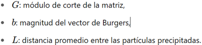
CONFIGURACIONES BÁSICAS DE AMPLIFICADORES OPERACIONALES
Amplificador No Inversor
Ofrece ganancia sin inversión de fase, ideal para aplicaciones donde la preservación de la polaridad es crítica.
En la configuración no inversora, el amplificador operacional proporciona una ganancia positiva a la señal de entrada. Esta ganancia se puede ajustar utilizando resistencias en un lazo de retroalimentación. La señal de entrada se aplica a la terminal no inversora, mientras que la terminal inversora recibe la señal de realimentación desde la salida a través de un divisor resistivo. Esto permite amplificar señales sin invertir su fase.
La ganancia del amplificador no inversor está dada por 𝐴𝑣 = 1 + 𝑅𝑓/ 𝑅𝑔, donde 𝑅𝑓 es la resistencia de realimentación y 𝑅𝑔 es la resistencia conectada a tierra desde la terminal inversora. Este tipo de amplificador es ideal para aplicaciones donde se requiere amplificar señales sin alterar su fase, y su alta impedancia de entrada lo hace adecuado para trabajar con fuentes de señal de alta impedancia.
Seguidor de Voltaje
El seguidor de voltaje, también conocido como buffer, seguidor de fuente, amplificador de ganancia unitaria o amplificador de aislamiento, es un caso especial del amplificador no inversor. Es una configuración básica donde la salida del amplificador operacional sigue exactamente el voltaje de la entrada. Esta configuración es útil para evitar caídas de voltaje en un circuito, ya que el seguidor proporciona alta impedancia de entrada y baja impedancia de salida, protegiendo la fuente de la señal de cualquier carga posterior. Esto es particularmente útil cuando se desea aislar un sensor o un divisor de voltaje de otros circuitos posteriores.
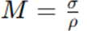
Comparador de Voltaje
Los amplificadores operacionales en configuración de comparador de voltaje se utilizan para comparar dos señales: una de entrada y otra de referencia.
La salida del comparador cambia de estado dependiendo de si la señal de entrada es mayor o menor que la señal de referencia. Esta configuración es clave en aplicaciones de control, donde la comparación de voltajes determina el encendido o apagado de ciertos dispositivos, como LEDs.

Amplificador Inversor
El amplificador inversor es una configuración fundamental en la que la señal de entrada se conecta a la terminal inversora (-) a través de una resistencia, mientras que la terminal no inversora (+) se conecta directamente a tierra. En esta disposición, la señal de salida está desfasada 180 grados con respecto a la entrada, lo que significa que invierte su polaridad.

Como un ejemplo del uso del circuito amplificador inversor, se utilizan ampliamente sensores de fotodiodos y proporcionan corrientes pequeñas al exponerse a la luz. El circuito amplificador inversor se puede usar con un sensor de este tipo para que proporcione una corriente al convertidor de voltaje, el fotodiodo se ha de polarizar inverso conectado en lugar del resistor R1, para así permitir la salida que se utilizará como entrada para un microcontrolador.
Sumadores
Permite combinar varias señales de entrada con diferentes ponderaciones.
Sumador Inversor
El amplificador sumador es una extensión del amplificador inversor que permite combinar múltiples señales en una única salida. Cada señal de entrada se conecta a la terminal inversora a través de resistencias individuales, y la salida es una combinación ponderada de todas las entradas. La ecuación general para el voltaje de salida es:

Esta configuración es ampliamente utilizada en circuitos de mezcla de audio y en sistemas de procesamiento de señales donde se requiere combinar varias entradas de manera controlada.

Sumador No Inversor
El sumador no inversor es una configuración en la que múltiples señales de entrada se combinan en la terminal no inversora del amplificador operacional. A diferencia del sumador inversor, las señales de entrada no se invierten en la salida. Para implementar esta configuración, se utiliza una red de resistencias (promediador pasivo) conectadas a cada señal de entrada, mientras que la terminal inversora está conectada a tierra a través de una resistencia de realimentación.
En este ejemplo, el circuito del promediador pasivo consta de tres resistencias iguales RA y los tres voltajes que deben sumarse. La salida del promediador pasivo es Eent, donde Eent es el promedio de E1, E2 y E3 o Eent = (E1 + E2 + E3) /3. Se conecta un seguidor de voltaje a Eent si se necesita un promediador no inversor.
Se obtiene Vo al amplificar Eent con una ganancia igual al número de entradas n. En el ejemplo n=3. Para diseñar el amplificador escoja un valor adecuado de la resistencia R. Después calcule Rf a partir de:
Como se muestra, el valor de Rf debería ser Rf = 10 kΩ. Si E1, E2 y E3 no son fuentes ideales de voltaje, como una batería o la salida de un amplificador operacional, se agrega los seguidores de voltaje.
Restadores
El circuito que toma la diferencia entre dos señales recibe el nombre de restador.
Restador Inversor
El restador inversor, también conocido como amplificador diferencial en su forma básica, es una configuración que calcula la diferencia entre dos señales de entrada (𝑉𝑖𝑛1 y 𝑉𝑖𝑛2) y proporciona una salida invertida de esta diferencia.
El circuito que toma la diferencia entre dos señales recibe el nombre de restador.
Para construirlo se conecta un amplificador inversor a un promediador inversor de dos entradas. Al analizar este circuito, nótese que E1 se transmite a través del amplificador A con una ganancia de -1 y aparece como Vo1 = -E1.
Luego el canal superior del amplificador operacional B invierte Vo1 (multiplicado por -1). Por tanto, E1 es invertido una vez por el amplificador A y después otra vez por el amplificador B para que aparezca en Vo como E1.
E2 es invertido por el canal de la parte inferior del amplificador operacional B y lleva Vo a -E2, por tanto, Vo responde a la diferencia entre E1 y E2, o bien cuando E1 = 2 V y E2 = 3 V, Vo = 2 - 3 = -1 V.
Si hacemos que el valor de Rf sea mayor que el de R1, el restador tendrá ganancia.

Ejemplo:
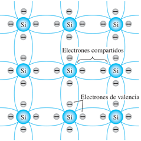
Restador No Inversor
El restador no inversor calcula la diferencia entre dos señales (𝑉𝑖𝑛1 y 𝑉𝑖𝑛2) pero sin invertir la polaridad del resultado.

Esta configuración es menos común que la inversora, pero se utiliza cuando se requiere mantener la misma fase de la señal diferencial en la salida.
Integrador
El integrador, en contraste con el diferenciador, produce una salida proporcional a la integral de la señal de entrada respecto al tiempo. Se configura reemplazando la resistencia de realimentación con un capacitor.
Produce una salida proporcional a la integral de la entrada, empleado en controladores PID y filtros.
Los integradores son fundamentales en el diseño de filtros activos y en aplicaciones donde se requiere calcular el promedio o acumulado de una señal a lo largo del tiempo.
La corriente es la rapidez con que se mueve una carga q, y dado que para un capacitor la carga es q = Cv, donde v es el voltaje, entonces la corriente a través del capacitor es i = dq/dt = C dv/dt. La diferencia de potencial en C es de (vx - vsalida), y dado que vx en realidad es cero, por ser la tierra virtual, es igual a v_salida. Entonces, la corriente que pasa por el capacitor es igual a -C dvsalida/dt. Pero ésta también es la corriente que pasa por la resistencia de entrada R. Por lo tanto:

Re-arreglando e Integrando ambos lados de la ecuación:


donde Vsalida(t2) es el voltaje de salida en el momento t2 y Vsalida(t1) es el voltaje de salida en el momento t1. La salida es proporcional a la integral del voltaje de entrada, es decir, el área bajo la gráfica del voltaje de entrada en función del tiempo.

Diferenciador
El diferenciador es una configuración que genera una señal de salida proporcional a la derivada de la señal de entrada respecto al tiempo. Para lograr esto, un capacitor reemplaza a la resistencia de entrada en un amplificador inversor estándar.
Genera una salida proporcional a la derivada de la entrada, útil en circuitos de procesamiento de señales.
Este circuito es útil en aplicaciones de procesamiento de señales donde se requiere detectar cambios rápidos en la señal de entrada, como en la detección de bordes en señales digitales.
Si el capacitor y el resistor se intercambian en el circuito por el amplificador integrador, se obtiene un circuito diferenciador. La corriente de entrada ientrada al capacitor C es dq/dt = C dv/dt. Con el caso ideal de corriente cero del amplificador operacional, ésta es también la corriente que pasa a través del resistor retroalimentador R, es decir, -Vsalida/R y por tanto:

Amplificador con Diodos (Rectificador de Precisión)
El amplificador con diodos, también conocido como rectificador de precisión, es una configuración que utiliza diodos en combinación con un amplificador operacional para realizar una rectificación precisa de señales de pequeña amplitud.
A diferencia de los rectificadores tradicionales, esta configuración elimina el umbral de voltaje típico de los diodos (aproximadamente 0.7 V para los diodos de silicio), permitiendo una rectificación efectiva incluso para señales de amplitud muy baja.
Existen dos configuraciones principales:
Rectificador Lineal de Media Onda
La señal de entrada se aplica al circuito y solo se permite el paso de una polaridad de la señal (positiva o negativa) dependiendo de la orientación del diodo.
El amplificador operacional compensa las pérdidas de voltaje en el diodo, asegurando una salida precisa.
Rectificador inversor lineal de media onda con salida positiva
Este circuito utiliza un amplificador operacional en configuración inversora con dos diodos para obtener una salida positiva para señales de entrada negativas.
Cuando la entrada 𝐸𝑖 es positiva, el diodo D1 conduce, bloqueando la salida en cero.
Sin embargo, para señales negativas, el diodo D2 conduce, y el circuito actúa como un inversor, resultando en una salida positiva proporcional a la magnitud de la señal de entrada

Los diodos son 1N914 o 1N4154.
Rectificador inversor lineal de media onda con salida negativa
Al invertir los diodos del circuito anterior, se obtiene una configuración que invierte la polaridad de la salida. Aquí, solo las señales positivas se transmiten y se invierten en la salida.
La salida es cero para todas las entradas negativas. Esta configuración es útil cuando se necesita una inversión precisa de señales específicas.
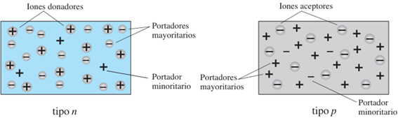
Separador de polaridad de señal
El separador de polaridad de señal es un circuito que distingue y separa las polaridades de una señal de entrada Ei, generando salidas individuales para las componentes positiva y negativa de la señal.
El separador de polaridad de señal es un circuito diseñado para distinguir las polaridades de una señal de entrada Ei y proporcionar dos salidas separadas, donde una indica la magnitud de la señal positiva y la otra la magnitud de la señal negativa. Este circuito, basado en amplificadores operacionales con diodos, opera mediante el control de la conducción de dos diodos en función de la polaridad de Ei . Cuando Ei es positiva, el diodo Di conduce, permitiendo una salida negativa en Vo1 , mientras que la Vo2 queda acotada a 0 V. Por otro lado, cuando Ei es negativa, el diodo D2D_2D2 se activa, lo que genera una salida positiva en Vo2 y mantiene Vo1en 0 V. Esta operación se observa claramente en las formas de onda generadas, que muestran cómo el circuito convierte cada polaridad de entrada en una salida específica, asegurando un aislamiento completo entre las dos señales de salida. Este diseño es ideal para aplicaciones en las que es crucial procesar y analizar las componentes positivas y negativas de una señal de manera independiente.
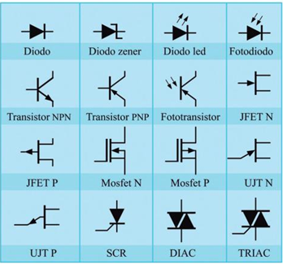
Rectificador de Precisión de Onda Completa
Combina dos rectificadores de media onda y utiliza un diseño más complejo para rectificar ambas polaridades de la señal de entrada.
La salida resultante es una señal positiva para ambas mitades del ciclo de la señal original.
Rectificador de precisión de onda completa con resistencias iguales
Este circuito emplea dos amplificadores operacionales, dos diodos y resistencias iguales. Es capaz de rectificar ambos ciclos de una señal alterna, produciendo una salida proporcional al valor absoluto de la entrada. El primer amplificador invierte las señales negativas, mientras que el segundo genera una salida positiva independiente de la polaridad de la señal de entrada. Este diseño es económico y preciso, pero no ofrece alta impedancia de entrada.

Rectificador de precisión de onda completa de alta impedancia
En esta configuración, los amplificadores operacionales están dispuestos para proporcionar alta impedancia de entrada, lo que lo hace adecuado para señales de fuentes con alta impedancia. Las señales positivas y negativas se rectifican mediante los diodos, resultando en una salida positiva igual al valor absoluto de la señal de entrada. Esta variante es ideal para aplicaciones que requieren precisión y compatibilidad con señales débiles o sensibles.
Amplificador logarítmico
El amplificador logarítmico es una configuración básica especial que utiliza un diodo o un transistor en la red de realimentación para generar una salida proporcional al logaritmo de la señal de entrada.
Este tipo de amplificador es útil en aplicaciones donde las señales varían en un rango amplio, como en sistemas de medición o en circuitos de compresión de señales.
Cuando el diodo está en la red de realimentación del amplificador operacional, la salida del amplificador operacional ajusta su voltaje para mantener el principio de superposición. Como resultado, el voltaje de salida es proporcional al logaritmo natural de la señal de entrada.
La salida de algunos sensores es no lineal. Por ejemplo, la salida de un termopar no es una función perfectamente lineal de la diferencia de temperatura entre sus uniones.
Entonces se puede utilizar un acondicionador de señal para linealizar la salida de estos sensores.
Para ello se utiliza un circuito con amplificador operacional diseñado para que la relación entre su entrada y su salida sea no lineal, de manera que cuando su entrada es no lineal, la salida será lineal. Esto se logra con las componentes adecuadas en el lazo de retroalimentación.
El amplificador logarítmico es un ejemplo de este acondicionador de señal. En el lazo de retroalimentación hay un diodo (o un transistor con base aterrizada).
El diodo tiene una característica no lineal. Su comportamiento podría representarse por V = C ln I, donde C es una constante.
Como la corriente del lazo de retroalimentación es idéntica a la corriente del resistor de entrada y la diferencia de potencial en el diodo es -Vsalida; tenemos que:
donde K es una constante. Ahora bien, si la entrada Ventrada la proporciona un sensor con entrada t, donde: Ventrada = A eat, con A y a constantes, entonces:
El resultado obtenido es una relación lineal entre Vsalida y t.

SÍNTESIS DE CONTROLADORES ELEMENTALES
Los amplificadores operacionales se utilizan ampliamente en el diseño de controladores básicos:
Controladores de dos posiciones: el controlador es en esencia un interruptor activado por la señal de error y proporciona sólo una señal correctora tipo encendido-apagado.
Controladores proporcionales: Ajustan la salida en función de una entrada proporcional al error.
Controladores integradores: Acumulan el error a lo largo del tiempo para eliminar desviaciones constantes.
Controladores derivativos: Responden a cambios rápidos, mejorando la estabilidad y la respuesta del sistema.
Combinación de modos de control: proporcional derivativo (PD), proporcional integral (PI) y proporcional integral derivativo (PID). El término controlador de tres términos se usa para el modo PID.
Circuitos amplificadores operacionales que se pueden utilizar como controladores o compensadores.

2. Filtros.
2.1 Introducción a los filtros: filtros pasivos, filtros activos.
El término filtrado se refiere al proceso de la eliminación de ciertas bandas de frecuencias de una señal y que se permita la transición de otras bandas.
Los filtros analógicos pueden ser construidos solamente usando componentes pasivos, como resistores, capacitores e inductores, los cuales son llamados filtros pasivos. Pero a diferencia, un filtro activo es una clase de filtro cuyas características son subsidiarias mediante el uso de uno o más amplificadores operacionales. Los filtros activos, en general son construidos usando solamente amplificadores operacionales, resistores y capacitores. (Filtro de paso bajo: a) pasivo, b) activo).
Los filtros pasivos tienen la desventaja de que la corriente que absorbe cada elemento puede modificar las características de frecuencia de dicho filtro; estos problemas no se presentan en los filtros activos.
Los amplificadores operacionales son componentes ideales que permiten realizar filtros de varios tipos con la gran ventaja de proporcionar una salida de baja impedancia, lo que esto permite el construir varios bloques de varias etapas funcionales, los cuales se pueden intercalar en cualquier circuito y estos van a cumplir con su cometido.
Los filtros se clasifican de acuerdo con los intervalos de frecuencias que transmiten o rechazan, Hay 5 tipos básicos de filtros: PasaBajas (LOW-PASS), PasaAltas (HIGH PASS), Pasa-Bandas (BANDPASS), Muesca o Rechazo-Bandas (BANDSTOP/NOTCH) y PasaTodas (ALL-PASS). (a) paso bajo, b) paso alto, c) paso banda, d) rechazo banda)

FILTROS PASIVOS
· Utilizan componentes como resistencias, capacitores e inductores.
· No requieren fuentes externas de energía.
· Tienen limitaciones en la ganancia y son más susceptibles a pérdidas en frecuencias específicas.
Los filtros pasivos son circuitos esenciales que permiten modificar el contenido espectral de las señales eléctricas sin la necesidad de elementos activos como amplificadores operacionales. Estos filtros están compuestos únicamente por componentes pasivos: resistencias, inductancias y capacitancias. Se denominan "pasivos" porque no requieren una fuente externa de energía para operar. Los filtros pasivos se clasifican principalmente en PasaBajas, PasaAltas, Pasa-Banda y Rechaza-Banda, cada uno diseñado para dejar pasar o bloquear ciertas frecuencias según sus características.
Un filtro PasaBajas permite el paso de frecuencias inferiores a la frecuencia de, atenuando aquellas superiore. En contraste, un filtro PasaAltas actúa de forma inversa, permitiendo frecuencias superiores a la frecuencia de corte, mientras bloquea las inferiores. Los filtros Pasa-Banda son una combinación de PasaBajas y PasaAltas, definiendo un rango específico de frecuencias de paso, mientras que los filtros Rechaza-Banda (o muesca) eliminan una banda de frecuencias específica, permitiendo pasar las demás.
Los filtros pasivos presentan ventajas como simplicidad de diseño, bajo costo y ausencia de requerimientos de alimentación externa. Sin embargo, tienen limitaciones significativas, como la imposibilidad de amplificar señales y la dependencia de los valores precisos de los componentes para determinar la frecuencia de operación.
FILTROS ACTIVOS
· Incorporan amplificadores operacionales para superar las limitaciones de los pasivos.
· Ofrecen ganancia y mayor flexibilidad en el diseño.
· Ejemplos incluyen configuraciones pasa bajos, pasa altos, pasa bandas y de rechazo de banda, cada uno con aplicaciones específicas de filtros de primer y segundo orden.
Los filtros activos son una evolución de los filtros pasivos que incorporan elementos activos, como amplificadores operacionales, para superar las limitaciones de los filtros pasivos. Estos filtros no solo permiten manipular las frecuencias de paso y rechazo, sino que también proporcionan ganancia, lo que resulta fundamental en aplicaciones donde las señales necesitan amplificación.
Un filtro activo típico puede ser PasaBajas, PasaAltas, Pasa-Banda o Rechaza-Banda, y puede configurarse en diseños como Sallen-Key o de múltiples retroalimentaciones. Por ejemplo, un filtro Pasa-Bandas activo utiliza un amplificador operacional para mantener la ganancia en la banda de paso mientras atenúa las frecuencias más allá de la frecuencia crítica. Además, los filtros activos permiten la implementación de características específicas, como la selectividad ajustable a través del factor de calidad 𝑄. Este factor define la relación entre la frecuencia central y el ancho de banda
DIAGRAMA DE BODE
El diagrama de Bode es una herramienta visual utilizada en el diseño de filtros para representar la ganancia y la fase del filtro en función de la frecuencia. Se grafica en escalas logarítmica y semi-logarítmica, respectivamente. Es decir, los intervalos de frecuencia se expresan en múltiplos de diez ( ... , 0.01, 0.1, 1, 10, 100, ... ) o de ocho ( ... , 1/8, 1/4, 1/2, 1, 2, 4, 8, ... ) y |H| se expresa en decibeles (dB).

Dónde H es igual al voltaje de salida (Vout) sobre el voltaje de entrada (Vin) En el diagrama de Bode de un filtro pasa banda, se observa un pico de ganancia en la frecuencia central, que disminuye fuera de la banda de paso. En el caso del filtro de muesca, el diagrama muestra una caída pronunciada en la frecuencia de rechazo. Este análisis en el dominio de la frecuencia facilita el ajuste de los componentes del filtro para obtener la respuesta deseada.
Un ejemplo de este es el siguiente:

El diagrama de Bode no solo facilita el análisis y diseño de filtros, sino que también es una herramienta valiosa para validar experimentalmente el comportamiento de un circuito, comparando la respuesta teórica con la medida.
2.2 Características de filtros de primer y segundo orden.
FILTROS DE PRIMER ORDEN
· Tienen una pendiente de -20 dB por década.
· Su función de transferencia tiene un solo polo.
· Su diseño es más simple y se utilizan cuando no se requiere una atenuación pronunciada.
Los filtros de primer orden son circuitos electrónicos básicos que utilizan un solo polo, es decir, un conjunto formado por una resistencia y un capacitor (o un inductor), para definir su frecuencia de corte (𝑓𝑐). Estos filtros tienen una respuesta inicial de ganancia plana en su banda de paso y una caída en la ganancia de −20 dB/década por encima o por debajo de la frecuencia crítica, dependiendo de si es un filtro PasaBajas o PasaAltas.

Aplicaciones y Características:
· Simplicidad de Diseño: Los filtros de primer orden son sencillos y económicos de construir, ya que requieren pocos componentes.
· Pendiente de Atenuación Moderada: Con −20 dB/década, estos filtros son ideales para aplicaciones donde no se requiere una separación muy pronunciada entre la banda de paso y la de rechazo.
· Uso Frecuente en Sistemas Analógicos: Estos filtros se utilizan para eliminar ruido de alta frecuencia o para proteger etapas de procesamiento de señales de componentes de frecuencia no deseadas.
Aunque son eficaces en aplicaciones simples, su capacidad para discriminar frecuencias es limitada, lo que los hace menos adecuados para sistemas donde se necesita una selectividad más precisa.
FILTROS DE SEGUNDO ORDEN
· Proporcionan una pendiente de -40 dB por década, lo que permite un mayor control en la atenuación de frecuencias indeseadas.
· Contienen dos polos en su función de transferencia.
· Su implementación puede incluir topologías como Sallen-Key y múltiples configuraciones activas.
· Son más comunes en aplicaciones que requieren una selectividad mayor.
Los filtros de segundo orden, también conocidos como filtros de dos polos, son una evolución de los filtros de primer orden, que emplean dos conjuntos RC o equivalentes, aumentando la pendiente de atenuación a −40 dB/década. Esto los hace significativamente más efectivos en la separación de frecuencias de interés.
La frecuencia crítica para un filtro de segundo orden sigue siendo definida por los valores de los componentes, pero incorpora un segundo polo que permite ajustar parámetros adicionales, como el factor de calidad (Q).
Tipos y Beneficios:
· Fácil Ajuste de Selectividad: Los valores de Q determinan si el filtro tiene una banda de paso estrecha (alta selectividad) o amplia (menor selectividad).
· Menor Distorsión en Aplicaciones Específicas: En configuraciones avanzadas como los filtros Butterworth, Chebyshev o Bessel, el comportamiento del filtro puede optimizarse para maximizar la planitud de la ganancia, minimizar la distorsión de fase o aumentar la rapidez de la caída.
Configuraciones Típicas:
· Sallen-Key: Utiliza un amplificador operacional en combinación con componentes RC para implementar filtros PasaBajas o PasaAltas de segundo orden.
· Filtros de Estado Variable: Incorporan amplificadores operacionales adicionales para generar simultáneamente salidas de PasaAltas, PasaBajas y Paso-Banda.
Los filtros de segundo orden son ideales para aplicaciones de audio, procesamiento de señales y comunicaciones, donde la precisión y la selectividad son cruciales
FILTROS DE TERCER ORDEN Y DE ORDEN SUPERIOR
Los filtros de tercer orden agregan un tercer polo al circuito, logrando una pendiente de atenuación de −60 dB/década. Estos filtros combinan múltiples etapas de primer y segundo orden en serie o utilizan configuraciones especializadas que incorporan un polo adicional.
Características Principales:
· Mayor Selectividad: Adecuados para aplicaciones donde se necesita una separación más clara entre las frecuencias de paso y de rechazo.
· Complejidad Moderada: Requieren más componentes pasivos y, en algunos casos, un amplificador operacional adicional.
· Aplicaciones: Sistemas de audio avanzados y filtrado de señales en sistemas de comunicaciones.
Filtros de Orden Superior (Cuarto Orden en Adelante)
Los filtros de orden superior (n>3) se construyen añadiendo polos adicionales, lo que mejora aún más la capacidad de atenuación de frecuencias fuera de la banda de paso. Por ejemplo: Cuarto Orden Pendiente de −80 dB/década, Quinto Orden Pendiente de −100 dB/década, etc.
Diseño: Se implementan combinando etapas de menor orden (como un filtro de segundo orden seguido de otro de tercer orden). Utilizan configuraciones avanzadas como filtros de Chebyshev o elípticos para maximizar la eficiencia en aplicaciones específicas.
Ventajas y Desventajas: Excelente capacidad de discriminación y alta precisión en aplicaciones críticas. Pero mayor complejidad de diseño y mayor sensibilidad a variaciones en los componentes.
Aplicaciones Comunes:
· Procesamiento de señales digitales.
· Sistemas de telecomunicaciones.
· Filtrado en sistemas de medición de precisión.
Estos filtros se utilizan en aplicaciones que exigen un rendimiento superior, como en equipos médicos, sistemas de radar y tecnologías de alta frecuencia.
2.3 Filtros Butterworth, Chebyshev y otros.
Las características Butterworth, Chebyshev o Bessel se pueden obtener con la mayoría de las configuraciones de los circuitos de filtros activos mediante la selección apropiada de ciertos valores de sus componentes. Los filtros PasaAltas y PasaBajas también pueden diseñarse para que tengan cualquiera de las características.

FACTORES Y TOPOLOGIAS
Se puede diseñar un filtro activo para que tenga una característica de respuesta Butterworth, Chebyshev o Bessel no importa que sea PasaBajas, PasaAltas, PasoBanda o supresores de banda. El factor de amortiguamiento relativo (DF) de un circuito de un filtro activo determina cuál característica exhibe el filtro.
El amplificador y el circuito de realimentación están conectados en una configuración no inversora. El circuito de realimentación negativa determina el factor de amortiguamiento relativo el cual está definido por la siguiente ecuación:
El factor de amortiguamiento relativo afecta la respuesta del filtro por la acción de la realimentación negativa. Cualquier intento de incremento o reducción en el voltaje de salida es contrarrestado por el efecto opuesto de la realimentación negativa. Esto tiende a aplanar la curva de respuesta en la banda de paso del filtro, si el valor del factor de amortiguamiento relativo se establece con precisión.
Mediante Matemáticas Avanzadas se derivaron valores para el factor de amortiguamiento relativo para varios órdenes de filtros para obtener la respuesta máximamente plana de la característica Butterworth.
El valor del factor de amortiguamiento relativo requerido para producir una característica de respuesta deseada depende del orden (número de polos) del filtro. Un polo es simplemente un circuito con un resistor y un capacitor. Mientras más polos tenga el filtro, más grande será su rapidez de la pendiente de caída.
Entre los filtros activos cabe destacar la topología, que básicamente es como están interconectados los componentes, estarán la topología Sallen-Key, y la topología MFB (Multiple Feed Back).

De acuerdo con cómo se distribuyan los componentes, se obtendrán los diferentes tipos de filtro. En un filtro MFB, la función de transferencia siempre es inversa, y se puede observar que tiene dos realimentaciones de la entrada a la salida.
En un filtro hay dos cosas muy importantes, el circuito y la función de transferencia, dependiendo del circuito se sabrá cual es el máximo factor de calidad , y como será su comportamiento en la frecuencia; de la función de transferencia que es la representación matemática entre la salida y entrada del filtro, hallamos la magnitud y fase del filtro, así mismo las frecuencias de corte.
El factor de calidad nos indica que tan selectivo es un filtro (en cierta manera que tanto se parece a uno ideal), entre mayor sea el valor del factor de calidad, mayor la selectividad del filtro, el valor que se puede alcanzar varía de acuerdo, a si el filtro es pasivo o activo, a la topología, al orden del filtro, a la calidad de los mismos componentes.
BUTTERWORTH
La Aproximación Butterworth en el diseño de filtros se refiere al uso de los polinomios de Butterworth para la ubicación de los polos del filtro. Estos polinomios fueron descritos por el ingeniero y físico Stephen Butterworth en el año 1930. Tienen como principal característica la respuesta más plana posible en la banda de paso.
Ofrecen una respuesta plana en la banda pasante, sin ondulaciones, ideal para aplicaciones que requieren un paso uniforme de las señales. Son muy útiles en aplicaciones donde es crucial evitar distorsión en las señales. Se diseñan para evitar resonancias no deseadas.

El filtro Butterworth se caracteriza por su respuesta maximizada en la banda de paso, lo que significa que la ganancia se mantiene uniforme sin ondulaciones ni irregularidades. Este comportamiento lo hace ideal para aplicaciones donde es crucial preservar la integridad de la amplitud de las señales dentro de un rango de frecuencias determinado, como en sistemas de audio y procesamiento de señales de alta fidelidad. Una de las principales ventajas de este filtro es su simplicidad en términos de diseño, lo que facilita su implementación en configuraciones analógicas y digitales.
En términos de fase, el filtro Butterworth introduce un retraso no lineal, lo que puede provocar distorsión temporal en señales pulsantes. Este fenómeno se debe a que las componentes de frecuencia experimentan diferentes retardos, lo que puede ser problemático en aplicaciones donde la sincronización temporal es crítica. A pesar de esta limitación, el filtro Butterworth sigue siendo una opción preferida en aplicaciones donde la uniformidad de la ganancia es más importante que la linealidad de la fase.
La función de transferencia del filtro Butterworth está diseñada para tener una pendiente moderada en la banda de transición, con una caída de −20 dB/década/polo. Aunque está pendiente no es tan pronunciada como la de otros filtros, garantiza una transición suave entre la banda de paso y la de rechazo.
Sin embargo, esta característica también implica que los filtros Butterworth requieren un mayor número de polos para alcanzar niveles de atenuación equivalentes a otros diseños más selectivos, como los filtros Chebyshev o elípticos.
La ecuación para hallar los polos de un polinomio Butterworth es la siguiente:

Donde n es el número de polos del polinomio es decir el mismo orden del polinomio y k hace un recorrido desde 1 hasta n. Ahora la ecuación característica de un polinomio de Butterworth está dada por la siguiente ecuación:

En la siguiente tabla están los polos de los polinomios de Butterworth desde orden 1 hasta orden 10:

Y en la siguiente tabla están las ecuaciones características de los polinomios Butterworth desde orden 1 hasta orden 10:

El diseño de este filtro se basa en amplificadores operacionales configurados en topologías de segundo orden, como Sallen-Key y de múltiples realimentaciones, dependiendo de los requisitos específicos de la aplicación.
En la configuración Sallen-Key, se emplean dos resistencias y dos capacitores conectados en una red a un amplificador operacional. Este diseño permite un ajuste preciso de la frecuencia de corte (fc) y proporciona una excelente estabilidad. Para aplicaciones más exigentes, la configuración de múltiples realimentaciones utiliza un mayor número de componentes, incluyendo resistencias adicionales y amplificadores, lo que ofrece una mayor flexibilidad para diseñar filtros de órdenes superiores.
Parámetros de Diseño para Filtros Activos
Frecuencias de Corte Inferior (fL) y Superior (fH): Son las frecuencias donde la respuesta del filtro cae a un valor determinado, típicamente -3 dB con respecto a la ganancia máxima. Estas frecuencias delimitan el rango de paso o rechazo del filtro y son esenciales para definir el comportamiento del filtro en aplicaciones específicas.
Ancho de Banda (BW): Define el rango de frecuencias que el filtro permite pasar o rechazar. En un filtro de banda angosta, el ancho de banda es muy reducido, permitiendo así un rechazo específico en una frecuencia precisa. Se calcula como:
Frecuencia de Resonancia (fr): En los filtros de banda angosta, la frecuencia de resonancia es la frecuencia donde la ganancia alcanza su máximo o mínimo en el caso del filtro de muesca. Se calcula como:

NOTA: El ancho de banda no está exactamente centrado en la frecuencia de resonancia. Es por ello por lo que se utiliza el nombre tradicional frecuencia de resonancia y no frecuencia central para designarlo.
Si se conoce la frecuencia de resonancia y el ancho de banda es posible calcular las frecuencias de corte mediante:

Calidad del Filtro (Q): El factor de calidad define la selectividad del filtro, es decir, su capacidad para discriminar entre las frecuencias que están dentro y fuera de la banda de paso o rechazo. Un valor alto (mayor a 0.5) de Q indica un filtro de banda angosta, ideal para aplicaciones de rechazo preciso de frecuencias específicas. Se calcula como:
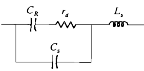
Resistencias para el Filtro de Banda Angosta: En un filtro de banda angosta o de muesca, los valores de las resistencias y capacitores son críticos para ajustar la frecuencia de resonancia.
La resistencia R se determina con el ancho de banda y con dos capacitores C de valores iguales mediante la siguiente relación:

La ganancia tiene un máximo de 1 (unitaria) en la frecuencia de resonancia dada por la resistencia de retroalimentación de valor 2R.
La frecuencia de resonancia queda determinada por la resistencia de resonancia Rr de acuerdo con:

Cuando se conocen los valores de los componentes del circuito la frecuencia de resonancia puede calcularse mediante:
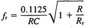
Filtros Básicos PasaBajas RC (-20 dB/década)
Un filtro pasa bajos activo de primer orden RC como su nombre lo dice solo permite el paso de frecuencias bajas y atenúa las frecuencias altas. Este está compuesto por cinco elementos un condensador, tres resistencias, y un amplificador operacional (op-amp). La entrada es por la resistencia R y la salida se toma en salida del amplificador operacional.
Tiene tres principales características: la ganancia puede ser mayor a uno, al ser de primer orden su atenuación es de 20db por década de frecuencia, y hay dos circuitos, el inversor y el no inversor.
Filtro PasaBajas Inversor
El circuito de un filtro inversor pasa bajos activo de primer orden es el siguiente:
Función de transferencia inversor:

Ecuaciones de diseño:


· A es la ganancia de este filtro.
· fc es la frecuencia de corte.
· El valor de C es libre.
· La salida es inversa respecto a la entrada, signo menos en la función de transferencia.
La función de R1 es la de balancear el circuito, mas sin embargo se puede obviar, y reemplazar por un corto circuito.

Filtro PasaBajas no Inversor
El circuito de un filtro no inversor pasa bajos activo de primer orden es el siguiente:

Función de transferencia no inversor:

Ecuaciones de diseño:
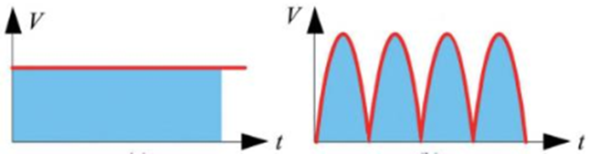


· A es la ganancia de este filtro.
· El valor de C es libre.
· La mínima ganancia A es 1.
· fc es la frecuencia de corte.

Respuesta del filtro: El valor de ACL a ωc se encuentra al hacer ωRC = 1
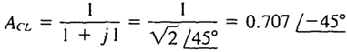
Por tanto, la magnitud de ACL a ωc es:

y el ángulo de fase es -45°.
Filtro Butterworth PasaBajas de - 40 db/década
Filtro Butterworth PasaBajas de - 60 db/década
Filtros Básicos PasaAltas RC (-20 dB/década)
Un filtro pasa altos activo de primer orden RC como su nombre lo dice solo permite el paso de frecuencias altas y atenúa las frecuencias bajas. Este está compuesto por cinco elementos un condensador, tres resistencias, y un amplificador operacional (opamp). La entrada es por la resistencia R y la salida se toma en salida del amplificador operacional.
Tiene tres principales características: la ganancia puede ser mayor a uno, al ser de primer orden su atenuación es de 20db por década de frecuencia, y hay dos circuitos, el inversor y el no inversor.
Filtro PasaAltas Inversor
El circuito de un filtro inversor pasa altos activo de primer orden RC es el siguiente:
Función de transferencia inversor:
Para diseño las ecuaciones son las siguientes:


· A es la ganancia de este filtro.
· fc es la frecuencia de corte.
· El valor de C es libre.
· La salida es inversa respecto a la entrada, signo menos en la función de transferencia.
La función de R1 es la de balancear el circuito, mas sin embargo se puede obviar, y reemplazar por un corto circuito. La razón para despejar R y no C en la ecuación es que es más fácil ajustar R que C.
Filtro PasaAltas no Inversor
El circuito de un filtro no inversor pasa altos activo de primer orden RC es el siguiente:
Función de transferencia no inversor:

Para diseño las ecuaciones son las siguientes:


· A es la ganancia de este filtro.
· El valor de C es libre.
· La mínima ganancia A es 1.
· fc es la frecuencia de corte.
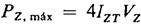
Filtro Butterworth PasaAltas de - 40 db/década
Filtro Butterworth PasaAltas de - 60 db/década
Filtros Pasa-Bandas (Banda Angosta Y Banda Ancha)
Banda Ancha
Banda Angosta
Filtros De Muesca (Rechazo-Bandas)
CHEBYSHEV
La Aproximación Chebyshev en el diseño de filtros se refiere al uso de los polinomios de Chebyshev para la ubicación de los polos en un determinado filtro. Estos polinomios fueron descritos por el matemático Pafnuty Chebyshev. Tienen como principal característica que se les puede configurar un rizado antes de la banda de paso con lo que se logra una respuesta más rápida en la banda de paso.
Se caracterizan por tener ondulaciones en la banda pasante, lo que permite una atenuación más rápida fuera de la banda. Son ideales cuando es crucial una alta atenuación en una banda específica de frecuencias. Permiten pendientes más abruptas en comparación con Butterworth.
El filtro Chebyshev se distingue por su alta selectividad y su capacidad para ofrecer una transición rápida entre la banda de paso y la de rechazo. Este comportamiento se logra mediante la introducción de ondulaciones controladas en la banda de paso o de rechazo, dependiendo del tipo de filtro Chebyshev utilizado. Estas ondulaciones permiten que el filtro alcance niveles de atenuación más altos con un menor número de polos en comparación con el filtro Butterworth, lo que se traduce en diseños más compactos y eficientes.
La magnitud de las ondulaciones en la banda de paso está determinada por un parámetro conocido como ripple, que puede ajustarse durante el diseño del filtro. Este ajuste permite un balance entre la uniformidad de la ganancia y la rapidez de la pendiente. Por ejemplo, un filtro Chebyshev con un ripple (ondulaciones controladas) tendrá una respuesta más plana en la banda de paso, pero requerirá más polos para alcanzar la misma selectividad que un diseño con un ripple mayor.
Las ecuaciones para hallar los polos de un polinomio Chebyshev son las siguientes:

Donde ε, A y A1 son unas constantes que ayudan a minimizar los cálculos de los polos, n es el número de polos del polinomio es decir el mismo orden del polinomio y k hace un recorrido desde 1 hasta n. Rdb hace referencia al valor del rizado en decibeles.
Los polos de los polinomios de Chebyshev desde orden 1 hasta orden 10 para diferentes valores de rizado.

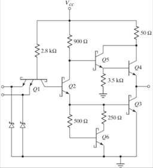

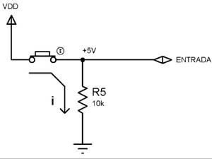
A pesar de sus ventajas, el filtro Chebyshev presenta una respuesta de fase no lineal, lo que lo hace menos adecuado para aplicaciones donde la integridad temporal de la señal es crucial. Sin embargo, es una opción popular en sistemas de comunicaciones, filtrado de ruido y aplicaciones industriales donde la prioridad es la selectividad de las frecuencias.
Tipo I
Este diseño es el más común y se caracteriza por ondulaciones en la banda de paso, lo que permite una caída más pronunciada en la banda de rechazo. El circuito típico utiliza una configuración Sallen-Key modificada, donde las resistencias y capacitancias están ajustadas para definir la ondulación específica y la frecuencia crítica. Es común en sistemas donde la uniformidad de ganancia no es crucial, pero la rapidez en la atenuación fuera de la banda de paso es esencial, como en sistemas de filtrado de ruido en telecomunicaciones.
Tipo II
Conocido como el filtro inverso de Chebyshev, este diseño tiene una banda de paso completamente plana, pero introduce ondulaciones en la banda de rechazo. Este tipo de filtro es más complejo en términos de diseño, ya que requiere una sintonización precisa de los componentes para garantizar un rechazo selectivo en las frecuencias indeseadas. Se emplea en aplicaciones donde es fundamental preservar la fidelidad de la señal en la banda de paso, como en sistemas de procesamiento de señales de alta precisión
OTROS TIPOS DE FILTROS
Filtro Bessel
El filtro Bessel es conocido por su respuesta de fase lineal, lo que significa que todas las frecuencias dentro de la banda de paso experimentan el mismo retardo de tiempo. Esta característica es fundamental en aplicaciones donde la preservación de la forma de onda es crucial, como en sistemas de transmisión de pulsos, procesamiento de señales analógicas y ciertos sistemas de audio. A diferencia de otros filtros, el Bessel prioriza la linealidad de fase sobre la selectividad de frecuencia, lo que resulta en una pendiente de atenuación más suave en la banda de transición.
Prioriza la linealidad de fase, ideal para aplicaciones donde el retardo de grupo constante es crítico.
En términos de diseño, el filtro Bessel se implementa comúnmente en configuraciones analógicas utilizando amplificadores operacionales y redes de resistencias y capacitores. Aunque su pendiente de −20 dB/década/polo es más gradual que la de los filtros Butterworth o Chebyshev, esta suavidad minimiza la distorsión y los sobrepasos en la salida del filtro, lo que es particularmente valioso en aplicaciones de instrumentación y medición.
El principal inconveniente del filtro Bessel es que su respuesta de ganancia es menos eficiente en términos de rechazo de frecuencias no deseadas, lo que lo hace menos adecuado para aplicaciones donde se requiere una separación precisa entre bandas. Sin embargo, su excepcional desempeño en términos de preservación temporal lo convierte en una herramienta indispensable en muchas áreas tecnológicas.
El diseño del filtro Bessel se centra en la preservación de la linealidad de fase, lo que significa que todas las frecuencias en la banda de paso experimentan el mismo retardo. Esto es crítico en sistemas de transmisión de pulsos y procesamiento de señales donde la integridad temporal es primordial. Los circuitos típicos emplean configuraciones en cascada de etapas de primer y segundo orden para lograr una transición suave entre las bandas de paso y rechazo
Filtro Elíptico (Cauer)
Combina características de Butterworth y Chebyshev, logrando un alta pendiente de atenuación con ondulaciones en ambas bandas.
El filtro elíptico, también conocido como filtro de Cauer, es uno de los diseños más avanzados y eficientes en términos de selectividad. Este filtro combina ondulaciones tanto en la banda de paso como en la banda de rechazo para lograr la máxima atenuación posible con el menor número de polos. Gracias a esta característica, el filtro elíptico es altamente efectivo en aplicaciones donde el espacio y los recursos son limitados, como en sistemas de telecomunicaciones y equipos portátiles.
Una de las principales ventajas del filtro elíptico es su capacidad para proporcionar pendientes de atenuación extremadamente rápidas, lo que lo hace ideal para aplicaciones que requieren una discriminación precisa entre frecuencias. Sin embargo, esta rapidez en la transición se logra a costa de una mayor complejidad en el diseño y una respuesta de fase menos lineal, lo que puede introducir distorsiones temporales en ciertos contextos.
El diseño del filtro elíptico se basa en funciones matemáticas avanzadas que permiten ajustar tanto el ripple en la banda de paso como la atenuación en la banda de rechazo. Esta flexibilidad lo convierte en una opción versátil para una amplia variedad de aplicaciones, desde sistemas de radar hasta dispositivos médicos y equipos de prueba y medición.
El circuito típico del filtro elíptico incluye amplificadores operacionales y redes LC sintonizadas. Estos componentes generan polos y ceros dentro de las bandas de paso y rechazo, proporcionando un control preciso sobre el ripple en ambas áreas. Este diseño es común en aplicaciones avanzadas como telecomunicaciones, sistemas de radar y equipos médicos, donde la precisión y la selectividad son esenciales.
2.4 Aplicaciones.
ECUALIZADOR DE ESTÉREO DE 10 BANDAS
Diseño de ecualizadores para controlar las frecuencias reproducidas.
SISTEMA DE RFID
Separación de canales en multiplexado por división de frecuencia.
Eliminación de interferencias en bandas específicas.
INSTRUMENTACIÓN
Filtrado de señales antes de la conversión analógica-digital.
Condicionamiento de señales para sensores en sistemas industriales.
CONTROL
Filtrado de retroalimentación en controladores PID.
Eliminación de transitorios no deseados en sistemas de potencia.
3. Comparadores.
3.1 Comparadores de voltaje: comparador de nivel, comparador con histéresis, comparador de voltaje integrado, comparador de ventana, aplicaciones.
Los comparadores son circuitos que analizan el nivel de una señal de entrada en relación con una referencia establecida. Se usan comúnmente para convertir señales analógicas en digitales, señalando si un nivel de voltaje es mayor o menor al de referencia.
Comparador de Nivel:
- Función: Detecta si una señal de entrada está por encima o por debajo de un nivel de referencia.
- Uso: Aplicaciones en control y detección, como reguladores de voltaje.
Comparador con Histéresis
- Introduce una diferencia (histéresis) entre los niveles de encendido y apagado para evitar fluctuaciones causadas por ruido.
- Ventaja: Proporciona inmunidad al ruido y estabilidad en aplicaciones de control, como termostatos.
Comparador de Ventana
- Detecta si un voltaje está dentro de un rango específico (ventana).
- Aplicación: Sistemas de protección para asegurar que una fuente de alimentación opere dentro de límites seguros.
Comparadores Integrados (Ejemplo: LM311)
- Comparadores diseñados específicamente con características óptimas como baja latencia y alta precisión.
- Ejemplo: Uso en circuitos digitales donde se requiere rápida conmutación.
Aplicaciones:
- Detección de cruce por cero en señales alternas.
- Regulación de voltaje.
- Generación de PWM (modulación por ancho de pulso).
- Sensores de proximidad y control industrial.
3.2 Comparador de frecuencia.
Analiza y compara señales periódicas para identificar si una frecuencia está dentro de un rango establecido.
Aplicación:
o Sincronización en sistemas de comunicación.
o Protección en sistemas eléctricos para monitorear desbalances de frecuencia.
o Regulación de generadores.
Características y Limitantes
- Velocidad de Conmutación:
· Los amplificadores operacionales usados como comparadores tienen tiempos de propagación más altos que los comparadores dedicados.
- Impedancia de Salida:
· La salida puede no ser ideal para circuitos digitales sin un ajuste adicional.
- Sensibilidad al Ruido:
· Sin histéresis, los comparadores son vulnerables a transiciones falsas causadas por ruido.
- Voltajes de Referencia:
· Requieren referencias estables para un desempeño óptimo.
4. Generadores de señales.
4.1 Oscilación: definición, características, principio de autoencendido.
Definición: La oscilación en un circuito electrónico se refiere a la generación de una señal periódica sin entrada externa continua. Se logra mediante realimentación positiva y la ganancia adecuada.
Características:
- Ganancia: El sistema debe tener suficiente ganancia para compensar pérdidas.
- Realimentación positiva: Fundamental para mantener la señal oscilante.
- Frecuencia de oscilación: Depende de los componentes reactivos como capacitores e inductores.
Principio de autoencendido:
- Cuando el circuito comienza con un pequeño ruido interno, la retroalimentación amplifica esta señal hasta estabilizarse como una oscilación periódica.
4.2 Señales elementales: cuadrada, triangular, diente de sierra y otras.
Onda Cuadrada:
- Generada por multivibradores astables.
- Se utiliza en sistemas digitales y como base para modulaciones.
Onda Triangular:
- Resultado de integrar una señal cuadrada.
- Común en aplicaciones de generación de funciones y modulación.
Onda Diente de Sierra:
- Generada al cargar y descargar un capacitor linealmente.
- Utilizada en osciloscopios y convertidores de voltaje a frecuencia.
Otras:
- Senoidal: Para aplicaciones de comunicación y pruebas.
- Impulsos: Para análisis de sistemas transitorios
4.3 Oscilador de relajación.
Definición: Utiliza componentes reactivos como capacitores para generar señales periódicas al cargar y descargar a través de resistencias.
Funcionamiento:
- El capacitor se carga a través de una resistencia hasta un umbral de voltaje definido por un comparador o amplificador operacional.
- Una vez alcanzado el umbral, la señal cambia de estado y comienza la descarga.
Aplicaciones:
- Generación de señales diente de sierra y triangulares.
- Circuitos temporizadores y moduladores
4.4 Aplicaciones.
Electrónica de Consumo:
- Generación de tonos en dispositivos de audio.
- Generadores de patrones de prueba para pantallas.
Instrumentación:
- Generadores de funciones en laboratorios de diseño y pruebas.
- Osciladores para mediciones de precisión.
Comunicaciones:
- Moduladores y demoduladores de frecuencia.
- Sincronización en transmisores y receptores.
Control Industrial:
- Generación de pulsos para controladores de motores y actuadores.
- Monitoreo de sistemas mediante señales de prueba.
5. Mallas de fase encadenada.
5.1 Bloques funcionales de una malla de fase encadenada.
Una malla de fase encadenada (PLL) es un sistema de control de lazo cerrado diseñado para sincronizar la fase y frecuencia de una señal de salida con una señal de entrada de referencia. Sus bloques principales incluyen:
1. Detección de Fase:
- Compara la fase de la señal de entrada con la señal de realimentación.
- Genera un voltaje de error proporcional a la diferencia de fase.
2. Filtro de Bucle:
- Filtra el voltaje de error para suavizarlo y eliminar componentes de alta frecuencia.
- Determina la respuesta dinámica del sistema, incluyendo su estabilidad.
3. Oscilador Controlado por Voltaje (VCO):
- Genera la señal de salida cuya frecuencia está controlada por el voltaje proveniente del filtro de bucle.
- Actúa como el elemento ajustable dentro del sistema.
4. Divisores de Frecuencia (Opcional):
- Se utilizan en aplicaciones donde es necesario reducir o aumentar la frecuencia para sincronizar señales en distintas escalas
5.2 Ejemplos de diseño: sintetizador de frecuencia, control de velocidad en sistemas de C.C., otros.
Sintetizador de Frecuencia:
- Utiliza un PLL para generar múltiples frecuencias a partir de una señal base.
- Común en sistemas de comunicación como radios y transmisores donde se necesitan frecuencias precisas.
- Se logra dividiendo la frecuencia del VCO y comparándola con la señal de referencia.
Control de Velocidad en Sistemas de Corriente Continua (C.C.):
- El PLL se emplea para sincronizar la velocidad de motores eléctricos con una señal de referencia.
- Ayuda a mantener la estabilidad y precisión del control, especialmente en aplicaciones industriales.
Otros Ejemplos:
- Sincronización de relojes en sistemas digitales.
- Modulación y demodulación en comunicaciones.
- Generación de señales con especificaciones precisas para pruebas electrónicas.
Características y Beneficios
- Alta Precisión: Los PLL son extremadamente precisos para generar y sincronizar señales.
- Adaptabilidad: Su diseño permite ajustarse a múltiples aplicaciones mediante la variación de los componentes del filtro de bucle y el rango del VCO.
- Estabilidad Dinámica: Mediante un diseño adecuado del filtro de bucle, se puede mejorar la respuesta del sistema y minimizar errores transitorios
6. Amplificadores de potencia.
6.1 Introducción a los amplificadores de potencia.
Los amplificadores de potencia son dispositivos diseñados para proporcionar altos niveles de corriente o voltaje a cargas como motores, altavoces u otros sistemas que requieren energía significativa.
A diferencia de los amplificadores de pequeña señal, los de potencia están optimizados para operar en niveles altos de eficiencia y manejar cargas bajas sin distorsión significativa.
6.2 Etapas de potencia.
Etapa de Entrada:
- Se encarga de recibir la señal de entrada y adaptarla para ser amplificada.
- Generalmente implementada con transistores de baja potencia para alta precisión.
Etapa de Conducción:
- Amplifica la señal intermedia y prepara la potencia necesaria para la etapa de salida.
- Proporciona la mayoría de la ganancia en términos de voltaje y corriente.
Etapa de Salida:
- Maneja la carga directamente, diseñándose para ofrecer alta eficiencia y capacidad de disipar calor.
- Se utilizan configuraciones como push-pull para reducir distorsión armónica
6.3 Transferencia térmica y disipadores.
Los amplificadores de potencia generan calor debido a la disipación en los transistores de salida.
Consideraciones térmicas:
- Uso de disipadores para mejorar la transferencia térmica y evitar el sobrecalentamiento.
- Aplicación de compuestos térmicos para reducir la resistencia térmica entre los transistores y el disipador.
- Monitoreo térmico integrado en diseños modernos para proteger contra fallos térmicos
6.4 Aplicaciones.
Sistemas de Audio:
- Amplificación de señales para altavoces en sistemas de sonido profesional y doméstico.
Electrónica de Potencia:
- Control de motores y actuadores en aplicaciones industriales y vehículos eléctricos.
Telecomunicaciones:
- Alimentación de antenas y sistemas de transmisión de alta potencia.
Instrumentación:
- Alimentación de cargas en equipos de medición y pruebas de alta corriente
7. Otras funciones.
7.1 Temporizadores.
Definición: Los temporizadores se emplean para generar intervalos precisos de tiempo. El circuito integrado temporizador más común es el 555.
Modos de Operación:
- Astable: Funciona como un oscilador que genera señales periódicas, como ondas cuadradas.
- Monoestable: Genera un único pulso de salida al recibir un disparo de entrada.
Aplicaciones:
- Generación de señales de reloj para circuitos digitales.
- Control de encendido y apagado en sistemas electrónicos.
- Temporizadores programables para tareas específicas
7.2 Amplificador de instrumentación.
Introducción:
· Diseñado para medición precisa y estable en condiciones difíciles, el amplificador de instrumentación emplea múltiples amplificadores operacionales y resistencias calibradas.
· Características como alta ganancia diferencial y excelente rechazo de modo común lo hacen ideal para aplicaciones industriales y médicas.
Estructura:
· Consiste en dos etapas principales:
o Etapa de entrada: Amplificación inicial de señales diferenciales.
o Etapa de ganancia: Configuración con resistencias de precisión para ajustar la ganancia.
Aplicaciones:
· Sensores de deformación, presión y temperatura.
· Adquisición de datos y medición en sistemas industriales.
· Interfaces para señales débiles provenientes de transductores
7.3 Radiofrecuencia.
Usos en Circuitos de RF:
- Los amplificadores operacionales pueden configurarse para trabajar en rangos de frecuencia alta con ajustes adecuados de componentes reactivos.
- Se emplean en aplicaciones como:
- Amplificación de señales de antenas en radios.
- Generadores de oscilaciones para transmisores de RF.
- Sistemas de filtrado y demodulación.
Consideraciones:
- La selección de componentes debe garantizar estabilidad y minimizar las pérdidas por radiación o interferencia.
8. Bibliografía.
COUGHLIN, R. F., DRISCOLL, F.f. - Circuitos integrados lineales y amplificadores operacionales.
INTRODUCCIÓN A LA ECONOMÍA (1413)
Objetivo(s) del curso:
El alumno comprenderá los conceptos y procesos básicos de la economía, en sus aspectos micro y macroeconómicos, y adquirirá elementos de juicio para el conocimiento y análisis del papel del Estado en la instrumentación de políticas económicas. Asimismo, valorará las características del desarrollo económico actual de México y sus perspectivas de evolución, en el contexto de los retos económicos de nuestro tiempo.
1. Conceptos básicos de economía.
1.1 Definición de economía.
ECONOMÍA
la Economía se define como la ciencia social que estudia cómo las sociedades utilizan recursos limitados para satisfacer necesidades humanas que, en comparación, son prácticamente ilimitadas. Esta disciplina busca entender y explicar cómo se toman decisiones sobre la producción, distribución y consumo de bienes y servicios, abordando cuestiones fundamentales como: qué producir, cómo producir y para quién producir.
La economía también se describe como el estudio de la forma en que las personas y las sociedades utilizan recursos escasos con o sin el uso de dinero, para obtener distintos bienes y distribuirlos para su consumo presente o futuro entre los diferentes grupos que conforman la sociedad.
Según autores como Paul Samuelson y William Nordhaus, el enfoque principal radica en resolver el problema de la escasez mediante decisiones racionales que optimicen el uso de los recursos disponibles.
La disciplina está intrínsecamente ligada a problemas como el desempleo, la inflación y la desigualdad en la distribución de la riqueza.
Además, considera el impacto de políticas económicas, como impuestos y subsidios, en el bienestar social. La economía no solo evalúa cómo las decisiones individuales afectan a los mercados y la sociedad, sino también cómo se pueden diseñar sistemas y políticas para mejorar la calidad de vida de las personas
1.2 Concepto de escasez.
ESCASEZ
El concepto de escasez, como elemento fundamental de la economía, se presenta como un fenómeno relativo que refleja la disparidad entre los deseos ilimitados de las personas y la disponibilidad limitada de recursos. Este concepto resalta que, en cualquier sociedad, los bienes y servicios que las personas desean adquirir son siempre mayores que lo que se puede producir con los recursos disponibles, lo que obliga a tomar decisiones sobre cómo asignar los recursos de manera eficiente.
La escasez no solo implica la falta de recursos, sino también su distribución desigual, lo cual afecta la capacidad de las personas y los países para satisfacer sus necesidades y aspiraciones. En el marco económico, los recursos de producción como la tierra, el trabajo, el capital y la tecnología son fundamentales, pero todos ellos existen en cantidades finitas. Esto limita la producción de bienes y servicios necesarios para cubrir las necesidades humanas. Por ejemplo, aunque un país pueda tener una gran cantidad de recursos naturales, si carece de capital o tecnología, enfrentará restricciones para utilizarlos de manera efectiva.
En este contexto, la escasez también depende de las preferencias y demandas de los consumidores. Un bien puede ser considerado escaso no solo por su cantidad limitada, sino también por su utilidad y el deseo de adquirirlo. Un ejemplo claro es la carne en una sociedad vegetariana: aunque exista en abundancia, si nadie la demanda, no será percibida como escasa ni tendrá precio. Por el contrario, los bienes que combinan utilidad y demanda tienden a ser escasos, lo que les otorga valor económico y, en consecuencia, precio.
El fenómeno de la escasez obliga a las sociedades a priorizar y decidir qué producir, cómo producirlo y para quién hacerlo, lo que se conoce como los problemas económicos fundamentales. Estas decisiones son cruciales, ya que implican sacrificios o costos de oportunidad: al elegir utilizar recursos para producir un bien, se renuncia a la producción de otro. Este principio subyace en la toma de decisiones económicas tanto a nivel individual como colectivo y explica la necesidad de sistemas económicos eficientes que maximicen el uso de los recursos disponibles.
En términos más amplios, la escasez también está estrechamente relacionada con fenómenos macroeconómicos como la inflación y el desempleo. Por ejemplo, en periodos de auge económico, la alta demanda de bienes puede superar la capacidad de producción, generando escasez en el mercado y, a su vez, incrementos en los precios. De manera inversa, en periodos de recesión, la menor demanda puede aliviar la presión sobre la escasez, pero también puede llevar a una subutilización de recursos, como el desempleo.
Finalmente, es importante señalar que la escasez no debe ser vista únicamente como una limitación, sino también como un motor para la innovación y el desarrollo. La necesidad de superar las restricciones de recursos ha llevado a avances tecnológicos y a nuevas formas de organización económica. Sin embargo, la gestión de la escasez requiere políticas económicas que promuevan la equidad y la sostenibilidad, garantizando que los recursos se utilicen de manera responsable y que los beneficios se distribuyan de forma justa.
1.3 Tierra, trabajo y capital.
1.4 Método del estudio de la economía.
1.5 Relación entre economía y otras disciplinas.
1.6 Diferencia entre macroeconomía y microeconomía.
1.7 Economía positiva y economía normativa.
1.8 Debate de las teorías económicas.
2. Microeconomía.
2.1 Objeto del estudio de la microeconomía.
2.2 Alternativas de producción.
2.3 Oferta y demanda.
2.4 Elasticidad.
2.5 Teoría de la elección del consumidor.
2.6 Función de producción y costos de producción.
2.7 Competencia perfecta.
2.8 Monopolio y competencia imperfecta.
3. Macroeconomía.
3.1 Concepto y utilidad de la macroeconomía.
3.2 Principales agregados macroeconómicos (Producto Interno Bruto; Matriz de Insumo Producto; medición de la inflación; empleo y desempleo; obtención de cifras reales del PIB).
3.3 Demanda y oferta agregada (el equilibrio macroeconómico).
3.4 Enfoques monetarista y estructuralista sobre el problema de la inflación.
3.5 Ciclo económico.
4. Políticas macroeconómicas.
4.1 Los problemas macroeconómicos fundamentales.
4.2 El Estado y el mercado en la economía.
4.3 Los mecanismos de intervención del Estado en la economía y sus principales objetivos.
4.4 Política fiscal.
4.5 Política monetaria.
4.6 La política económica en un contexto internacional (la balanza de pagos; los tipos de cambios; ajuste en la balanza de pagos).
4.7 Sistema financiero mexicano.
5. Desarrollo económico: retos y perspectivas económicas.
5.1 Definición de desarrollo.
5.2 Comprensión del proceso de globalización.
5.3 Concepto de globalización y concepto de globalización financiera.
5.4 Definición de subdesarrollo.
5.5 Concepto de crecimiento económico.
5.6 Diferencias entre desarrollo económico y crecimiento económico.
5.7 La reforma económica y el Washington Consensus.
5.8 Resultado e impacto de las reformas en los países de la región de Latinoamérica.
5.9 Definición de países BRIC (Brasil, Rusia, India y China).
5.10 Definición de desarrollo humano.
5.11 Los retos del milenio.
5.12 Relación entre género y los Objetivos de Desarrollo del Milenio (ODM).
5.13 Derechos Económicos y Sociales Humanos (DESH).
6. Bibliografía.
SAMUELSON, Paul A., NORDHAUS, William D. - Economía.
DISEÑO DE ELEMENTOS DE MÁQUINAS (1782)
Objetivo(s) del curso:
El alumno será capaz de analizar y diseñar diferentes elementos de máquinas. Podrá distinguir su proceso de diseño o de selección, su forma de operar, los modos en que ocurre su falla y la forma de interacción con otros elementos de una máquina.
1. Criterios de falla.
1.1 Introducción al Diseño de Máquinas.
DISEÑO DE ELEMENTOS DE MÁQUINAS
El Diseño de Elementos de Máquinas es una disciplina fundamental dentro de la ingeniería, dedicada a la creación y mejora de sistemas mecánicos capaces de realizar trabajos útiles a través de la transferencia eficiente de energía y movimiento.
Una máquina se define como un conjunto de componentes interconectados que, mediante la conversión de fuerzas y movimientos, cumple funciones específicas.
En este proceso, el ingeniero debe calcular cuidadosamente las fuerzas involucradas, los movimientos relativos de las partes, y las transformaciones de energía para determinar los materiales, tamaños y formas adecuados para cada pieza.
Elementos como la estática, la dinámica, la mecánica de materiales y las propiedades de los materiales conforman los pilares del análisis y diseño de estos sistemas complejos.
Además, el diseño se lleva a cabo en un marco iterativo, donde las decisiones tomadas inicialmente pueden revisarse y mejorarse a medida que se avanza en el proceso.
ITERACIÓN Y PROCESO DE DISEÑO
El diseño no es un proceso lineal, sino iterativo. Esto implica que, aunque se inicie con una idea general y se avance hacia una solución detallada, es común retroceder para ajustar decisiones previas en función de nueva información.
Por ejemplo, en el diseño de un eje o engranaje, las características del segundo pueden requerir modificaciones significativas en las especificaciones iniciales del primero.
Este ciclo continuo de ajustes y mejoras no es un retroceso, sino una parte esencial para garantizar que la solución final sea funcional y robusta.
En los sistemas dinámicos, la iteración se vuelve aún más importante, ya que las propiedades como masa y geometría iniciales a menudo deben refinarse mediante análisis dinámicos y estáticos detallados. Este enfoque permite diseñar componentes que minimicen fallos y optimicen el rendimiento bajo condiciones reales.
La iteración también es esencial en el manejo de las fuerzas inerciales y dinámicas. En las primeras etapas de diseño, es necesario realizar suposiciones iniciales sobre las propiedades de las piezas, como masa y geometría, para luego refinar esas suposiciones mediante análisis dinámicos y estáticos. Este enfoque permite calcular de manera más precisa las fuerzas que actúan en el sistema y diseñar componentes que minimicen fallos.
Sin embargo, en sistemas donde las aceleraciones cinemáticas son significativas, se requiere un análisis dinámico detallado que considere cómo la masa y otras propiedades de las piezas afectan su desempeño y resistencia
Hay autores que mencionan en sus obras varios pasos de diseño que ellos consideran muy importantes en el proceso, en los cuales consideran puntos que no contemplan los otros autores pero estos mismos tienen otros puntos igual de importantes que los primeros autores. Aquí hay algunos ejemplos:

Richard G. Budynas Diseño en ingeniería mecánica de Shigley

Peter R. N. Childs Mechanical Design

Robert L. Mott Diseño de elementos de máquinas

NORTON, Robert L. Diseño de máquinas Un enfoque integrado
EFICIENCIA Y SEGURIDAD EN EL DISEÑO DE MÁQUINAS
El diseño de máquinas no solo busca funcionalidad, sino también eficiencia y seguridad. Esto implica considerar aspectos como la manufacturabilidad, el costo y el mantenimiento a lo largo de la vida útil del sistema.
La implementación de herramientas computacionales, como software de modelado y simulación, ha revolucionado el diseño al permitir iteraciones más rápidas y precisas.
Sin embargo, sigue siendo fundamental el juicio del ingeniero para interpretar los resultados y realizar ajustes conforme sea necesario.
Este equilibrio entre análisis técnico, creatividad y experiencia práctica es lo que define un diseño exitoso, capaz de cumplir con los requisitos funcionales y económicos sin comprometer la seguridad del sistema.
1.2 Criterios de falla estática.
Las teorías de falla estática buscan predecir la capacidad de los materiales para resistir esfuerzos bajo cargas aplicadas que no varían con el tiempo. Entre los criterios más relevantes se encuentran la teoría del esfuerzo cortante máximo y la teoría de energía de distorsión, ambas particularmente útiles para materiales dúctiles.
La teoría del esfuerzo cortante máximo supone que la falla ocurre cuando el esfuerzo cortante máximo en un material alcanza un valor crítico determinado por la resistencia a la fluencia. Este enfoque tiende a ser conservador, lo que implica diseños más seguros pero también más costosos.
Por otro lado, la teoría de energía de distorsión, desarrollada por Von Mises y Hencky, ofrece predicciones más precisas al relacionar las componentes principales del esfuerzo y su efecto combinado en el material. Esta teoría es especialmente adecuada para materiales dúctiles homogéneos donde las resistencias a la tracción y compresión son similares.
Para materiales frágiles, donde la resistencia a la tensión es significativamente menor que la resistencia a la compresión, la teoría de Coulomb-Mohr modificada resulta más apropiada. Esta teoría toma en cuenta las diferencias entre estas resistencias y se enfoca en predecir fallas bajo esfuerzos de tracción que típicamente dominan en estos materiales.
Un concepto clave en la evaluación de fallas estáticas es el "esfuerzo efectivo". Este representa un esfuerzo equivalente uniaxial que puede compararse directamente con los datos experimentales obtenidos de pruebas de tensión.
Aunque este método simplifica el análisis, los diseñadores deben ser conscientes de sus limitaciones, especialmente en materiales no homogéneos o con grietas preexistentes que podrían requerir análisis adicionales basados en la mecánica de fractura.
1.3 Criterios de falla por fatiga.
Las fallas por fatiga se producen debido a la aplicación de cargas cíclicas o dinámicas, las cuales, incluso a niveles de esfuerzo mucho menores que la resistencia a la fluencia, pueden causar fractura tras un número suficiente de ciclos.
Este fenómeno se divide generalmente en tres etapas: inicio de la grieta, propagación de la grieta y fractura final. La primera etapa puede ser influenciada por defectos o concentradores de esfuerzo preexistentes, mientras que la segunda consume la mayor parte de la vida útil del componente.
Existen tres modelos principales para el análisis de fallas por fatiga: el método esfuerzo-vida (S-N), el método deformación-vida (ε-N) y el enfoque de mecánica de fractura lineal elástica (LEFM).
El método S-N se basa en curvas que relacionan el número de ciclos hasta la falla con el esfuerzo aplicado y es ideal para regímenes de ciclo alto.
En contraste, el método ε-N aborda deformaciones plásticas acumulativas y es más adecuado para ciclos bajos.
Finalmente, el enfoque LEFM se emplea cuando las grietas preexistentes desempeñan un papel significativo en la fractura, permitiendo analizar su crecimiento bajo cargas cíclicas.
El diseño para evitar fallas por fatiga incluye estrategias como reducir concentradores de esfuerzos mediante cambios en la geometría o mejorar la calidad del material para disminuir defectos microscópicos.
Además, es crucial considerar la resistencia a la fatiga corregida (Se), que toma en cuenta factores como el tamaño, la superficie y las condiciones del entorno.
2. Diseño de flechas.
2.1 Diseño de flechas por carga estática.
ANÁLISIS AVANZADO
El diseño estructural de flechas bajo condiciones de carga estática constituye una disciplina compleja dentro del campo de la ingeniería mecánica, que exige una comprensión profunda de la mecánica de sólidos deformables y de los mecanismos de falla asociados.
Este tipo de análisis no solo requiere la aplicación rigurosa de teorías elásticas y criterios de falla, sino también la consideración integral de aspectos geométricos, materiales, de manufactura y de condiciones de frontera.
En particular, el diseñador debe integrar modelos constitutivos que representen adecuadamente el comportamiento mecánico del material seleccionado, incorporando también los efectos de discontinuidades geométricas (como chaveteros, escalones, orificios, etc.) que pueden inducir concentraciones de tensión significativas.
Las flechas, componentes fundamentales en sistemas rotacionales, deben garantizar la transmisión eficaz de par torsional a lo largo de su eje longitudinal, mientras soportan cargas transversales y axiales inducidas por componentes acoplados (como engranes, poleas o volantes).
Además, deben ser capaces de soportar las fluctuaciones dinámicas que surgen por desbalances, variaciones de carga o condiciones de operación transitorias, sin comprometer su integridad estructural.
En este sentido, la forma geométrica circular se justifica por su distribución uniforme de esfuerzos durante la rotación, su facilidad de fabricación mediante procesos como el torneado, y su compatibilidad con elementos estándar de acoplamiento.
El análisis estructural estático se apoya comúnmente en criterios clásicos de falla para materiales dúctiles, tales como el criterio de Von Mises (energía de distorsión) o el de Tresca (esfuerzo cortante máximo), y para materiales frágiles, se recurre a teorías basadas en esfuerzos normales máximos.
Estos modelos permiten estimar la seguridad estructural bajo estados tensionales compuestos, y se implementan dentro de herramientas analíticas y numéricas para la validación de diseño.
Las ecuaciones fundamentales para el cálculo de esfuerzos en flechas circulares macizas sometidas a torsión y flexión son:
.
Cuando existen cambios abruptos de geometría o detalles de maquinado, se deben considerar los factores de concentración de tensión , que se obtienen a partir de datos experimentales, gráficas, o mediante simulaciones por elementos finitos.
2.2 Diseño de flechas por fatiga.
2.3 Velocidades críticas.
2.4 Sujeción y acoplamiento sobre flechas.
2.5 Guía general de diseño de flechas.
3. Diseño de engranes.
3.1 Descripción general: tipos y aspectos geométricos de los engranes.
3.2 Análisis de fuerzas en engranes.
3.3 Diseño de engranes rectos: ecuaciones de esfuerzo y resistencia por flexión.
3.4 Engranes helicoidales: ecuaciones de esfuerzo y resistencia por flexión.
3.5 Engranes cónicos, rectos y helicoidales, transmisiones cruzadas.
3.6 Transmisiones con tornillo sinfín-corona.
3.7 Consideraciones generales y prácticas en el diseño de reductores de velocidad.
4. Diseño de transmisiones con elementos flexibles.
4.1 Transmisiones con bandas y poleas.
4.2 Tipos de bandas, parámetros geométricos y fuerzas involucradas en una transmisión. Uso de los diferentes tipos de banda y selección de elementos comerciales.
4.3 Transmisiones con cadena y catarinas.
4.4 Tipos de cadena, parámetros geométricos y fuerzas involucradas en una transmisión. Uso de los diferentes tipos de cadena y selección de elementos comerciales.
4.5 Transmisión con cables de acero.
5. Cálculo y selección de rodamientos.
5.1 Materiales y acabados.
5.2 Tipos de rodamientos (cojinetes de contacto rodante).
5.3 Cargas estática y dinámica en rodamientos.
5.4 Criterios para la selección de rodamientos comerciales.
5.5 Teoría hidrodinámica y criterios de diseño en cojinetes hidrodinámicos.
5.6 Cálculo de la carga y definición del lubricante.
6. Diseño de resortes y muelles.
6.1 Tipos de resortes, modelado y consideraciones prácticas.
6.2 Resortes helicoidales, a compresión, extensión y torsión.
6.3 Diseño de resortes helicoidales por fatiga.
6.4 Resortes de disco y resortes de fuerza constantes.
6.5 Resortes planos (muelles).
7. Frenos y embragues.
7.1 Cálculo de frenos de tambor.
7.2 Cálculo de frenos y embragues de disco y cónicos.
7.3 Cálculo de frenos de cinta.
8. Bastidores y uniones.
8.1 Bastidores.
8.2 Uniones atornilladas.
8.3 Uniones soldadas.
9. Bibliografía.
AGUIRRE, Guillermo E. - Diseño de elementos de máquinas.
MOTT, Robert L. - Diseño de elementos de máquinas.
NORTON, Robert L. - Diseño de máquinas, Un enfoque integrado.
INGENIERÍA ECONÓMICA (1734)
Objetivo(s) del curso:
El alumno evaluará problemas y situaciones que involucran asignación de recursos económicos, considerando la importancia de los costos, los aspectos financieros y fiscales, los aspectos inflacionarios, el riesgo y la incertidumbre, desde el punto de vista económico.
1. Introducción.
1.1 Significado de la evaluación económica.
FUNDAMENTOS
La necesidad de la Ingeniería Económica se encuentra motivada principalmente por el trabajo que llevan a cabo los ingenieros al analizar, sintetizar y obtener conclusiones en proyectos de cualquier envergadura. En otras palabras, la ingeniería económica es un punto medular en la toma de decisiones. Tales decisiones implican los elementos básicos de flujos de efectivo, tiempo y tasas de interés.
Fundamentalmente la ingeniería económica implica formular, estimar y evaluar los resultados económicos cuando existan alternativas disponibles para llevar a cabo un propósito definido. Otra forma de definir la ingeniería económica consiste en describirla como un conjunto de técnicas matemáticas que simplifican las comparaciones económicas.
EVALUACIÓN ECONÓMICA
La evaluación económica constituye un pilar esencial en el ámbito de la ingeniería financiera, la planificación estratégica y la gestión de inversiones. Se define como un proceso analítico y metodológico que permite determinar la viabilidad y conveniencia de asignar recursos a determinados proyectos o iniciativas, tomando en cuenta múltiples dimensiones, como costos, beneficios, riesgos y externalidades socioeconómicas y ambientales. Su propósito central radica en la optimización de la eficiencia económica, maximizando el rendimiento financiero y promoviendo la sostenibilidad de los proyectos a lo largo del tiempo.
Desde una perspectiva metodológica, la evaluación económica se fundamenta en el empleo de herramientas cuantitativas y cualitativas que permiten estructurar y analizar escenarios alternativos con el fin de seleccionar la opción más beneficiosa.
Dentro de las técnicas predominantes destacan el análisis de costo-beneficio, costo-efectividad y costo-utilidad, cada una con aplicaciones particulares según la naturaleza del proyecto y su contexto operativo. En el ámbito de la ingeniería económica, este proceso resulta indispensable para la comparación de múltiples alternativas de inversión, aplicando criterios de valoración del dinero en el tiempo y considerando restricciones operacionales, regulatorias y estratégicas.
El alcance de la evaluación económica es amplio y abarca sectores como la gestión empresarial, la planificación gubernamental y la formulación de políticas macroeconómicas. En el sector público, por ejemplo, este tipo de evaluación se emplea para justificar inversiones en infraestructura, salud y educación, asegurando que los beneficios sociales superen los costos incurridos.
En el ámbito corporativo, la evaluación económica es clave para la toma de decisiones estratégicas relacionadas con la expansión de operaciones, la adopción de tecnologías emergentes y la optimización de la estructura financiera de las organizaciones.
1.2 Objetivo y alcances, inversiones.
OBJETIVO
El principal objetivo de la evaluación económica es proporcionar un marco analítico que permita cuantificar y valorar los efectos económicos de una inversión, con el propósito de fundamentar la toma de decisiones estratégicas.
A través de este análisis, se busca determinar la viabilidad financiera de los proyectos y su capacidad para generar un retorno de inversión óptimo en función de los riesgos asumidos.
ALCANCES
El alcance de la evaluación económica varía en función de la complejidad del proyecto y de sus características estructurales.
A lo largo del ciclo de vida de una inversión, esta evaluación se desarrolla en diversas fases, desde la concepción y formulación inicial hasta la evaluación ex post, en la cual se analizan los resultados obtenidos frente a las proyecciones establecidas.
EVALUACIÓN ECONÓMICA
Entre los principales componentes de una evaluación económica se incluyen:
· Estimación de costos y beneficios: Se analizan en detalle los desembolsos necesarios y los flujos de ingresos esperados para evaluar la viabilidad financiera del proyecto.
· Indicadores de rentabilidad: Se emplean métricas fundamentales como el Valor Presente Neto (VPN), la Tasa Interna de Retorno (TIR) y el Índice de Rentabilidad (IR) para medir el desempeño financiero de la inversión.
· Gestión del riesgo económico: Se identifican y modelan las incertidumbres asociadas a la inversión, incluyendo fluctuaciones del mercado, cambios en los costos operativos y factores externos como modificaciones regulatorias y avances tecnológicos.
· Impacto social y ambiental: En el contexto de las inversiones sostenibles, se incorporan métricas de responsabilidad social y se evalúan los efectos ambientales, asegurando la alineación con estándares internacionales de desarrollo sustentable.
INVERSIONES
Las inversiones pueden clasificarse en distintas categorías según su naturaleza y objetivos estratégicos:
· Inversiones en capital fijo: Comprenden la adquisición de infraestructura, maquinaria y tecnología de vanguardia con el propósito de mejorar la productividad.
· Inversiones en capital humano: Incluyen programas de capacitación y desarrollo profesional destinados a incrementar la eficiencia del talento humano.
· Inversiones en I+D+i: Se enfocan en el desarrollo tecnológico y la generación de conocimiento, factores determinantes en la competitividad empresarial.
· Inversiones estratégicas: Engloban fusiones, adquisiciones y expansión de mercados, con miras a fortalecer la posición corporativa y diversificar los ingresos.
La aplicación rigurosa de estos criterios contribuye a que las decisiones de inversión se alineen con los objetivos estratégicos de las organizaciones, minimizando riesgos y optimizando los retornos financieros esperados.
1.3 Costos de operación: no recuperables, de oportunidad y de capital.
COSTOS NO RECUPERABLES
Los costos no recuperables, también denominados costos hundidos, representan aquellos gastos que han sido incurridos y que no pueden ser revertidos ni recuperados, independientemente de la decisión que se adopte respecto a la inversión.
Ejemplos de estos costos incluyen estudios de factibilidad, desarrollo de prototipos o inversiones en infraestructura obsoleta.
Desde el punto de vista económico, los costos no recuperables no deben ser considerados en la toma de decisiones futuras, ya que no afectan la rentabilidad marginal del proyecto.
Sin embargo, en la práctica, muchas organizaciones incurren en la falacia del costo hundido, persistiendo en proyectos inviables debido a la inversión previa de recursos.
COSTOS DE OPORTUNIDAD
El costo de oportunidad se define como el valor de la mejor alternativa descartada al tomar una decisión de inversión. Representa el sacrificio económico derivado de no optar por la opción más ventajosa disponible.
Por ejemplo, si una empresa enfrenta la disyuntiva entre expandir su capacidad productiva o invertir en una nueva línea de productos, el costo de oportunidad estará representado por la rentabilidad que se habría obtenido con la opción no seleccionada. Incorporar este tipo de costos en la evaluación económica es esencial para optimizar la asignación de recursos y mejorar la eficiencia en la toma de decisiones estratégicas.
COSTOS DE CAPITAL
El costo de capital hace referencia a la tasa de rendimiento mínima que una empresa espera obtener sobre una inversión con el propósito de cubrir el costo del financiamiento. Este se compone de dos elementos fundamentales: el costo de la deuda y el costo del capital propio.
En el contexto del análisis económico, el costo de capital se emplea como tasa de descuento para evaluar proyectos de inversión, facilitando la determinación del valor presente de los flujos de caja futuros. Una correcta estimación del costo de capital es crucial para garantizar la viabilidad financiera y la competitividad de la empresa en el mercado.
1.4 Proyecciones de los costos.
COSTOS
La proyección de costos constituye una actividad esencial dentro de la planificación financiera y la evaluación de inversiones, ya que permite prever las necesidades de capital y estimar la rentabilidad de un proyecto en el largo plazo. Su precisión depende del método empleado y de la calidad de los datos recopilados.
Métodos de Estimación de Costos
1. Estimación basada en datos históricos: Utilización de registros previos para predecir costos futuros con base en experiencias anteriores.
2. Modelos paramétricos: Aplicación de ecuaciones matemáticas y técnicas econométricas para la proyección de costos en función de variables clave.
3. Método del factor: Uso de coeficientes específicos aplicados a costos conocidos con el fin de realizar estimaciones más precisas.
4. Análisis de sensibilidad: Evaluación del impacto de variaciones en costos clave, lo que permite desarrollar estrategias de mitigación de riesgos.
Factores Determinantes en la Proyección de Costos
1. Inflación: Afecta el poder adquisitivo y el valor real de los costos proyectados.
2. Tasas de interés: Impactan el costo del financiamiento y la valoración de los proyectos de inversión.
3. Condiciones de mercado: Factores como la oferta y demanda pueden modificar significativamente las proyecciones de costos.
4. Innovación tecnológica: La adopción de nuevas tecnologías puede generar eficiencias operativas y alterar la estructura de costos.
Una proyección de costos rigurosa permite reducir la incertidumbre financiera, optimizar la asignación de recursos y garantizar la viabilidad económica del proyecto. La integración de estos elementos fortalece la capacidad organizacional para gestionar riesgos y maximizar el valor económico generado por las inversiones.
2. Valor del dinero en el tiempo.
2.1 Concepto de equivalencia.
2.2 Flujo de efectivo.
2.3 Interés simple y compuesto.
2.4 Factores de interés compuesto.
2.5 Interés nominal, efectivo y continuo.
2.6 Factores de interés continuo.
3. Métodos de evaluación de alternativas.
3.1 Comparación de alternativas por el método del valor presente, de costo capitalizado y del costo anual uniforme equivalente.
3.2 Tasa interna de retorno.
3.3 Análisis de beneficio-costo.
4. Evaluación económica después de impuestos e inflación.
4.1 Tipos de impuestos vigentes en México. Lineamientos generales del impuesto sobre la renta.
4.2 Cálculo de ingreso gravable.
4.3 Flujo de efectivo después de impuestos (analizando el efecto de la depreciación).
4.4 Evaluación económica después de impuestos.
4.5 Causas y efectos de la inflación. Determinación de la tasa de inflación.
4.6 Tasa de interés real.
4.7 Gradientes geométricos.
4.8 Evaluaciones a precios corrientes y a precios constantes.
5. Análisis de sensibilidad y riesgo.
5.1 La sensibilidad como instrumento para mejorar la toma de decisiones.
5.2 El valor presente y anual como función de la tasa de interés considerada.
5.3 Factor de planta.
5.4 Punto de equilibrio.
5.5 Integración de elementos estadísticos y probabilísticos.
5.6 Integración de índices de precios.
6. Bibliografía.
BLANK, Leland, TARQUIN, Anthony - Ingeniería económica.
OCTAVO SEMESTRE
MÁQUINAS ELÉCTRICAS (0549)
Objetivo(s) del curso:
El alumno explicará teórica y prácticamente el comportamiento de las máquinas eléctricas. Al finalizar el curso, el alumno podrá seleccionar, adquirir, instalar, usar y mantener el equipo para una industria.
1. Introducción a los principios de la máquina.
1.1 Leyes básicas del magnetismo: leyes de Ampere, ley de Faraday, ley de Lenz, principios de la conversión de energía.
INTRODUCCIÓN
Las Máquinas Eléctricas son dispositivos fundamentales en la ingeniería eléctrica y electromecánica. Su funcionamiento se basa en la interacción de campos magnéticos y corrientes eléctricas para convertir energía eléctrica en mecánica o viceversa. Estas conversiones de energía están regidas por principios físicos fundamentales que permiten su diseño y operación eficiente en una amplia variedad de aplicaciones industriales y domésticas. El magnetismo y la electricidad están íntimamente relacionados, y su interacción es la base del funcionamiento de generadores, motores y transformadores. Algunas leyes fundamentales rigen estos principios:
LEY DE AMPERE
Formulada por André-Marie Ampère, establece que la corriente eléctrica que circula por un conductor genera un campo magnético a su alrededor. La magnitud y dirección de este campo están determinadas por la siguiente expresión matemática:

donde H es la intensidad del campo magnético producida por la corriente Ineta, y dl es el elemento diferencial a lo largo de la trayectoria de integración. En unidades del SI, I se mide en amperes y H en amperes-vuelta por metro. La dirección del campo magnético generado se determina mediante la regla de la mano derecha: si el pulgar apunta en la dirección de la corriente, los dedos curvados indican la dirección del campo magnético.
LEY DE FARADAY
Michael Faraday descubrió que un campo magnético variable en el tiempo induce una corriente eléctrica en un conductor cercano. Este fenómeno es la base de la generación de electricidad en alternadores y transformadores. Su ecuación fundamental es:
Donde:
· es la fuerza electromotriz inducida,
· es el flujo magnético,
· es el tiempo.
Esta ecuación nos dice que una variación del flujo magnético genera un voltaje inducido en un conductor, lo que permite la conversión de energía mecánica en energía eléctrica en dispositivos como generadores.
LEY DE LENZ
La ley de Lenz establece que la corriente inducida en un circuito cerrado por un campo magnético cambiante siempre se opone a la causa que la produce. Esto asegura la conservación de la energía en los sistemas electromagnéticos. Se expresa como:
El signo negativo en la ecuación de Faraday es precisamente la manifestación matemática de la ley de Lenz, indicando que el sentido de la corriente inducida se opone al cambio del flujo magnético.
PRINCIPIOS DE LA CONVERSIÓN DE ENERGÍA
La conversión de energía eléctrica en energía mecánica (o viceversa) se basa en la interacción de campos magnéticos con conductores de corriente, generando fuerzas electromagnéticas que impulsan el movimiento. Los principios clave de esta conversión incluyen:
Interacción de campo y corriente: Un conductor por el que circula corriente dentro de un campo magnético experimenta una fuerza electromagnética dada por la ley de Lorentz:
Donde es la fuerza, la carga, el campo eléctrico, la velocidad de la carga y el campo magnético.
Trabajo y potencia electromagnética: La energía eléctrica convertida en energía mecánica se expresa como:
Donde es la potencia, el torque y la velocidad angular.
Aplicaciones prácticas: Estos principios son fundamentales en motores eléctricos, generadores, transformadores y otros dispositivos electromagnéticos utilizados en la industria y la vida cotidiana.
1.2 Campo magnético y circuitos magnéticos.
1.3 Circuitos eléctricos, fasores eléctricos y plano complejo.
1.4 Corrientes: real o activa, reactiva y aparente en corriente alterna.
1.5 Triángulo de potencias, factor de potencia.
2. Transformadores.
2.1 Generalidades.
2.2 Teoría del transformador. Elementos que conforman un transformador.
2.3 Principio del funcionamiento u operación.
2.4 Circuito eléctrico equivalente del transformador.
2.5 Aspectos prácticos del circuito eléctrico equivalente; regulación de tensión o voltaje.
2.6 Conexiones de transformadores; polaridad.
2.7 Transformadores trifásicos.
2.8 Transformadores de instrumentos.
2.9 Especificaciones del transformador.
3. Motores de inducción.
3.1 Generalidades y elementos que conforman el motor de inducción. Estator y rotor.
3.2 Principio de operación del motor trifásico. Campo magnético giratorio.
3.3 Efectos del campo magnético giratorio sobre las fases.
3.4 El rotor y su comportamiento eléctrico.
3.5 Circuito eléctrico equivalente; análisis y determinación de sus parámetros.
3.6 Curvas par-velocidad.
3.7 Arrancadores.
3.8 Motores monofásicos de inducción.
3.9 Especificaciones del motor de inducción, tipos de cubiertas.
3.10 Controladores de velocidad de estado sólido.
3.11 Instalación del motor (NORMAS técnicas de la Secretaría de Economía).
4. Máquinas síncronas.
4.1 Generalidades.
4.2 Principio de operación del generador, distinción entre generadores de C.D. y C.A.
4.3 Velocidad síncrona y sus elementos de control.
4.4 Máquinas de polos lisos y polos salientes.
4.5 Principio de operación del motor síncrono.
4.6 Arranque del motor síncrono.
4.7 Control del factor de potencia, operación como condensador síncrono.
4.8 Operación dual.
5. Máquinas de corriente directa.
5.1 Generalidades.
5.2 Generador autoexcitado.
5.3 Regulación de voltaje.
5.4 Principio de operación del motor, fuerza contra-electromotriz.
5.5 Arranque del motor y tipos de arrancadores.
5.6 Análisis del par y comportamiento de la velocidad, curvas par-velocidad.
5.7 Control de velocidad, métodos tradicionales, uso de elementos de estado sólido y dispositivos electrónicos.
5.8 Principio de operación del generador.
5.9 Fuerza electromotriz inducida.
5.10 Armadura, tipos de embobinados, conmutación.
5.11 Reacción de armadura, control del eje neutro.
6. Motores para sistemas de control de movimiento (servomecanismos).
6.1 Definición de un sistema de control de movimiento.
6.2 Clasificación del control de movimiento (circuitos abiertos y circuitos cerrados).
6.3 Selección de motores, tipos principales, ventajas y desventajas básicas.
6.4 Servomotores con campo de imán permanente y con escobillas, diferentes tipos.
6.5 Servomotores con campo de imán permanente y sin escobillas.
6.6 Servomotores de operación lineal.
6.7 Motores a pasos; operación básica, motores de imán permanente, motores de reluctancia y motores híbridos.
7. Motores de uso especial.
7.1 Motores de polos sombreados.
7.2 Motores de reluctancia.
7.3 Motores de histéresis.
7.4 Motores universales.
8. Bibliografía
CHAPMAN STEPHEN J. - Máquinas eléctricas.
INSTRUMENTACIÓN (0510)
Objetivo(s) del curso:
El alumno valorará los elementos constituyentes de un sistema de medición a través del desarrollo de esquemas de acondicionamiento de señales electrónicas para sensores y actuadores de un sistema mecatrónico.
1. Introducción.
1.1 Definición de instrumentación en el contexto de los procesos y productos mecatrónicos: instrumentación, medición, transductor, sensor.
INSTRUMENTACIÓN
La Instrumentación en el contexto de los procesos industriales se refiere al conjunto de dispositivos y sistemas utilizados para medir, registrar, controlar o transmitir variables de un proceso. Estas variables incluyen presión, caudal, nivel, temperatura, entre otras, esenciales para garantizar el control y la automatización. Los elementos de instrumentación forman parte de los lazos de control que supervisan y regulan estas variables. Es un componente clave en la automatización de procesos complejos, mejorando la precisión, la eficiencia y la seguridad operativa. Comprende los instrumentos, sistemas y métodos para medir, monitorizar y controlar variables en un proceso.
MEDICIÓN
Se refiere al proceso de obtener valores cuantitativos o cualitativos de una magnitud física.
La medición es el proceso de determinar el valor cuantitativo de una variable de un sistema o proceso mediante el uso de instrumentos diseñados específicamente. Estos instrumentos proporcionan datos esenciales para evaluar el estado del sistema y realizar ajustes. La calidad de la medición depende de la exactitud, precisión y calibración de los dispositivos utilizados. Además, factores como las condiciones ambientales y la incertidumbre también afectan el resultado.
TRANSDUCTOR
Dispositivo que convierte una forma de energía o señal en otra. Ejemplo: un micrófono.
Los transductores reciben una señal de entrada función de una o más cantidades físicas y la convierten modificada o no a una señal de salida, es decir, convierten la energía de entrada de una forma a energía de salida en otra forma. Son transductores, un relé, un elemento primario, un transmisor, un convertidor PP/I (presión de proceso a intensidad), un convertidor PP/P (presión de proceso a señal neumática), etc.
Un transductor es un dispositivo que convierte una forma de energía en otra para facilitar la medición o el control. Por ejemplo, un transductor de presión puede convertir la presión en una señal eléctrica proporcional que puede ser transmitida o procesada. Los transductores son fundamentales en la instrumentación, ya que permiten la integración entre el medio físico y los sistemas electrónicos. Los tipos comunes incluyen piezoresistivos, capacitivos y ópticos, entre otros.
Dado que hay seis tipos de señales: mecánicas, térmicas, magnéticas, eléctricas, ópticas y moleculares (químicas), cualquier dispositivo que convierta una señal de un tipo en una señal de otro tipo debería considerarse un transductor, y la señal de salida podría ser de cualquier forma física útil.
SENSOR
Tipo de transductor que detecta una variable física o química y genera una señal proporcional.
Un sensor es el elemento primario de un sistema de medición que detecta y responde a una variable física o química, como temperatura, presión, o flujo. Los sensores transforman estas variables en señales que pueden ser interpretadas por otros dispositivos. Algunos sensores trabajan de manera autónoma, mientras que otros se integran con transductores para procesar y transmitir la información. Existen diversas tecnologías de sensores, incluyendo resistivas, inductivas, capacitivas y de semiconductores, dependiendo del tipo de variable a medir.
Los sensores captan el valor de la variable de proceso y envían una señal de salida predeterminada. El sensor puede formar parte de otro instrumento (por ejemplo, un transmisor) o bien puede estar separado. También se denomina detector o elemento primario.
Un sensor es un dispositivo que a partir de la energía del medio donde se mide, da una señal de salida transducible que es función de la variable medida.
El sensor y transductor se emplean a veces como sinónimos, pero el sensor sugiere un significado más extenso: la ampliación de los sentidos para adquirir un conocimiento de cantidades físicas que, por su naturaleza o tamaño, no pueden ser percibidas directamente por los sentidos. Transductor, en cambio, sugiere que la señal de entrada y la de salida no deben ser homogéneas. Para el caso en que lo fueran se propuso el término «modificador», pero no ha encontrado aceptación.
La distinción entre transductor de entrada (señal física/señal eléctrica) y transductor de salida (señal eléctrica/presentación) está prácticamente en desuso. La tendencia actual, particularmente en robótica, es emplear el término sensor (o captador en bibliografía francesa) para designar el transductor de entrada, y el término actuador o accionamiento para designar el transductor de salida. Los primeros pretenden la obtención de información, mientras que los segundos buscan la conversión de energía.
1.2 La instrumentación: simbología, normatividad y sus aplicaciones.
SIMBOLOGÍA
La simbología en instrumentación es una representación gráfica estándar de dispositivos, lazos, funciones y sistemas en procesos industriales. Su objetivo principal es facilitar la comprensión y documentación de los sistemas de control para ingenieros, técnicos y operadores.
Normas y sistemas simbólicos:
ISA-S5.1-84 (R-1992): Define los símbolos de los instrumentos y sus interacciones en diagramas de tuberías e instrumentación (P&ID). Incluye códigos alfanuméricos que indican:
· Variable medida: T (temperatura), P (presión), F (flujo), etc.
· Función: I (indicador), R (registrador), C (controlador), etc.
· Lazo funcional: Número único asignado a cada sistema, como en TIC-101 (Temperatura, Indicador-Controlador, Lazo 101).
Representaciones gráficas comunes:
· Círculos: Indicadores o controladores.
· Cuadrados: Computadoras o PLCs.
· Líneas discontinuas: Comunicación eléctrica.
· Líneas continuas: Líneas neumáticas o hidráulicas.
NORMATIVIDAD
Las normas son esenciales para garantizar la compatibilidad, seguridad y calidad en los sistemas de instrumentación.
Normas destacadas
ISA-S5.2-76 (R-1992)
Estándar para diagramas funcionales binarios, que detalla la interacción entre sistemas eléctricos, electrónicos y mecánicos.
ANSI/ISA-50.00.01
Define interfaces de señales y compatibilidad entre dispositivos industriales.
ISO 9000:2000
Enfocada en la gestión de calidad. Asegura que los instrumentos cumplan requisitos específicos, desde diseño hasta mantenimiento.
ISA S37.3:
Relación de precisión entre patrones de calibración y equipos calibrados (4:1).
Seguridad intrínseca y funcional
Protocolo para áreas peligrosas y control de energía de ignición. Uso de barreras Zener y galvánicas.
APLICACIONES
La Instrumentación Industrial se aplica ampliamente en procesos como la regulación de presión, temperatura, caudal y nivel en sectores como energía, alimentos, químicos y más.
Aplicaciones en procesos industriales:
· Calderas de vapor: Control de combustión y nivel, seguridad de llama.
· Columnas de destilación: Mantenimiento de temperaturas precisas y control de flujo.
· Intercambiadores de calor: Gestión de transferencia de calor para maximizar eficiencia.
· Control avanzado: Ejemplo: sistemas predictivos y adaptativos.
Tendencias modernas:
· Implementación de redes neuronales, lógica difusa y sistemas expertos.
· Automatización distribuida con DCS y control por computadora.
2. Conceptos fundamentales de instrumentación y de los sistemas de medición.
2.1 Antecedentes sobre la representación y manejo de datos experimentales.
REPRESENTACIÓN
La representación y manejo de datos experimentales incluyen procesos que permiten analizar y presentar resultados medidos con herramientas como tablas, gráficas y fórmulas que se interpretan según la precisión y exactitud esperadas en mediciones industriales.
MANEJO DE DATOS EXPERIMENTALES
2.2 Definiciones: rango de medición, alcance, error, precisión, zona muerta, sensibilidad, repetitividad, histéresis y otras.
DEFINICIONES
Rango de medición: También llamado Campo de Medida; Es el espectro o conjunto de valores entre los límites inferior y superior de la capacidad de medición del instrumento.
Otro término derivado es el de dinámica de medida o rangeabilidad (rangeability), que es el cociente entre el valor de medida superior e inferior de un instrumento.
Alcance (span): Diferencia algebraica entre los valores superior e inferior del rango del campo de medida del instrumento.
Error: Diferencia entre el valor medido y el valor teórico o verdadero del campo de medida del instrumento.
El error absoluto es:

El error relativo representa la calidad de la medida y es:
Si el proceso está en condiciones de régimen permanente existe el llamado error estático. En condiciones dinámicas el error varía considerablemente debido a que los instrumentos tienen características comunes a los sistemas físicos: absorben energía del proceso y esta transferencia requiere cierto tiempo para ser transmitida, lo cual da lugar a retardos en la lectura del aparato. Siempre que las condiciones sean dinámicas, existirá en mayor o menor grado el llamado error dinámico (diferencia entre el valor instantáneo y el indicado por el instrumento): su valor depende del tipo de fluido del proceso, de su velocidad, del elemento primario (termopar, bulbo y capilar), de los medios de protección (vaina), etc. El error medio del instrumento es la media aritmética de los errores en cada punto de la medida determinados para todos los valores crecientes y decrecientes de la variable medida.
Cuando una medición se realiza con la participación de varios instrumentos, colocados unos a continuación de otros, el valor final de la medición estará constituido por los errores inherentes a cada uno de los instrumentos. Si el límite del error relativo de cada instrumento es ± a, ± b, ± c, ± d, etc., el máximo error posible en la medición será la suma de los valores anteriores, es decir:

Cómo es improbable que todos los instrumentos tengan al mismo tiempo su error máximo en todas las circunstancias de la medida, suele tomarse como error total de una medición la raíz cuadrada de la suma algebraica de los cuadrados de los errores máximos de los instrumentos, es decir, la expresión:

Precisión: La precisión (precision) es la cualidad de un instrumento por la que tiende a dar lecturas muy próximas unas a otras, es decir, es el grado de dispersión de estas. Un instrumento puede tener una pobre exactitud, pero una gran precisión.
Por lo tanto, los instrumentos de medida estarán diseñados por los fabricantes para que sean precisos, y como periódicamente se descalibran, deben reajustarse para que sean exactos. A señalar que el término precisión es sinónimo de repetibilidad.
Zona muerta: Es el campo de valores de la variable que no hace variar la indicación o la señal de salida del instrumento, es decir, que no produce su respuesta. Viene dada en tanto por ciento del alcance de la medida.
Sensibilidad: Es la razón entre el incremento de la señal de salida o de la lectura y el incremento de la variable que lo ocasiona, después de haberse alcanzado el estado de reposo. Por ejemplo, si en un transmisor electrónico de 0-10 bar, la presión pasa de 5 a 5,5 bar y la señal de salida de 11,9 a 12,3 mA c.c., la sensibilidad es el cociente:
Hay que señalar que no debe confundirse la sensibilidad con el término de zona muerta; son definiciones básicamente distintas que antes era fácil confundir cuando la definición inicial de la sensibilidad era “valor mínimo en que se ha de modificar la variable para apreciar un cambio medible en el índice o en la pluma de registro de los instrumentos”.
Repetitividad: Es la capacidad de reproducción de las posiciones de la pluma o del índice o de la señal de salida del instrumento, al medir repetidamente valores idénticos de la variable en las mismas condiciones de servicio y en el mismo sen� do de variación, recorriendo todo el campo. La repetibilidad es sinónimo de precisión. A mayor repetibilidad, es decir, a un menor valor numérico, los valores de la indicación o señal de salida estarán más concentrados, es decir, habrá menos dispersión y una mayor precisión.
La repetibilidad se expresa en tanto por ciento del alcance; un valor representativo es el de ± 0,1%. Nótese que el término repetibilidad no incluye la histéresis. Para determinarla, el fabricante comprueba la diferencia entre el valor verdadero de la variable y la indicación o señal de salida del instrumento recorriendo todo el campo, y partiendo, para cada determinación, desde el valor mínimo del campo de medida.
La repetibilidad viene dada por la fórmula:

Histéresis: (hysteresis) es la diferencia máxima que se observa en los valores indicados por el índice o la pluma del instrumento o la señal de salida para el mismo valor cualquiera del campo de medida, cuando la variable recorre toda la escala en los dos sentidos, ascendente y descendente.
Se expresa en tanto por ciento del alcance de la medida. Por ejemplo: si en un termómetro de 0-100%, para el valor de la variable de 40 °C, la aguja marca 39,9 °C al subir la temperatura desde 0 °C, e indica 40,1 °C al bajar la temperatura desde 100 °C, el valor de la histéresis es de:

Fiabilidad: Probabilidad de que un instrumento se mantenga dentro de límites de error específicos a lo largo del tiempo y bajo condiciones determinadas.
OTROS TÉRMINOS
Campo de medida con elevación de cero: El valor cero de la variable medida es mayor que el valor inferior del campo de medida. Ejemplo: De -10°C a 30°C.
Campo de medida con supresión de cero: El valor cero de la variable medida es menor que el valor inferior del campo de medida. Ejemplo: De 20°C a 60°C.
Elevación de cero: Es la cantidad en que el valor cero supera el valor inferior del campo de medida. Se expresa en unidades de la variable o en porcentaje del alcance. Ejemplo: 10°C en un campo de -10°C a 30°C, es decir, (10/40) x 100 = 25%.
Supresión de cero: Es la cantidad en que el valor inferior del campo supera el valor cero. Se expresa en unidades de la variable o en porcentaje del alcance. Ejemplo: 20°C en un campo de 20°C a 60°C, es decir, (20/40) x 100 = 50%.
Deriva: Variación en la señal de salida con el tiempo, manteniendo constantes la variable medida y las condiciones ambientales. Se considera la deriva de cero (variación para el valor cero de la medida) y la deriva térmica de cero (debida a cambios de temperatura). La deriva se expresa como porcentaje de la señal de salida total a la temperatura ambiente, por unidad o intervalo de variación de temperatura. Ejemplo: Deriva térmica de cero de 0.2% del alcance durante 1 mes.
Resolución: Menor diferencia de valor que el instrumento puede distinguir. En instrumentos analógicos: Depende del operador y de la escala. En instrumentos digitales: Es el cambio de valor que modifica el dígito menos significativo. Ejemplo: Un indicador digital de temperatura que muestra 531.01°C, el dígito menos significativo es el último 1. Luego, si la temperatura aumenta a 531,02 °C, la resolución es de ((531,02 - 531,01) / 100) = 0,00001%, lo cual no significa en absoluto que esta sea la exactitud del instrumento.
Resolución infinita: Capacidad de proporcionar una señal de salida progresiva y continua en todo el campo de trabajo del instrumento.
Trazabilidad: Propiedad del resultado de las mediciones efectuadas con un instrumento o con un patrón, tal que puede relacionarse con patrones nacionales o internacionales, mediante una cadena ininterrumpida de comparaciones y con todas las incertidumbres determinadas.
Ruido: Cualquier perturbación eléctrica o señal accidental no deseada que modifica la transmisión, indicación o registro de los datos deseados. Un caso especial es la interferencia de radiotransmisores (Radio Frequency Interference). Puede expresarse en unidades de la señal de salida o en tanto por ciento del alcance.
Linealidad: La aproximación de una curva de calibración a una línea recta especificada.
Linealidad basada en puntos: Falta de linealidad expresada en forma de desviación máxima con relación a una línea recta que pasa a través de los puntos dados correspondientes al cero y al 100% de la variable medida.
Temperatura de servicio: Campo de temperaturas en el cual se espera que trabaje el instrumento dentro de unos límites de error especificados.
Vida útil de servicio: Tiempo mínimo especificado durante el cual se aplican las características de servicio continuo e intermitente del instrumento sin que se presenten cambios en su comportamiento, más allá de tolerancias especificadas.
Reproductibilidad: Capacidad de reproducción de un instrumento de las medidas repetitivas de la lectura o señal de salida para el mismo valor de la variable medida alcanzado en ambos sentidos, en las mismas condiciones de servicio y a lo largo de un período de tiempo determinado. Por ejemplo, un valor representativo sería ± 0.2% del alcance de la lectura o señal de salida a lo largo de un período de 30 días.
Respuesta frecuencial: Variación con la frecuencia de la relación de amplitudes señal de salida/variable medida (y de la diferencia de fases entre la salida y la variable medida) para una medida de variación senoidal aplicada a un instrumento dentro de un campo establecido de frecuencias de la variable medida. Se especifica usualmente como "dentro de ±...% de ... a ... Hz".
2.3 Clases de instrumentos: en función del instrumento, en función de la variable de proceso.
CLASES DE INSTRUMENTOS
Los instrumentos de medición y de control son relativamente complejos y su función puede comprenderse bien si están incluidos dentro de una clasificación adecuada. Como es lógico, pueden existir varias formas para clasificar los instrumentos, cada una de ellas con sus propias ventajas y limitaciones.
Se considerarán dos clasificaciones básicas: la primera relacionada con la función del instrumento y la segunda con la variable del proceso.
EN FUNCIÓN DEL INSTRUMENTO
Instrumentos ciegos: Son aquellos que no tienen indicación visible de la variable. Hay que hacer notar que son ciegos los instrumentos de alarma, tales como presostatos y termostatos (interruptores de presión y temperatura respectivamente) que poseen una escala exterior con un índice de selección de la variable, ya que sólo ajustan el punto de disparo del interruptor o conmutador al cruzar la variable el valor seleccionado. Son también instrumentos ciegos los transmisores de caudal, presión, nivel y temperatura sin indicación.
Instrumentos indicadores: Disponen de un índice y de una escala graduada en la que puede leerse el valor de la variable. Según la amplitud de la escala se dividen en indicadores concéntricos y excéntricos. Existen también indicadores digitales que muestran la variable en forma numérica con dígitos.
Instrumentos registradores: Registran con trazo continuo o a puntos la variable, y pueden ser circulares o de gráfico rectangular o alargado según sea la forma del gráfico. Los registradores de gráfico circular suelen tener el gráfico de 1 revolución en 24 horas mientras que en los de gráfico rectangular la velocidad normal del gráfico es de unos 20 mm/hora.
A señalar que los registradores sin papel (paperless recorders) tienen un coste de operación reducido, una mejor exactitud y pueden incorporar funciones de captura de datos, lo que los hace ideales para procesos discontinuos (batch process). Se pueden conectar a una red LAN, lo que permite un fácil acceso de los datos a los varios departamentos de la empresa.
Los sensores captan el valor de la variable de proceso y envían una señal de salida predeterminada. El sensor puede formar parte de otro instrumento (por ejemplo, un transmisor) o bien puede estar separado. También se denomina detector o elemento primario por estar en contacto con la variable, con lo que utiliza o absorbe energía del medio controlado para dar, al sistema de medición, una indicación en respuesta a la variación de la variable. El efecto producido por el elemento primario puede ser un cambio de presión, fuerza, posición, medida eléctrica, etc.
Los transmisores captan la variable de proceso a través del elemento primario y la transmiten a distancia en forma de señal neumática de margen 3 a 15 psi (libras por pulgada cuadrada) o electrónica de 4 a 20 mA de corriente continua o digital. La señal neumática de 3 a 15 psi equivale a 0,206-1,033 bar por lo cual, también se emplea la señal en unidades métricas 0,2 a 1 bar.
Asimismo, se emplean señales electrónicas de 1 a 5 mA c.c., de 10 a 50 mA c.c. y de 0 a 20 mA c.c., si bien la señal normalizada es de 4-20 mA c.c.
La señal digital es la más ampliamente utilizada y es apta directamente para las comunicaciones, ya que u� liza protocolos estándar.

Los transductores reciben una señal de entrada función de una o más cantidades físicas y la convierten modificada o no a una señal de salida, es decir, convierten la energía de entrada de una forma a energía de salida en otra forma. Son transductores, un relé, un elemento primario, un transmisor, un convertidor PP/I (presión de proceso a intensidad), un convertidor PP/P (presión de proceso a señal neumática), etc.
Los convertidores son aparatos que reciben una señal de entrada neumática (3-15 psi) o electrónica (4-20 mA c.c.) procedente de un instrumento y después de modificarla (convertirla) envían la resultante en forma de señal de salida estándar. Ejemplo: un convertidor P/I (señal de entrada neumática a señal de salida electrónica, un convertidor I/P (señal de entrada eléctrica a señal de salida neumática).
Conviene señalar que a veces se confunde convertidor con transductor. Este último término es general y no debe aplicarse a un aparato que convierta una señal de instrumentos.
El elemento final de control recibe la señal del controlador y modifica su posición variando el caudal de fluido.

Los receptores reciben las señales procedentes de los transmisores y las indican o registran. Los receptores controladores envían otra señal de salida normalizada a los valores ya indicados 3-15 psi en señal neumática o 4-20 mA c.c. en señal electrónica, que actúan sobre el elemento final de control.
Los controladores comparan la variable controlada (presión, nivel, temperatura) con un valor deseado y ejercen una acción correctiva de acuerdo con la desviación. La variable controlada la pueden recibir directamente como controladores locales o bien indirectamente en forma de señal neumática, electrónica o digital procedente de un transmisor.
En el control eléctrico el elemento suele ser una válvula motorizada que efectúa su carrera completa accionada por un servomotor eléctrico.
En el control electrónico y, en particular, en regulación de temperatura de hornos eléctricos pueden utilizarse rectificadores de silicio (tristores). Estos se comportan esencialmente como bobinas de impedancia variable y varían la corriente de alimentación de las resistencias del horno, en la misma forma en que una válvula de control cambia el caudal de fluido en una tubería.
Las señales neumáticas (3-15 psi o 0,2-1 bar) y electrónica (4-20 mA c.c.) permiten el intercambio entre instrumentos de la planta. En los instrumentos de señal de salida digital (transmisores, controladores) las señales son propias de cada suministrador, si bien estas señales están normalizadas por parte de las firmas de instrumentos de control (Bailey, Foxboro, Honeywell, Rosemount y otros) que aplican un lenguaje o protocolo de comunicaciones (HART, Profibus, y FOUNDATION(TM) fieldbus).
El comité ISA 103 con la norma de interfase entre instrumentos de campo y los sistemas de control IEC-65C/398/NP, se integra en lo que se llama FDT (Field Device Tool) como sistema universal de automatización de las plantas.
Otras normalizaciones se realizan en procesos discontinuos. La norma NAMUR fue creada por empresas químicas y farmacéuticas tales como AK20, BASF, BAYER, CIBA-GEIGY, etc., que definen la misma programación para fábricas distintas con el fin de obtener productos con la misma calidad.
EN FUNCIÓN DE LA VARIABLE DE PROCESO
Expresados en función de la variable del proceso, los instrumentos se dividen en instrumentos de caudal, nivel, presión, temperatura, densidad y peso específico, humedad y punto de rocío, viscosidad, posición, velocidad, pH, conductividad, frecuencia, fuerza, turbidez, etc.
Esta clasificación corresponde específicamente al tipo de las señales medidas siendo independiente del sistema empleado en la conversión de la señal de proceso. De este modo, un transmisor electrónico o digital de temperatura del tipo de bulbo y capilar es un instrumento de temperatura a pesar de que la medida se efectúa convirtiendo las variaciones de presión del fluido que llena el bulbo y el capilar; el aparato receptor de la señal electrónica o digital del transmisor anterior es un instrumento de presión, caudal, nivel, o cualquier otra variable, según fuera la señal medida por el transmisor correspondiente; un registrador potenciométrico puede ser un instrumento de temperatura, de conductividad o de velocidad, según sean las señales medidas por los elementos primarios de termopar, electrodos o dínamo.
Asimismo, esta clasificación es independiente del número y tipo de transductores existentes entre el elemento primario y el instrumento final. Así ocurre en el caso de un lazo de control de nivel compuesto por un transmisor digital de nivel, un receptor controlador con salida de 4-20 mA c.c., un convertidor intensidad-presión (I/P) que transforma la señal de 4-20 mA c.c. a neumática de 3-15 psi y la válvula neumática de control; todos estos instrumentos se consideran de nivel.
En la designación del instrumento se utilizan, en el lenguaje común, las dos clasificaciones expuestas anteriormente. Y de este modo, se consideran instrumentos tales como transmisores ciegos de presión, controladores registradores de temperatura, receptores indicadores de nivel, receptores controladores registradores de caudal, etc.
Los instrumentos se consideran instrumentos de campo y de panel. La primera designación incluye los instrumentos locales situados en el proceso o en sus proximidades (es decir, en tanques, tuberías, secadores, etc.), mientras que la segunda se refiere a los instrumentos montados en paneles, armarios o pupitres situados en zonas aisladas o en zonas del proceso.
2.4 Interfaces humano-máquina.
INTERFACES HUMANO MÁQUINA (HMI)
Las interfaces evolucionan para optimizar la interacción entre el operador y los instrumentos, incorporando gráficos intuitivos, alarmas inteligentes y sistemas de simulación para capacitación operativa.
3. Transductores.
3.1 Concepto de transductor y sensor.
TRANSDUCTOR
Dispositivo que convierte una señal de entrada basada en una cantidad física (como presión, temperatura, etc.) en una señal de salida, que puede ser eléctrica, neumática o mecánica. Ejemplos incluyen elementos primarios, transmisores y convertidores.
Sensor
Tipo de transductor que detecta directamente una variable física o química y genera una respuesta proporcional a dicha variable, como una señal eléctrica o mecánica.
3.2 Transductores de variables mecánicas a variables eléctricas.
Estos dispositivos convierten señales mecánicas como presión o desplazamiento en señales eléctricas. Ejemplos incluyen:
· Transductores resistivos: Varían su resistencia según el desplazamiento o presión aplicados.
· Transductores de inductancia variable (LVDT): Utilizan un transformador diferencial lineal para medir desplazamientos.
· Transductores capacitivos: Basados en cambios en la capacitancia al mover las placas por presión
3.3 Transductores de variables eléctricas.
Incluyen dispositivos como amplificadores y acondicionadores que adaptan señales eléctricas para su procesamiento en sistemas de control y medición.
3.4 Transductores de variables hidráulicas a variables eléctricas.
Utilizan principios como la variación de presión hidráulica para generar señales eléctricas proporcionales.
3.5 Transductores de variables térmicas a variables eléctricas.
Ejemplos incluyen termopares y termistores, que generan señales eléctricas en respuesta a cambios de temperatura.
3.6 Transductores de variables químicas a variables eléctricas (pH, conductividad, concentración de oxígeno, etc).
Diseñados para medir parámetros químicos como pH, conductividad y concentración de oxígeno. Estos transductores convierten las propiedades químicas en señales eléctricas utilizables.
4. Acondicionamiento de entradas y salidas.
4.1 Acondicionamiento electrónico de señales: acondicionamiento de amplitud y de frecuencia (filtrado) y compensación de señales.
· Acondicionamiento de amplitud: Ajuste de niveles de señal para compatibilidad entre sensores y sistemas de control.
· Acondicionamiento de frecuencia (filtrado): Eliminación de ruido o componentes no deseados mediante filtros paso bajo, paso alto o paso banda.
· Compensación de señales: Corrección de errores o desviaciones en señales provocadas por factores externos.
4.2 Etapas de potencia: salidas ON/FF y analógicas (transistorizadas, integradas) y cálculo de disipadores.
· Salidas ON/OFF: Controlan actuadores como relés o válvulas basándose en un estado de encendido o apagado.
· Salidas analógicas: Utilizan transistores o circuitos integrados para generar señales proporcionales a una entrada de control.
· Cálculo de disipadores: Determinación del tamaño adecuado para manejar el calor generado por los componentes electrónicos en las etapas de potencia.
4.3 Actuadores.
Dispositivos que convierten señales eléctricas en acciones mecánicas. Ejemplos incluyen:
· Actuadores neumáticos: Usados en sistemas industriales.
· Actuadores eléctricos: Utilizados en aplicaciones precisas como robótica.
· Actuadores hidráulicos: Para sistemas que requieren alta potencia y precisión.
4.4 El amplificador de instrumentación para acondicionamiento de señales pequeñas.
· Manejar señales pequeñas provenientes de sensores.
· Proporcionar una alta ganancia con baja distorsión.
· Ejemplo típico: Circuitos con amplificadores operacionales configurados para medición precisa en condiciones industriales.
5. Caracterización de sensores comerciales.
5.1 Clasificación y funcionamiento de los sensores: por su salida y por las variables a medir.
Los sensores pueden clasificarse según:
Por su salida:
· Analógica: salida continua proporcional a la variable medida.
· Digital: salida discreta, como pulsos o señales binarias.
Por las variables a medir: presión, temperatura, caudal, nivel, posición, etc., dependiendo del principio físico o químico empleado en la medición.
5.2 Parámetros de selección: variable a medir, rango de medida, rango de salida, precisión de la medida, condiciones físicas del medio y las características dinámicas de operación.
Los criterios para seleccionar un sensor adecuado incluyen:
1. Variable a medir: Identificación precisa de la magnitud física o química de interés.
2. Rango de medida: Valores mínimo y máximo que el sensor puede detectar con exactitud.
3. Rango de salida: Compatibilidad con los sistemas de adquisición de datos o controladores.
4. Precisión: Grado de exactitud requerido en la medición.
5. Condiciones físicas del medio: Consideraciones como temperatura, humedad, vibraciones o corrosión.
6. Características dinámicas: Respuesta temporal y frecuencia máxima del sensor ante cambios en la variable medida.
5.3 Áreas de aplicación.
· Industrial: Sensores para monitorear y controlar procesos como producción, calidad y seguridad.
· Médica: Sensores para medir signos vitales como presión arterial o niveles de oxígeno.
· Automotriz: Sensores en vehículos para sistemas de frenado, control de emisiones y más.
6. Bibliografía.
CREUS, A. - Instrumentación industrial.
CONTROL AUTOMÁTICO (0551)
Objetivo(s) del curso:
El alumno distinguirá los elementos constituyentes de un sistema de control y aplicará algunas teorías de control de variables físicas.
1. Introducción.
1.1 Breve historia del control y sus aplicaciones en la industria.
TEORÍA DEL CONTROL
El primer trabajo significativo en Control Automático es el Regulador de velocidad centrífuga de James Watt, fue diseñado para regular la velocidad de una máquina de vapor en el siglo XVIII.

El principio del funcionamiento del regulador de velocidad de Watt para una máquina se basa en la cantidad de combustible que se admite en la máquina se ajusta de acuerdo con la diferencia entre la velocidad de la máquina que se pretende y la velocidad real.
La secuencia de acciones puede describirse del modo siguiente: el regulador de velocidad se ajusta de modo que, a la velocidad deseada, no fluya aceite a presión en ningún lado del cilindro de potencia. Si la velocidad real cae por debajo del valor deseado debido a una perturbación, la disminución de la fuerza centrífuga del regulador de velocidad provoca que la válvula de control se mueva hacia abajo, aportando más combustible, y la velocidad del motor aumenta hasta alcanzar el valor deseado. Por otra parte, si la velocidad del motor aumenta por encima del valor deseado, el incremento en la fuerza centrífuga del regulador provoca que la válvula de control se mueva hacia arriba. Esto disminuye el suministro de combustible, y la velocidad del motor se reduce hasta alcanzar el valor deseado.
En este sistema de control de velocidad, la planta (el sistema controlado) es la máquina y la variable controlada es la velocidad de esta. La diferencia entre la velocidad deseada y la velocidad real es la señal de error.
La señal de control (la cantidad de combustible) que se va a aplicar a la planta (la máquina) es la señal de actuación. La entrada externa que se aplica para. alterar la variable controlada es la perturbación. Un cambio inesperado en la carga es una perturbación.
Aportes Tempranos en la Teoría del Control
Minorsky (1922) y la Estabilidad en Controladores Automáticos
En 1922, el ingeniero ruso Nicolai Minorsky trabajó en sistemas de control automático aplicados a la navegación de embarcaciones. Su investigación demostró que la estabilidad de un sistema podía determinarse a partir de las ecuaciones diferenciales que describen su comportamiento dinámico. Este enfoque fue un gran avance, ya que permitió analizar matemáticamente la estabilidad de sistemas de control sin necesidad de realizar pruebas empíricas extensas.
Minorsky también exploró el uso de controladores con retroalimentación proporcional, integral y derivativa, sentando las bases de los controladores PID que hoy en día se utilizan en una amplia variedad de aplicaciones industriales. Su trabajo demostró que una combinación adecuada de estas acciones de control podía mejorar significativamente la estabilidad y la respuesta del sistema.
Nyquist (1932) y la Evaluación de la Estabilidad en Sistemas de Lazo Cerrado
Harry Nyquist, en 1932, propuso un procedimiento basado en la respuesta en lazo abierto para determinar la estabilidad de un sistema de control en lazo cerrado. Su criterio de estabilidad, conocido como el criterio de Nyquist, es una herramienta fundamental en el análisis de sistemas de control, especialmente en el diseño de sistemas con realimentación.
El criterio de Nyquist permitió a los ingenieros evaluar la estabilidad de un sistema sin necesidad de resolver explícitamente las ecuaciones diferenciales del sistema en lazo cerrado. Esta metodología se convirtió en una de las técnicas más utilizadas para el análisis de estabilidad en sistemas de control automático.
Hazen (1934) y la Introducción del Concepto de Servomecanismos
En 1934, John Hazen acuñó el término "servomecanismos" para referirse a los sistemas de control de posición. Su trabajo se centró en el desarrollo y análisis de estos sistemas, que se utilizan en aplicaciones donde se requiere un control preciso de la posición, como en la robótica, los sistemas de radar y la automatización industrial.
Los servomecanismos fueron esenciales en el desarrollo de sistemas de guía y control de aeronaves y misiles durante la Segunda Guerra Mundial. Posteriormente, estos sistemas se aplicaron en la industria automotriz y en la fabricación de equipos de precisión.
Avances Posteriores en la Teoría del Control
Década de 1940: Métodos de Respuesta en Frecuencia y Diagramas de Bode
En la década de 1940, el ingeniero Hendrik Bode desarrolló los diagramas que llevan su nombre, utilizados para analizar la respuesta en frecuencia de los sistemas de control. Los diagramas de Bode permiten evaluar la estabilidad y el desempeño de un sistema de control en términos de sus márgenes de ganancia y fase.
Estos métodos facilitaron el diseño de sistemas de control robustos y permitieron la optimización de la respuesta transitoria sin comprometer la estabilidad del sistema.
Década de 1950: Desarrollo del Método del Lugar de las Raíces (Evans)
En los años 50, W. R. Evans introdujo el método del lugar de las raíces, una técnica gráfica para el análisis y diseño de sistemas de control en lazo cerrado. Este método permitió a los ingenieros visualizar cómo varían los polos del sistema a medida que se modifican los parámetros del controlador, facilitando así el ajuste de controladores PID y otros sistemas de control.
Desde 1960: Control Moderno y Análisis en el Dominio Temporal
Con la llegada de las computadoras digitales en la década de 1960, la teoría del control experimentó un cambio significativo. En lugar de centrarse únicamente en el análisis en el dominio de la frecuencia, se comenzaron a desarrollar métodos basados en el dominio del tiempo, utilizando el enfoque de espacio de estados y variables de estado.
La teoría del control moderno permitió el diseño de sistemas más complejos con múltiples entradas y salidas, lo que resultó crucial para el desarrollo de la automatización industrial, la robótica y los sistemas aeroespaciales.
Desde la Década de 1980: Control Robusto y Adaptativo
En los años 80 y 90, el enfoque del control se desplazó hacia el desarrollo de sistemas robustos y adaptativos, capaces de operar en entornos inciertos y con variaciones en las condiciones del sistema. El control robusto, basado en el análisis de estabilidad ante perturbaciones externas, se convirtió en una herramienta clave en la industria aeroespacial y en sistemas de manufactura avanzada.
El control adaptativo, por otro lado, permitió el ajuste automático de los parámetros del sistema en función de cambios en el entorno o en la dinámica del sistema, lo que llevó a aplicaciones en robótica avanzada, vehículos autónomos y control de procesos industriales.
1.2 Definiciones: control y automatización, planta, variable a controlar, variable de control y perturbación.
DEFINICIONES
Control: Es el proceso de medir y ajustar una variable para mantenerla cerca de un valor deseado. Es una acción que implica obtener el valor de la variable a controlar del sistema y aplicar la variable de control requerida para corregir o limitar una desviación del valor medido con respecto a un valor deseado.
Automatización: La automatización es la tecnología que se encarga de aplicar en un sistema industrial la mecánica, electrónica y los sistemas de computación. Este tipo de tecnologías incluye:
· Máquina-herramientas automáticas para procesar partes metálicas.
· Robots industriales.
· Sistemas de inspección automáticos para el control de la calidad.
· Maquinaria para procesos industriales.
Planta: Es cualquier parte de un equipo o el conjunto de algunas partes de una máquina que funcionan juntas, con el propósito de ejecutar una operación particular. Aquí consideramos una planta como el objeto o máquina que queremos controlar.
Variable a controlar: También llamada Variable controlada; Es la cantidad física o condición medida que se desea controlar y/o regular (por ejemplo, temperatura, velocidad). Es la cantidad.
Variable de control: También llamada señal de control o variable manipulada; Es la cantidad física manipulada y/o ajustada por el controlador a través de una señal para influir en la variable a controlar (como el suministro de combustible en un motor).
Perturbación: Una perturbación es una señal que tiende a afectar negativamente el valor de la salida de un sistema. Si la perturbación se genera dentro del sistema se denomina interna, mientras que una perturbación externa se genera fuera del sistema y es una entrada.
Otras Definiciones
Procesos: El Diccionario Merriam-Webster define un proceso como una operación o un desarrollo natural progresivamente continuo, marcado por una serie de cambios graduales que se suceden unos a otros de una forma relativamente fija y que conducen a un resultado o propósito determinados; o una operación artificial o voluntaria que se hace de forma progresiva y que consta de una serie de acciones o movimientos controlados, sistemáticamente dirigidos hacia un resultado o propósito determinado. En este libro se llamará proceso a cualquier operación que se va a controlar.
Sistemas: Es una combinación de componentes que actúan juntos y realizan un objetivo determinado. Un sistema no está necesariamente limitado a los sistemas físicos. El concepto de sistema se puede aplicar a fenómenos abstractos y dinámicos, como los que se encuentran en la economía. Por tanto, la palabra sistema debe interpretarse en un sentido amplio que comprenda sistemas físicos, biológicos, económicos y similares.
Control realimentado: Se refiere a una operación que, en presencia de perturbaciones, tiende a reducir la diferencia entre la salida de un sistema y alguna entrada de referencia, y lo realiza tomando en cuenta esta diferencia. Aquí sólo se especifican con este término las perturbaciones impredecibles, ya que las perturbaciones predecibles o conocidas siempre pueden compensarse dentro del sistema.
2. Conceptos fundamentales de control.
2.1 Clasificación de los sistemas a tratar: sistemas dinámicos, lineales e invariantes en el tiempo.
SISTEMAS DINÁMICOS
Un sistema se llama dinámico si su salida en el presente depende de una entrada en el pasado; si su salida en curso depende solamente de la entrada en curso, el sistema se conoce como estático. La salida de un sistema estático permanece constante si la entrada no cambia y cambia sólo cuando la entrada cambia. En un sistema dinámico la salida cambia con el tiempo cuando no está en su estado de equilibrio. En este libro sólo nos ocuparemos de sistemas dinámicos
SISTEMAS LINEALES
Un sistema se denomina lineal si se aplica el principio de superposición. Este principio establece que la respuesta producida por la aplicación simultánea de dos funciones de entradas diferentes es la suma de las dos respuestas individuales. Por tanto, para el sistema lineal, la respuesta a varias entradas se calcula tratando una entrada cada vez y sumando los resultados. Este principio permite desarrollar soluciones complicadas para la ecuación diferencial lineal a partir de soluciones simples.
En los sistemas no lineales, la característica más importante es que el principio de superposición no es aplicable. En general, los procedimientos para encontrar la solución de problemas que involucran tales sistemas son extremadamente complicados. A causa de la dificultad matemática que representan los sistemas no lineales, con frecuencia es necesario linealizarlos alrededor de una condición de operación. Una vez que un sistema no lineal se aproxima mediante un modelo matemático lineal, se deben usar términos lineales para propósitos de análisis y diseño.
SISTEMAS LINEALES INVARIANTES Y VARIANTES EN EL TIEMPO.
Una ecuación diferencial es lineal si sus coeficientes son constantes o son funciones sólo de la variable independiente. Los sistemas dinámicos formados por componentes de parámetros concentrados lineales invariantes con el tiempo se describen mediante ecuaciones diferenciales lineales invariantes en el tiempo de coeficientes constantes. Tales sistemas se denominan sistemas lineales invariantes en el tiempo (o lineales de coeficientes constantes). Los sistemas que se representan mediante ecuaciones diferenciales cuyos coeficientes son funciones del tiempo, se denominan sistemas lineales variantes en el tiempo. Un ejemplo de un sistema de control variante en el tiempo es un sistema de control de naves espaciales. (La masa de una nave espacial cambia debido al consumo de combustible.)
2.2 Sistemas de control: sistemas de control de lazo abierto y lazo cerrado, ejemplos de sistemas de control y efectos de la retroalimentación.
SISTEMAS DE CONTROL EN LAZO ABIERTO
Los sistemas en los cuales la salida no tiene efecto sobre la acción de control se denominan sistemas de control en lazo abierto. En otras palabras, en un sistema de control en lazo abierto no se mide la salida ni se realimenta para compararla con la entrada. Un ejemplo práctico es una lavadora. El remojo, el lavado y el centrifugado en la lavadora operan con una base de tiempo. La máquina no mide la señal de salida, que es la limpieza de la ropa.
En cualquier sistema de control en lazo abierto, la salida no se compara con la entrada de referencia. Así, a cada entrada de referencia le corresponde una condición de operación fija; como resultado de ello, la precisión del sistema depende de la calibración. Ante la presencia de perturbaciones, un sistema de control en lazo abierto no realiza la tarea deseada. En la práctica, el control en lazo abierto sólo se usa si se conoce la relación entre la entrada y la salida y si no hay perturbaciones internas ni externas. Es evidente que estos sistemas no son de control realimentado. Obsérvese que cualquier sistema de control que opere con una base de tiempo está en lazo abierto. Por ejemplo, el control de tráfico mediante señales operadas con una base de tiempo es otro ejemplo de control en lazo abierto.
SISTEMAS DE CONTROL EN LAZO CERRADO
Los sistemas de control realimentados se denominan también sistemas de control en lazo cerrado. En la práctica, los términos control realimentado y control en lazo cerrado se usan indistintamente. En un sistema de control en lazo cerrado, se alimenta al controlador la señal de error de actuación, que es la diferencia entre la señal de entrada y la señal de realimentación (que puede ser la propia señal de salida o una función de la señal de salida y sus derivadas y/o integrales), con el fin de reducir el error y llevar la salida del sistema a un valor deseado. El término control en lazo cerrado siempre implica el uso de una acción de control realimentado para reducir el error del sistema.

SISTEMAS DE CONTROL REALIMENTADOS
Un sistema que mantiene una relación determinada entre la salida y la entrada de referencia, comparándolas y usando la diferencia como medio de control, se denomina sistema de control realimentado. Un ejemplo sería el sistema de control de temperatura de una habitación. Midiendo la temperatura real y comparándola con la temperatura de referencia (temperatura deseada), el termostato activa o desactiva el equipo de calefacción o de enfriamiento para asegurar que la temperatura de la habitación se mantiene en un nivel confortable independientemente de las condiciones externas.
Los sistemas de control realimentados no se limitan a la ingeniería, sino que también se encuentran en diversos campos ajenos a ella. Por ejemplo, el cuerpo humano es un sistema de control realimentado muy avanzado. Tanto la temperatura corporal como la presión sanguínea se conservan constantes mediante una realimentación fisiológica. De hecho, la realimentación realiza una función vital: hace que el cuerpo humano sea relativamente insensible a las perturbaciones externas, permitiendo que funcione de forma adecuada en un entorno cambiante.
EJEMPLOS DE SISTEMAS DE CONTROL
Sistema de control de velocidad. (Visto al principio)
Sistema de control de temperatura.
La siguiente imagen muestra un diagrama esquemático del control de temperatura de un horno eléctrico. La temperatura del horno eléctrico se mide mediante un termómetro, que es un dispositivo analógico. La temperatura analógica se convierte a una temperatura digital mediante un convertidor A/D. La temperatura digital se introduce en un controlador mediante una interfaz. Esta temperatura digital se compara con la temperatura de entrada programada, y si hay una discrepancia (error) el controlador envía una señal al calefactor, a través de una interfaz, amplificador y relé, para hacer que la temperatura del horno adquiera el valor deseado.

Sistemas empresariales.
Un sistema empresarial está formado por muchos grupos. Cada tarea asignada a un grupo representará un elemento dinámico del sistema. Para la correcta operación de este sistema deben establecerse métodos de realimentación para informar de los logros de cada grupo. El acoplamiento cruzado entre los grupos funcionales debe reducirse a un mínimo para evitar retardos de tiempo que no son deseables en el sistema. Cuanto más pequeño sea dicho acoplamiento, más regular será el flujo de señales y materiales de trabajo.
Un sistema empresarial es un sistema en lazo cerrado. Un buen diseño de este reducirá el control administrativo requerido. Obsérvese que las perturbaciones en este sistema son la falta de personal o de materiales, la interrupción de las comunicaciones, los errores humanos, etc.
El establecimiento de un buen sistema de estimación, basado en estadísticas, es imprescindible para lograr una administración adecuada. Obsérvese que es un hecho bien conocido que el comportamiento de tal sistema puede mejorar mediante el uso de tiempo de previsión o anticipación.
Con el propósito de aplicar la teoría de control para mejorar el comportamiento de este sistema, se debe representar la característica dinámica de los grupos componentes del sistema mediante un conjunto de ecuaciones relativamente simples.
Aunque es ciertamente un problema difícil obtener representaciones matemáticas de los grupos componentes, la aplicación de técnicas de optimización a los sistemas empresariales mejora significativamente el comportamiento de tales sistemas.
Considérese, como ejemplo, una estructura organizativa en ingeniería que está constituida por una serie de grupos tales como gestión, investigación y desarrollo, diseño preliminar, experimentos, diseño de producto y delineación, fabricación y ensamblaje y verificación. Estos grupos se interconectan para constituir el sistema completo.
Tal sistema se puede analizar reduciéndolo al conjunto más elemental de componentes necesarios que proporciona los detalles analíticos requeridos y representando las características dinámicas de cada componente mediante un conjunto de ecuaciones simples. (El comportamiento dinámico de este sistema se puede determinar a partir de la relación entre los resultados progresivos y el tiempo.)
Se puede dibujar un diagrama de bloque funcional utilizando bloques para representar las actividades funcionales e interconectar líneas de señal para representar la salida de información

SISTEMAS DE CONTROL EN LAZO CERRADO EN COMPARACIÓN CON SISTEMAS EN LAZO ABIERTO
Una ventaja del sistema de control en lazo cerrado es que el uso de la realimentación vuelve la respuesta del sistema relativamente insensible a las perturbaciones externas y a las variaciones internas en los parámetros del sistema. Es así posible usar componentes relativamente poco precisos y baratos para obtener el control adecuado de una planta determinada, mientras que hacer eso es imposible en el caso de un sistema en lazo abierto.
Desde el punto de vista de estabilidad, el sistema de control en lazo abierto es más fácil de desarrollar, porque la estabilidad del sistema no es un problema importante. Por otra parte, la estabilidad es un gran problema en el sistema de control en lazo cerrado, que puede conducir a corregir en exceso errores que producen oscilaciones de amplitud constante o cambiante.
Debe señalarse que, para los sistemas en los que se conocen con anticipación las entradas y en los cuales no hay perturbaciones, es aconsejable emplear un control en lazo abierto. Los sistemas de control en lazo cerrado sólo tienen ventajas cuando se presentan perturbaciones y/o variaciones impredecibles en los componentes del sistema. Obsérvese que la potencia nominal de salida determina en forma parcial el coste, peso y tamaño de un sistema de control.
El número de componentes usados en un sistema de control en lazo cerrado es mayor que el que se emplea para un sistema de control equivalente en lazo abierto. Por tanto, el sistema de control en lazo cerrado suele tener costes y potencias más grandes. Para disminuir la potencia requerida de un sistema, se emplea un control en lazo abierto siempre que pueda aplicarse.
Por lo general, una combinación adecuada de controles en lazo abierto y en lazo cerrado es menos costosa y ofrecerá un comportamiento satisfactorio del sistema global.
La mayoría de los análisis y diseños de sistemas de control presentados en este libro son sistemas de control en lazo cerrado. En ciertas circunstancias (por ejemplo, si no hay perturbaciones o la salida es difícil de medir) pueden ser deseables los sistemas de control en lazo abierto. Por tanto, es conveniente resumir las ventajas y desventajas de utilizar sistemas de control en lazo abierto.
Las ventajas fundamentales de los sistemas de control en lazo abierto son las siguientes:
1. Construcción simple y facilidad de mantenimiento.
2. Menos costosos que el correspondiente sistema en lazo cerrado.
3. No hay problemas de estabilidad.
4. Convenientes cuando la salida es difícil de medir o cuando medir la salida de manera precisa no es económicamente viable. (Por ejemplo, en el caso de la lavadora, sería bastante costoso proporcionar un dispositivo para medir la calidad de la salida de la lavadora, es decir, la limpieza de la ropa lavada.)
Las desventajas fundamentales de los sistemas de control en lazo abierto son las siguientes:
1. Las perturbaciones y los cambios en la calibración originan errores, y la salida puede ser diferente de lo que se desea.
2. Para mantener la calidad requerida en la salida, es necesaria la recalibración de vez en cuando.
2.3 Representación de los sistemas de control en diagramas de bloques, reglas para la reducción de diagramas de bloques.
REPRESENTACIONES DE SISTEMAS DE CONTROL
Un modelo matemático de un sistema dinámico se define como un conjunto de ecuaciones que representan la dinámica del sistema con precisión o, al menos, bastante bien.
Téngase presente que un modelo matemático no es único para un sistema determinado. Un sistema puede representarse de muchas formas diferentes, por lo que puede tener muchos modelos matemáticos, dependiendo de cada perspectiva.
La dinámica de muchos sistemas, ya sean mecánicos, eléctricos, térmicos, económicos, biológicos, etc., se describe en términos de ecuaciones diferenciales.
Dichas ecuaciones diferenciales se obtienen a partir de leyes físicas que gobiernan un sistema determinado como las leyes de Newton para sistemas mecánicos y las leyes de Kirchhoff para sistemas eléctricos.
Se debe siempre recordar que obtener un modelo matemático razonable es la parte más importante de todo el análisis. Un sistema de control puede tener varios componentes. Para mostrar las funciones de cada componente en la ingeniería de control, por lo general se usa una representación denominada diagrama de bloques.
DIAGRAMAS DE BLOQUES.
Un diagrama de bloques de un sistema es una representación gráfica de las funciones que lleva a cabo cada componente y el flujo de señales. James Watt introdujo por primera vez estos diagramas de bloques cuando aplicó el concepto de control por retroalimentación a la máquina de vapor, Tales diagramas muestran las relaciones existentes entre los diversos componentes. A diferencia de una representación matemática puramente abstracta, un diagrama de bloques tiene la ventaja de indicar de forma más realista el flujo de las señales del sistema real.
En un diagrama de bloques todas las variables del sistema se enlazan unas con otras mediante bloques funcionales. El bloque funcional o simplemente bloque es un símbolo para representar la operación matemática que sobre la señal de entrada hace el bloque para producir la salida. Las funciones de transferencia de los componentes por lo general se introducen en los bloques correspondientes, que se conectan mediante flechas para indicar la dirección del flujo de señales.
En general, los diagramas de bloques constan de cuatro elementos básicos: flechas, puntos de sumatoria, puntos de derivación y bloques. Las flechas indican, en general, el flujo de información; representan las variables del proceso o las señales de control; cada punta de flecha indica la dirección del flujo de información. Los puntos de sumatoria representan la suma algebraica de las flechas que entran. El punto de bifurcación es la posición sobre una flecha, en la cual la información sale y va de manera concurrente a otros puntos de sumatoria o bloques. Los bloques representan la operación matemática, en forma de función de transferencia.

Punto de suma.
Un círculo con una cruz es el símbolo que indica una operación de suma. El signo más o el signo menos en cada punta de flecha indica si la señal debe sumarse o restarse. Es importante que las cantidades que se sumen o resten tengan las mismas dimensiones y unidades.

REGLAS PARA LA REDUCCIÓN DE DIAGRAMAS DE BLOQUES
Es importante señalar que los bloques pueden conectarse en serie, sólo si la entrada de un bloque no se ve afectada por el bloque siguiente. Si hay efectos de carga entre los componentes, es necesario combinarlos en un bloque único.
Cualquier número de bloques en cascada que representen componentes sin carga puede sustituirse con un solo bloque, cuya función de transferencia sea simplemente el producto de las funciones de transferencia individuales.
Un diagrama de bloques complicado que contenga muchos lazos de realimentación se simplifica mediante un reordenamiento paso a paso. La simplificación de un diagrama de bloques mediante reordenamientos y sustituciones reduce de manera considerable la labor necesaria para el análisis matemático subsecuente. Sin embargo, debe señalarse que, conforme se simplifica el diagrama de bloques, las funciones de transferencia de los bloques nuevos se vuelven más complejas, debido a que se generan polos y ceros nuevos.

INTERCONEXIÓN DE SISTEMAS


2.4 Representación de los sistemas de control en diagramas de flujo de señal (reogramas); regla de Mason para la obtención de la función de transferencia.
DIAGRAMAS DE FLUJO DE SEÑAL (REOGRAMAS)
El diagrama de bloques es útil para representar gráficamente los sistemas de control dinámicos y es utilizado ampliamente en el análisis y diseño de los sistemas de control. Una aproximación alternativa para representar gráficamente sistemas de control dinámicos es la aproximación de diagramas de flujo de señales.
Diagramas de flujo de señales. Un diagrama de flujo de señal es un diagrama que representa un conjunto de ecuaciones lineales algebraicas simultáneas. Cuando se aplica el método del diagrama de flujo de señales al análisis de los sistemas de control, se debe en primer lugar transformar las ecuaciones diferenciales lineales en ecuaciones algebraicas en s.
Un diagrama de flujo de señales consiste en una red en la que los nodos están conectados mediante distintas ramas. Cada nodo representa una variable del sistema y cada rama que conecta dos nodos representa una señal multiplicadora.

La dirección del flujo de la señal se indica por una flecha que se sitúa sobre la rama y el factor de multiplicación se indica a lo largo de la rama. El diagrama de flujo de señales representa el flujo de las señales desde un punto del sistema a otro y proporciona las relaciones entre las señales.
Un diagrama de flujo de señales contiene esencialmente la misma información que un diagrama de bloques. Si se utiliza el diagrama de flujo de señales para representar un sistema de control, entonces se puede utilizar una fórmula de ganancia, denominada fórmula de ganancia de Mason, para obtener las relaciones entre las variables del sistema, sin necesidad de tener que realizar una reducción del diagrama.
Definiciones. Antes de analizar los diagramas de flujo de señales, se deben definir ciertos términos.
Nodo. Un nodo es un punto que representa una variable o señal.
Transmitancia. La transmitancia es una ganancia real o compleja entre dos nodos. Tales ganancias se pueden expresar en términos de la función de transferencia entre dos nodos.
Rama. Una rama es un segmento lineal dirigido que une dos nodos. La ganancia de una rama es una transmitancia.
Entrada al nodo o fuente. Una entrada al nodo o fuente es un nodo que sólo tiene una rama saliente. Esta corresponde a una variable independiente.
Nodo salida o sumidero. Un nodo salida o sumidero es un nodo que sólo posee ramas entrantes. Este corresponde a una variable dependiente.
Nodo mixto. Un nodo mixto es un nodo que tiene ramas tanto entrantes como salientes.
Camino. Un camino es un recorrido de ramas conectadas en la dirección de las flechas de las ramas. Si no se atraviesa ningún nodo más de una vez, el camino es abierto. Si el camino termina en el mismo nodo desde el que comenzó y no atraviesa ningún otro nodo más de una vez, es cerrado. Si un camino atraviesa algún nodo más de una vez pero termina en uno distinto de aquél desde el que empezó, no es ni abierto ni cerrado.
Lazo. Un lazo es un camino cerrado.
Ganancia del lazo. La ganancia del lazo es el producto de la transmitancia de las ramas de un lazo.
Lazos que no se tocan. Los lazos no se tocan si no poseen ningún nodo en común.
Camino directo. Un camino directo es un camino desde un nodo entrada (fuente) hasta un nodo salida (sumidero) que no atraviesa ningún nodo más de una vez.
Ganancia en el camino directo. Una ganancia en el camino directo es el producto de las transmitancias de las ramas de un camino directo.
PROPIEDADES DE LOS DIAGRAMAS DE FLUJO DE SEÑALES.
Algunas propiedades importantes de los diagramas de flujo de señales son las siguientes:
1. Una rama indica la dependencia funcional de una señal respecto de otra. Una señal pasa sólo a través de la dirección especificada por la flecha de la rama.
2. Un nodo suma las señales de todas las ramas entrantes y transmite esta suma a todas las ramas salientes.
3. Un nodo mixto, que posee ramas tanto entrantes como salientes, se puede tratar como un nodo de salida (sumidero) sumando una rama saliente de transmitancia unidad. Obsérvese que la rama con transmitancia unidad se dirige desde x; hasta otro nodo, también denotado por x;.) Sin embargo, obsérvese que no se puede cambiar un nodo mixto por una fuente utilizando este método.
4. Para un sistema dado, un diagrama de flujo de señales no es único. Se pueden dibujar muchos diagramas de flujo de señales distintos para un sistema dado sin más que escribir las ecuaciones del sistema de forma diferente.
ÁLGEBRA DEL DIAGRAMA DE FLUJO DE SEÑAL.
Un diagrama de flujo de señal de un sistema lineal se puede dibujar utilizando las definiciones siguientes. Para hacer esto, normalmente se llevan los nodos entrada (fuentes) a la izquierda y los nodos salida (sumideros) a la derecha.
Las variables independientes y dependientes de las ecuaciones serán los nodos entrada (fuentes) y los nodos salida (sumideros), respectivamente. Las transmitancias de las ramas se obtienen a partir de los coeficientes de las ecuaciones.
Para determinar las relaciones de entrada-salida, se puede utilizar la fórmula de Mason, que se mostrará más adelante, o se puede reducir el diagrama de flujo de señal a un diagrama que sólo contiene nodos de entrada y de salida.
Para hacer esto, se utilizan las reglas siguientes:
1. El valor de un nodo con una rama entrante es x2 = ax1.

2. La transmitancia total de ramas en cascada es igual al producto de todas las transmitancias de todas las ramas. Así se pueden combinar las ramas en cascada en una única rama multiplicando las transmitancias.

3. Las ramas en paralelo se pueden combinar sumando las transmitancias.

4. Un nodo mixto se puede eliminar
5. Un lazo se puede eliminar. Obsérvese que.

De ahí
o bien


DIAGRAMA DE FLUJOS DE SEÑALES DE SISTEMAS DE CONTROL
En las siguientes figuras se muestran algunos diagramas de flujo de señal de sistemas de control simples. Para tales diagramas simples, se puede obtener fácilmente por inspección la función de transferencia en lazo cerrado C(s)/R(s) [o bien C(s)/N(s)]. Para diagramas de flujo de señal más complicados, la fórmula de ganancia de Mason resulta muy útil.

FÓRMULA DE GANANCIA DE MASON
En muchos casos prácticos, se quiere determinar la relación entre una variable de entrada y una variable de salida de un diagrama de flujo de señal. La transmitancia entre un nodo de entrada y un nodo de salida es la ganancia total, o bien la transmitancia total, entre esos dos nodos.
La fórmula de ganancia de Mason, que se puede aplicar a la ganancia global, está dada por:
Donde:
Pk: Ganancia del camino o transmitancia del k-ésimo camino directo.
Δ: Determinante del diagrama de flujo, calculado como:

Δk: Cofactor del camino Pk , obtenido eliminando los lazos que tocan el camino directo.
Ejemplo:

2.5 Concepto de estabilidad. Criterio de estabilidad basado en la ubicación de polos en el plano complejo.
ESTABILIDAD
Desde el punto de vista de estabilidad, el sistema de control en lazo abierto es más fácil de desarrollar, porque la estabilidad del sistema no es un problema importante. Por otra parte, la estabilidad es un gran problema en el sistema de control en lazo cerrado, que puede conducir a corregir en exceso errores que producen oscilaciones de amplitud constante o cambiante.
Al diseñar un sistema de control, se debe ser capaz de predecir su comportamiento dinámico a partir del conocimiento de los componentes. La característica más importante del comportamiento dinámico de un sistema de control es la estabilidad absoluta, es decir, si el sistema es estable o inestable. Un sistema de control está en equilibrio si, en ausencia de cualquier perturbación o entrada, la salida permanece en el mismo estado.
Un sistema de control lineal e invariante con el tiempo es estable si la salida termina por regresar a su estado de equilibrio cuando el sistema está sujeto a una condición inicial. Un sistema de control lineal e invariante con el tiempo es críticamente estable si las oscilaciones de la salida continúan de forma indefinida.
Es inestable si la salida diverge sin límite a partir de su estado de equilibrio cuando el sistema está sujeto a una condición inicial. En realidad, la salida de un sistema físico puede aumentar hasta un cierto grado, pero puede estar limitada por «detenciones» mecánicas, o el sistema puede colapsarse o volverse no lineal una vez que la salida excede cierta magnitud, por lo cual ya no se aplican las ecuaciones diferenciales lineales.
FUNCIÓN DE TRANSFERENCIA
La función de transferencia es una herramienta fundamental en el análisis y diseño de sistemas de control. Se define como el cociente entre la transformada de Laplace de la salida y la transformada de Laplace de la entrada, suponiendo que todas las condiciones iniciales son cero. Matemáticamente, se expresa como:
donde Y(s) es la salida y X(s) o U(s) es la entrada.

La función de transferencia es una propiedad inherente del sistema, independiente de la naturaleza de la entrada. Sin embargo, no proporciona información sobre la estructura física del sistema, ya que muchos sistemas diferentes pueden tener funciones de transferencia idénticas.
Esto permite el uso de modelos matemáticos para predecir el comportamiento del sistema sin necesidad de realizar pruebas físicas costosas o peligrosas.
Si se desconoce la función de transferencia de un sistema, puede determinarse experimentalmente mediante la introducción de señales de prueba y el análisis de la respuesta. Una vez obtenida, proporciona una descripción completa de las características dinámicas del sistema, lo que la convierte en una herramienta esencial en el análisis de estabilidad y en el diseño de controladores.
Un ejemplo sencillo:


Ecuación característica
La ecuación característica es un elemento fundamental en el análisis de sistemas de control, ya que define la estabilidad del sistema en lazo cerrado. Se obtiene a partir de la función de transferencia y representa la relación matemática entre las variables del sistema cuando se iguala a cero el denominador de la función de transferencia en lazo cerrado:

donde G(s) es la función de transferencia de la trayectoria directa y H(s) la función de transferencia de la trayectoria de realimentación.

El análisis de la ecuación característica permite determinar la ubicación de los polos del sistema en el plano complejo, lo que es crucial para evaluar la estabilidad y el comportamiento dinámico del sistema. Si los polos están en el semiplano izquierdo, el sistema es estable; si están en el semiplano derecho, el sistema es inestable. Si se encuentran en el eje imaginario, el sistema es marginalmente estable y puede oscilar indefinidamente.
Forma General de una Función de Transferencia
La forma general de una función de transferencia para un sistema lineal de orden 𝑛 se expresa como una división de polinomios, por lo que su forma general se define por medio de las raíces de esos polinomios

Donde:
· 𝐾 es la ganancia del sistema
· 𝑝𝑖 es el i-ésimo polo
· 𝑧𝑗 es el j-ésimo cero
· 𝑁𝑝 es el número total de polos del sistema
· 𝑁𝑍𝑓 es el número de ceros finitos del sistema
Obtención de un Diagrama de Bloques
Sistema Masa-Resorte-Amortiguador (MRA)


Sistema Circuito eléctrico


POLOS Y CEROS
Los polos y ceros de la función de transferencia juegan un papel clave en la estabilidad del sistema. Los polos son los valores de s para los cuales la función de transferencia tiende a infinito, mientras que los ceros son los valores de s para los cuales la función de transferencia se anula.
Polo: Es un valor de s que, al ser sustituido en la función de transferencia, hace que ésta tienda al infinito. Se denota como 𝑝 y en el plano complejo como una X.

Cero: Es un valor de s que, al ser sustituido en la función de transferencia, hace que ésta valga cero. Se denota como 𝑧 y en el plano complejo como una O.


NÚMERO DE CEROS = NÚMERO DE POLOS
La ubicación de los polos en el plano complejo determina la estabilidad del sistema:
· Si todos los polos están en el semiplano izquierdo del plano s, el sistema es estable.
· Si algún polo está en el semiplano derecho, el sistema es inestable.
· Si los polos están sobre el eje imaginario, el sistema es marginalmente estable y puede oscilar indefinidamente.
Ejemplos:


El análisis de polos y ceros permite diseñar sistemas de control con características de estabilidad deseadas. Por ejemplo, mediante técnicas de compensación, es posible modificar la ubicación de los polos para mejorar la respuesta del sistema.
Obtención de una Función de Transferencia
Para obtener la función de transferencia de un sistema físico, se deben seguir los siguientes pasos:
- Modelado del sistema: Se establecen las ecuaciones diferenciales que describen el comportamiento del sistema.
- Aplicación de la transformada de Laplace: Se transforma la ecuación diferencial al dominio de s, donde los operadores diferenciales se convierten en expresiones algebraicas.
- Expresión de la función de transferencia: Se obtiene el cociente entre la salida y la entrada en el dominio de s, eliminando términos dependientes de condiciones iniciales.
Sistema Masa-Resorte-Amortiguador (MRA)


RESPUESTA TRANSITORIA Y ESTACIONARIA
El análisis exhaustivo del comportamiento temporal en sistemas dinámicos lineales e invariantes en el tiempo (LTI) constituye una de las piedras angulares en el estudio avanzado de la teoría de control.
Este campo, fundamental en la ingeniería, permite evaluar cuantitativamente cómo un sistema responde ante excitaciones externas y cómo se adapta o estabiliza a largo plazo.
La diferenciación entre respuesta transitoria y estacionaria adquiere especial relevancia en contextos donde la precisión, la rapidez y la robustez del sistema son imprescindibles.
En el presente documento, se aborda de forma minuciosa la caracterización dinámica de sistemas de primer, segundo y orden superior, considerando no sólo sus implicaciones matemáticas, sino también los aspectos físicos que fundamentan sus modelos.
Sistemas de Primer Orden
Los sistemas de primer orden están definidos por una sola constante de tiempo y una ecuación diferencial de primer grado, lo que los convierte en una base formativa para el entendimiento de la dinámica de sistemas más complejos. Su función de transferencia general se expresa como:
donde a y b son parámetros positivos que, en términos físicos, representan la ganancia estática y la inversa de la constante de tiempo, respectivamente. Para una entrada escalón de magnitud A, la respuesta temporal del sistema está dada por:

Esta expresión permite interpretar que el sistema exhibe un incremento exponencial hacia su valor final. La constante de tiempo t = 1/b determina la velocidad con la que el sistema alcanza su valor de referencia, siendo t = t el punto donde se alcanza el 63.2% del valor final.
Este parámetro es crucial para diseñar sistemas con especificaciones de velocidad de respuesta.
En términos de rendimiento temporal, se consideran métricas como:

La respuesta en estado estacionario, fundamental para evaluar la precisión del sistema en el largo plazo, se obtiene mediante el teorema del valor final, bajo la suposición de estabilidad:

Sistemas de Segundo Orden
Los sistemas de segundo orden amplían el análisis anterior introduciendo una dinámica con mayor complejidad, principalmente debido a la presencia de términos cuadráticos en el denominador de su función de transferencia. Esta se define como:

donde ωn representa la frecuencia natural del sistema, y ζ el coeficiente de amortiguamiento. El comportamiento del sistema está intrínsecamente ligado al valor de ζ, permitiendo clasificar las respuestas temporales en distintos regímenes:
Los indicadores de desempeño temporal que se derivan de esta clasificación son:

Donde:
es la frecuencia de oscilación amortiguada. El conocimiento preciso de estos parámetros permite adaptar la dinámica del sistema a los requerimientos de una aplicación específica, como en el control de posición, velocidad o presión.
Sistemas de Orden Superior
Los sistemas de orden superior, aquellos cuya dinámica está determinada por ecuaciones diferenciales de tercer orden o superior, representan una generalización más realista de muchos sistemas físicos complejos. En estos casos, la función de transferencia presenta múltiples polos y posiblemente ceros, lo que da lugar a una dinámica rica en modos propios, acoplamientos y efectos transitorios diversos.
Para fines prácticos de diseño y análisis, se recurre al concepto de polos dominantes, entendidos como aquellos polos cuya parte real es menor en magnitud (más cercanos al eje imaginario) y que, por tanto, rigen la dinámica lenta del sistema.
Una regla empírica ampliamente utilizada establece que si los polos no dominantes tienen una parte real cuya magnitud es al menos cinco veces mayor que la de los dominantes, su contribución dinámica puede despreciarse en el análisis de primer orden.
El análisis en sistemas de orden superior puede revelar la presencia de oscilaciones múltiples, resonancias, modos lentos y rápidos, y efectos de retardo. Estos fenómenos hacen necesario el empleo de métodos avanzados como la descomposición modal, técnicas de control óptimo, y simulaciones en entornos computacionales tales como MATLAB/Simulink. La correcta interpretación de estos modelos es fundamental para la sintonización de controladores multivariable o en arquitecturas de control distribuido.
2.6 Errores en estado permanente en sistemas retroalimentados.
Error en estado estacionario (Steady-state error): Este término se refiere específicamente al error que persiste después de que la respuesta transitoria del sistema ha desaparecido. Es decir, una vez que el sistema ha alcanzado un estado de equilibrio o estabilidad, la diferencia entre la señal de entrada deseada (referencia) y la señal de salida real se define como el error en estado estacionario. Este error se analiza típicamente para entradas de prueba estándar como escalón, rampa y parábola.
Error en estado permanente (Permanent error): Este término es un poco más general y puede referirse a cualquier error que persiste indefinidamente en el tiempo, independientemente de si el sistema ha alcanzado un estado estacionario o no. En la práctica, en el contexto de sistemas de control lineales e invariantes en el tiempo (LTI), el error en estado permanente generalmente coincide con el error en estado estacionario.
3. Análisis de estabilidad.
3.1 Técnicas de análisis de estabilidad: criterio de Routh-Hurwitz, lugar geométrico de las raíces.
3.2 Criterios de estabilidad en la frecuencia: diagramas de Bode, diagrama de Nyquist.
4. Diseño de controladores con base en la función de transferencia.
4.1 Tipos de controladores: todo o nada, proporcional-integral-derivativo (PID), compensadores.
4.2 Diseño de controladores PID y compensadores.
4.3 Reglas de sintonización de controladores PID de Ziegler-Nichols.
4.4 Simulación numérica de sistemas de control.
5. Conceptos básicos de control digital.
5.1 Conceptos generales sobre el control digital.
5.2 Equivalencias entre sistemas discretos y continuos.
5.3 Realización discreta de controladores y compensadores.
6. Bibliografía.
CETINKUNT, Sabri - Mecatrónica.
NISE, Norman - Sistemas de control para ingeniería.
OGATA, Katsuhiko - Ingeniería de control moderna.
DESARROLLO EMPRESARIAL (1059)
Objetivo(s) del curso:
El alumno aplicará los conceptos de planeación, ejecución, organización, finanzas, costos, estudios técnicos, tecnológicos y aspectos legales que involucran la creación de una empresa. Desarrollará un espíritu emprendedor y un criterio empresarial para la formación de empresas.
1. Estructura de las empresas.
1.1 Actitud emprendedora y actitud directiva.
ESTRUCTURA DE LAS EMPRESAS EN MÉXICO
El Desarrollo de una Empresa sólida en México requiere una comprensión clara de las actitudes que la impulsan y la forma en que se organiza internamente.
Esto abarca desde la distinción entre la visión del emprendedor y la gestión directiva, hasta la manera en que las empresas se clasifican y cómo los diferentes sectores económicos interactúan para formar un tejido productivo complejo.
Actitud Emprendedora
En el contexto empresarial mexicano, la Actitud Emprendedora se distingue por una profunda conexión con la necesidad de crecimiento personal y la aspiración de contribuir positivamente a la sociedad.
Esta actitud se manifiesta en la autonomía, la confianza en uno mismo, la asertividad, la creatividad, el optimismo y la seguridad que caracterizan a quienes buscan iniciar y desarrollar sus propios proyectos.
Se puede entender como una filosofía de emprendimiento que impulsa la búsqueda constante de cambio y mejora en la forma de hacer negocios.
Las personas con una marcada actitud emprendedora suelen ser eficientes en la gestión de recursos, perseverantes ante los desafíos, hábiles en la resolución de problemas y se distinguen por su sinceridad, apertura mental, capacidad de observación, diplomacia, responsabilidad y adaptabilidad.
Además, la motivación, la iniciativa para llevar a cabo ideas, la capacidad de innovar y trabajar en equipo, un alto sentido de la responsabilidad y la flexibilidad para adaptarse a las dinámicas del mercado son rasgos inherentes a esta actitud.
Cualidades como la creatividad e ingenio para generar ideas novedosas, la pasión que impulsa a superar obstáculos, una visión clara de los objetivos, el liderazgo para guiar equipos, la paciencia para afrontar procesos de prueba y error, la confianza en las propias capacidades, la receptividad a nuevas ideas y la empatía para conectar con clientes son también fundamentales.
La actitud emprendedora se considera un motor esencial para la innovación y la competitividad, contribuyendo al desarrollo económico sostenible y al bienestar social.
Deriva del término francés "Entrepreneur," que significa estar preparado para tomar decisiones o iniciar una actividad, y se define como un conjunto de rasgos psicológicos personales, valores, cualidades y actitudes fuertemente ligados a la motivación para iniciar una empresa.
Factores como la perseverancia, una mentalidad competitiva, la independencia, la autoconfianza y la motivación para emprender son elementos clave de esta actitud.
Se manifiesta en la búsqueda de oportunidades, la persistencia para alcanzar metas, el cumplimiento de compromisos, la exigencia de calidad, la disposición a correr riesgos calculados, el establecimiento de metas claras, la búsqueda constante de información, la planificación estratégica y la capacidad de persuasión.
En el contexto mexicano, estudios han identificado que atributos como el discernimiento y la adaptabilidad son particularmente relevantes en el perfil emprendedor.
En esencia, ser emprendedor es una forma de vivir y trabajar caracterizada por la capacidad de tomar el propio destino y esforzarse por alcanzar los objetivos con entusiasmo, identificando oportunidades para mejorar la calidad de vida personal y de quienes rodean al emprendedor.
Implica una visión constante de oportunidades, la generación proactiva de ideas, la mejora continua de procesos y el reconocimiento de la importancia de la gestión del conocimiento.
La motivación detrás de esta actitud en México a menudo incluye el crecimiento personal y profesional, la búsqueda de soluciones a problemas del mercado y la identificación de oportunidades rentables.
Actitud Directiva
En contraste, la actitud directiva se centra en la capacidad de influir en las personas para que contribuyan al logro de los objetivos organizacionales.
Requiere la habilidad de planificar, coordinar, motivar y evaluar procesos productivos complejos.
Se define como la coordinación eficiente de los factores productivos de la empresa para alcanzar metas a corto, mediano y largo plazo. Esta actitud abarca la planificación estratégica, la organización de recursos, la gestión económica, la motivación de equipos, el liderazgo efectivo y la capacidad de actuar como enlace entre diferentes niveles de la organización.
Demanda cualidades como la inteligencia emocional para comprender y gestionar las propias emociones y las de los demás, tacto para manejar situaciones interpersonales, firmeza en la toma de decisiones, competencia técnica en el área de gestión, habilidades de comunicación para transmitir ideas claramente, liderazgo para guiar equipos y creatividad para encontrar soluciones innovadoras.
Las habilidades directivas se enfocan en la resolución de problemas de manera ágil y consciente, la toma de decisiones informadas, la flexibilidad y la capacidad de adaptación a nuevos escenarios, y una comunicación efectiva que fomente la comprensión y la colaboración.
Implica la gestión de las emociones propias y ajenas, la empatía para entender las perspectivas de los demás y la habilidad para resolver conflictos de manera constructiva.
La actitud directiva se define como el "saber hacer eficiente" e incluye competencias como el aprendizaje continuo, la planificación y gestión estratégica, el enfoque en la calidad, la adopción de tecnología e innovación, y la conciencia multicultural.
Se caracteriza por el establecimiento de metas claras, una vocación de servicio hacia el equipo, una actitud reflexiva y una amplia curiosidad por la realidad empresarial. Complementa el conocimiento técnico con actitudes y valores que enriquecen la gestión, incluyendo el desarrollo del personal, la priorización de la confianza, el enfoque en los valores y la visión a largo plazo, el desafío al statu quo y la asunción de riesgos calculados.
En el contexto de los emprendedores, la actitud directiva se define como una actitud estratégica, extrovertida, voluntarista, anticipadora y crítica, capaz de asegurar el éxito en entornos turbulentos.
Se centra en la resolución de problemas, la toma de decisiones oportunas, la adaptación a nuevas situaciones, el liderazgo y la motivación de equipos, y la organización eficiente de los recursos.
En el ámbito educativo mexicano, la actitud directiva se relaciona con habilidades de comunicación, gestión escolar, liderazgo educativo, relaciones interpersonales y organización escolar.
Ambas actitudes, emprendedora y directiva, son de vital importancia para el éxito empresarial en México.
La actitud emprendedora es un motor significativo para el desarrollo del emprendimiento universitario y se considera fundamental para la innovación y la competitividad, impulsando el desarrollo económico y el bienestar social.
En México, existe una notable actitud emprendedora que constantemente genera nuevas empresas, siendo el emprendimiento una fuente de riqueza y un motor de progreso para el país.
Desempeña un papel crucial en la economía mexicana, fortaleciendo sectores clave y promoviendo la competitividad a nivel global.
Las micro, pequeñas y medianas empresas (MIPYMES), impulsadas en gran medida por la actividad emprendedora, representan una porción significativa del tejido empresarial y la generación de empleo en México.
La actitud emprendedora tiene una influencia positiva en el entorno económico y financiero, incluso en contextos desafiantes.
Por otro lado, las habilidades directivas son esenciales para el desempeño eficaz de los gerentes y directivos, y su desarrollo debe ser una prioridad para quienes aspiran a roles de liderazgo en México.
Un liderazgo efectivo, un componente clave de la actitud directiva, es crucial para la eficacia de las organizaciones, incluyendo las instituciones educativas, y para la consecución de los objetivos planteados.
Las habilidades directivas se correlacionan positivamente con la gestión empresarial y tienen un impacto directo en la competitividad de las MIPYMES mexicanas.
Comparación de Actitudes Emprendedora y Directiva en México
|
Característica |
Actitud Emprendedora |
Actitud Directiva |
|
Enfoque Principal |
Identificación de oportunidades, innovación, creación de nuevas empresas |
Eficiencia, organización, control, gestión de recursos y equipos |
|
Rasgos Clave |
Creatividad, pasión, visión, iniciativa, riesgo calculado, autonomía, persistencia |
Planificación, coordinación, motivación, liderazgo, comunicación, toma de decisiones |
|
Meta Primordial |
Desarrollo personal y societal, crecimiento y disrupción del mercado |
Logro de objetivos organizacionales, estabilidad y eficiencia operativa |
|
Orientación al Riesgo |
Cómodo con la incertidumbre, dispuesto a asumir riesgos calculados |
Averso al riesgo, busca la predictibilidad, toma de decisiones basadas en análisis |
|
Horizonte Temporal |
Largo plazo, visión de crecimiento y transformación |
Corto a mediano plazo, enfoque en la ejecución y la estabilidad |
1.2 Concepto del equilibrio de tener y ser como persona emprendedora.
TENER Y SER
El éxito de una persona emprendedora en México depende significativamente del equilibrio entre lo que "tiene" (recursos, habilidades, conocimientos) y lo que "es" (valores, mentalidad, carácter).
Este concepto es fundamental para el desarrollo empresarial sostenible y con impacto. No basta con poseer los recursos financieros o las habilidades técnicas necesarias para iniciar un negocio; la actitud, los valores y la forma de ser del emprendedor influyen profundamente en cómo se utilizan esos recursos y cómo se enfrenta a los desafíos del entorno empresarial mexicano.
La capacidad de pensar creativamente y actuar con determinación, rasgos del "ser," son esenciales para identificar y aprovechar oportunidades, incluso con recursos limitados.
La cultura emprendedora mexicana a menudo se caracteriza por la capacidad de trabajar fuera de los sistemas establecidos y pensar de manera innovadora, lo que subraya la importancia del "ser" para superar las limitaciones del "tener."
Emprendedores eficaces en México demuestran una combinación de cualidades personales como la accesibilidad, la equidad y la consideración, junto con habilidades prácticas como la resolución de problemas.
Esta integración del "ser" y el "tener" se ve influenciada por los valores culturales mexicanos, que enfatizan los lazos familiares fuertes y la importancia de las relaciones personales.
La forma en que un emprendedor construye y mantiene relaciones de confianza ("ser") puede impactar directamente su capacidad para adquirir recursos, formar alianzas estratégicas y ganarse la lealtad de los clientes ("tener").
Incluso el estilo de gestión, históricamente paternalista en México, refleja un aspecto del "ser" del líder que influye en la gestión de los recursos humanos ("tener"). Sin embargo, se observa una evolución hacia estilos de liderazgo más democráticos y participativos, lo que sugiere una adaptación del "ser" del líder empresarial mexicano a las nuevas dinámicas del mercado y las expectativas de los empleados.
En última instancia, el equilibrio entre el "tener" y el "ser" permite a los emprendedores mexicanos construir negocios resilientes, adaptables y con un impacto positivo en su entorno.
1.3 Diagrama estructural de las empresas y su clasificación en México.
DIAGRAMA ESTRUCTURA
La estructura organizativa de las empresas en México varía considerablemente según su tamaño y la complejidad de sus operaciones.
Las microempresas, que constituyen una parte significativa del tejido empresarial mexicano, suelen tener una estructura muy simple, con el propietario-gerente a la cabeza y pocos o ningún empleado.
La toma de decisiones está centralizada, y los roles a menudo son fluidos. Las pequeñas empresas pueden presentar una estructura más definida, con departamentos básicos como ventas, operaciones y finanzas, pero aún con una jerarquía relativamente plana y una fuerte implicación del propietario-gerente en las operaciones diarias.
Las empresas medianas exhiben una estructura más compleja, con múltiples niveles de gestión y departamentos más especializados, donde pueden existir gerentes de nivel medio supervisando diferentes funciones y el papel del propietario evoluciona hacia la supervisión estratégica.
Finalmente, las grandes empresas poseen diagramas estructurales elaborados, con jerarquías claras, divisiones especializadas y funciones bien definidas, a menudo incluyendo operaciones regionales o internacionales y una marcada separación entre roles estratégicos y operativos.
La clasificación oficial de las empresas en México se realiza con base en criterios como el número de empleados, el monto de las ventas anuales y el sector de actividad (industrial, comercial o de servicios).
Los umbrales específicos para cada categoría (Micro, Pequeña, Mediana, Grande) varían según el sector, reflejando las diferentes dinámicas y escalas de operación de cada uno.
A continuación, se presenta una tabla que resume los criterios generales de clasificación, aunque es importante consultar las fuentes oficiales de la Secretaría de Economía o el Instituto Nacional de Estadística y Geografía (INEGI) para obtener los datos precisos y actualizados:
Clasificación Oficial de Empresas en México (Criterios Generales)
|
Sector |
Tamaño |
Número de Empleados |
Ventas Anuales (aproximado en MXN) |
Descripción Típica de la Estructura Organizativa |
|
Industrial |
Micro |
Hasta 10 |
Hasta 4 millones |
Propietario-gerente, pocos o ningún empleado, roles fluidos |
|
Industrial |
Pequeña |
11 a 50 |
Hasta 100 millones |
Departamentos básicos (ventas, operaciones, finanzas), jerarquía plana |
|
Industrial |
Mediana |
51 a 250 |
Hasta 250 millones |
Múltiples niveles de gestión, departamentos especializados, supervisión estratégica |
|
Industrial |
Grande |
Más de 250 |
Más de 250 millones |
Jerarquía elaborada, divisiones especializadas, separación estratégica/operativa |
|
Comercial |
Micro |
Hasta 10 |
Hasta 4 millones |
Propietario-gerente, pocos o ningún empleado, roles fluidos |
|
Comercial |
Pequeña |
11 a 30 |
Hasta 70 millones |
Departamentos básicos (ventas, compras, administración), jerarquía plana |
|
Comercial |
Mediana |
31 a 100 |
Hasta 200 millones |
Múltiples niveles de gestión, departamentos especializados, supervisión estratégica |
|
Comercial |
Grande |
Más de 100 |
Más de 200 millones |
Jerarquía elaborada, divisiones especializadas, separación estratégica/operativa |
|
Servicios |
Micro |
Hasta 10 |
Hasta 4 millones |
Propietario-gerente, pocos o ningún empleado, roles fluidos |
|
Servicios |
Pequeña |
11 a 50 |
Hasta 50 millones |
Departamentos básicos (operaciones, administración), jerarquía plana |
|
Servicios |
Mediana |
51 a 100 |
Hasta 100 millones |
Múltiples niveles de gestión, departamentos especializados, supervisión estratégica |
|
Servicios |
Grande |
Más de 100 |
Más de 100 millones |
Jerarquía elaborada, divisiones especializadas, separación estratégica/operativa |
1.4 Interrelación de los sectores industriales, comerciales y de servicios.
SECTORES
La economía mexicana se caracteriza por una profunda interdependencia entre los sectores industrial, comercial y de servicios.
El sector industrial, que abarca la manufactura, la extracción de recursos y la producción de bienes, constituye la base productiva que genera materias primas y productos terminados. Estos bienes son posteriormente distribuidos y comercializados por el sector comercial, que incluye tanto el comercio mayorista como el minorista, llegando finalmente a los consumidores o a otras empresas.
El sector de servicios, por su parte, desempeña un papel fundamental al proporcionar el soporte necesario para el funcionamiento eficiente de los otros dos sectores. Esto incluye una amplia gama de actividades como el transporte y la logística para el movimiento de mercancías, los servicios financieros para facilitar las transacciones y la inversión, el marketing y la publicidad para promover productos y servicios, la tecnología de la información para la gestión y la comunicación, y los servicios profesionales como la consultoría y la asesoría legal.
INTERRELACIÓN
Un ejemplo claro de esta interrelación se observa en la industria automotriz mexicana (sector industrial), que depende de la extracción y procesamiento de materias primas (también sector industrial), de la fabricación de componentes por diversos proveedores (industrial), de los servicios de transporte y logística para el traslado de materiales y vehículos terminados (servicios), de las instituciones financieras para el financiamiento de la producción y las ventas (servicios), y finalmente, de la venta de vehículos a través de concesionarios (comercial).
El crecimiento en un sector a menudo impulsa el desarrollo de los demás. Un aumento en la producción industrial, por ejemplo, genera una mayor demanda de actividades comerciales para la distribución y venta de esos productos, así como una mayor necesidad de servicios de apoyo como el transporte y las finanzas.
A su vez, un sector comercial próspero puede estimular la demanda de productos industriales. La expansión del comercio electrónico (sector comercial) en México ha tenido un impacto significativo en el crecimiento y la innovación de las empresas de logística y servicios de entrega (sector de servicios).
Esta profunda interconexión crea un ecosistema económico complejo y dinámico en México, donde el rendimiento de un sector puede tener amplias repercusiones en los demás, afectando las tasas de empleo, las decisiones de inversión y el crecimiento económico general.
Los emprendedores deben comprender estas interdependencias para identificar oportunidades de negocio dentro de las cadenas de valor que atraviesan estos sectores.
1.5 Estructuración del plan de negocios.
PLAN DE NEGOCIOS
La elaboración de un plan de negocios sólido es un paso fundamental para cualquier emprendimiento en México.
Este documento sirve como una hoja de ruta que guía las acciones de la empresa y es esencial para atraer inversión y obtener financiamiento.
Un plan de negocios típico en México incluye varios componentes esenciales.
· En primer lugar, un Resumen Ejecutivo que ofrece una visión general concisa de todo el plan.
· La sección de Descripción de la Empresa detalla la naturaleza del negocio, su misión, visión y valores fundamentales.
· Un análisis exhaustivo del Mercado examina el público objetivo, su tamaño, las tendencias actuales y las necesidades de los clientes en el contexto mexicano.
· El Análisis de la Competencia identifica a los principales competidores en el mercado mexicano y destaca las ventajas competitivas del negocio propuesto.
· La sección de Productos y Servicios describe detalladamente lo que la empresa ofrece.
· La Estrategia de Marketing y Ventas explica cómo la empresa planea llegar a sus clientes y persuadirlos para que compren, considerando las particularidades del mercado mexicano y el comportamiento del consumidor local.
· La sección del Equipo Directivo presenta la estructura organizativa y la experiencia del equipo de gestión.
· Las Proyecciones Financieras incluyen los costos de inicio, los pronósticos de ingresos, los estados de pérdidas y ganancias proyectados y los flujos de efectivo esperados, adaptados al entorno económico mexicano.
· Finalmente, si el plan tiene como objetivo obtener inversión, se incluye una sección de Solicitud de Financiamiento que especifica la cantidad de capital requerido y cómo se utilizará.
Un plan de negocios bien estructurado no solo es crucial para asegurar financiamiento, sino también para guiar las operaciones, medir el progreso y asegurar la sostenibilidad del negocio en el competitivo mercado mexicano.
2. Estrategia competitiva hacia clientes y proveedores.
2.1 El cliente: principio y fin de toda empresa.
EL CLIENTE
Para prosperar en el mercado mexicano, las empresas deben desarrollar estrategias competitivas sólidas que consideren tanto a sus clientes como a sus proveedores. La comprensión de las dinámicas del mercado y la construcción de relaciones estratégicas son elementos clave para el éxito.
En el corazón de cualquier empresa exitosa en México, y en cualquier otro lugar, se encuentra el cliente.
Satisfacer sus necesidades y expectativas es el principio fundamental que impulsa todas las actividades empresariales.
En el contexto mexicano, comprender profundamente al público objetivo, sus necesidades y sus preferencias es aún más crucial para lograr el éxito.
Realizar una investigación de mercado exhaustiva antes de lanzar un producto o servicio es esencial para asegurar que la oferta resuene con los consumidores locales.
Proporcionar un buen servicio al cliente se identifica como un factor clave para el éxito de las pequeñas y medianas empresas mexicanas. Esto implica no solo resolver problemas de manera eficiente, sino también construir relaciones positivas y duraderas con los clientes.
La cultura empresarial mexicana valora enormemente la construcción de relaciones personales sólidas con los clientes. Por lo tanto, las estrategias orientadas al cliente deben enfocarse en fomentar la confianza, la lealtad y el respeto mutuo.
La comunicación efectiva juega un papel vital en este proceso, incluyendo la comprensión de las señales no verbales y la demostración de un interés genuino en las necesidades y preocupaciones del cliente.
Dada la fuerte influencia de las relaciones personales en la cultura mexicana, las estrategias centradas en el cliente deben priorizar la construcción y el mantenimiento de estas conexiones.
Esto va más allá de las interacciones puramente transaccionales y busca fomentar la lealtad y la confianza a largo plazo.
Es probable que un enfoque que no tenga en cuenta el valor que se les da a las conexiones personales sea menos efectivo que uno que sí lo haga.
Esto podría implicar una comunicación más personalizada, un enfoque en el servicio al cliente que vaya más allá de la simple resolución de problemas para nutrir la relación, y potencialmente la incorporación de interacciones sociales en la experiencia del cliente.
2.2 Diagnóstico de la empresa: análisis DAFO.
ANÁLISIS DAFO
El análisis DAFO (Debilidades, Amenazas, Fortalezas, Oportunidades) es una herramienta fundamental para el diagnóstico empresarial en México. Permite a las empresas evaluar sus capacidades internas y su posición en el entorno externo.
Las Debilidades son factores internos que limitan el rendimiento de la empresa. En el contexto mexicano, esto podría incluir la falta de acceso a tecnología de punta o la escasez de personal calificado en ciertas áreas.
Las Amenazas son factores externos que podrían afectar negativamente a la empresa, como la creciente competencia de empresas internacionales o la inestabilidad económica del país.
Las Fortalezas son atributos y recursos internos que dan a la empresa una ventaja competitiva. Para una empresa mexicana, esto podría ser un fuerte reconocimiento de marca en el mercado local o una red de distribución bien establecida.
Las Oportunidades son factores externos que la empresa puede aprovechar para su beneficio, como iniciativas gubernamentales de apoyo a las MIPYMES o una creciente demanda de productos o servicios específicos en el mercado mexicano.
La aplicación del análisis DAFO en México requiere considerar los factores económicos, sociales, políticos y culturales específicos que pueden influir en el entorno interno y externo de una empresa.
Por ejemplo, comprender las regulaciones locales y las preferencias culturales es crucial para identificar con precisión las oportunidades y las amenazas.
2.3 Ciclo de vida del producto.
CICLO DE VIDA DEL PRODUCTO
El ciclo de vida del producto describe las diferentes etapas por las que pasa un producto desde su introducción en el mercado hasta su declive. Estas etapas son generalmente la introducción, el crecimiento, la madurez y el declive.
En el contexto del mercado mexicano, la gestión de las estrategias en cada una de estas etapas requiere una comprensión de las particularidades del consumidor y el entorno competitivo local.
Durante la introducción, el enfoque en México podría estar en generar conciencia y lograr la adopción inicial del producto, posiblemente a través de marketing dirigido en regiones específicas.
En la etapa de crecimiento, la estrategia se centraría en expandir los canales de distribución a lo largo del país, aumentar la producción para satisfacer la creciente demanda y potencialmente introducir variaciones del producto.
En la fase de madurez, donde el mercado se satura y la competencia se intensifica, las empresas en México podrían enfocarse en diferenciar su producto a través de características adicionales o versiones localizadas, implementar programas de fidelización de clientes y explorar nuevos segmentos de mercado dentro del país o incluso en otros países de Latinoamérica.
Finalmente, en la etapa de declive, cuando las ventas y las ganancias comienzan a disminuir, las empresas deben decidir si descontinuar el producto, encontrar nuevos usos o mercados nicho en México, o cosechar las ganancias restantes antes de su eventual retiro del mercado.
2.4 Factores para la selección de clientes y de mercado.
SELECCIÓN DE CLIENTES
La selección estratégica de clientes y mercados es crucial para el éxito de las empresas en México.
Varios factores clave deben considerarse en este proceso.
El tamaño y el potencial de crecimiento del mercado en diferentes regiones de México son fundamentales para evaluar la viabilidad a largo plazo.
Comprender la demografía y la psicografía de los clientes, así como su poder adquisitivo relevante para el producto o servicio ofrecido, permite a las empresas adaptar sus estrategias de manera efectiva.
El panorama competitivo y la intensidad de la competencia en los mercados objetivo son factores importantes para analizar para desarrollar una ventaja competitiva sostenible.
La accesibilidad del mercado, incluyendo los canales de distribución y las consideraciones logísticas específicas de México, influyen en la capacidad de la empresa para llegar a sus clientes.
Los factores culturales y las preferencias de los consumidores propios de las diferentes regiones o segmentos en México deben tenerse en cuenta para el desarrollo de productos y campañas de marketing efectivas.
Finalmente, el entorno regulatorio y cualquier requisito específico para operar en ciertos mercados o con determinados segmentos de clientes deben ser considerados para asegurar el cumplimiento normativo.
2.5 Tamaño del mercado.
TAMAÑO DEL MERCADO
Evaluar el tamaño del mercado mexicano es esencial para determinar el potencial de ingresos y la rentabilidad de una empresa. Este análisis ayuda a establecer objetivos realistas, atraer inversión y tomar decisiones estratégicas informadas.
Los métodos para evaluar el tamaño del mercado en México incluyen el análisis de datos demográficos del INEGI, informes de investigación de mercado de organizaciones especializadas, publicaciones de la industria y el análisis de la competencia.
La segmentación del mercado basada en factores como la geografía, la demografía y el comportamiento del consumidor es importante para una evaluación precisa.
Dada la considerable extensión y la diversidad regional de México, la evaluación del tamaño del mercado debe ser granular y considerar las características únicas de las diferentes regiones y segmentos de consumidores.
Una cifra de tamaño de mercado única a nivel nacional puede no ser suficiente para una planificación estratégica eficaz.
Los emprendedores deben profundizar en datos y análisis más localizados para comprender el potencial de mercado específico para su producto o servicio en diferentes partes del país, considerando factores como los niveles de ingresos en diferentes estados, las preferencias regionales de los consumidores y la presencia de competidores locales.
Este enfoque granular conducirá a decisiones más informadas sobre la entrada al mercado, la asignación de recursos y las estrategias de marketing.
3. Metodología para la formación de una empresa.
3.1 Concepto de estrategia competitiva.
CONCEPTO Y APLICACIÓN DE LA ESTRATEGIA COMPETITIVA
La estrategia competitiva es el pilar sobre el cual una empresa construye su posición en el mercado, permitiéndole no solo sobrevivir sino prosperar frente a sus rivales.
Es un proceso continuo de adaptación y diferenciación, no una decisión estática.
Definición y Relevancia de la Ventaja Competitiva
La estrategia competitiva se define como el arte de establecer y mantener una ventaja sostenible en el mercado. Implica la forma en que una empresa decide posicionarse, diferenciarse y ofrecer valor a sus clientes.
Esta no es una decisión puntual, sino un proceso dinámico y en constante evolución que requiere una adaptación continua a las condiciones del mercado.
La relevancia de una estrategia competitiva radica en su capacidad para guiar a la empresa hacia el logro de sus objetivos fundamentales, tales como el incremento de las ventas, la mejora de la rentabilidad, la expansión de la cuota de mercado, la construcción de la lealtad del cliente y el fomento de la innovación.
Además, una estrategia bien definida prepara a la organización para afrontar los desafíos y aprovechar las oportunidades que emergen de un entorno empresarial en constante cambio y complejidad.
Para establecer una ventaja competitiva, una empresa debe identificar aquello que la hace única y la distingue de sus competidores.
Esta diferenciación puede manifestarse en diversos aspectos, desde las características distintivas de su producto o servicio, hasta su estructura de precios o la calidad de su servicio al cliente. Una vez identificada esta ventaja, toda la estrategia empresarial se construye alrededor de ella.
Estrategias Genéricas de Porter
Michael Porter, una de las figuras más influyentes en el campo de la estrategia empresarial, propuso tres estrategias genéricas que las empresas pueden adoptar para lograr una ventaja competitiva sostenible en su industria.
1. Liderazgo en Costos: Esta estrategia se centra en ofrecer productos o servicios a los precios más bajos del mercado en comparación con la competencia. El objetivo es atraer a un amplio segmento de clientes que son sensibles al precio y buscan el mayor valor por su dinero. Para implementar esta estrategia con éxito, la empresa debe ser capaz de reducir sus costos de producción y operativos de manera significativa, a menudo a través de economías de escala, eficiencia en la cadena de suministro o tecnología avanzada.
2. Diferenciación: La estrategia de diferenciación implica crear y ofrecer productos o servicios que son percibidos como únicos o distintivos por los clientes, y que estos valoran lo suficiente como para estar dispuestos a pagar un precio superior. Esta singularidad puede derivarse de la calidad del producto, el diseño innovador, el servicio al cliente excepcional, la tecnología avanzada o una marca fuerte. El propósito es generar lealtad entre los clientes que aprecian estas características distintivas. Apple es un ejemplo clásico de una empresa que ha dominado la diferenciación. Sus productos, como el iPhone, se distinguen por su diseño innovador, facilidad de uso y la integración perfecta con su ecosistema de servicios, lo que ha cultivado una base de clientes leales dispuestos a pagar precios premium.
3. Enfoque o Nicho de Mercado: Esta estrategia consiste en concentrarse en un segmento específico y a menudo más pequeño del mercado, conocido como nicho, y satisfacer sus necesidades de manera excepcional. En lugar de intentar atender a todo el mercado, la empresa dirige sus recursos y esfuerzos a comprender y servir profundamente a este segmento particular. Esto permite una mayor rentabilidad en un mercado más acotado.
Estas estrategias no son mutuamente excluyentes en su totalidad, y una empresa puede, en ocasiones, combinar elementos de más de una, aunque el éxito suele requerir un enfoque claro en una de ellas para evitar quedar "atrapado a mitad de camino".
3.2 Cultura de la calidad del servicio y la cultura de la rapidez.
CARACTERÍSTICAS Y DESARROLLO DE UNA CULTURA DE CALIDAD
Una cultura de calidad es un entorno organizacional donde la excelencia y la mejora continua son principios fundamentales.
Va más allá de simplemente asegurar productos o servicios sin defectos; implica un compromiso total de todos los niveles jerárquicos, desde la alta dirección hasta los colaboradores operativos, para trabajar de manera eficiente, innovadora y orientada al cliente.
Las características clave de una cultura de calidad incluyen:
· Compromiso con la Mejora Continua: La búsqueda constante de optimización es un pilar esencial. Las empresas que priorizan la calidad están siempre dispuestas a revisar y mejorar sus procesos y productos, reconociendo que siempre hay margen para crecer.
· Responsabilidad Compartida: Cada miembro de la organización se siente responsable de los resultados finales. No se trata solo de la función de un departamento específico, sino de que todos los colaboradores comprendan su papel en la creación de valor.
· Orientación al Cliente: Las decisiones y esfuerzos de la empresa deben centrarse en cumplir y superar las expectativas del cliente, comprendiendo que el cliente es el principal motor del negocio.
· Ética y Transparencia: La honestidad en la comunicación y la transparencia en los procesos son cruciales, fomentando la confianza tanto dentro de la empresa como con los grupos de interés externos.
· Capacitación y Desarrollo: El aprendizaje continuo y el desarrollo profesional son fundamentales para mantener una cultura de calidad. Los colaboradores deben contar con las herramientas necesarias para contribuir a la mejora de procesos.
Desarrollar una cultura de calidad no es un proceso instantáneo, sino un esfuerzo continuo que requiere la participación de todos los niveles de la organización. Las estrategias clave para su implementación y fomento son:
· Compromiso de la Alta Dirección: La cultura de calidad debe nacer desde la cúpula. Los líderes de la empresa deben ser los primeros en demostrar un compromiso inquebrantable con la calidad, involucrándose activamente en las iniciativas de mejora y mostrando a los colaboradores que la calidad es una prioridad estratégica. Este liderazgo ejemplar inspira a toda la organización.
· Establecer Visión y Valores Claros: Es fundamental que todos los miembros de la empresa comprendan qué significa la calidad y cómo se integra en la visión y misión de la organización, así como en la planificación estratégica. Esto implica definir con claridad los valores que se desean promover, como la responsabilidad, la innovación, el trabajo en equipo y el respeto hacia los clientes.
· Fomentar la Participación Activa de Colaboradores: Es crucial que todos los colaboradores se sientan parte del proceso de mejora continua. La empresa debe crear espacios donde puedan proponer ideas, resolver problemas y participar activamente en la mejora de los procesos. Esta participación no solo optimiza los procesos, sino que también genera un sentido de pertenencia y compromiso con los resultados.
La calidad como inversión estratégica con retorno financiero tangible es una perspectiva que transforma la percepción de los costos asociados a la mejora continua.
La evidencia sugiere que las empresas que priorizan la calidad y, por ende, cometen menos errores, pueden lograr ahorros significativos. Esto eleva la calidad de un mero "deseo" a un imperativo financiero.
La implicación es que la inversión en procesos de calidad, capacitación del personal y el fomento de una cultura orientada a la excelencia no debe verse solo como un centro de costos, sino como una inversión estratégica que contribuye directamente a la reducción de gastos operativos y al aumento de la rentabilidad a largo plazo.
Esta visión impulsa la justificación de iniciativas de calidad desde una perspectiva de negocio sólida.
LA IMPORTANCIA DE LA CULTURA DE LA RAPIDEZ Y AGILIDAD EMPRESARIAL
La cultura de la rapidez en el servicio al cliente se refiere a la creciente expectativa de los consumidores de recibir respuestas y soluciones rápidas a sus necesidades y problemas. En el entorno comercial actual, la velocidad de la comunicación se ha convertido en un factor determinante tanto para la decisión de compra como para la fidelización del cliente.
La importancia de la rapidez en el servicio al cliente se manifiesta en varios puntos clave:
· Influencia en la Decisión de Compra: El servicio al cliente juega un papel fundamental en la percepción de una marca y en la decisión de compra. Un servicio rápido y asertivo es el punto de partida para establecer una relación sólida con la audiencia, especialmente en un mercado donde los consumidores son altamente exigentes debido al fácil acceso a la información.
· Fidelización del Cliente: Una respuesta expedita a las necesidades del cliente puede diferenciar significativamente a una empresa de su competencia. Un servicio ágil y eficiente contribuye a una mejor valoración del negocio por parte del consumidor, lo que a su vez fomenta la lealtad. Un cliente satisfecho no solo permanece, sino que se convierte en un promotor de la marca, atrayendo a nuevos consumidores.
· Expectativas del Consumidor: Los clientes actuales demandan respuestas rápidas, concisas, directas y asertivas. Independientemente de la complejidad o el tamaño del problema, todos esperan ser bien atendidos y que sus problemas se resuelvan con la mayor celeridad posible.
· Experiencias Personalizadas: Prestar atención al perfil de la audiencia es crucial para la calidad del servicio. Las experiencias de compra son tan importantes para el consumidor como el producto o servicio en sí. Una experiencia positiva genera confianza y lealtad, y los estudios indican que los clientes están dispuestos a dejar de consumir en lugares donde no perciben un buen servicio, incluso si el producto les agrada.
· Comunicación Efectiva: Es fundamental comunicarse de forma sencilla y decidida, evitando tecnicismos que puedan dificultar el proceso y generar ruido. Ser amable, servicial y proactivo, mostrando interés genuino por la situación y tratando a cada cliente de forma única, son detalles que fortalecen la relación.
La cultura de agilidad empresarial, por su parte, implica la capacidad de una organización para adaptarse rápidamente a la evolución constante del mercado, la tecnología y las expectativas de los clientes.
Un servicio al cliente ágil se caracteriza por estar centrado en el cliente, ser flexible y receptivo, capaz de gestionar eventos imprevistos y picos de actividad sin sacrificar la calidad.
Las características de un servicio al cliente ágil incluyen: un enfoque obsesivo en la satisfacción del cliente, flexibilidad para adaptarse a los cambios, colaboración interna para asegurar el flujo eficiente de información, innovación y apertura a nuevas tecnologías (como agentes virtuales con IA), y una alta eficiencia y productividad.
La agilidad del servicio al cliente como reflejo de la cultura empresarial y un imperativo de supervivencia destaca cómo las expectativas de los consumidores han elevado la velocidad de respuesta a un factor decisivo para la compra y la fidelización.
Esto implica que la capacidad de una empresa para ofrecer un servicio rápido y adaptable no es solo una función departamental aislada, sino una manifestación directa de su cultura organizacional subyacente.
Las empresas que no logran adaptar sus procesos internos y su mentalidad para satisfacer esta demanda externa corren el riesgo de perder cuota de mercado.
Por lo tanto, la agilidad en el servicio al cliente se convierte en una condición necesaria para la retención de clientes y la lealtad a la marca, transformándola de una ventaja competitiva a un requisito fundamental para la supervivencia en el mercado actual.
INTEGRACIÓN DE CALIDAD Y VELOCIDAD PARA LA EXCELENCIA OPERATIVA
El desafío de combinar una cultura de calidad con una cultura de rapidez es un equilibrio delicado, pero esencial para la excelencia operativa.
Es posible lograr una alta calidad sin sacrificar la velocidad, lo que se traduce en beneficios financieros significativos.
Para integrar eficazmente la calidad y la velocidad, las empresas pueden adoptar las siguientes estrategias:
· Definir Metas y Estrategias Claras: La claridad en la toma de decisiones y en la comunicación de las estrategias empresariales es fundamental. Cuando los equipos comprenden cómo su trabajo táctico se alinea con las iniciativas de alto nivel, pueden tomar decisiones más seguras y mantener una calidad consistente, incluso cuando operan a mayor velocidad. Una visión estratégica compartida asegura que todos los esfuerzos estén dirigidos hacia los mismos objetivos de calidad.
· Crear Objetivos Ambiciosos para la Rendición de Cuentas: Establecer metas ambiciosas y hacerlas visibles fomenta la rendición de cuentas y motiva a los equipos a trabajar a un ritmo más rápido sin comprometer la calidad. Al vincular los Indicadores Clave de Rendimiento (KPIs) directamente con resultados de calidad, se asegura que el mantenimiento de altos estándares sea una prioridad inherente al éxito de la organización.
· Comunicación Poderosa: Los líderes deben ser comunicadores excepcionales, capaces de inspirar a sus colaboradores a dar lo mejor de sí. Fomentar la sincronización entre departamentos y aprovechar las plataformas de colaboración digital son prácticas clave para mantener el énfasis en la calidad. Una comunicación efectiva puede disolver silos y asegurar que la información relevante fluya libremente, apoyando decisiones rápidas y bien informadas.
· Buscar la Innovación: La innovación es crucial para mantener la agilidad y la adaptabilidad. Los líderes deben buscar soluciones innovadoras tanto dentro como fuera de la organización para mejorar productos, procesos internos y la experiencia del cliente. Abrazar el cambio tecnológico y proporcionar a los equipos herramientas innovadoras que se adapten a sus necesidades de velocidad es vital para mantener la competitividad y la capacidad de respuesta en un entorno de negocio dinámico.
La tensión y sinergia entre calidad y rapidez se presenta como un desafío de liderazgo y cultura que las organizaciones deben gestionar activamente.
Lograr un equilibrio donde la velocidad no comprometa la calidad, y viceversa, no es una simple compensación, sino un estado de equilibrio dinámico que requiere un esfuerzo continuo por parte del liderazgo.
Esto implica una configuración cultural deliberada, donde la comunicación efectiva, el establecimiento de objetivos ambiciosos pero enfocados en la calidad, y el aprovechamiento estratégico de la tecnología se vuelven cruciales.
La organización debe ser capaz de operar con agilidad sin que esto se traduzca en errores o insatisfacción del cliente, lo que a su vez impacta directamente en la rentabilidad y la reputación.
3.3 Qué vender, dónde, a qué precio.
ANÁLISIS DE MERCADO
El análisis de mercado es un proceso fundamental para cualquier empresa, ya sea nueva o establecida.
Consiste en evaluar una industria específica, un nicho o un segmento de mercado con el objetivo de comprender a fondo al público objetivo y el panorama competitivo.
El propósito principal de este análisis es múltiple: ayuda a las marcas a diseñar estrategias efectivas para promocionar sus productos a un público específico, facilita la toma de decisiones empresariales informadas y, en el caso de nuevas ideas de negocio, puede ser crucial para demostrar su viabilidad y asegurar inversiones.
Para llevar a cabo un análisis de mercado exhaustivo, se sugieren los siguientes pasos:
1. Investigar la Industria: Este paso implica obtener una visión general del entorno del mercado. Se debe estimar el tamaño del mercado (número de empresas y clientes potenciales), el valor del mercado (cuánto dinero genera la industria anualmente), la demanda del mercado (validar que existe un deseo real por el producto o servicio para evitar fracasos por falta de interés) y las necesidades del mercado (identificar brechas o áreas no satisfechas por la oferta existente).
2. Comprender al Público Objetivo: Esta etapa requiere una investigación profunda de las personas que constituyen la demanda en la industria. Se busca segmentar a la audiencia en grupos con características compartidas. Es vital conocer su edad, ubicación, nivel de ingresos, hábitos de compra (dónde y cómo compran), la tecnología que utilizan, cómo interactúan con las marcas, sus percepciones actuales del mercado y, crucialmente, sus puntos débiles y desafíos. Esta información se puede recopilar a través de encuestas, cuestionarios, entrevistas con clientes existentes o potenciales, y herramientas de escucha social.
3. Conocer la Competencia: Es imperativo entender el panorama competitivo para definir cómo la marca puede diferenciarse y aumentar su valor percibido, motivando a los clientes a elegir sus opciones. Esto implica realizar un análisis FODA para comprender la posición de la propia marca en el mercado, y un análisis competitivo que evalúe a entre siete y diez competidores, incluyendo directos, indirectos y terciarios. Este enfoque holístico permite identificar las estrategias de los rivales, sus puntos fuertes y débiles, y cómo superarlos.
El análisis de mercado como fundamento de la propuesta de valor y la diferenciación es un proceso que revela la esencia de la estrategia competitiva. Al identificar quién es el cliente objetivo, dónde, por qué y cómo compra, así como las fortalezas y debilidades de la competencia, se obtiene la información necesaria para construir una propuesta de valor que resuene con el mercado. Una comprensión profunda de las necesidades del cliente y de las brechas en la oferta existente permite a la empresa articular una ventaja competitiva clara y convincente.
Análisis FODA de la Competencia
|
Competidor |
Fortalezas (Internas, Positivas) |
Oportunidades (Externas, Positivas) |
Debilidades (Internas, Negativas) |
Amenazas (Externas, Negativas) |
Estrategias Clave Observadas |
|
Competidor A (Líder del Mercado) |
Marca fuerte, gran cuota de mercado, economías de escala, red de distribución extensa |
Expansión a mercados emergentes, alianzas estratégicas con proveedores tecnológicos |
Burocracia interna, lenta adaptación a nuevas tecnologías, precios altos en ciertos segmentos |
Nuevos competidores ágiles, cambios regulatorios que favorecen a pequeños actores, inestabilidad económica |
Liderazgo en costos, con elementos de diferenciación en segmentos premium |
|
Competidor B (Innovador/Nicho) |
Tecnología avanzada, alta capacidad de innovación, fuerte lealtad en nicho específico |
Demanda creciente por soluciones personalizadas, nuevas tendencias tecnológicas |
Escasa capacidad de producción, limitada red de distribución, altos costos de I+D |
Grandes competidores entrando en su nicho, piratería de tecnología, cambios en las preferencias del nicho |
Diferenciación, con un fuerte enfoque en un nicho de mercado |
|
Competidor C (Precio Bajo/Disruptor) |
Precios agresivos, eficiencia operativa, rápida expansión en mercados sensibles al precio |
Crecimiento de la demanda en segmentos de bajo costo, uso de nuevos canales de venta |
Baja calidad percibida, servicio al cliente deficiente, reputación de "barato" |
Guerra de precios con otros actores, cambios en las preferencias hacia la calidad, regulaciones laborales más estrictas |
Liderazgo en costos |
Nota: Esta tabla es crucial para la formulación de estrategias competitivas. Permite una visualización estructurada de los factores internos y externos que afectan a la competencia, lo que a su vez informa la propia estrategia de la empresa. Al identificar las Fortalezas, Oportunidades, Debilidades y Amenazas de los competidores, una empresa puede identificar sus propias ventajas comparativas, anticipar movimientos del mercado y encontrar "huecos" o nichos no cubiertos.
Estrategias de Precios y Canales de Distribución
Los canales de distribución son el medio a través del cual un producto o servicio se mueve desde su punto de origen hasta el cliente final, asegurando un desplazamiento eficiente.
La elección de la estrategia de distribución es un componente crítico del análisis de mercado y la estrategia competitiva.
Existen dos tipos principales de canales de distribución:
· Canal Directo: En este modelo, la empresa productora es la única responsable de llevar el producto al consumidor final, sin la intervención de intermediarios. Aunque esto puede limitar el tamaño de la base de clientes, permite a la empresa tener un control total sobre el precio y, potencialmente, ofrecer costos más bajos al eliminar los márgenes de los intermediarios.
· Canal Indirecto: Este canal implica la participación de intermediarios para la entrega del producto. Aunque el fabricante puede tener menos control directo sobre la distribución, este enfoque permite alcanzar un número significativamente mayor de clientes. Los canales indirectos pueden ser cortos (con un solo intermediario, como un minorista) o largos (con dos o más intermediarios, como mayoristas y minoristas).
En cuanto a las estrategias de distribución, se identifican tres tipos principales, que se diferencian por el grado de interacción y dependencia de los intermediarios:
1. Distribución Intensiva: El fabricante busca colocar sus productos en la mayor cantidad posible de puntos de venta. Esta estrategia es común para productos de consumo masivo o de uso diario, como alimentos básicos o bebidas, donde el objetivo es la máxima disponibilidad para el consumidor.
2. Distribución Exclusiva: Se utiliza un único intermediario en una región específica, lo que crea puntos de venta exclusivos para el producto. Esta estrategia es típica de productos de lujo o de alto valor, como vehículos de alta gama, donde la exclusividad y el control sobre la experiencia de marca son primordiales.
3. Distribución Selectiva: Se selecciona un número reducido de intermediarios responsables de la venta al consumidor final. En este caso, la reputación y el posicionamiento del intermediario son cruciales, ya que influyen directamente en el desempeño de ventas del producto. Ejemplos incluyen marcas de joyería o ropa de diseñador que se venden en boutiques seleccionadas.
La elección de la estrategia de distribución está influenciada por diversos factores, incluyendo los hábitos de consumo del público objetivo (cuándo, por qué, cómo y dónde compran), las características del producto o servicio (valor unitario, complejidad, volatilidad de la demanda, perecibilidad, posicionamiento de marca), la organización del mercado (relación entre mercado masivo y de nicho, tasa de cambio tecnológico, intensidad de la competencia, concentración geográfica de la audiencia) y la estructura del negocio (tamaño de la empresa, cuota de mercado, diversidad de productos, disponibilidad de inversión).
Para controlar eficazmente los canales de distribución y la estrategia de precios, las empresas pueden implementar las siguientes acciones:
· Definir una política de distribución clara: Establecer normas explícitas para distribuidores y minoristas, incluyendo condiciones de venta, precios mínimos recomendados, restricciones geográficas y requisitos de presentación del producto y servicio postventa.
· Monitorizar los precios y la competencia: Implementar sistemas que permitan rastrear los precios a los que los distribuidores venden los productos, detectando desviaciones y analizando tendencias para optimizar la estrategia de precios. Herramientas de digitalización, como Optimus Price, son valiosas para este fin.
· Controlar la disponibilidad y el stock: Mantener un sistema de gestión que supervise los niveles de inventario en cada canal, permitiendo reponer productos estratégicamente y asegurar una distribución equitativa según la demanda, evitando pérdidas de ventas por falta de stock.
· Gestionar la relación con los distribuidores: Fomentar una comunicación fluida, ofrecer formación y soporte para asegurar la correcta presentación del producto, implementar incentivos para el cumplimiento de las normas de precios y evaluar periódicamente su desempeño.
· Apostar por la digitalización: Utilizar herramientas tecnológicas para gestionar los canales de distribución de manera más eficiente. Estas tecnologías, como las plataformas de monitoreo de precios, proporcionan información en tiempo real que facilita la toma de decisiones estratégicas, previene guerras de precios y protege el valor de la marca.
La digitalización como palanca para el control estratégico de la distribución y los precios es un elemento transformador en el entorno empresarial actual.
La capacidad de monitorizar los precios de venta en todos los canales de distribución y detectar desviaciones en tiempo real, como lo permiten herramientas especializadas, va más allá de una simple mejora de eficiencia.
Se convierte en un imperativo estratégico para mantener la coherencia de la marca y la rentabilidad.
Sin estas capacidades, una estrategia de precios cuidadosamente diseñada puede ser socavada por los intermediarios, lo que lleva a guerras de precios no deseadas y a la erosión del valor de la marca.
Esto demuestra que la tecnología no es solo un facilitador, sino un componente integral para ejercer un control efectivo y dinámico sobre la cadena de valor y el posicionamiento competitivo.
3.4 Metodología para la formación de una empresa.
METODOLOGÍA PARA LA FORMACIÓN DE UNA EMPRESA
La creación de una empresa es un proceso multifacético que requiere una planificación meticulosa y la ejecución de una serie de pasos legales y estratégicos. En el contexto mexicano, la formalización de una entidad comercial implica cumplir con requisitos específicos que aseguran su legitimidad y capacidad operativa.
Pasos Clave para la Constitución Legal en México
La constitución de una empresa en México exige seguir una serie de procedimientos administrativos y legales para garantizar su correcta operación y protección jurídica. El proceso comienza con la definición de la estructura legal y avanza a través de diversas inscripciones ante autoridades gubernamentales.
El primer paso crucial es la elección del tipo de entidad que mejor se adapte a la naturaleza y los objetivos del negocio. Esta decisión inicial es fundamental, ya que determinará aspectos como la responsabilidad de los socios, el capital mínimo requerido y la facilidad para obtener financiamiento.
La elección puede recaer en figuras como la Sociedad Anónima (S.A.), la Sociedad de Responsabilidad Limitada (S. de R.L.), o la Sociedad por Acciones Simplificada (S.A.S.), entre otras.
Una vez definido el tipo de entidad, se procede a la selección y autorización del nombre (denominación o razón social). Es aconsejable proponer al menos tres a cinco opciones a la Secretaría de Economía para su aprobación, lo que ayuda a prevenir duplicidades y agilizar el proceso.
Este trámite, que puede tardar entre tres días hábiles y una semana, es el primer paso para la identificación legal de la empresa. La posibilidad de realizar este proceso en línea utilizando la e.firma personal representa un avance hacia la eficiencia digital.
Posteriormente, se realiza la elaboración del Acta Constitutiva. Este documento es el "acta de nacimiento" de la empresa y debe formalizarse con la asistencia de un notario público. En él se establecen los aspectos legales y operativos de la sociedad, como su objeto social, el capital social, el domicilio y las normas de funcionamiento interno.
Todos los socios deben firmar este documento, que es un requisito indispensable para la mayoría de los trámites subsiguientes.
Con el Acta Constitutiva en mano, la empresa debe inscribirse en el Registro Público de Comercio (RPC), una institución a cargo de la Secretaría de Economía que se encarga de la vigilancia y protección legal de las empresas. Este registro formaliza la existencia de la sociedad y le otorga un folio mercantil electrónico.
Este proceso, que históricamente podía extenderse por un mes, ahora puede completarse en tan solo un día, lo que representa una mejora significativa en los tiempos de constitución.
Un paso crucial para la operatividad fiscal es la inscripción en el Registro Federal de Contribuyentes (RFC). Este trámite se realiza ante el Servicio de Administración Tributaria (SAT) e identifica a la empresa como persona moral, siendo indispensable para todas las operaciones fiscales digitales.
La e.firma es un requisito fundamental para este proceso.
El Registro Patronal ante el IMSS (Instituto Mexicano del Seguro Social) es una obligación ineludible para cualquier empresa que planee contratar empleados, incluso si al inicio solo los socios fundadores son los trabajadores.
Este registro asegura que el personal tenga acceso a los servicios de seguridad social. Si bien el pre-registro puede realizarse en línea, la finalización del trámite requiere una visita presencial a una subdelegación del IMSS.
La apertura de una cuenta bancaria corporativa es esencial para la gestión financiera de la empresa. A través de esta cuenta, se realizarán y recibirán pagos, se gestionarán ingresos y egresos, y se facilitará el cumplimiento de las obligaciones fiscales.
Finalmente, dependiendo del tipo de actividad y la ubicación, la empresa deberá obtener permisos y licencias de funcionamiento específicos.
Estos pueden incluir licencias de uso de suelo, permisos de protección civil, licencias de funcionamiento municipal y autorizaciones para anuncios publicitarios.
El registro de marca ante el Instituto Mexicano de la Propiedad Industrial (IMPI) es también crucial para proteger la propiedad intelectual y evitar el uso indebido del nombre o logo de la empresa.
La formalización de una empresa en México revela una interdependencia crítica entre la planificación estratégica y la ejecución legal.
Si bien el plan de negocios define la visión y los objetivos de la empresa, los pasos legales delinean el camino y el calendario para su materialización.
Una falta de alineación o un retraso en cualquiera de estos frentes puede comprometer la viabilidad del modelo de negocio o generar incumplimientos legales.
Por ejemplo, la autorización del nombre debe preceder al acta constitutiva, y la inscripción en el RFC es un requisito para la apertura de la cuenta bancaria.
Esta es la secuencia, donde un paso habilita el siguiente, subraya que la estrategia empresarial y la metodología legal no son procesos paralelos, sino que están profundamente entrelazados y se refuerzan mutuamente, requiriendo una consideración simultánea y un ajuste continuo.
El notario público desempeña un papel fundamental en este proceso. Su intervención es indispensable para la validación legal de documentos clave como el Acta Constitutiva y la supervisión del registro ante el Registro Público de Comercio.
Sin embargo, la eficiencia de la constitución puede verse afectada por la disponibilidad y los tiempos de respuesta de las notarías, lo que puede convertirse en un cuello de botella.
Aunque el proceso de registro mercantil se ha agilizado, la obtención de documentos apostillados o legalizados, o las limitaciones en las citas con autoridades fiscales, pueden prolongar los plazos generales.
Esto sugiere la necesidad de gestionar proactivamente la relación con los profesionales legales y anticipar posibles demoras en el cronograma de constitución.
Además, la digitalización ha agilizado ciertos trámites, como la autorización de la denominación social en línea mediante la e.firma. Esto refleja un avance hacia la eficiencia.
No obstante, persisten limitaciones significativas, ya que muchas formalizaciones legales críticas aún exigen la presentación de documentación impresa con "firmas de tinta húmeda" y trámites presenciales.
Por ejemplo, la obtención del número de identificación fiscal y la apertura de cuentas bancarias corporativas a menudo requieren presencia física y no admiten firmas digitales.
Esta realidad híbrida, donde la eficiencia digital coexiste con requisitos tradicionales, implica que los emprendedores deben estar preparados para un proceso que demanda tanto la agilidad tecnológica como la paciencia para la interacción física y la documentación tradicional.
TIPOS DE SOCIEDADES MERCANTILES EN MÉXICO
|
Tipo de Sociedad |
Responsabilidad de Socios |
Capital Mínimo |
No. de Socios |
Facilidad de Constitución |
Órganos de Gobierno Principales |
Ventajas Clave |
Desventajas Comunes |
|
Sociedad Anónima (S.A.) |
Limitada al monto de sus acciones |
Variable, no hay mínimo legal (pero sí práctico) |
2 a ilimitado |
Media/Alta |
Asamblea de Accionistas, Consejo de Administración, Comisario |
Acceso a gran capital, fácil transmisión de acciones, imagen sólida |
Mayor complejidad administrativa y regulatoria, costos de constitución más altos |
|
Sociedad de Responsabilidad Limitada (S. de R.L.) |
Limitada al monto de sus aportaciones |
Variable, no hay mínimo legal (pero sí práctico) |
2 a 50 |
Media |
Asamblea de Socios, Gerencia |
Responsabilidad limitada, estructura más flexible que S.A., menor formalidad |
Menos acceso a capital que S.A., dificultad para transmitir participaciones |
|
Sociedad por Acciones Simplificada (S.A.S.) |
Limitada al monto de sus aportaciones |
No requiere |
1 |
Alta (online) |
Asamblea de Accionistas, Administrador Único |
Constitución 100% online y gratuita, ideal para micro y pequeñas empresas, responsabilidad limitada |
Límite de ingresos anuales ($6.78 M MXN), no permite socios morales, no puede ser parte de grupos empresariales |
|
Sociedad en Nombre Colectivo |
Ilimitada y subsidiaria |
No hay mínimo legal |
2 a ilimitado |
Media |
Asamblea de Socios, Administrador |
Facilidad de constitución, control directo de los socios |
Responsabilidad ilimitada, dificultad para obtener capital externo |
|
Sociedad en Comandita Simple |
Comanditados: Ilimitada; Comanditarios: Limitada |
No hay mínimo legal |
2 a ilimitado |
Media |
Asamblea de Socios, Administrador |
Flexibilidad en la participación de capital y gestión |
Responsabilidad ilimitada para comanditados, complejidad en la gestión |
|
Sociedad en Comandita por Acciones |
Comanditados: Ilimitada; Comanditarios: Limitada al valor de sus acciones |
No hay mínimo legal |
2 a ilimitado |
Media/Alta |
Asamblea de Accionistas, Administrador |
Combina ventajas de S.A. y S. en Comandita Simple |
Mayor complejidad que S.A. o S. de R.L., responsabilidad ilimitada para comanditados |
|
Sociedad Cooperativa |
Limitada al monto de sus aportaciones |
No hay mínimo legal |
5 a ilimitado |
Media |
Asamblea General, Consejo de Administración, Consejo de Vigilancia |
Fomenta la colaboración y el beneficio social, ventajas fiscales |
Requiere un enfoque social y democrático, limitaciones en la distribución de utilidades |
Nota: La tabla es una herramienta invaluable para el emprendedor en la fase inicial de decisión, ya que la elección de la estructura legal tiene implicaciones directas en la responsabilidad, fiscalidad, y facilidad de operación y crecimiento.
PLAN DE NEGOCIOS
El plan de negocios constituye la hoja de ruta esencial para cualquier nueva empresa, sirviendo como una guía estructurada para su operación, crecimiento y para persuadir a potenciales inversores o colaboradores.
Este documento no es meramente una formalidad, sino una herramienta viva que se adapta y evoluciona con la empresa.
Los componentes esenciales de un plan de negocios incluyen:
· Resumen Ejecutivo: Una síntesis concisa que presenta la esencia de la empresa, sus objetivos, los productos o servicios que ofrece, información clave sobre el equipo directivo y los empleados, la ubicación y, si se busca financiamiento, los planes de crecimiento y proyecciones financieras de alto nivel.
· Descripción de la Compañía: Esta sección profundiza en la naturaleza del negocio, detallando los problemas que busca resolver y a qué segmentos de consumidores, organizaciones o compañías atenderá. Es el espacio para resaltar las ventajas competitivas, como la experiencia del equipo o una ubicación estratégica, que contribuirán al éxito del proyecto.
· Análisis de Mercado: Implica una comprensión profunda del sector en el que operará la empresa y del mercado objetivo. La investigación competitiva es fundamental para identificar las fortalezas y debilidades de los competidores, así como las tendencias y oportunidades del mercado. Esta sección busca responder por qué ciertas estrategias funcionan para otros y cómo la nueva empresa puede superarlas.
· Organización y Gestión: Aquí se explica la estructura legal de la empresa, ya sea una corporación, sociedad general, sociedad de responsabilidad limitada o propietario único. Se presenta un organigrama que identifica a los encargados clave y cómo su experiencia particular aportará al éxito del proyecto. Incluir los currículos de los miembros clave del equipo puede reforzar la credibilidad.
· Línea de Servicios o Productos: Esta sección describe detalladamente lo que la empresa venderá o el servicio que ofrecerá. Se explica cómo estos productos o servicios benefician a los clientes, su ciclo de vida y los planes relacionados con la propiedad intelectual, como derechos de autor o patentes. Si hay investigación y desarrollo en curso, se detalla aquí.
· Publicidad y Ventas: Se delinea la estrategia de mercado para atraer y retener clientes, así como el proceso para concretar una venta. Esta estrategia debe ser dinámica y adaptable a las necesidades específicas del negocio. Una descripción detallada de las estrategias de publicidad y ventas es crucial, ya que servirá de base para las proyecciones financieras.
· Solicitud de Financiamiento: Si la empresa busca capital externo, esta sección es vital. Se debe especificar claramente cuánto dinero se necesitará en los próximos cinco años y el uso que se le dará, ya sea para adquirir equipo, materiales, pagar salarios o cubrir facturas. Es importante indicar si se prefiere deuda o capital, los plazos deseados y los planes financieros estratégicos a futuro, como el pago de deudas o la venta de la empresa.
3.5 Legislación vigente.
MARCO LEGAL PARA LA FORMACIÓN DE EMPRESAS (REITERACIÓN Y PROFUNDIZACIÓN)
La formación de una empresa en México está intrínsecamente ligada a un marco legal que busca formalizar y proteger las actividades comerciales, garantizando su transparencia y legitimidad.
Los pasos iniciales para la constitución son fundamentales y sientan las bases para el cumplimiento futuro.
El proceso comienza con la Autorización de Uso de Denominación o Razón Social, el primer paso legal para identificar la empresa y asegurar que su nombre sea único. Este trámite se gestiona ante la Secretaría de Economía y requiere el uso de la e.firma, agilizando el proceso inicial.
Posteriormente, se procede a la Acta Constitutiva, el documento legal obligatorio que da vida a la empresa. En este instrumento, formalizado ante notario público, se establecen elementos esenciales como el objeto social, el capital, el domicilio y las normas de funcionamiento interno. Es la base jurídica sobre la cual se erige la entidad.
La Inscripción en el Registro Público de Comercio (RPC) es el siguiente paso crucial, mediante el cual la empresa obtiene su folio mercantil electrónico, formalizando su existencia y otorgándole personalidad jurídica. Este registro es vital para la protección legal y la transparencia de las operaciones comerciales.
La Inscripción en el Registro Federal de Contribuyentes (RFC) y la Obtención de la e.firma son requisitos fiscales indispensables.
El RFC identifica a la empresa como persona moral ante el Servicio de Administración Tributaria (SAT), y la e.firma es esencial para realizar todas las operaciones fiscales digitales, desde la emisión de facturas hasta la presentación de declaraciones.
El Registro Patronal ante el IMSS es obligatorio para cualquier empresa que contrate empleados, garantizando que estos tengan acceso a los servicios de seguridad social y prestaciones correspondientes. El incumplimiento puede acarrear multas significativas.
Finalmente, la obtención de Permisos y Licencias de Funcionamiento es un requisito variable según el giro y la ubicación de la empresa. Estos pueden incluir licencias de uso de suelo, permisos de protección civil, licencias de funcionamiento municipal y autorizaciones para anuncios.
La Apertura de Cuenta Bancaria para Persona Moral es también un requisito práctico y legal para la gestión financiera y el pago de impuestos.
La complejidad multi-agencia del cumplimiento legal y fiscal en México representa un riesgo operacional significativo.
Las autoridades gubernamentales mexicanas no están intrínsecamente vinculadas, y los registros ante diferentes organismos se tratan por separado.
Esto significa que un emprendedor debe interactuar con la Secretaría de Economía, el SAT, el IMSS, el INFONAVIT, el Registro Público de Comercio, y diversas autoridades municipales y estatales, cada una con sus propios requisitos y tiempos.
Esta fragmentación aumenta la complejidad, el tiempo y el riesgo de errores o incumplimientos. La consecuencia es que navegar el panorama legal y fiscal mexicano no es un proceso lineal y simplificado, sino una serie de interacciones distintas y a menudo descoordinadas, lo que hace que la asesoría legal y contable especializada sea no solo beneficiosa, sino casi indispensable para evitar sanciones y asegurar la continuidad operativa.
El carácter no negociable y las severas consecuencias del incumplimiento de las obligaciones fiscales y laborales son una realidad que las empresas deben afrontar con seriedad.
La Ley Federal del Trabajo y la Constitución establecen que la Participación de los Trabajadores en las Utilidades (PTU) no es opcional.
De manera similar, el no registro ante el IMSS o el incumplimiento en el pago del Impuesto sobre Nóminas puede resultar en multas, recargos y sanciones para el patrón.
Además, el IMSS puede realizar auditorías a las empresas incumplidoras, lo que consume tiempo y recursos, y puede derivar en sanciones adicionales.
Esto demuestra que estas obligaciones no son meras cargas administrativas, sino requisitos legales fundamentales que, si se descuidan, pueden impactar severamente la salud financiera de una empresa, su reputación y su capacidad para operar.
La gestión proactiva y precisa del cumplimiento se convierte, por tanto, en un aspecto crítico de la gestión de riesgos.
La e.firma se ha consolidado como un habilitador crítico de la interacción digital con el gobierno, facilitando numerosos trámites en línea como la autorización de la denominación social y diversas declaraciones ante el SAT. Sin embargo, no es una solución universal.
A pesar de los avances en digitalización, la legislación mexicana aún exige la presentación de documentación impresa con "firmas de tinta húmeda" para procesos clave, y muchos trámites críticos, como la obtención del número de identificación fiscal o la apertura de cuentas bancarias corporativas, requieren presencia física.
Esto implica que, si bien la e.firma agiliza muchas gestiones, los emprendedores deben estar conscientes de esta realidad híbrida y planificar sus tiempos y recursos considerando la necesidad de interacciones físicas y documentación tradicional para completar la constitución y mantener el cumplimiento.
3.6 Sistemas de información gerencial para la toma de decisiones.
DEFINICIÓN Y FUNCIÓN ESTRATÉGICA DE LOS SIG
Un Sistema de Información Gerencial (SIG), también conocido por sus siglas en inglés MIS (Management Information System), es un sistema informático diseñado para proporcionar a la gerencia las herramientas necesarias para organizar, analizar y acceder a los datos de manera eficiente.
La función principal de un SIG es aprovechar los datos recopilados dentro de la organización para apoyar la planeación, el control y las operaciones.
Esto permite a los gerentes y ejecutivos tomar decisiones informadas, supervisar el desempeño de las operaciones y refinar las estrategias empresariales.
Los SIG ofrecen retroalimentación continua sobre el desempeño, permitiendo comparar los resultados actuales con los objetivos planificados y los valores históricos, lo que facilita el seguimiento del progreso y la identificación de desviaciones.
La evolución de los SIG de herramientas operativas a activos estratégicos para la ventaja competitiva es un cambio fundamental en la percepción y el uso de estos sistemas. Inicialmente, los SIG se centraban en la automatización de procesos y el procesamiento de transacciones.
Sin embargo, su capacidad para organizar, analizar y acceder a grandes volúmenes de datos rápidamente los ha transformado en herramientas que no solo apoyan las operaciones diarias, sino que también permiten a las empresas establecer y mantener una posición de liderazgo en el mercado.
Al proporcionar información valiosa para la toma de decisiones estratégicas, los SIG se convierten en un motor para la innovación y la adaptación, lo que les permite a las organizaciones no solo reaccionar a los cambios, sino también anticiparlos y moldear el entorno competitivo.
TIPOS DE SIG Y SUS BENEFICIOS EN LA GESTIÓN EMPRESARIAL
Dada la vasta cantidad de datos con la que interactúan las empresas, existen diversos tipos de SIG, cada uno enfocado en conjuntos de datos específicos para apoyar las funciones de los respectivos departamentos y niveles gerenciales.
Los tipos generales de sistemas de información gerencial incluyen:
· Sistemas de Apoyo Gerencial (MSS - Management Support Systems): Estos sistemas permiten a los usuarios finales generar informes y realizar análisis detallados para ayudar a la organización a lograr sus objetivos, obteniendo información valiosa que mejora los procesos de toma de decisiones.
· Sistemas de Procesamiento de Transacciones (TPS - Transaction Processing System): Son soluciones que manejan las transacciones cotidianas de un negocio, desde el procesamiento de nóminas hasta el cumplimiento de pedidos para una tienda en línea y la facturación.
· Sistemas de Apoyo a la Toma de Decisiones (DSS - Decision Support Systems): Al evaluar los datos pertinentes del negocio, los DSS pueden ofrecer a los gerentes información sólida para que tomen decisiones informadas, como predecir ingresos potenciales basados en supuestos de ventas de nuevos productos.
· Sistemas Expertos: Aprovechan el poder de la Inteligencia Artificial (IA) para brindar a los gerentes acceso a información y orientación valiosa que simula el conocimiento experto de un profesional en cualquier industria determinada.
Además de estas categorías generales, existen ejemplos específicos de SIG adaptados a funciones empresariales particulares:
· Sistemas de Gestión de Relaciones con el Cliente (CRM - Customer Relationship Management): Se centran en la gestión de las interacciones y datos de los clientes para mejorar las relaciones comerciales.
· Sistemas de Información de Recursos Humanos (HRIS - Human Resource Information Systems): Gestionan los datos de los empleados, incluyendo nóminas, prestaciones, revisiones de rendimiento y seguimiento de asistencia.
· Sistemas de Planificación de Recursos Empresariales (ERP - Enterprise Resource Planning): Integran y gestionan los procesos de negocio principales de una organización, como finanzas, cadena de suministro, operaciones y recursos humanos.
· Sistema de Información Gerencial de la Producción (PMIS - Production Management Information System): Utilizado en la fabricación, se enfoca en la administración y seguimiento de los procesos de producción.
· Sistema de Información Gerencial de Laboratorio (LIMS - Laboratory Information Management System): Diseñado para la administración de laboratorios, permite rastrear productos químicos, muestras y otros datos relevantes.
Los beneficios de implementar un sistema de información gerencial son numerosos y se extienden tanto a grandes organizaciones como a pequeñas empresas:
· Mejora la precisión de los datos: Proporciona una única fuente de información para acceder a datos precisos y confiables, eliminando procesos manuales y reduciendo errores humanos.
· Mejora la eficiencia del negocio: Ayuda a identificar áreas de ineficiencia y optimizar procesos, descubriendo oportunidades para automatizar flujos de trabajo y racionalizar operaciones.
· Brinda un acceso más rápido a la información: Facilita el acceso a datos vitales, maximizando el uso de recursos disponibles y mejorando la precisión, calidad y puntualidad de la administración de la información empresarial.
· Desarrolla una política de información robusta: Permite crear un conjunto estandarizado de políticas que rigen el uso de datos dentro de una organización, protegiendo la información y asegurando su almacenamiento seguro.
· Apoya las necesidades del negocio: Proporciona los datos necesarios para promover los procesos de negocio, las capacidades de toma de decisiones y las operaciones.
· Mejora la administración de riesgos: Aumenta la protección de datos y reduce posibles amenazas físicas y digitales, manteniendo seguros los datos confidenciales.
· Inteligencia empresarial (BI): Puede integrar herramientas y funciones de BI para obtener mayor información sobre la base de clientes, sus comportamientos, preferencias y las tendencias del mercado.
· Mejora la prestación de servicios: Facilita a los gerentes prestar servicios de manera rápida y eficiente, permitiendo acceder y analizar datos rápidamente, identificar procesos que necesitan mejoras y crear estrategias para optimizar operaciones.
· Recuperación después de un desastre: Permite almacenar datos vitales y tenerlos listos para recuperarlos en caso de emergencia, asegurando la continuidad operativa con el mínimo tiempo fuera de servicio.
· Mejora en el análisis de datos: Las empresas pueden detectar rápidamente patrones y conocimientos, que luego se pueden aprovechar para impulsar la toma de decisiones estratégicas.
LA CALIDAD DE LA INFORMACIÓN COMO PILAR DE LA DECISIÓN
La información se ha consolidado como un recurso primario para la gerencia, y su veracidad y fiabilidad son cruciales para lograr resultados beneficiosos, especialmente en el complejo proceso de toma de decisiones.
La utilidad real de cualquier sistema de información radica en la calidad de los datos que procesa.
Para que la información proporcionada por un SIG sea considerada de valor, debe cumplir con varios supuestos básicos:
· Calidad: Es imperativo que los hechos comunicados reflejen fielmente la realidad de la situación planteada. La información debe ser precisa y libre de errores para que los gerentes puedan confiar en ella al tomar decisiones.
· Oportunidad: La información debe estar disponible para una acción inmediata. Para un control efectivo, las medidas correctivas deben aplicarse con prontitud, antes de que se produzcan desviaciones significativas de los objetivos planificados. La información tardía, por muy precisa que sea, pierde gran parte de su valor.
· Cantidad: Los gerentes necesitan suficiente información para tomar decisiones precisas y oportunas. Sin embargo, también es crucial evitar abrumarlos con datos irrelevantes o inútiles, ya que un exceso de información puede llevar a la inacción o a decisiones deficientes.
· Relevancia: La información proporcionada a un gerente debe estar directamente relacionada con sus tareas y responsabilidades. Los datos que no son pertinentes a la decisión en cuestión pueden distraer y diluir el enfoque, restando eficiencia al proceso decisorio.
La calidad de la información actúa como un multiplicador o inhibidor crítico de la efectividad de un SIG.
Esto significa que la mera presencia de un sistema sofisticado no garantiza decisiones óptimas; la calidad intrínseca de los datos que procesa es lo que realmente determina su valor.
Si la información es de baja calidad, inoportuna, irrelevante o insuficiente, incluso el SIG más avanzado puede conducir a decisiones erróneas.
Por el contrario, una información de alta calidad amplifica los beneficios del SIG, transformándolo en un verdadero sistema de apoyo a la decisión. Esto subraya la necesidad de implementar procesos robustos de gobernanza de datos y validación para asegurar que la información sea siempre un activo confiable.
La interconexión entre los SIG, el factor humano y la adaptabilidad organizacional es profunda. Un SIG no es solo una colección de hardware y software; implica personal, procedimientos y modelos que interactúan para generar información.
El éxito de una organización depende de las decisiones tomadas por su personal, lo que a su vez requiere que este procese grandes volúmenes de información actualizada y veraz.
El talento humano debe adaptarse continuamente a los cambios del entorno incorporando nuevos sistemas y aprendiendo a utilizarlos eficazmente.
Esta relación simbiótica significa que la implementación exitosa de un SIG no es solo un despliegue tecnológico, sino también un desafío de gestión del cambio que exige capacitación, adaptación cultural y asegurar que los usuarios humanos estén equipados para interactuar y confiar en la información que el sistema les proporciona. El valor del sistema se maximiza cuando las capacidades humanas se desarrollan para explotar plenamente su potencial.
4. Desarrollo económico de las empresas y del factor humano en la toma de decisiones.
4.1 Finanzas, su planeación, aplicación, medición y su control.
PLANEACIÓN FINANCIERA
La planificación financiera empresarial es el proceso de establecer metas financieras claras y diseñar las estrategias necesarias para alcanzarlas.
Es de particular relevancia para las pequeñas y medianas empresas (PYMES) en México, ya que les permite gestionar eficientemente su capital de trabajo y asegurar una liquidez constante.
En esencia, la planificación financiera actúa como un mapa que guía a las empresas hacia el éxito, facilitando la toma de decisiones informadas y estratégicas.
Esta planificación proporciona una visión clara de la situación financiera actual y futura de la empresa, lo que es fundamental para una toma de decisiones más precisa.
Además, ayuda a identificar y mitigar los riesgos financieros, optimizar el flujo de caja y maximizar el rendimiento de los recursos financieros disponibles.
El control financiero, por su parte, es el proceso continuo de planificar, organizar, dirigir y supervisar las actividades financieras de la empresa.
Esto incluye la gestión de ingresos, gastos, capital y activos, con el objetivo primordial de maximizar la rentabilidad y asegurar la estabilidad financiera a largo plazo.
La planificación financiera como un "mapa" dinámico para la sostenibilidad y el crecimiento, no solo un control de gastos representa un cambio de paradigma en la gestión empresarial.
La planificación financiera va más allá de la mera contabilidad de ingresos y egresos; se convierte en una herramienta proactiva para la asignación estratégica de recursos y la anticipación de riesgos.
Esto implica que la planificación debe ser un proceso continuo de adaptación a los cambios del mercado y a las necesidades internas de la empresa, en lugar de un ejercicio estático anual.
Su propósito es asegurar la viabilidad a largo plazo y la capacidad de expansión, lo que la convierte en un componente esencial para la resiliencia y el desarrollo sostenible de la organización.
4.2 Presupuestos de ingresos y financimiento.
PRESUPUESTOS: INGRESOS Y FINANCIAMIENTO
Los presupuestos son herramientas fundamentales en la gestión financiera, funcionando como un plan detallado sobre cómo se asignarán y gastarán los recursos monetarios de una empresa.
Se organizan por categorías de gasto, como salarios, materiales e impuestos, y pueden incluir tanto gastos fijos (ej. alquiler) como variables (ej. servicios públicos).
Elaboración de Presupuestos
El proceso de elaboración de un presupuesto empresarial incluye varios pasos clave:
1. Calcular los Ingresos: El primer paso es determinar cuánto dinero se espera que ingrese a la empresa. Para negocios establecidos, esto se basa en resultados históricos; para startups, se puede investigar cuánto ganan los competidores para proyectar ingresos futuros.
2. Sumar los Gastos Fijos: Se deben incluir todos los costos que permanecen constantes, como pagos regulares por equipos o deudas, y comisiones fijas.
3. Determinar los Costos Variables: Se calculan los gastos que cambian regularmente, como servicios públicos o mano de obra facturable. Es útil encontrar un promedio de varios períodos para estimar estos costos.
4. Restar Gastos de Ingresos: Se restan los gastos totales (fijos y variables) de los ingresos totales. Si los gastos superan los ingresos, la empresa está operando con pérdidas. El resultado positivo indica el dinero disponible para invertir en el crecimiento.
5. Clasificar Gastos y Asignar Presupuesto: Después de analizar todos los gastos, se separan en categorías y se establece un presupuesto para cada una. Si se detecta un gasto excesivo en un área, se establecen metas para reducirlo activamente.
6. Revisión Mensual: Es crucial revisar el presupuesto mensualmente, especialmente en las etapas iniciales, y considerar obtener una segunda opinión calificada para asegurar su efectividad.
Estructura de un Presupuesto Empresarial
|
Categoría de Presupuesto |
Elementos Clave |
Descripción/Cálculo |
Importancia para la Gestión |
|
Ingresos |
Ventas proyectadas, ingresos por servicios, otros ingresos |
Basado en historial de ventas, proyecciones de mercado, investigación de competidores |
Determina la capacidad de generación de fondos de la empresa. Base para la rentabilidad. |
|
Gastos Fijos |
Alquiler/hipoteca, salarios fijos, seguros, pagos de préstamos, licencias |
Pagos regulares que no varían con el nivel de actividad. |
Asegura la cobertura de costos operativos esenciales, independientemente de la producción. |
|
Gastos Variables |
Materias primas, comisiones por ventas, servicios públicos, mano de obra facturable |
Costos que fluctúan con el nivel de producción o actividad. Se estiman promediando datos históricos. |
Permite ajustar los costos operativos en función de la demanda y la producción, optimizando la eficiencia. |
|
Gastos de Capital |
Adquisición de maquinaria, equipos, vehículos, mejoras de infraestructura |
Inversiones a largo plazo para el crecimiento o mejora de la capacidad operativa. |
Fundamental para la planificación de inversiones futuras y la expansión del negocio. |
|
Financiamiento |
Intereses de deuda, pagos de principal, nuevas líneas de crédito |
Costos asociados a la obtención y mantenimiento de capital externo. |
Impacta la liquidez y la estructura de capital. Crucial para la sostenibilidad y el crecimiento. |
Nota: Esta tabla es fundamental para cualquier empresa, ya que un presupuesto es la herramienta principal para la gestión financiera diaria y la planificación a corto y mediano plazo. Al detallar los componentes de ingresos, gastos fijos y variables, y cómo se calculan y organizan, la tabla proporciona una guía práctica para construir y monitorear la salud financiera. Permite identificar áreas de mejora, optimizar recursos y predecir períodos de escasez o superávit.
4.3 Presupuesto de costos y gastos.
TIPOS DE PRESUPUESTOS EMPRESARIALES
Existen varios tipos de presupuestos, cada uno con un propósito específico:
· Presupuesto General: Ofrece una visión de conjunto de la situación financiera, consolidando todos los detalles necesarios para un plan claro de éxito.
· Presupuesto Operativo: Compara los ingresos y gastos previstos para evaluar la rentabilidad de las operaciones.
· Presupuesto de Capital: Se elabora para grandes gastos empresariales, como la adquisición de nuevos equipos o activos, ayudando a determinar su impacto en el flujo de caja y su asequibilidad.
· Presupuesto de Tesorería: Se enfoca en la gestión del flujo de efectivo de la empresa.
· Presupuesto Laboral: Relacionado con los salarios y otros costos asociados al personal.
· Presupuesto Estático: Se define al inicio del período y permanece fijo, sin modificaciones, ideal para entornos estables.
· Presupuesto Flexible: Permite adaptaciones a fluctuaciones en la operación, el mercado o la economía, lo que es ideal para mercados inestables o estacionales.
· Presupuesto Continuo (Rolling Forecast): Proporciona una mayor previsibilidad y permite decisiones estratégicas más seguras, como inversiones y expansión, al actualizarse constantemente.
· Presupuesto Base Cero (PBC): Requiere justificar todos los programas y gastos desde sus orígenes en cada año fiscal, promoviendo una asignación completa y eficiente de fondos.
· Presupuesto Plurianual (PP): Abarca un plazo de entre tres y cinco años, sirviendo como una herramienta de conducción estratégica a mediano plazo.
INTEGRACIÓN DEL FINANCIAMIENTO EN LA PLANIFICACIÓN PRESUPUESTARIA
La planificación financiera establece los objetivos de la empresa y los pasos necesarios para alcanzarlos, incluyendo la evaluación de los recursos requeridos, como el crédito empresarial, para asegurar la liquidez y un flujo de caja adecuado.
Al realizar proyecciones financieras y elaborar presupuestos, es posible identificar los períodos en los que se necesitará capital de trabajo adicional, lo que impulsa la búsqueda de alternativas de financiamiento.
El presupuesto es una herramienta clave para alinear los recursos disponibles con los objetivos del negocio, especialmente en contextos de cambio.
Ayuda a prevenir gastos excesivos o innecesarios, mejora la asignación estratégica de recursos, anticipa riesgos financieros y propone soluciones preventivas, además de supervisar el desempeño y corregir desviaciones a tiempo, apoyando así un crecimiento saludable y sostenible de la empresa.
La ausencia de una articulación efectiva entre el presupuesto y la planificación puede tener múltiples consecuencias negativas, afectando la asignación de recursos y la capacidad de evaluar políticas y estrategias.
Existen diversos tipos de financiamiento empresarial, diseñados para satisfacer diferentes necesidades financieras:
· Crédito a Corto Plazo: Incluye la línea de crédito rotativa (permite retirar y reponer fondos hasta un límite), crédito revolvente (similar a la línea rotativa, pero por un período específico) y descuento comercial o factoring (adelanto de efectivo al descontar cuentas por cobrar antes de su vencimiento).
· Crédito a Mediano y Largo Plazo: Comprende préstamos a mediano plazo (para proyectos que generarán ingresos en 2 a 5 años), préstamos a largo plazo (para inversiones en activos fijos) y crédito para capital de trabajo (para financiar operaciones como compra de inventario y pago de salarios).
· Crédito Comercial: Se refiere al crédito a proveedores (permite obtener bienes o servicios con un plazo de pago posterior) y arrendamiento financiero (leasing, renting), donde la empresa arrienda activos con o sin opción de compra al final del plazo.
· Otras Fuentes de Financiamiento: Incluyen microcréditos (para personas físicas o proyectos sociales, a menudo sin aval), crowdfunding (financiación colectiva mediante donaciones a cambio de recompensas), crowdlending (conexión online entre empresas que necesitan capital e inversores), y Business Angels (individuos que invierten capital en startups a cambio de participación accionaria).
La interconexión cíclica entre el presupuesto, el financiamiento y la toma de decisiones es un aspecto fundamental de la gestión financiera.
El presupuesto, al detallar los ingresos y gastos proyectados, revela las necesidades de capital o los excedentes. Estas necesidades, a su vez, informan las decisiones de financiamiento, determinando si la empresa debe buscar préstamos, capital de riesgo o renegociar deudas.
La disponibilidad y el costo del financiamiento impactan directamente la viabilidad de las asignaciones presupuestarias y la implementación de estrategias, como inversiones en nuevos proyectos.
Esta relación circular significa que el presupuesto influye en el financiamiento, el financiamiento posibilita la ejecución presupuestaria, y ambos proporcionan datos cruciales para la toma de decisiones estratégicas, que a su vez modelan los futuros ciclos presupuestarios. Esto subraya la necesidad de sistemas financieros integrados y un monitoreo constante para una gestión óptima.
4.4 Pago de impuestos: ISR, Seguro Social, INFONAVIT, PTU, Impuesto Sobre Nóminas, etc.
OBLIGACIONES FISCALES CLAVE EN MÉXICO (ISR, IMSS, INFONAVIT, PTU, IMPUESTO SOBRE NÓMINAS)
El cumplimiento de las obligaciones fiscales es un componente crítico para la operación legal y sostenible de cualquier empresa en México.
La omisión o el error en estas responsabilidades pueden acarrear sanciones significativas.
· Impuesto Sobre la Renta (ISR): Es un impuesto federal que grava las ganancias de las empresas. Se presenta mediante pagos provisionales mensuales, que deben realizarse a más tardar el día 17 del mes siguiente al período declarado. La declaración anual para personas morales se presenta durante el mes de marzo del año siguiente al ejercicio fiscal. Las empresas están obligadas a llevar una contabilidad electrónica y a expedir facturas electrónicas por cada transacción económica realizada, manteniendo un registro completo para comprobar ingresos y su origen ante el SAT.
· Impuesto sobre Nóminas (ISN): Este es un impuesto de carácter estatal, lo que significa que su tasa y regulación varían según la entidad federativa (generalmente entre 0.5% y 3.0%). Es una cuota que el patrón debe abonar sobre las remuneraciones pagadas a sus trabajadores. Se aplica desde el primer pago a un nuevo colaborador y su cumplimiento es obligatorio, siendo el incumplimiento motivo de multas o sanciones.
· Seguro Social (IMSS): Los patrones tienen la obligación fundamental de registrar e inscribir a sus colaboradores en el Instituto Mexicano del Seguro Social. Esto garantiza que los trabajadores tengan acceso a servicios médicos y a las prestaciones económicas y sociales correspondientes, como incapacidades, pensiones y guarderías.
Las obligaciones incluyen llevar registros detallados de nóminas, proporcionar información específica al IMSS sobre contratos y movimientos afiliatorios, y permitir visitas domiciliarias para verificar el cumplimiento adecuado. El no cumplimiento de estas obligaciones puede resultar en multas, auditorías y problemas legales.
· INFONAVIT (Instituto del Fondo Nacional de la Vivienda para los Trabajadores): Las empresas están obligadas a inscribirse y registrar a sus trabajadores en el INFONAVIT. Esto implica el pago mensual de aportaciones equivalentes al 5% del salario base de aportación de cada trabajador, destinadas a un fondo de vivienda. Además, los patrones deben retener y enterar los descuentos correspondientes a los créditos de vivienda que el INFONAVIT haya otorgado a sus empleados. También es necesario presentar informes periódicos y permitir inspecciones del Instituto.
· Participación de los Trabajadores en las Utilidades (PTU): La PTU es una prestación obligatoria y regulada por la Ley Federal del Trabajo y la Constitución. Consiste en el reparto del 10% de la utilidad fiscal ajustada que la empresa haya declarado en el ejercicio fiscal anterior.
Existe un tope para el monto a pagar a cada trabajador: un máximo de 3 meses de salario o el promedio de la PTU recibida en los últimos 3 años, lo que resulte más favorable para el trabajador. Las empresas morales deben pagar la PTU a más tardar el 30 de mayo del año siguiente al ejercicio fiscal, mientras que las personas físicas con actividad empresarial tienen hasta el 29 de junio.
Algunas empresas están exentas de esta obligación, como las que elaboran un producto nuevo (por dos años), las de exploración en la industria extractiva, instituciones de asistencia privada sin fines de lucro, y empresas con capital menor al fijado por la STPS.51 Es fundamental emitir los recibos de nómina con el concepto de PTU y timbrarlos correctamente bajo la versión 4.0 del CFDI.
Obligaciones Fiscales Clave en México
|
Impuesto/Obligación |
Descripción Breve |
Base de Cálculo |
Periodicidad de Pago |
Fecha Límite (General) |
Entidad Recaudadora |
Notas Importantes |
|
|
ISR (Impuesto Sobre la Renta) |
Impuesto federal sobre las ganancias de la empresa. |
Utilidad fiscal (Ingresos acumulables - Deducciones autorizadas). |
Mensual (provisional) y Anual |
Día 17 del mes siguiente (mensual); 31 de marzo (anual para PM). |
SAT |
Requiere contabilidad electrónica y expedición de CFDI. |
|
|
Impuesto sobre Nóminas (ISN) |
Impuesto estatal sobre las remuneraciones al trabajo personal. |
Remuneraciones al trabajo personal (salarios, horas extra, etc.). |
Mensual (varía por estado) |
Varía por estado (ej. día 10 del mes siguiente). |
Gobierno Estatal |
Tasa varía por entidad federativa (0.5% a 3.0%).48 Obligatorio desde el primer pago. |
|
|
Seguro Social (IMSS) |
Contribuciones para seguridad social de los trabajadores. |
Salario base de cotización (SBC). |
Bimestral (cuotas obrero-patronales) |
Días 17 de los meses de enero, marzo, mayo, julio, septiembre y noviembre. |
IMSS |
Obligatorio para todos los trabajadores subordinados. Requiere registros de nómina y atención a auditorías. |
|
|
INFONAVIT |
Aportaciones para el fondo de vivienda de los trabajadores. |
5% del salario base de aportación (SBA). |
Bimestral |
Días 17 de los meses de enero, marzo, mayo, julio, septiembre y noviembre. |
INFONAVIT |
Obligación de retener y enterar descuentos de créditos de vivienda. |
|
|
PTU (Participación de los Trabajadores en las Utilidades) |
Reparto de utilidades a los trabajadores. |
10% de la utilidad fiscal ajustada del ejercicio anterior. |
Anual |
30 de mayo (Personas Morales); 29 de junio (Personas Físicas con Actividad Empresarial). |
Empresa (paga a trabajadores). |
Tope de 3 meses de salario o promedio de PTU de los últimos 3 años. Obligatorio por LFT. |
|
Nota: Esta tabla es de suma importancia para cualquier empresa operando en México, ya que consolida las principales obligaciones fiscales y de seguridad social que son complejas y variadas. Proporciona una referencia rápida y clara de "qué", "quién", "cuándo" y "cómo" para cada impuesto y contribución. Esto es vital para asegurar el cumplimiento, evitar multas y sanciones, y gestionar correctamente las finanzas y el capital humano de la empresa.
4.5 Inversión y Tasa Interna de Retorno.
CÁLCULO DE LA TIR
La TIR se calcula igualando el Valor Actual Neto (VAN) de los flujos de efectivo de una inversión a cero. En la práctica, esto suele realizarse mediante software financiero o calculadoras especializadas, donde se introducen los flujos de efectivo esperados de la inversión y la herramienta calcula automáticamente la TIR.
INTERPRETACIÓN DE LA TIR
La interpretación de la TIR es crucial para determinar la viabilidad y atractivo de un proyecto:
· TIR > 0: Indica que el proyecto es aceptable, ya que su rentabilidad esperada es superior a la tasa de descuento utilizada o al costo de oportunidad del capital. Esto significa que la inversión generará un rendimiento positivo.
· TIR < 0: El proyecto debe rechazarse, ya que su rentabilidad es inferior a la tasa de descuento, lo que implica que la inversión generaría pérdidas.
· TIR = 0: En este caso, la decisión de realizar el proyecto es indiferente desde una perspectiva puramente financiera, ya que no se generaría ni ganancia ni pérdida. En estas situaciones, otros factores cualitativos o estratégicos podrían influir en la decisión.
Cuando un proyecto requiere financiación externa, la TIR debe compararse con el costo del capital prestado (k):
· Si TIR > k: El proyecto se acepta, ya que la rentabilidad esperada supera el costo del capital.
· Si TIR < k: El proyecto se rechaza, pues la rentabilidad no cubre el costo del financiamiento.
· Si TIR = k: Se deben considerar otros factores, ya que el proyecto apenas cubre su costo de financiación.
Al comparar dos proyectos excluyentes, generalmente se prefiere aquel con la TIR más elevada, siempre considerando otros factores como el riesgo asociado, la duración del proyecto y la inversión inicial requerida.
No existe un porcentaje de TIR universalmente "aceptable"; este varía según el contexto y el perfil de riesgo de la inversión. Por ejemplo, para inversiones conservadoras de bajo riesgo (como bonos del Estado), una TIR del 2-5% podría ser aceptable.
Para inversiones con riesgo moderado, un rango entre 5-15% puede considerarse razonable, mientras que para inversiones de alto riesgo (como startups), se suele buscar una TIR superior al 15%.
La TIR se utiliza en una variedad de contextos financieros, desde la evaluación de proyectos de inversión hasta la valoración de activos y empresas para determinar su valor intrínseco y potencial de crecimiento futuro.
4.6 Interpretación de estados financieros y otros indicadores.
INTERPRETACIÓN DE ESTADOS FINANCIEROS
Los estados financieros son reportes contables que ofrecen una radiografía de la salud económica de una empresa en un período determinado. Permiten comprender cuánto posee la empresa, cuánto debe y si está generando ganancias o pérdidas.
La interpretación de estos estados es crucial, ya que facilita la toma de decisiones informadas sobre aspectos como la inversión en áreas de negocio, la búsqueda de financiamiento, la reducción de costos, la renegociación de deudas, el ajuste de precios o sueldos, y la evaluación del potencial de crecimiento o la necesidad de ajustes estratégicos.
Los principales estados financieros son:
· Balance General: Proporciona una instantánea de la situación financiera de la empresa en un momento específico. Detalla los activos (lo que posee), los pasivos (lo que debe) y el patrimonio neto (el valor de la empresa para sus propietarios).
· Estado de Resultados (o Cuenta de Pérdidas y Ganancias): Muestra el desempeño financiero de la empresa durante un período determinado, generalmente un trimestre o un año. Detalla los ingresos, los costos de ventas, los gastos operativos y, en última instancia, la utilidad o pérdida neta.
· Estado de Flujo de Efectivo: Detalla los movimientos de efectivo de la empresa, clasificándolos en actividades operativas, de inversión y de financiamiento. Es fundamental para entender la liquidez real de la empresa.
Para interpretar estos estados, se utilizan principalmente dos métodos de análisis:
· Análisis Vertical: Examina cada partida de un estado financiero como un porcentaje del total. Por ejemplo, en el Balance General, cada activo se expresa como porcentaje del total de activos, y en el Estado de Resultados, cada partida de gasto como porcentaje de las ventas netas. Esto ayuda a entender la estructura financiera y operativa de la empresa.
· Análisis Horizontal: Compara las cifras de los estados financieros a lo largo de diferentes períodos para identificar tendencias de crecimiento, estabilidad o declive. Este método es útil para evaluar el desempeño histórico y predecir tendencias futuras.
Además de estos análisis, los Indicadores Financieros Clave (ratios financieros) son relaciones matemáticas entre diferentes cifras de los estados financieros que proporcionan información adicional sobre diversas áreas de la operación y la salud financiera de una empresa. Se utilizan para evaluar la liquidez, solvencia, rentabilidad y eficiencia operativa.
La interpretación de los resultados del análisis financiero implica comparar los indicadores obtenidos con benchmarks del sector, estándares históricos de la empresa o sus propios objetivos estratégicos. Esto ayuda a evaluar la posición financiera y el desempeño de la organización.
La TIR y los estados financieros son herramientas complementarias para la evaluación de la rentabilidad y la salud empresarial. Mientras que la TIR se enfoca en la rentabilidad de proyectos de inversión específicos, los estados financieros ofrecen una visión integral de la salud financiera general de la empresa.
Un proyecto puede tener una TIR atractiva, pero si la empresa en su conjunto presenta debilidades en su Balance General o Estado de Flujo de Efectivo, la viabilidad o el financiamiento de dicho proyecto podrían verse comprometidos.
Esta dualidad de perspectivas, micro (proyecto) y macro (empresa), es crucial para una gestión financiera estratégica y holística. Ambas herramientas proporcionan información distinta pero igualmente crítica para tomar decisiones informadas.
Indicadores Financieros Clave y su Interpretación
|
Categoría |
Indicador |
Fórmula de Cálculo |
Qué Mide |
Interpretación General |
|
Liquidez |
Razón Corriente |
Activo Corriente / Pasivo Corriente |
Capacidad de la empresa para cubrir sus obligaciones a corto plazo con sus activos más líquidos. |
Un valor > 1.0 generalmente indica buena liquidez. Un valor muy bajo puede señalar problemas de efectivo. |
|
Prueba Ácida |
(Activo Corriente - Inventario) / Pasivo Corriente |
Capacidad de pago a corto plazo sin depender de la venta de inventario. |
Más conservador que la razón corriente. Un valor > 0.5 o 0.7 es a menudo considerado saludable. |
|
|
Solvencia |
Razón de Endeudamiento |
Pasivo Total / Activo Total |
Proporción de los activos financiados por deuda; nivel de apalancamiento. |
Un valor bajo indica menor riesgo financiero. Un valor alto puede señalar dependencia de la deuda. |
|
Razón Deuda-Patrimonio |
Pasivo Total / Patrimonio Neto |
Cuánto capital de deuda se utiliza por cada unidad de capital propio. |
Un valor bajo es preferible, indicando que la empresa se financia más con capital propio. |
|
|
Rentabilidad |
Margen de Beneficio Neto |
(Utilidad Neta / Ventas Netas) x 100 |
Porcentaje de cada peso de venta que se convierte en beneficio neto. |
Un valor más alto indica mayor eficiencia en la conversión de ventas en ganancias. |
|
Retorno sobre el Patrimonio (ROE) |
(Utilidad Neta / Patrimonio Neto) x 100 |
Rentabilidad generada para los accionistas por cada peso de su inversión. |
Un ROE alto es deseable, indicando una gestión eficaz del capital de los propietarios. |
|
|
Retorno sobre Activos (ROA) |
(Utilidad Neta / Activos Totales) x 100 |
Eficiencia con la que la empresa utiliza sus activos para generar ganancias. |
Un ROA alto indica que la empresa es eficiente en la gestión de sus activos para producir beneficios. |
|
|
Eficiencia |
Rotación de Inventarios |
Costo de Ventas / Inventario Promedio |
Cuántas veces se vende y repone el inventario en un período. |
Un valor alto puede indicar ventas fuertes o gestión eficiente del inventario. Muy bajo, inventario obsoleto. |
|
Días de Cuentas por Cobrar |
(Cuentas por Cobrar / Ventas a Crédito) x 365 |
Número promedio de días que tarda la empresa en cobrar sus ventas a crédito. |
Un valor bajo es mejor, indicando eficiencia en la cobranza. |
Nota: Esta tabla es esencial para el análisis financiero, ya que los indicadores son las "señales vitales" de una empresa. Permite a los gerentes e inversores ir más allá de los números brutos y entender la salud financiera, identificar tendencias y tomar decisiones informadas sobre inversión, financiamiento y operación.45 Al estandarizar la presentación de estos ratios, se facilita la comparación con la industria y el seguimiento del desempeño a lo largo del tiempo.
LA IMPORTANCIA DEL CAPITAL HUMANO EN EL CRECIMIENTO EMPRESARIAL
El capital humano se refiere al valor intrínseco que los empleados aportan a una empresa a través de sus habilidades, conocimientos, experiencias y capacidades individuales y colectivas. Este valor influye directamente en la productividad y el crecimiento organizacional.
La inversión en capital humano se traduce en beneficios tangibles: no solo genera trabajadores más calificados, sino que también impulsa una mayor productividad y competitividad empresarial.
Organizaciones internacionales como el Banco Mundial han destacado la importancia de esta inversión al desarrollar el Índice de Capital Humano, que refleja cómo el desarrollo de las personas es fundamental para el crecimiento económico y la competitividad a nivel global.
En un entorno empresarial caracterizado por el cambio constante y una competencia intensa, el desarrollo y la inversión continua en el capital humano son esenciales para la resiliencia y la capacidad de innovación de una organización.
La verdadera ventaja competitiva emerge cuando el capital humano se integra estratégicamente con el capital intelectual y la tecnología, permitiendo a las organizaciones no solo adaptarse a los cambios del mercado, sino también anticiparlos y moldearlos.
Para mejorar y potenciar el capital humano, son fundamentales la formación continua, el desarrollo profesional, el fomento del bienestar social y laboral, y la implementación de tecnologías que potencien las habilidades y la eficiencia de los empleados.
El capital humano se erige como el verdadero motor de la adaptabilidad y la innovación empresarial. En un entorno de negocios que cambia constantemente y es altamente competitivo, la inversión en las personas no es simplemente una cuestión de mejorar el rendimiento actual, sino de construir la capacidad organizacional para la innovación futura y la agilidad estratégica.
Esto implica que el desarrollo de habilidades críticas, la gestión del cambio y el fomento de un ambiente de bienestar son esenciales para que la empresa no solo reaccione a las tendencias, sino que también las cree y se mantenga a la vanguardia.
ROL DEL LIDERAZGO EN EL DESARROLLO ORGANIZACIONAL Y DE EQUIPOS
El liderazgo desempeña un papel fundamental en el éxito de una empresa.
Un líder eficaz posee la capacidad de influir en la conducta de cada miembro del equipo, motivándolos y fomentando una mejor organización para alcanzar las metas, la misión y la visión de la empresa.
En el contexto de las Pequeñas y Medianas Empresas (PYMES), el rol del líder es aún más crucial para el desarrollo de equipos de alto rendimiento, que son un activo invaluable para impulsar el éxito empresarial al aprovechar las fortalezas individuales y promover una operación eficiente y cohesionada.
Para desarrollar equipos de alto rendimiento, los líderes pueden implementar las siguientes estrategias:
· Comunicación Clara y Efectiva: Un líder debe ser un comunicador excepcional. Esto implica no solo la capacidad de expresarse de manera clara, sino también de escuchar activamente, asegurando que todos los miembros del equipo estén alineados con los objetivos y metas de la empresa. Una comunicación eficaz construye un ambiente de trabajo donde cada miembro se siente valorado y comprendido, lo que fomenta la colaboración y el compromiso.
· Definir Metas y Expectativas Claras: Los líderes deben establecer objetivos concretos y alcanzables para sus equipos, proporcionando dirección y motivación. Involucrar a los miembros del equipo en la formulación de estas metas promueve la responsabilidad y un sentido de pertenencia, lo que es fundamental para crear un equipo enfocado en resultados.
· Desarrollo de Habilidades y Empoderamiento: Es vital invertir en el desarrollo de habilidades de los equipos. Al proporcionar oportunidades de formación y delegar responsabilidades, los líderes fomentan el crecimiento personal y profesional. Los líderes exitosos no temen empoderar a sus equipos para que tomen decisiones, lo que no solo alivia su propia carga, sino que también motiva a los empleados a dar lo mejor de sí mismos.
· Reconocimiento y Feedback: El reconocimiento constante de los logros y esfuerzos del equipo es una herramienta poderosa para mantener la moral alta y el rendimiento óptimo. Asimismo, proporcionar feedback constructivo es esencial para el crecimiento, permitiendo a los miembros del equipo aprender de sus errores y mejorar continuamente.
· Fomento de la Diversidad y la Inclusión: La diversidad en el equipo enriquece la toma de decisiones al aportar diferentes perspectivas. Los líderes deben promover un entorno inclusivo donde todas las voces sean escuchadas y valoradas, lo que crea un sentido de pertenencia y fortalece la cohesión del equipo.
· Gestión de Conflictos y Resolución de Problemas: En cualquier equipo surgirán conflictos. Un líder debe ser capaz de gestionarlos de manera constructiva y resolver problemas eficazmente, evitando que se conviertan en obstáculos insuperables y permitiendo que el equipo siga avanzando.
· Modelar un Comportamiento Ejemplar: Un líder no solo debe hablar, sino también actuar como ejemplo. Demostrar los valores y el comportamiento deseado establece un estándar de excelencia y promueve una cultura organizacional positiva.
El liderazgo actúa como un catalizador directo del rendimiento del capital humano y la cultura organizacional.
La capacidad de un líder para influir, motivar y organizar a los miembros del equipo se traduce directamente en una fuerza laboral más comprometida, capacitada y de alto rendimiento.
Esto implica que la calidad del liderazgo es un factor crítico en la forma en que una organización puede aprovechar su capital humano para alcanzar sus objetivos de desarrollo económico.
Invertir en el desarrollo de líderes no es solo una mejora de gestión, sino una inversión indirecta pero poderosa en el capital humano, que maximiza el potencial de la empresa.
FACTORES INTERNOS Y EXTERNOS QUE INFLUYEN EN LA TOMA DE DECISIONES
La toma de decisiones es un proceso esencial que define el rumbo de una organización y las acciones necesarias para alcanzar sus objetivos.
Este proceso no es puramente racional, sino que está influenciado por una compleja interacción de factores internos y externos.
Los factores internos que influyen en la toma de decisiones, especialmente en el mundo empresarial, incluyen:
· Actitud: Se refiere a cómo el estado de ánimo y la disposición personal del tomador de decisiones enfrentan determinadas circunstancias dentro de la empresa. Una actitud proactiva puede llevar a soluciones innovadoras, mientras que una actitud reacia puede limitar las opciones.
· Aptitud: Comprende las capacidades físicas, intelectuales o sociales del individuo. Las habilidades cognitivas, la capacidad de análisis y la inteligencia emocional del tomador de decisiones son cruciales para evaluar situaciones complejas y formular respuestas adecuadas.
· Experiencia: La experiencia personal y profesional juega un papel significativo. Cuanta mayor sea la experiencia, menor será la probabilidad de cometer errores, ya que se pueden aplicar lecciones aprendidas de situaciones pasadas.
· Cultura de la Persona: Los valores, ideas, sentimientos y la forma de vida del individuo que toma la decisión también influyen en el proceso. Las creencias personales pueden moldear la percepción de las opciones y los riesgos asociados.
· Creación de Situaciones Inesperadas: La capacidad de analizar y generar soluciones a partir de situaciones imprevistas es un factor interno crucial. Esto implica una mentalidad adaptable y creativa para navegar la incertidumbre.
Los factores externos que impactan la toma de decisiones en el entorno empresarial son:
· El Tiempo: El tiempo disponible para tomar una decisión es a menudo limitado y puede ser crucial para resolver conflictos o aprovechar oportunidades. Las decisiones bajo presión de tiempo pueden diferir de aquellas tomadas con un análisis más pausado.
· Presiones: La existencia de presiones por parte de otras personas o departamentos dentro de la compañía es inevitable, especialmente cuando las decisiones implican cambios importantes a nivel empresarial. Estas presiones pueden provenir de accionistas, directivos o incluso empleados.
· Estabilidad del Entorno: Trabajar en un entorno estable facilita el proceso de toma de decisiones y limita la incertidumbre sobre lo que pueda ocurrir. Por el contrario, un entorno volátil o impredecible aumenta la complejidad y el riesgo.
· El Riesgo: Toda decisión conlleva un grado de riesgo, que puede resultar en circunstancias dañinas o no deseadas. Es fundamental contar con una estrategia de gestión de riesgos en todas las organizaciones para evaluar y mitigar posibles impactos negativos.
La subjetividad y contextualidad de la toma de decisiones empresariales es un aspecto a menudo subestimado. Al considerar tanto los factores internos (como la actitud, aptitud, experiencia y cultura del individuo) como los externos (tiempo, presiones, estabilidad del entorno y riesgo), se comprende que la toma de decisiones rara vez es un proceso puramente racional y objetivo.
Es, en cambio, una interacción compleja entre las características personales del tomador de decisiones y el dinamismo del entorno externo.
Esto implica que, si bien las herramientas analíticas y los datos (como los proporcionados por los SIG) son indispensables, el éxito en la toma de decisiones también requiere el cultivo de la autoconciencia, la inteligencia emocional y estrategias robustas de gestión de riesgos para navegar la inherente subjetividad y las presiones externas.
5. Evolución de las empresas, mercado y cliente en el sector industrial, comercial y de servicios.
5.1 Misión, visión, objetivo de la empresa.
SECTOR INDUSTRIAL, COMERCIAL Y DE SERVICIOS
Tendencias y Crecimiento por Sector
En el sector industrial, la industria automotriz se proyecta hacia un aumento significativo en la producción de componentes eléctricos, lo que se alinea con las tendencias globales de sostenibilidad y tecnología.
Este sector es un motor fundamental para el nearshoring y la creación de empleo, con una expectativa neta de contratación del 41% para el primer trimestre de 2025.
Las industrias alimenticia y química también han mostrado un crecimiento considerable; la química, por ejemplo, contribuyó con el 1.7% del PIB nacional, impulsada por la demanda de productos petroquímicos y plásticos.
Empresas como Grupo Bimbo y FEMSA (a través de Coca-Cola FEMSA) son ejemplos de éxito global en alimentos y bebidas, logrado mediante la diversificación de productos y adquisiciones estratégicas.
La industria de la construcción y el cemento, con Cemex como líder global, ha demostrado capacidad de adaptación a diversos entornos económicos y regulatorios, liderando iniciativas de sostenibilidad y beneficiándose de la inversión pública y del nearshoring.
El sector de servicios ha visto cómo las telecomunicaciones, con América Móvil a la cabeza, se posicionan globalmente, atendiendo a más de 280 millones de clientes en más de 17 países y siendo pioneras en tecnologías avanzadas.
Las Tecnologías de la Información (TI) se perfilan como líderes en intenciones de contratación, con un 41% de tendencia neta en el primer trimestre de 2025, impulsadas por el Big Data, la Inteligencia Artificial (IA), la automatización y la expansión de startups tecnológicas.
La energía limpia representa una oportunidad sustancial, con el 81% de las contrataciones globales en "empleos verdes" originándose en este sector, lo que incluye la expansión de parques solares y eólicos, proyectos de hidrógeno verde e infraestructura de energías renovables.
El transporte y la logística son cruciales para el comercio, impulsados por el crecimiento de las cadenas de suministro, la expansión de centros de distribución y acuerdos comerciales internacionales como el T-MEC.
En cuanto a las tendencias del comercio exterior, México se beneficia de su alianza estratégica con Estados Unidos, siendo su principal socio comercial. La proximidad geográfica y el T-MEC facilitan los intercambios y ofrecen oportunidades para diversificar la oferta de productos.
La consolidación del nearshoring es una tendencia dominante para 2025, con empresas multinacionales reubicando sus cadenas de suministro más cerca de Estados Unidos. México es un destino ideal por su cercanía, mano de obra calificada, infraestructura logística desarrollada y los tratados comerciales.
Estados del norte como Nuevo León, Chihuahua y Baja California se están convirtiendo en hubs industriales clave. Además, México busca activamente la diversificación de mercados, explorando destinos en Asia-Pacífico (a través del CPTPP), Europa (con el TLCUEM modernizado) y Sudamérica (mediante la Alianza del Pacífico).
La observación del crecimiento en manufactura revela una profunda interconexión con el nearshoring y la expansión del sector de transporte y logística.
Esto sugiere un ciclo de retroalimentación positiva: el nearshoring impulsa la demanda manufacturera, lo que a su vez requiere una infraestructura logística robusta. Una infraestructura logística bien desarrollada se convierte en una ventaja competitiva para México, atrayendo aún más inversión extranjera directa (IED) y proyectos de nearshoring, lo que refuerza el ciclo de crecimiento en estos sectores interconectados. Si se gestiona estratégicamente, esto puede generar un modelo de crecimiento autosostenible.
Asimismo, la sostenibilidad ha trascendido de ser una mera obligación regulatoria para convertirse en un diferenciador de mercado significativo y una fuente de ventaja competitiva en los sectores industrial, comercial y de servicios.
La demanda de soluciones sostenibles, como la extracción de aire y polvo en la manufactura o la reducción de emisiones de CO2 en el cemento, está generando nuevos nichos de mercado y oportunidades de inversión.
La adopción temprana y proactiva de prácticas sostenibles puede posicionar a las empresas mexicanas como líderes en los mercados globales, atrayendo a consumidores conscientes e inversores internacionales, y fomentando la innovación en tecnologías y procesos verdes. Esto permite a las empresas ir más allá del simple cumplimiento normativo y transformarlo en una ventaja estratégica.
Impacto de la Tecnología y la Digitalización en la Evolución Empresarial y el Comportamiento del Cliente
La tecnología y la digitalización están redefiniendo fundamentalmente el panorama empresarial y el comportamiento del cliente en México.
La transformación de la experiencia del cliente es un pilar central de esta evolución.
La personalización, impulsada por análisis basados en IA como Text Analytics y Speech Analytics, permite a las empresas comprender las preferencias, el comportamiento y las expectativas de los clientes con una profundidad sin precedentes, lo que posibilita la adaptación de servicios y productos a necesidades específicas.
El auge de los canales digitales, como redes sociales, aplicaciones móviles y sitios web, exige un compromiso omnicanal coherente y fluido. Las empresas deben captar las señales de los clientes en todos los puntos de contacto y utilizar herramientas para orquestar la experiencia del cliente.
La información en tiempo real, facilitada por plataformas de análisis y opinión del cliente, permite recopilar, analizar y actuar rápidamente sobre la retroalimentación, mejorando la satisfacción y la lealtad.
Los canales móviles y las redes sociales se han vuelto vitales para la interacción con el cliente, ofreciendo asistencia instantánea y mecanismos de retroalimentación.
El impacto de la IA y el Aprendizaje Automático (ML) es transversal. Estas tecnologías automatizan tareas repetitivas, reducen errores y proporcionan asistencia instantánea al cliente mediante chatbots y asistentes virtuales. También habilitan un servicio al cliente predictivo y recomendaciones personalizadas de productos.7
La IA permite a las marcas crear contenido propio sin necesidad de producciones costosas, facilitando una comunicación más directa y personalizada a nivel masivo.
En cuanto a la digitalización en operaciones y empleo, la automatización de procesos y los indicadores en tiempo real mejoran la productividad y eficiencia, permitiendo a las empresas enfocarse en el análisis de datos y la toma de decisiones estratégicas. Si bien la tecnología puede reemplazar algunos puestos de trabajo, también genera nuevas oportunidades laborales, como analistas de Big Data, especialistas en ciberseguridad e ingenieros de robótica.
La pandemia del COVID-19 aceleró la adopción del trabajo remoto y la flexibilidad laboral, lo que ha traído beneficios como mayor satisfacción y retención del personal, reducción de costos operativos y acceso a talento global.
Sin embargo, también presenta desafíos como la dependencia del empleo de la tecnología, la necesidad de inversión en innovación y la dificultad para mantener un equilibrio entre la vida laboral y personal.
La digitalización del comercio exterior es igualmente notable. Tecnologías como Blockchain para la trazabilidad y seguridad documental, la IA para el análisis predictivo de mercados y las plataformas de gestión aduanera integradas (como la Ventanilla Única de Comercio Exterior Mexicana, VUCEM) están siendo implementadas para reducir costos y tiempos operativos para exportadores e importadores.
La realidad virtual y la automatización permiten la participación en eventos y negociaciones internacionales de forma remota.
La digitalización y la automatización, si bien aumentan la eficiencia y generan nuevos empleos de alta especialización en áreas como la IA, el Big Data y la robótica, también requieren una inversión considerable en tecnología y una mejora continua de las habilidades de la fuerza laboral.
Esto plantea un riesgo potencial de desplazamiento para aquellos trabajadores que no logren adaptarse, lo que podría ampliar la brecha de habilidades.
Para mitigar este efecto, las empresas deben implementar programas sólidos de capacitación y recapacitación para sus empleados actuales.
La falta de adaptación podría generar un mercado laboral segmentado, con un segmento altamente calificado y tecnológicamente competente, y otro segmento marginado y menos adaptable, lo que afectaría la equidad social y la estabilidad económica general.
La búsqueda de la hiper-personalización mediante la IA y los datos en tiempo real es una herramienta de marketing potente. Sin embargo, esta estrategia genera una tensión crítica con la creciente demanda de privacidad de datos y transparencia por parte de los consumidores.
Las empresas deben gestionar esta situación adoptando estrategias de "datos de zero-party" (información proporcionada voluntariamente por los usuarios) y asegurando una automatización ética y sostenible.
Para lograr esto, es fundamental que las empresas ofrezcan beneficios claros a los clientes a cambio de sus datos, construyendo así la confianza y garantizando medidas de seguridad robustas.
Aquellas compañías que no lo hagan corren el riesgo de perder la confianza del consumidor, enfrentar sanciones regulatorias y dañar su reputación de marca, lo que finalmente socavaría sus esfuerzos de personalización.
El Fenómeno del Nearshoring y la Sostenibilidad
El nearshoring se ha consolidado como un motor económico fundamental para México, atrayendo una considerable inversión extranjera directa (IED).
Esta tendencia se ve impulsada por la proximidad geográfica de México a Estados Unidos, la disponibilidad de mano de obra calificada, una infraestructura logística desarrollada y los acuerdos comerciales como el T-MEC.
Los sectores más beneficiados incluyen la manufactura avanzada, la automotriz, la electrónica y los dispositivos médicos.
La sostenibilidad emerge como un eje transversal que permea todos los sectores. Las nuevas regulaciones, las demandas sociales y los estándares internacionales están impulsando a las industrias hacia modelos más sostenibles y digitales.
La adopción de estrategias ASG (Ambientales, Sociales y de Gobernanza) es crucial, motivada tanto por la presión de los inversores como por la creciente demanda de sostenibilidad por parte de los consumidores.
El Objetivo Net Zero impulsa a las industrias hacia la transición energética, la reducción de residuos y el uso de tecnologías limpias para mejorar su competitividad global.
Esto se manifiesta en innovaciones en la construcción, buscando reducir el impacto ambiental, y en la gestión sostenible de la cadena de suministro, que se enfoca en disminuir la huella de carbono, optimizar la logística y el uso de energía, y reducir los residuos.
En el comercio exterior, el desarrollo sostenible es cada vez más valorado a nivel mundial y se está convirtiendo rápidamente en un requisito fundamental, más que en un simple diferenciador.
Las empresas buscan activamente certificaciones ambientales, una huella de carbono transparente y la implementación de procesos de economía circular.
La afluencia de inversiones por nearshoring, especialmente en el sector manufacturero, generará una demanda masiva de nuevos parques industriales e infraestructura.
Esto representa una oportunidad crucial para integrar prácticas de construcción sostenible y soluciones de energía limpia desde el inicio, en consonancia con el imperativo más amplio de sostenibilidad.
Para mantener la competitividad y satisfacer las demandas globales de sostenibilidad, esta nueva infraestructura debe construirse bajo principios ecológicos, como la eficiencia energética y la reducción de residuos.
Esto no solo se trata de cumplimiento, sino de atraer y retener clientes de nearshoring que priorizan las estrategias ASG.
México puede consolidar su posición como líder global en manufactura y logística sostenibles desarrollando proactivamente "parques industriales verdes" y ofreciendo incentivos para operaciones eco-amigables.
Este enfoque proactivo no solo satisfaría las demandas de inversores conscientes del medio ambiente, sino que también crearía una ventaja competitiva a largo plazo, diferenciando a México de otros destinos de nearshoring.
Las políticas comerciales globales y las tensiones geopolíticas influyen directamente en las tendencias de nearshoring y en las estrategias de diversificación de mercados.
La capacidad de México para navegar estas complejidades, especialmente en lo que respecta a las renegociaciones del T-MEC y las decisiones de la OMC, es primordial para su crecimiento económico y estabilidad continuos. La desavenencia entre Estados Unidos y China, así como la estabilidad del T-MEC 5, son impulsores directos del nearshoring hacia México.
Cualquier inestabilidad o renegociación podría alterar estas dinámicas. Por lo tanto, el gobierno y el sector privado de México deben mantener una política comercial exterior altamente adaptable y estratégica.
Esto implica no solo aprovechar los acuerdos existentes, sino también diversificar activamente los socios comerciales y anticipar los cambios geopolíticos para mitigar riesgos y capitalizar nuevas oportunidades, asegurando así la resiliencia a largo plazo de sus cadenas de suministro y su crecimiento económico.
DEFINICIÓN Y RELEVANCIA ESTRATÉGICA
La misión, visión y valores de una empresa constituyen los elementos esenciales que definen su identidad, propósito y principios rectores.
Estos componentes son la base sobre la cual se construye la cultura organizacional y la estrategia empresarial, sirviendo de guía para las decisiones y alineando a los equipos hacia un objetivo común.
La misión de una empresa es una declaración que articula su propósito y razón de ser.
Responde a preguntas fundamentales como: ¿Qué hace la empresa? ¿Para quién trabaja? y ¿Cuál es su diferencial en el mercado?
La misión representa el compromiso y el propósito central de la compañía, explicando su existencia en el mercado. Se mantiene anclada en el presente y rara vez se modifica.
Una misión bien formulada es crucial para orientar las estrategias, mantener la perspectiva en los objetivos principales y unificar a empleados y clientes en torno a un sentimiento compartido.
Es fundamental para el reconocimiento de marca (branding awareness), permitiendo que los clientes potenciales asocien correctamente una marca con un producto o servicio específico.
La visión, por otro lado, es una declaración que describe la aspiración futura de la empresa, es decir, lo que se propone lograr a largo plazo.
Sirve como un faro que guía el crecimiento y la evolución del negocio, representando el foco donde se invierten todos los esfuerzos y recursos. La visión orienta las decisiones estratégicas y puede ser modificada según sea necesario para adaptarse a circunstancias cambiantes.
Los valores son los principios fundamentales que rigen el comportamiento y la toma de decisiones de una empresa. Reflejan cómo la compañía interactúa con el mundo exterior y su propia naturaleza, a menudo abarcando aspectos como la sostenibilidad y la responsabilidad social.
Mientras que la visión de una empresa es dinámica y adaptable al futuro, la permanencia de la misión proporciona una identidad central estable que permite a las empresas navegar los cambios rápidos del mercado.
En un entorno de transformaciones tecnológicas y económicas aceleradas, una misión clara e inmutable ayuda a mantener el enfoque estratégico y la alineación de los empleados, evitando la deriva organizacional.
Esta estabilidad fundamental proporciona un propósito consistente, previniendo los cambios bruscos de estrategia y manteniendo la coherencia interna.
Las empresas con una misión profundamente arraigada y bien comunicada están mejor preparadas para fomentar el compromiso de los empleados y el reconocimiento de la marca durante períodos de disrupción.
Esta claridad fundacional permite una adaptación flexible de las estrategias y ofertas (visión) sin perder la identidad central (misión), lo cual es crucial para la supervivencia y el éxito a largo plazo en entornos volátiles.
CARACTERÍSTICAS DE UNA DECLARACIÓN EFECTIVA
Una misión efectiva debe ser clara y concisa, expresando el propósito de la empresa de manera sencilla. Debe ser inspiradora, motivando tanto al equipo como a clientes y socios.
Es fundamental que sea realista, alineada con las capacidades y recursos de la empresa, y orientada al cliente, reflejando cómo la empresa genera valor para sus consumidores.
Una visión efectiva se caracteriza por ser ambiciosa, inspirando y desafiando a la organización. Debe estar definida en el tiempo, estableciendo un horizonte temporal para su cumplimiento, y ser diferenciada, destacando lo que hace única a la empresa en su industria.
Los valores empresariales clave incluyen la integridad (actuar con honestidad y transparencia), la innovación (buscar constantemente nuevas y mejores soluciones), la responsabilidad (asumir y cumplir compromisos), el trabajo en equipo (fomentar la colaboración y el respeto mutuo) y la orientación al cliente (centrar las necesidades del cliente en la estrategia).
La responsabilidad social es un valor cada vez más importante, con un 63% de los consumidores prefiriendo comprar a empresas socialmente responsables.
La coherencia entre la misión, visión y valores es crucial. Una articulación clara de estos elementos contribuye a la motivación y el compromiso dentro de los equipos, fomentando un sentido de pertenencia y mejorando el desempeño.
También asegura la consistencia en la comunicación, ayudando a transmitir mensajes coherentes y alineados con los valores corporativos.
Más allá de guiar el comportamiento interno, los valores claramente definidos, en especial aquellos que enfatizan la sostenibilidad y la responsabilidad social, actúan como un filtro poderoso para las asociaciones estratégicas, como la selección de proveedores , y para la atracción y retención de talento.
Esto es particularmente relevante en un mercado donde los consumidores y empleados priorizan cada vez más las consideraciones éticas.
Las empresas con valores claros y auténticos, especialmente los relacionados con la sostenibilidad, atraen no solo a clientes, sino también a empleados que comparten esos valores, lo que mejora la retención de talento y simplifica la selección de proveedores y socios alineados.
En un mercado laboral competitivo y con una base de consumidores cada vez más consciente, los valores se convierten en un activo estratégico.
Fomentan una cultura organizacional sólida que impulsa el rendimiento, reduce la rotación de personal y mejora el valor de la marca, creando un círculo virtuoso donde las prácticas éticas conducen al éxito empresarial.
EJEMPLOS Y SU APLICACIÓN PRÁCTICA
Para ilustrar la aplicación práctica de estos conceptos, se presentan ejemplos de empresas reconocidas a nivel global, cuyas declaraciones de misión, visión y valores sirven como referencia:
Ejemplos de Misión, Visión y Valores de Empresas Globales
|
Empresa |
Misión |
Visión |
Valores Clave |
|
|
"Organizar la información del mundo y hacerla accesible y útil para todos." |
"Proporcionar acceso universal a la información en un solo clic." |
Innovación, accesibilidad, colaboración |
|
Amazon |
"Ser la empresa más centrada en el cliente del mundo." |
"Construir un lugar donde las personas puedan encontrar y descubrir cualquier cosa que deseen comprar en línea." |
Satisfacción del cliente, eficiencia, innovación |
|
Microsoft |
"Empoderar a cada persona y organización del planeta para lograr más." |
"Ser el líder mundial en el desarrollo de tecnología para mejorar la vida de las personas." |
Innovación, accesibilidad, responsabilidad social |
|
Coca-Cola |
"Refrescar al mundo, inspirar momentos de optimismo y felicidad." |
"Ser una empresa sostenible que marca la diferencia en la vida de las personas." |
Liderazgo, colaboración, integridad |
|
Apple |
"Diseñar los mejores productos para enriquecer la vida de las personas." |
"Crear productos innovadores que redefinan la tecnología y la experiencia del usuario." |
Simplicidad, innovación, excelencia |
|
Facebook (Meta) |
"Dar a las personas el poder de construir comunidad y acercar el mundo." |
"Crear una plataforma que permita a las personas compartir experiencias de manera significativa." |
Conectividad, inclusión, seguridad |
|
Samsung |
"Inspirar al mundo con nuestras tecnologías, productos y diseño innovador." |
"Ser un líder mundial en innovación y calidad de productos electrónicos." |
Excelencia, sostenibilidad, desarrollo tecnológico |
Para la redacción de estas declaraciones, las empresas suelen plantearse preguntas clave.
Para la misión: ¿Por qué se hace lo que se hace? ¿Por qué se creó la empresa? ¿Qué hace la compañía (qué vende, produce, etc.)? ¿Cuál es el perfil del cliente ideal? ¿Qué distingue a la empresa de la competencia? ¿Cuál es su propósito social?
Para la visión: ¿Cómo se ve la empresa en algunos años? ¿Cuáles son sus objetivos a corto, mediano y largo plazo? ¿Cómo se adaptará la empresa a los desafíos del mercado? ¿Cómo se desea que la empresa sea conocida/percibida? ¿Qué cualidades tendrán los profesionales que trabajarán en ella? ¿Qué se desea aportar a la sociedad en el futuro?
Al examinar los ejemplos de misiones empresariales, se observa una evolución clara desde declaraciones puramente centradas en productos o servicios (como la de Apple: "Diseñar los mejores productos") hacia misiones más amplias y orientadas al impacto (como la de Microsoft: "Empoderar a cada persona... para lograr más"; Coca-Cola: "Inspirar momentos de optimismo y felicidad"; Meta: "Construir comunidad y acercar el mundo").
Esto refleja un cambio en las expectativas de los consumidores y de la sociedad, donde las empresas son cada vez más valoradas no solo por lo que venden, sino por su contribución y propósito social más amplio.
Para las empresas nuevas o en proceso de transformación, la elaboración de una misión que articule un propósito social claro o un impacto más allá de la generación de beneficios puede mejorar la resonancia de la marca, atraer una fuerza laboral más alineada con los valores y construir una lealtad a largo plazo más sólida en un mercado cada vez más consciente.
Este enfoque "orientado al propósito" se está convirtiendo en una necesidad competitiva, más que en un simple diferenciador.
Misión, Visión y Objetivo de la Empresa
La misión, visión y valores son los pilares fundamentales que definen la identidad y el propósito de una empresa, sirviendo como la base de su cultura corporativa.
· Misión: Define la razón de ser de la empresa. Responde a preguntas como "¿quiénes somos?", "¿a quién nos dirigimos?" y cuál es la propuesta de valor de la organización. Incluye un análisis previo de las fortalezas y debilidades de la compañía.
· Visión: Indica el objetivo hacia el cual se dirige la entidad y las metas que aspira a alcanzar en el futuro.
· Valores: Se centran en cómo la empresa actúa, incluyendo su ética, creencias y la manera en que opera, siempre manteniendo el realismo. Ejemplos de valores pueden ser la ecología, la honestidad o la autogestión.
5.2 Estructuración y gestión legal para crear la empresa.
REQUISITOS GENERALES PARA LA CONSTITUCIÓN DE EMPRESAS EN MÉXICO
El proceso de constitución de una empresa en México implica una serie de pasos iniciales fundamentales y requisitos legales específicos. Los pasos iniciales fundamentales incluyen la inscripción en el Registro Federal de Contribuyentes (RFC) ante el SAT, un trámite sencillo que se puede realizar en línea o en persona con la CURP.
Es indispensable elegir un tipo de régimen fiscal adecuado, como el Régimen de Incorporación Fiscal o Actividad Empresarial. Además, se debe obtener la contraseña y la e.firma, que son esenciales para acceder a los servicios electrónicos del SAT.
Las empresas están obligadas a expedir Comprobantes Fiscales Digitales por Internet (CFDI) por cada venta o compra, así como comprobantes de nómina electrónicos por los pagos y retenciones a los trabajadores.
Es crucial mantener un registro preciso de ingresos y gastos indispensables para la actividad y cumplir con las obligaciones fiscales determinadas por el régimen elegido (declaraciones anuales, provisionales, definitivas e informativas).
Finalmente, mantener actualizada la información en el RFC (cambios de domicilio, giro o cese de actividades) es vital para evitar sanciones.
Para la apertura de una empresa como persona moral, se deben cumplir requisitos legales adicionales.
Se requiere la autorización de la Secretaría de Economía para el uso de la denominación o razón social, asegurando que no haya otro negocio con el mismo nombre; este trámite puede requerir la e.firma para su gestión en línea.
Posteriormente, se debe elaborar el acta constitutiva de la empresa con la ayuda de un notario o corredor público.
Este documento fundamental establece los aspectos legales generales y particulares de la empresa, como su objeto social, capital social y normas de funcionamiento, y debe ser firmado por todos los socios.
El funcionario que haya constituido la sociedad debe realizar un aviso de uso de denominación ante la Secretaría de Economía. La inscripción en el Registro Público de Comercio (RPC), bajo la supervisión de la Secretaría de Economía, es necesaria para la vigilancia y protección legal de la empresa, con tarifas que varían según el estado.
La inscripción en el RFC como persona moral identifica a la empresa para fines fiscales. El registro ante el Instituto Mexicano del Seguro Social (IMSS) es obligatorio para informar sobre la contratación de personal, incluso si inicialmente solo los socios fundadores son empleados; el incumplimiento puede acarrear multas.
Finalmente, es necesario darse de alta en otros organismos requeridos, dependiendo del tipo de actividad, municipio y estado (por ejemplo, Secretaría de Ecología y Medio Ambiente, Instituto Mexicano de la Propiedad Intelectual). Para negocios físicos, esto incluye licencias de uso de suelo, edificación, protección civil y funcionamiento general.
El proceso de formalización de un negocio en México implica una compleja interacción de requisitos federales (SAT, IMSS, Secretaría de Economía), estatales y municipales.
Un paso aparentemente sencillo, como la obtención de una "Licencia de Funcionamiento", puede variar significativamente en sus requisitos y costos dependiendo del municipio específico y de la actividad comercial, por ejemplo, si se venden bebidas alcohólicas o no.
Esta estructura regulatoria de múltiples niveles significa que un plan de negocios debe considerar las variaciones localizadas en los requisitos, los costos y los tiempos de procesamiento.
Un "Sistema de Apertura Rápida" puede existir a nivel municipal, pero otros permisos locales aún podrían introducir demoras o complejidades adicionales.
Por lo tanto, los emprendedores necesitan no solo una comprensión general de los marcos legales mexicanos, sino también asesoramiento legal y administrativo altamente localizado para asegurar el cumplimiento total y evitar retrasos o sanciones inesperadas.
Esto subraya la importancia de consultar a expertos locales o utilizar servicios especializados que puedan navegar las particularidades de cada estado y municipio donde operará el negocio.
TIPOS DE SOCIEDADES MERCANTILES Y SU ELECCIÓN
El marco legal principal que rige las sociedades mercantiles en México es la Ley General de Sociedades Mercantiles (LGSM).
Esta ley reconoce diversas especies de sociedades, cada una con características distintivas en cuanto a responsabilidad, estructura de capital y gobernanza.
Tipos de Sociedades Mercantiles en México
|
Tipo de Sociedad Mercantil |
Características Clave |
Responsabilidad de los Socios |
Capital Social |
Idoneidad / Notas |
|
Sociedad en Nombre Colectivo (S.N.C.) |
Existe bajo una razón social. |
Subsidiaria, ilimitada y solidaria para todos los socios. |
Se divide en partes sociales. |
Poco común actualmente. Adecuada para negocios pequeños con alta confianza entre socios. |
|
Sociedad en Comandita Simple (S. en C.) |
Coexisten socios comanditados (responsabilidad ilimitada) y comanditarios (responsabilidad limitada a su aportación). |
Comanditados: subsidiaria, ilimitada y solidaria. Comanditarios: limitada a sus aportaciones. |
Se divide en partes sociales. |
Permite la participación de inversores pasivos. |
|
Sociedad de Responsabilidad Limitada (S. de R.L.) |
Se constituye entre socios cuya obligación se limita al pago de sus aportaciones. Las partes sociales no pueden ser representadas por títulos negociables. Máximo 50 socios. |
Limitada al monto de sus aportaciones. |
Se divide en partes sociales, que deben ser múltiplos de un peso.30 Capital mínimo exhibido 50%. |
Ideal para PYMES que buscan limitar la responsabilidad de los socios. |
|
Sociedad Anónima (S.A.) |
Existe bajo una denominación y se compone exclusivamente de socios cuya obligación se limita al pago de sus acciones. |
Limitada al pago de sus acciones. |
Se divide en acciones. Capital mínimo establecido por ley. |
Muy común para medianas y grandes empresas. Facilita la inversión y la transferencia de propiedad. |
|
Sociedad en Comandita por Acciones (S. en C. por A.) |
Similar a la S. en C., pero el capital se representa por acciones. |
Comanditados: subsidiaria, ilimitada y solidaria. Comanditarios: limitada al pago de sus acciones. |
Se divide en acciones. |
Combina elementos de la S. en C. y la S.A., poco usada. |
|
Sociedad Cooperativa |
Se rige por su legislación especial. |
Variable, según la ley cooperativa. |
Variable, según la ley cooperativa. |
Orientada a fines sociales y de beneficio mutuo. |
|
Sociedad por Acciones Simplificada (S.A.S.) |
Constituida por una o más personas físicas. No requiere fedatario público para su constitución inicial. Ingresos anuales limitados a $7,398,448.74 MXN (2024). |
Limitada al pago de sus aportaciones representadas en acciones. |
Se divide en acciones. Capital totalmente suscrito y pagado en 1 año. |
Ideal para micro y pequeños negocios, especialmente emprendedores individuales, por su facilidad de constitución en línea. Requiere transformación si excede el límite de ingresos. |
La elección del tipo de sociedad es una decisión estratégica fundamental que dicta la responsabilidad legal, el acceso a capital y la flexibilidad operativa.
Por ejemplo, la Sociedad por Acciones Simplificada (S.A.S.) ofrece una constitución sencilla para pequeños negocios, pero su límite de ingresos obliga a una reevaluación y transformación estratégica para escalar.
Esto subraya que la simplicidad legal inicial puede derivar en complejidades estructurales futuras si no se planifica adecuadamente. Para una empresa en crecimiento, el modelo S.A.S., aunque atractivo al principio, se convierte en un factor limitante una vez que se alcanza el umbral de ingresos.
Esto fuerza una transformación legal compleja, que puede ser costosa y consumir tiempo. En contraste, iniciar con una estructura más robusta como una Sociedad Anónima (S.A.) podría implicar más burocracia inicial, pero ofrece mayor escalabilidad y protección de responsabilidad desde el principio.
Los emprendedores deben seleccionar su entidad legal con una perspectiva a futuro, considerando no solo la facilidad inmediata de establecimiento, sino también las proyecciones de crecimiento a largo plazo, las necesidades de capital y la tolerancia al riesgo.
Una desalineación entre la estructura legal elegida y la ambición empresarial puede generar obstáculos legales y operativos significativos en el futuro, enfatizando que la estructuración legal es una consideración estratégica continua, no un proceso único.
PROCESO DE CONSTITUCIÓN PASO A PASO
El proceso de constitución de una empresa en México sigue una serie de fases clave, que pueden variar ligeramente dependiendo del tipo de sociedad y la ubicación. Las fases clave del proceso general comienzan con la definición del tipo de sociedad, una decisión crítica inicial.
Luego, se deben definir los socios y la estructura, incluyendo quiénes serán los socios, cómo se organizará la administración (una persona o un grupo), la figura del comisario (supervisión), las limitaciones, las aportaciones de capital y las reglas operativas.
Un paso crucial es elegir un nombre legal (denominación o razón social) original y obtener la autorización de la Secretaría de Economía, un proceso que puede tardar entre 3 días hábiles y una semana.
Posteriormente, se debe recabar toda la documentación necesaria, que incluye identificaciones, CURP, comprobantes de domicilio, constancias fiscales, actas de nacimiento o matrimonio, y permisos de estancia legal para extranjeros.
Es fundamental elaborar un presupuesto que contemple los costos asociados, como los honorarios del notario para el acta constitutiva y las tarifas de registro en el Registro Público de Comercio.
La formalización del acta constitutiva se realiza con un notario o corredor público, quien la redacta, la firma y la formaliza. Este proceso legal de constitución puede completarse en menos de 10 días hábiles una vez que el notario recibe todos los documentos originales, certificados y apostillados; es importante destacar que se requieren firmas autógrafas ("tinta húmeda").
La inscripción en el Registro Público de Comercio es supervisada por el notario y, en la actualidad, puede realizarse en un solo día. Finalmente, se debe obtener el RFC de la sociedad, tramitado por los representantes legales ante el SAT.
Además de estos pasos generales, existen trámites adicionales y locales, que varían según el municipio y la actividad. Por ejemplo, el registro patronal ante el IMSS es obligatorio para todos los empleadores, e implica una solicitud en línea y una cita presencial.
La apertura de una cuenta bancaria para la persona moral requiere el acta constitutiva, la identificación del representante legal y el RFC. El aviso de apertura de establecimientos es un requisito municipal para locales físicos.
En la Ciudad de Puebla, para negocios de menos de 60m² y giros específicos, este aviso puede tramitarse en línea por una tarifa de $417.76 MXN, requiriendo constancia de situación fiscal, comprobante de domicilio, fotografías y un croquis.
La licencia de funcionamiento es necesaria para que todos los negocios puedan iniciar operaciones. En Puebla, los requisitos y costos varían significativamente, especialmente para establecimientos con venta de bebidas alcohólicas.
Para negocios sin venta de alcohol y con una superficie menor a 50m², existe un "Sistema de Apertura Rápida de Empresas" que permite obtener la licencia en menos de 72 horas.
Otros permisos locales, como licencias de uso de suelo, edificación y protección civil pueden ser necesarios según la actividad.
El Ayuntamiento de Puebla ofrece un portal en línea para consultar requisitos y registrarse en programas como "Apertura a la Palabra".
Dada la complejidad y la naturaleza multifacética de estos trámites, se recomienda encarecidamente buscar asesoramiento legal especializado.
El notario público en México desempeña un papel central e indispensable en la constitución de empresas, actuando como un abogado experimentado que certifica documentos y brinda asesoramiento legal.
Si bien la digitalización está agilizando algunos procesos, como el registro en el RPC en un día y los permisos municipales en línea, el requisito de firmas autógrafas y documentos apostillados para accionistas extranjeros indica un sistema híbrido donde la eficiencia digital se combina con el rigor legal tradicional.
Este enfoque híbrido implica que, aunque se han logrado avances en la velocidad de ciertos trámites, la presencia y validación de un fedatario público siguen siendo cruciales para la seguridad jurídica de la constitución empresarial.
La necesidad de documentos físicos y apostillas para ciertos casos, especialmente aquellos con participación extranjera, demuestra que la digitalización no ha eliminado por completo la necesidad de procesos tradicionales y la intervención de profesionales legales para garantizar la validez y el cumplimiento de la ley.
5.3 Conceptos laborales y legales para formar una empresa.
MARCO LEGAL LABORAL EN MÉXICO
La Ley Federal del Trabajo (LFT) es el instrumento legislativo primordial que dicta los derechos y obligaciones tanto de trabajadores como de empleadores en México.
Su propósito fundamental es regular las relaciones laborales en el ámbito privado y público, abarcando aspectos cruciales para garantizar un trato justo y equitativo en el lugar de trabajo.
La LFT aborda diversos aspectos clave de la relación laboral:
· Condiciones de trabajo: Establece los estándares mínimos para un ambiente laboral digno, libre de discriminación y acoso.
· Horas de trabajo y pago de horas extraordinarias: Define las jornadas máximas y la remuneración por tiempo adicional laborado.
· Salario mínimo y primas: Asegura una retribución justa y establece primas obligatorias.
· Vacaciones pagadas y prestaciones: Garantiza el derecho a periodos de descanso remunerados y beneficios sociales.
· Derechos de seguridad social: Incluye el acceso a servicios médicos y otras protecciones a través del IMSS.
· Permiso parental: Regula las licencias por maternidad y paternidad.
· Seguridad en el trabajo: Establece medidas para prevenir riesgos y asegurar la higiene en el entorno laboral.
La ley también prohíbe las horas extraordinarias para menores de años y para mujeres embarazadas o en periodo de lactancia si el trabajo implica un riesgo. Además, exige el cumplimiento de la normativa sobre igualdad salarial, no discriminación y protección contra el acoso laboral.
Entre los puntos más importantes que empleadores y trabajadores deben conocer, la LFT establece:
· Contratos y la terminación de la relación laboral: Define los tipos de contratos y los procedimientos para la finalización de la relación laboral.
· Seguridad y salud en el trabajo: Fomenta un ambiente seguro y previene riesgos.
· El derecho al descanso: Garantiza días de descanso obligatorios y remunerados.
· Jornada laboral y horas extra: Delimita los tiempos de trabajo y la compensación por horas adicionales.
· Derecho al reconocimiento de la experiencia (prima de antigüedad): Un beneficio que recompensa la fidelidad del empleado y motiva relaciones laborales a largo plazo.
La LFT es un instrumento clave para la promoción de la justicia social, ya que al establecer estándares mínimos para las condiciones laborales, contribuye a reducir las desigualdades y asegura que todos los trabajadores tengan acceso a condiciones dignas y oportunidades de desarrollo.
TIPOS DE CONTRATOS Y JORNADAS LABORALES
El contrato individual de trabajo es el documento oficial que formaliza la relación laboral entre un empleado y un empleador a cambio de un salario. En este documento se especifican las condiciones de trabajo, la jornada laboral y otros beneficios acordados.
Existen diferentes tipos de contratos definidos por la LFT:
· Contrato a prueba: Utilizado para evaluar la idoneidad de un empleado para un puesto permanente durante un periodo limitado. La duración máxima es de 30 días para puestos técnicos o de confianza, y de 180 días para el resto de los trabajadores. Este contrato permite a ambas partes considerar si desean continuar la relación después del periodo de prueba.
· Contrato por temporada: Aplicable a trabajos que se realizan en periodos específicos del año.
La jornada laboral es el tiempo durante el cual el colaborador está a disposición de la empresa para realizar una actividad. La LFT reconoce tres tipos principales de jornadas:
· Jornada diurna: De 6:00 a.m. a 8:00 p.m., con una duración máxima de 8 horas al día.
· Jornada nocturna: De 8:00 p.m. a 6:00 a.m., con una duración máxima de 7 horas al día.
· Jornada mixta: Comprende periodos de la diurna y nocturna, pero las horas nocturnas no pueden exceder las 3 horas y media, con una duración máxima de 7.5 horas al día.
Las horas extra son el tiempo adicional trabajado más allá de la jornada regular. La ley establece que no deben exceder las 3 horas diarias ni repetirse más de 3 veces a la semana. Las horas extra se pagan al 100% del salario correspondiente a las horas de la jornada.
Además, la LFT establece el derecho a un día de descanso pagado por cada seis días de trabajo. Por cada domingo trabajado, los empleados deben recibir una
prima dominical del 25% sobre su salario base diario, la cual es obligatoria y no puede sustituirse por un día de descanso compensatorio.
SALARIOS, PRESTACIONES Y OBLIGACIONES PATRONALES
El salario es la recompensa económica que un empleado debe recibir a cambio de los servicios prestados a una empresa. Se determina en función del puesto, nivel de conocimientos y experiencia. Un punto fundamental es que el salario no debe ser inferior al salario mínimo establecido por la ley.
A principios de 2024, el salario mínimo es de $374.89 MXN en la Zona Libre de la Frontera Norte y $248.93 MXN en el resto del país.
La tasa de cotización al IMSS es del 13.5% del salario del empleado, y las empresas deben asegurar la correcta clasificación de los empleados y la declaración precisa de los salarios para evitar sanciones.
Las prestaciones por ley son derechos de los empleados que deben cumplirse a cabalidad. Entre ellas se encuentran:
· Aguinaldo: Una gratificación anual equivalente a 15 días de salario del trabajador.
· Participación de los Trabajadores en las Utilidades (PTU): Los empleados tienen derecho a participar en las utilidades de las empresas si estas obtuvieron ingresos superiores a $300,000.00 MXN declarados al ISR en el año anterior.
· Prima vacacional: Un pago del 25% del salario durante el periodo de vacaciones.
· Seguro social: Permite a los empleados recibir atención médica gratuita a través del IMSS.
Las obligaciones de los patrones son un tema elemental en la administración de recursos humanos. Estas incluyen:
· Otorgar un contrato para formalizar la relación laboral.
· Garantizar salarios y condiciones de trabajo justas.
· Respetar las jornadas laborales y los descansos.
· Generar un ambiente laboral seguro, libre de discriminación y acoso.
· Cumplir a tiempo con las prestaciones.
· Retener y enterar puntualmente los impuestos sobre la renta de los empleados y realizar las aportaciones al IMSS, INFONAVIT y SAR.
Los derechos del trabajador especificados en la ley incluyen un día de descanso pagado por cada seis días laborados, vacaciones después de un año de trabajo, el pago de salario y el derecho a la sindicalización.
Además, la prima de antigüedad, que consiste en 12 días de salario por cada año trabajado, es un beneficio que recompensa la fidelidad y motiva relaciones laborales a largo plazo.
SEGURIDAD E HIGIENE EN EL TRABAJO Y RIESGOS LABORALES
La seguridad e higiene en el trabajo se refiere a las condiciones y medidas que previenen los riesgos laborales. Las empresas tienen la obligación de ofrecer capacitaciones continuas y garantizar condiciones de seguridad para prevenir riesgos de trabajo.
Los riesgos laborales son acciones o condiciones que pueden causar daño a los trabajadores y se clasifican en cuatro tipos principales:
· Riesgos químicos: Se originan por la presencia o utilización de elementos químicos que pueden afectar la salud, como en el desarrollo de pinturas.
· Riesgos biológicos: Asociados al contacto con agentes infecciosos, como en la desinfección de ropa de cama en hospitales.
· Riesgos físicos: Relacionados con el entorno del lugar de trabajo, como las lesiones físicas en la industria de la construcción.
· Riesgos ergonómicos: Surgen por posturas inadecuadas durante el trabajo, causando dolores de espalda o cuello en empleados de oficina.
La capacitación es fundamental, ya que son actividades destinadas a los empleados para que adquieran nuevos conocimientos sobre su área de trabajo.
La previsión social es un conjunto de principios, normas e instituciones que satisfacen las necesidades presentes y futuras de los trabajadores y sus familias.
Las prestaciones consideradas previsión social incluyen indemnizaciones por riesgos de trabajo o enfermedades, jubilaciones, pensiones, reembolsos de gastos médicos, subsidios por incapacidad, becas educacionales, guarderías infantiles, actividades culturales y deportivas, fondos de ahorro, seguros de vida y gastos médicos, y vales de despensa.
5.4 Desarrollo de proveedores. Estrategia de compras y suministros.
DESARROLLO DE PROVEEDORES
El desarrollo de proveedores es un proceso estratégico diseñado para fortalecer las capacidades de los proveedores, con el objetivo de mejorar la calidad, reducir costos y asegurar el suministro a largo plazo.
Este proceso se asocia con la búsqueda y selección de proveedores potenciales en el sector industrial, e incluso empresas inicialmente descartadas podrían maximizar su potencial si son desarrolladas.
La meta es construir relaciones a largo plazo, mutuamente beneficiosas entre cliente y proveedor, enfocándose en la mejora continua de las competencias técnicas, comerciales y productivas.
Los pasos clave en el desarrollo de proveedores incluyen:
· Definir capacidades del proveedor: En esta etapa, es necesario establecer las capacidades del proveedor en términos de volumen, mezcla, costos, entregas y cumplimiento de los requisitos del producto.
· Establecer criterios de evaluación: Los criterios clave a considerar abarcan el cumplimiento de requisitos legales, la calidad del producto según los requisitos, el costo, los tiempos de entrega, la capacidad de respuesta a mejoras y reclamos, la capacidad financiera y la implementación de estándares internacionales de calidad o medio ambiente (como ISO 9001 o ISO 14000).
· Evaluación de proveedores: Se realiza con una frecuencia determinada por cada organización, enfocándose en puntos clave como la calidad, los tiempos de entrega y la mezcla de productos. Esta evaluación muestra tendencias de cumplimiento o incumplimiento e indica áreas de mejora.
· Plan de mejora: Se debe implementar un plan de seguimiento para las mejoras en aquellos proveedores clave o con potencial que la organización considere más relevantes, con el fin de desarrollar proveedores confiables con productos y servicios de alta calidad.
· Seguimiento y auditoría: En esta fase, cliente y proveedor revisan los requisitos aplicados y su cumplimiento, lo que permite incorporar nuevas actividades de seguimiento para las áreas de oportunidad identificadas. Los resultados de este seguimiento y auditorías ayudan al programa de desarrollo de proveedores a llevar a los proveedores clave al siguiente nivel de cumplimiento.
Los beneficios del desarrollo de proveedores son múltiples y de largo plazo:
· Establecimiento de relaciones duraderas entre clientes y proveedores.
· Cumplimiento de requisitos específicos.
· Certeza de servicios y/o materias primas de calidad.
· Incremento en la confianza en los proveedores.
· Mejores canales de comunicación.
En los mercados globales, las organizaciones comúnmente exigen a sus proveedores: disponibilidad de partes, componentes o materias primas; una reacción positiva ante incrementos de la demanda; calidad de clase mundial; y costos competitivos.
ESTRATEGIA DE COMPRAS Y SUMINISTROS
La estrategia de compras y suministros busca crear un proceso de compra eficiente y eficaz, no solo para el gasto directo sino también para el indirecto. Sus objetivos incluyen la gestión exitosa de las relaciones con proveedores, la optimización de la cadena de suministro y el abastecimiento estratégico, la agilización del ciclo de compras y sus subprocesos, la provisión de una sólida pista de auditoría y el establecimiento de un modelo de gestión de procesos empresariales aplicable en toda la organización.
Para desarrollar una estrategia de adquisiciones eficaz, una organización debe seguir un plan estructurado que se alinee con sus necesidades y misión empresarial. Esta estrategia va más allá de las actividades transaccionales, buscando una adquisición eficiente, rentable y sostenible de bienes y servicios. Los pasos clave para lograrlo son:
· Realizar un análisis del estado actual (CSA): Evaluar la eficiencia y eficacia del marco de la estrategia de adquisiciones existente, si lo hay, y determinar si podrá satisfacer las necesidades actuales y futuras. Incluye un análisis de gastos para identificar fortalezas, debilidades y oportunidades, y categorizar los componentes de los costos de adquisición.
· Determinar las necesidades de la organización: Comprender las necesidades específicas de la organización (mayor ventas, gestión del flujo de efectivo, plazos más cortos, mejores previsiones, gestión de la calidad o sostenibilidad) y cómo se alinean con la estrategia empresarial general y el plan a largo plazo.
· Involucrar a las partes interesadas: Identificar y colaborar con departamentos internos, proveedores y cualquier persona que pueda verse afectada por el plan. Esto es crucial para asegurar que la estrategia esté bien planificada y cuente con el respaldo de toda la organización.
· Determinar los objetivos comerciales: Definir objetivos específicos, medibles, alcanzables, relevantes y oportunos (SMART) para la función de adquisiciones, que respalden directamente los objetivos comerciales generales.
· Definir políticas de adquisiciones: Establecer y acordar políticas, procedimientos y modelos operativos de adquisiciones claros que se alineen con los objetivos de la organización. Esto incluye revisar y ajustar procesos actuales, definir criterios de selección de proveedores y gestión de contratos.
· Integrar nuevas herramientas: Explorar herramientas y tecnologías que respalden el éxito de la nueva estrategia. Las adquisiciones son cada vez más digitales (e-procurement). El software Procure-to-Pay (P2P), el análisis de gastos y el software de gestión de relaciones con proveedores (SRM) aumentan la precisión y productividad, rastrean compras y ofrecen visibilidad de datos para la toma de decisiones.
· Desarrollar la estrategia: Crear una estrategia integral de adquisiciones basada en la información recopilada, que incluya la gestión de proveedores, la mitigación de riesgos y la optimización de costos. La estrategia debe ser flexible para adaptarse a las condiciones cambiantes del mercado.
· Definir el éxito: Establecer indicadores clave de rendimiento (KPIs) para medir el éxito de la estrategia de adquisiciones, alineados con los objetivos comerciales definidos.
· Implementar la estrategia: Ejecutar la estrategia de adquisiciones de manera gradual y coordinada, implementando las políticas, procedimientos y tecnologías definidas, y proporcionando la capacitación necesaria.
· Medir y perfeccionar la estrategia: Medir periódicamente los resultados de la estrategia contra los parámetros de éxito establecidos, utilizando datos para analizar resultados, identificar áreas de mejora y refinar la estrategia continuamente.
La gestión de proveedores es el proceso de identificar, seleccionar, evaluar y administrar las relaciones con las empresas que suministran productos o servicios a una organización, con el objetivo principal de asegurar un suministro confiable y de calidad a un costo óptimo.
Las innovaciones en la gestión de proveedores en México incluyen la automatización de procesos para ahorrar tiempo y recursos, el uso de inteligencia artificial para mejorar la toma de decisiones y negociar mejores precios, y la colaboración en la nube para optimizar la comunicación y la resolución de problemas.
Las herramientas digitales de gestión de proveedores permiten tener información actualizada y a la mano, facilitando la gestión de datos maestros y el establecimiento de marcos de proveedores preferidos.
5.5 Mercadotecnia.
TENDENCIAS GENERALES
El marketing digital ha revolucionado la manera en que los consumidores mexicanos interactúan con las marcas y realizan compras en línea. Este entorno dinámico presenta tanto oportunidades como desafíos.
Las tendencias generales se centran en una experiencia del cliente altamente personalizada, contenido relevante y conveniencia en las interacciones digitales.
· Personalización y IA: La personalización avanzada, habilitada por la Inteligencia Artificial (IA), es fundamental. Las empresas pueden analizar grandes volúmenes de datos para entender las preferencias y comportamientos del cliente, adaptando productos y servicios de manera única. La IA permite a las marcas crear contenido propio sin producciones costosas, facilitando una comunicación directa y personalizada a nivel masivo.
· Compromiso Omnicanal: El crecimiento de los canales digitales (redes sociales, aplicaciones móviles, sitios web) exige una experiencia coherente y fluida en todos los puntos de contacto. Las empresas deben captar señales del cliente y orquestar la experiencia a través de herramientas de análisis de texto y voz.
· Información en Tiempo Real: Las plataformas de opinión y análisis en tiempo real permiten a las empresas recopilar, analizar y actuar rápidamente sobre la retroalimentación de los clientes, mejorando la satisfacción y la lealtad.
· Canales Móviles y Redes Sociales: Los smartphones y las redes sociales son vitales para la interacción con el cliente, ofreciendo asistencia instantánea y mecanismos de retroalimentación. Las redes sociales permiten un alcance rápido a audiencias específicas y nuevas, con una variedad de tipos de anuncios y herramientas de medición.
· Sostenibilidad y Marketing Inclusivo: La sostenibilidad ya no es una opción, sino una necesidad. Los consumidores están cada vez más conscientes de la responsabilidad social y ambiental de las empresas. Esto se traduce en la búsqueda de marcas que se alineen con valores personales, y en la adopción de estrategias de marketing inclusivo que reflejen la diversidad cultural, de género y de capacidades. Las innovaciones en trazabilidad digital ayudan a las empresas a demostrar de manera transparente el impacto real de sus productos, fortaleciendo la confianza del consumidor.
MERCADOTECNIA EN EL SECTOR INDUSTRIAL (B2B)
El marketing B2B (Business-to-Business) se enfoca en la comunicación entre empresas, dirigiéndose a los responsables de la toma de decisiones en otras organizaciones, en lugar de al consumidor final. Las tendencias clave para 2025 en el marketing industrial incluyen:
· Personalización avanzada a través de la IA: Fundamental para ofrecer experiencias personalizadas a clientes industriales, analizando grandes volúmenes de datos para adaptar mensajes y predecir comportamientos de compra.
· Marketing de contenido relevante y educativo: Crucial dado los largos y complejos procesos de compra industriales. Artículos técnicos, casos de estudio, webinars y videos explicativos son esenciales para generar confianza y demostrar conocimiento especializado.
· Transformación digital: Cambia radicalmente el enfoque del marketing industrial, permitiendo la recopilación y análisis de datos para mejorar estrategias y la integración de tecnologías como CRM.
· Automatización: Mejora la eficiencia de las campañas, optimiza el customer journey y aumenta las tasas de conversión, manteniendo la consistencia del mensaje y personalizando las interacciones.
· Integración de estrategias digitales y marketing de influencers B2B: Los líderes de opinión y expertos de la industria, con su credibilidad y autoridad, colaboran en contenido educativo y promociones, aumentando la confianza en productos y servicios.
· Videomarketing: Se consolida con videos explicativos, demostraciones de productos y testimonios de clientes, evolucionando hacia contenido interactivo y personalizado.
· Alineación de marketing y ventas: La colaboración entre estos equipos es vital para optimizar el ciclo de compra y mejorar la experiencia del cliente, atrayendo clientes calificados y aumentando la tasa de cierre de ventas.
· Estrategias de posicionamiento web (SEO): Fundamentales para la visibilidad digital, mejorando la presencia en motores de búsqueda y atrayendo a usuarios interesados y compradores potenciales.
Para crear una estrategia de marketing B2B exitosa, se deben seguir pasos importantes:
1. Definir el posicionamiento de la marca: Comprender el valor de los productos/servicios y cómo se diferencian de la competencia.
2. Conocer a la audiencia: Entender las necesidades y desafíos comerciales de los clientes, su estructura de negocio y los tomadores de decisiones.
3. Describir la mezcla de marketing: Utilizar las "cuatro P" (producto, precio, punto de venta, promoción) o las "siete P" (añadiendo personas, procesos y prueba física) para maximizar ganancias y llegar a los clientes adecuados.
4. Lanzar productos: Asegurarse de considerar cuidadosamente los planes y estrategias para aumentar las posibilidades de éxito.
5. Analizar los resultados: Monitorear la estrategia de marketing, vigilando estadísticas de crecimiento (alcance, ventas) e indicadores clave de desempeño (KPIs), y optimizando el SEO para llegar a clientes que buscan activamente nuevos productos.
MERCADOTECNIA EN EL SECTOR COMERCIAL (RETAIL)
El comercio minorista en México está experimentando una acelerada transformación digital.
Un 68% de los consumidores mexicanos investiga en línea antes de comprar, y el 45% de las decisiones de compra están influenciadas por contenido relevante.
El video y los contenidos interactivos generan tres veces más engagement que los formatos tradicionales.
Para el retail, el contenido ya no es opcional, sino una herramienta fundamental para diferenciarse, educar al consumidor, generar confianza y fidelizar clientes.
Las tendencias en marketing de contenidos para retail en 2024 incluyen:
· Video Shoppable: Videos con enlaces de compra integrados están dominando el e-commerce; el 55% de los consumidores prefiere ver un video antes de comprar.
· Contenido Generado por Usuarios (UGC): Los consumidores confían 2.4 veces más en el contenido de otros clientes que en el de las marcas.
Se aplica creando hashtags de marca, incentivando reseñas con fotos reales y usando testimonios en video.
· Guías de Compra y Comparativas: El 81% de los compradores lee guías antes de decidirse.
· Personalización con IA: Herramientas como ChatGPT y Dynamic Yield permiten recomendaciones de productos basadas en el historial, email marketing hiper-personalizado y contenido adaptado a cada segmento.
· Audio Marketing: Los podcasts y audios en redes sociales están en auge, con un 35% de mexicanos escuchando podcasts semanalmente.
Para implementar estas tendencias, se recomienda auditar el contenido actual, elegir 2-3 tendencias alineadas con los objetivos y medir y optimizar continuamente.
Instagram y TikTok lideran en engagement para retail en México, mientras que Facebook es clave para audiencias mayores de 35 años.
Existen cuatro tipos frecuentes de marketing de retail:
1. Publicidad en tienda: Creación de un ambiente acogedor, diseño de escaparates y eventos en vivo para despertar el interés.
2. Publicidad impresa: Incluye espectaculares, anuncios en periódicos y catálogos, que siguen siendo importantes incluso con estrategias digitales.
3. Publicidad digital: Diversas oportunidades como seguimientos de correo electrónico, SEO, anuncios programáticos y marketing gratuito a partir de reseñas en línea. Las redes sociales son cruciales, especialmente para campañas internacionales.
4. Publicidad experiencial: Ofrece una forma inmersiva e imaginativa de interactuar con productos, combinando publicidad en tienda y digital, como el envío de muestras o eventos emergentes.
MERCADOTECNIA EN EL SECTOR SERVICIOS
El marketing de servicios se enfoca en promover y vender intangibles, es decir, servicios en lugar de productos físicos. Los clientes dependen en gran medida de la reputación y la comunicación de la empresa para tomar decisiones, ya que no pueden ver ni tocar el servicio antes de comprarlo. La interacción entre el consumidor y el proveedor es crítica, y la experiencia del cliente juega un papel fundamental.
Las tendencias clave que transforman los servicios incluyen:
· Personalización de la Experiencia del Cliente: Los clientes buscan experiencias adaptadas a sus necesidades, usando datos y análisis para ofrecer recomendaciones y comunicación personalizadas.
· Adopción de Tecnología Inteligente: La IA y el ML automatizan tareas repetitivas, proporcionan soporte al cliente a través de chatbots y asistentes virtuales, y analizan grandes volúmenes de datos para obtener insights valiosos.
· Sostenibilidad y Responsabilidad Social: Los consumidores son cada vez más conscientes, impulsando a las empresas a reducir su huella de carbono, implementar prácticas de reciclaje y ser transparentes en sus operaciones.
· Experiencias Multicanal: Los clientes esperan interactuar a través de múltiples canales (redes sociales, aplicaciones móviles, sitios web), exigiendo una experiencia coherente y fluida.
· Wellness y Bienestar del Cliente: Las empresas reconocen la importancia de servicios que promuevan el bienestar físico y mental de los clientes.
· Trabajo Remoto y Flexibilidad Laboral: Se ha convertido en la norma, ofreciendo mayor satisfacción y retención del personal, reducción de costos y atracción de talento global.
Las estrategias de marketing digital esenciales para las empresas de servicios en México incluyen:
· SEO (Optimización para Motores de Búsqueda): Mejora la visibilidad en buscadores, crucial para captar la atención de los consumidores. Se enfoca en palabras clave locales, contenido de calidad y optimización móvil.
· Redes Sociales: Plataformas como Facebook, Instagram y TikTok permiten interactuar directamente con clientes, construir relaciones y crear comunidad. Incluye publicidad pagada, contenido atractivo y colaboración es con influencers locales.
· SEM (Search Engine Marketing): Permite llegar al público objetivo rápidamente a través de anuncios pagados, generando tráfico casi instantáneo.
· Programas de Fidelización: Incluyen descuentos exclusivos, contenido premium o servicios adicionales sin costo para aumentar la satisfacción y fomentar la lealtad.
Los desafíos y oportunidades en el marketing digital mexicano incluyen una competencia feroz, normativas y cumplimiento, seguridad y privacidad, y la adopción de nuevas tecnologías. Las oportunidades residen en el auge del comercio electrónico, la segmentación y personalización, la utilización de datos y análisis, y la innovación y creatividad.
TENDENCIAS DISRUPTIVAS DE MARKETING DIGITAL
El marketing digital está experimentando transformaciones significativas impulsadas por avances tecnológicos, cambios en el comportamiento del consumidor y demandas de sostenibilidad. Las tendencias más disruptivas para 2025 incluyen:
· IA Generativa: Más allá de los Chatbots: La inteligencia artificial generativa, como ChatGPT, seguirá impactando el marketing digital, trascendiendo los usos tradicionales. Permitirá la personalización a escala, la creación dinámica de contenido (banners, videos) adaptado al perfil del usuario en segundos, y la optimización de procesos creativos, haciendo al talento humano más eficiente.
· Web3: Marketing en un Ecosistema Descentralizado: El auge de la Web3, basada en blockchain, transformará la relación entre marcas y consumidores. En 2025, se espera un aumento en el uso de tecnologías descentralizadas para fomentar la confianza y la transparencia. Esto incluye el uso de Tokens No Fungibles (NFTs) para programas de fidelización, identidades digitales seguras que dan mayor control al consumidor sobre sus datos, y metaversos especializados como espacios para conectar con audiencias específicas.
· Zero-Party Data: En un entorno de privacidad cada vez más estricto, los datos de zero-party (información proporcionada voluntariamente por los usuarios) se convertirán en un pilar crucial de las estrategias de marketing. Esto será impulsado por regulaciones globales y requerirá interacciones proactivas (encuestas, quizzes) y estrategias de valor donde las marcas demuestren cómo el intercambio de datos beneficia al consumidor.
· Contenidos Inmersivos: La Era de la Realidad Extendida: El contenido visual y experiencial seguirá siendo vital, con un aumento de contenidos inmersivos gracias a la realidad aumentada (AR) y la realidad virtual (VR). Esto permitirá experiencias de producto (probar productos desde casa), eventos híbridos (asistencia virtual a lanzamientos o conferencias) e historias interactivas donde los usuarios participen activamente.
· Automatización Ética y Sustentable: La automatización del marketing avanzará con un enfoque renovado en la ética y la sostenibilidad. Las marcas utilizarán herramientas de automatización que respeten la privacidad del usuario y evitarán prácticas invasivas. La sostenibilidad digital, como optimizar campañas para reducir su huella de carbono eligiendo servidores eco-friendly, será más importante.
5.6 Cámaras industriales y de comercio, objetivos y funciones.
IMPORTANCIA Y MARCO LEGAL
Las cámaras empresariales en México son instituciones de interés público, autónomas y sin fines de lucro, con personalidad jurídica propia.
Su relevancia radica en que actúan como órganos consultivos oficiales para el gobierno nacional, lo que significa que las disposiciones gubernamentales que afectan o involucran a los sectores que representan deben ser consultadas con estas organizaciones.
Históricamente, las primeras cámaras de comercio en México datan del siglo XVI, con la Diputación de Comercio de Yucatán. A finales del siglo XIX, comenzaron a surgir cámaras nacionales formales en ciudades como la Ciudad de México, Veracruz y Monterrey.
La primera ley de cámaras nacionales de comercio se promulgó en 1908, estableciendo sus funciones y organización. En 1936, una nueva ley fusionó los sectores de comercio e industria, haciendo obligatoria la inscripción para empresarios y comerciantes (obligación abrogada en 1997).
Una reforma legal posterior, cinco años después, estableció que las cámaras son instituciones públicas autónomas y cuerpos consultivos del Estado en temas sectoriales, lo que también llevó a la separación de los industriales para que crearan sus propias organizaciones.
CÁMARAS DE COMERCIO (CONCANACO, CANACOPE)
La Confederación de Cámaras Nacionales de Comercio, Servicios y Turismo de los Estados Unidos Mexicanos (CONCANACO Servytur México) es una organización gremial empresarial de interés público, fundada en 1917.
Su objetivo primordial es representar, defender y promover los intereses legítimos de las empresas pertenecientes a los sectores de comercio, servicios y turismo. CONCANACO cuenta con una vasta red de 257 cámaras confederadas con presencia en 1,857 municipios, representando a 4.8 millones de negocios que generan el 60% del empleo formal del país y el 64% del Producto Interno Bruto nacional.
Históricamente, ha buscado la organización eficiente del comercio, la ayuda mutua entre cámaras, la moralización del comercio y el desarrollo del comercio interior y exterior.
La Cámara de Comercio, Servicios y Turismo en Pequeño de Puebla (CANACOPE Puebla), o CANACOPE SERVYTUR, es una ONG especializada en Micro y Pequeñas Empresas (MIPES), legalmente constituida y autorizada por la Secretaría de Economía para operar en el Estado de Puebla.
Sus objetivos principales son representar, asesorar y defender los intereses de los micro y pequeños comercios ante todas las instancias. Fundada en 1939, CANACOPE Puebla ofrece una variedad de servicios a la comunidad empresarial:
· Gestión empresarial: Asistencia en trámites como Alineamiento y Número Oficial, Uso de Suelo, Licencia de Funcionamiento, Constancia de Medidas Preventivas contra Incendios y trámites ante la Secretaría de Salud.
· Capacitación, actualización y cursos: Ofrece talleres y cursos sobre temas como plan de negocio, Régimen de Incorporación Fiscal, Marketing Digital y Manejo de Redes Sociales, y Liderazgo, algunos impartidos por Nacional Financiera.
· Bolsa de Trabajo: Certificada ante la Secretaría del Trabajo y Previsión Social, ofrece vacantes y realiza pruebas psicométricas y estudios socioeconómicos para postulantes, además de facilitar la cobertura de puestos laborales para empresas.
· Registro SIEM: Es la encargada de la realización del Registro al Sistema de Información Empresarial Mexicano (SIEM).
CÁMARAS INDUSTRIALES (CANACINTRA)
La Cámara Nacional de la Industria de Transformación (CANACINTRA) es una institución de interés público, autónoma y sin fines de lucro, compuesta por industriales de México.
Sirve como órgano consultivo para los gobiernos federal, estatal y municipal, lo que implica que las disposiciones gubernamentales que afecten al sector industrial deben ser consultadas con esta organización.
La misión de CANACINTRA es representar, defender y promover los intereses legítimos de sus socios y de los sectores que agremia, siempre dentro del marco legal y en concordancia con principios como los de la Carta de la Tierra.
Su objetivo es fomentar la competitividad y productividad de las empresas, apoyándolas para que se mantengan actualizadas y se conviertan en agentes innovadores y socialmente responsables. Su visión central de actuación es "Por un desarrollo industrial integral con innovación continua".
CANACINTRA afilia a micro, pequeñas, medianas, grandes y globales empresas en todo el territorio nacional, siendo aproximadamente el 75% de sus afiliados MIPYMES.
Esto la convierte en la organización empresarial con la mayor cobertura e infraestructura en México. Participa en 63 cadenas productivas y está compuesta por 76 delegaciones en la República Mexicana, 5 oficinas en la zona metropolitana y la Sede Nacional en la Ciudad de México.
Además, cuenta con 7 Comités Directivos, 164 Comisiones y Representaciones, y 104 Ramas Industriales agrupadas en 14 Sectores.
5.7 Apoyos gubernamentales y bancarios para las PYMES.
APOYOS GUBERNAMENTALES FEDERALES Y ESTATALES (EJEMPLO PUEBLA)
El gobierno mexicano, a través de diversas secretarías e instituciones, ofrece una variedad de programas de apoyo a las PYMES, tanto a nivel federal como estatal.
Apoyos Federales
· Fondo Nacional de Garantías de los Sectores Agropecuario, Forestal, Pesquero y Rural (FONAGA) - Mediana Empresa: Gestionado por la Secretaría de Agricultura y Desarrollo Rural, este fondo amplía la subvención a empresas medianas con actividad primaria en los sectores agrícola, ganadero, acuícola y pesquero. Ofrece financiamiento de hasta $26,858,368 MXN por acreditado para corto y largo plazo, con vigencia en 2024.
· Crédito a la Palabra: Un programa de la Secretaría de Economía que proporciona financiamiento a negocios o personas con facilidad de pago a tres años. Ofrece un apoyo financiero de $25,000 MXN, con pagos de $824 MXN en 33 abonos. Para ser beneficiario, se requiere estar registrado en el Censo del Bienestar, ser mayor de edad, tener un micro o pequeño negocio con mínimo 6 meses de operación, y dedicarse a la comercialización, producción de bienes y/o prestación de servicios (excepto el sector agropecuario).
· Programa de Financiamiento a la Mediana Empresa Agroalimentaria y Rural (PROEM): Ofrecido por Fideicomisos Instituidos en Relación con la Agricultura (FIRA), brinda financiamiento a la Mediana Empresa Agroalimentaria y Rural, con montos de crédito que van desde $1,074,334 MXN hasta $26,858,368 MXN por acreditado, y cuenta con un Fondo de Garantía de Primeras Pérdidas de hasta el 12%.
· Fondo Nacional Emprendedor: Impulsado por el Instituto Nacional del Emprendedor (INADEM), este fondo busca fomentar la productividad y la innovación en micro, pequeñas y medianas empresas de sectores estratégicos.
· Reactivación Económica - Cadenas Productivas: Un programa de Nacional Financiera (NAFIN) que proporciona liquidez a través de un descuento electrónico en las cuentas por cobrar. Está dirigido a micro, pequeñas y medianas empresas proveedoras de bienes y/o servicios de grandes empresas del sector privado, gobierno federal, estatal o municipal que hayan implementado una Cadena Productiva en NAFIN.
Apoyos Estatales (Ejemplo Puebla)
Crédito peso a peso para tu MiPyME: Un programa del Gobierno de Puebla que apoya monetariamente a MiPyMES con manufacturas que cuenten con al menos ocho meses de operación.
El monto del préstamo oscila entre $25,000 MXN y $120,000 MXN, dirigido a propietarios de tiendas de abarrotes, carnicerías, ferreterías, tlapalerías, papelerías, estéticas, restaurantes, hoteles, talleres u otras MiPyMES.
La Secretaría de Economía de Puebla y NAFIN han ofrecido créditos de hasta $5 millones MXN a pequeñas y medianas empresas, y entre $80 mil y $1.2 millones MXN para microempresas regionales y cooperativas, con tasas de interés preferenciales.
Además de estos, existen otros programas gubernamentales que, aunque no son exclusivamente para empresas, pueden beneficiar a emprendedores o a la fuerza laboral en general:
· Jóvenes Construyendo el Futuro: Apoya a jóvenes de 18 a 29 años que no estudian ni trabajan, ofreciéndoles capacitación en centros de trabajo y una beca mensual.
· Sembrando Vida: Dirigido a poblaciones rurales, promueve sistemas agroforestales para la autosuficiencia alimentaria y la creación de empleo.
· Red de Estrategias de Economía Social (REDES) y Contacto Joven: Programas del Instituto Mexicano de la Juventud que fomentan la cultura económica y el emprendimiento juvenil, y brindan apoyo en salud mental.
· Programa Producción para el Bienestar y Programas de Fertilizantes: De la Secretaría de Agricultura y Desarrollo Rural, buscan aumentar la productividad de productores agrícolas.
· Programa de Tecnificación del Campo Poblano: Apoya a productores agrícolas en Puebla con equipo e implementos para mejorar sus actividades.
PROGRAMAS DE FINANCIAMIENTO BANCARIO PARA PYMES
Las instituciones bancarias también juegan un papel crucial en el apoyo a las PYMES, ofreciendo diversas soluciones de financiamiento y servicios.
Nacional Financiera (NAFIN)
NAFIN es una institución clave que, en colaboración con bancos comerciales, ofrece diversos productos de financiamiento para micro, pequeñas y medianas empresas mexicanas. Sus programas buscan impulsar el crecimiento empresarial, aumentar su participación en contratos públicos y mejorar su eficiencia operativa.
· Alianza PYME: Un programa de financiamiento y servicios integrales en beneficio de las PYMES mexicanas, establecido en colaboración con Banco Santander. Ofrece créditos desde $100,000 MXN hasta $12 millones MXN a tasa fija, y hasta $40 millones MXN para PYMES importadoras o exportadoras a tasas competitivas.
· Impulso NAFIN + Estados: Un programa de financiamiento que coordina con los gobiernos de las entidades federativas para reactivar las economías regionales y preservar empleos, facilitando el acceso a crédito para MSMEs y personas con actividad empresarial.
· Financiamiento Empresarial: Proporciona diversos productos de financiamiento a través de bancos comerciales para PYMES en los sectores industrial, comercial y de servicios.
· Mueve tu PYME: Diseñado para MSMEs que necesitan adquirir vehículos utilitarios nuevos para impulsar sus negocios y mejorar la logística.
· Fábrica de Crédito Nafin: Ofrece asesoramiento financiero y legal gratuito para ayudar a las empresas a integrar sus expedientes de crédito.
· Eco Crédito Sustentable y Eco Crédito Empresarial: Apoyan a las empresas en la adquisición de equipos de alta eficiencia y tecnologías renovables, o en la sustitución de equipos obsoletos por modelos más eficientes energéticamente.
Santander
Santander ofrece una amplia gama de productos y servicios financieros para PYMES en México.
· Cuentas y Paquetes PYMES: Para la gestión integral del dinero de la empresa.
· Seguros: Para proteger la empresa ante eventualidades.
· Negocio Transaccional, Inversiones, Coberturas y Cambios: Para la gestión de riesgos y capital.
· Negocio Internacional: Respaldo de un banco con presencia internacional.
· Créditos: Estrategias y soluciones diseñadas para el crecimiento empresarial.
· Educación Financiera: Recursos para pequeñas y medianas empresas.
· Banca Enlace: Plataforma de banca por internet para empresas, que ofrece transacciones seguras y rápidas, control total del negocio 24/7 y tranquilidad digital.
· Soluciones específicas: Incluyen la tarjeta LikeU Business (con cashback en gastos empresariales), Crédito Ágil (liquidez inmediata con crédito revolvente y renovación automática) y Gsmart (terminal para pagos con tarjeta).
6. Bibliografía.
GIL, María De Los Ángeles; Giner, FERNANDO - Cómo crear y hacer funcionar una empresa.
NOVENO SEMESTRE
DISEÑO MECATRÓNICO (0563)
Objetivo(s) del curso:
El alumno diseñará sistemas mecatrónicos por medio de la aplicación de un proceso estructurado.
1. Introducción.
1.1 Definición de mecatrónica y su evolución.
DEFINICIÓN DE MECATRÓNICA
La Mecatrónica representa tanto una disciplina interdisciplinaria (Las disciplinas se fusionan y crean nuevos enfoques que no existían en ninguna de las disciplinas originales por separado y los límites entre las disciplinas se difuminan) y como una filosofía de diseño multidisciplinaria (Varias disciplinas trabajan en paralelo, pero cada una mantiene su identidad y métodos separados, como en un equipo donde cada especialista hace su parte independientemente) que integra de manera armónica y sinérgica la mecánica, la electrónica, la informática y las teorías de control automático.
Esta dualidad conceptual es fundamental para comprender su alcance y aplicación en la ingeniería moderna.
Como disciplina, la mecatrónica surge como respuesta a la creciente necesidad de integrar múltiples áreas del conocimiento en la ingeniería, con el fin de desarrollar productos más eficientes, funcionales, inteligentes y adaptativos.
Como filosofía, constituye una forma de pensar y abordar el diseño de sistemas que busca la sinergia entre diferentes campos técnicos para crear sistemas inteligentes y flexibles.
ORIGEN, BAUTIZMO Y EVOLUCIÓN HISTÓRICA
El término Mechatronics fue acuñado en 1969 por Tetsuro Mori un ingeniero senior de la empresa japonesa Yaskawa Electric en el que originalmente el campo de la mecatrónica estaba destinado a ser nada más que una combinación de mecánica, electricidad y electrónica, de ahí que el nombre sea un acrónimo de las palabras mechanics (de mecanismos) y electronics (de electrónica).
La palabra describía la integración entre la ingeniería mecánica y los sistemas electrónicos, pero con el tiempo, su significado ha evolucionado para abarcar un enfoque interdisciplinario mucho más amplio.
La palabra mecatrónica fue registrada como marca comercial por la empresa en Japón con el número de registro '46-32714' en 1971; más tarde, la compañía liberó el derecho a usar la palabra al público, y la palabra comenzó a usarse a nivel mundial.
Históricamente pueden distinguirse tres etapas en la evolución de la mecatrónica.
La primera etapa corresponde a la introducción de la palabra en el medio industrial y su aceptación; se caracteriza porque cada una de las tecnologías que la integran se desarrolla independientemente.
La segunda etapa se inicia a comienzos de los años 1980, y se caracteriza por la integración sinérgica de sus diferentes tecnologías (como la integración de la óptica a la electrónica para conformar la opto electrónica y el diseño integrado de hardware/software).
La tercera etapa puede considerarse como la que inicia la era de la mecatrónica, y se basa en el desarrollo de la inteligencia computacional y los sistemas de información. Una característica importante de esta última etapa es la miniaturización de los componentes en forma de micro actuadores y microsensores, integrados en sistemas microelectromecánicos o en micromecatrónica.
Hoy en día, la mecatrónica se define como una disciplina y filosofía tecnológica que integra la ingeniería mecánica, eléctrica, electrónica y de control inteligente computarizado para el diseño y manufactura de productos y procesos.
Un significado más amplio:
Se define como una filosofía en la tecnología de la ingeniería que integra de manera coordinada e interdependiente las disciplinas de ingeniería mecánica, electrónica y control inteligente por computadora.

CARACTERÍSTICAS FUNDAMENTALES
Enfoque Integrador
La mecatrónica no reemplaza ni jerarquiza sus componentes disciplinarios, sino que los articula en un sistema cohesivo orientado a lograr una funcionalidad avanzada. Este enfoque integrador busca la armonización de diferentes áreas técnicas para crear sistemas funcionales, eficientes y adaptables.
Sinergia Multidisciplinaria
Este enfoque interdisciplinario busca desarrollar soluciones integradas en lugar de adoptar el enfoque tradicional, donde cada disciplina trabaja de manera independiente.
La esencia de la mecatrónica radica en la función principal del producto, el cual no solo depende de la integración de todas sus disciplinas que la conforman, si no de la sinergia que generan.
No se trata simplemente de yuxtaponer (asociar) diferentes tecnologías, sino de lograr una verdadera sinergia donde el resultado final supera la suma de sus partes individuales.
Diseño Inteligente
La mecatrónica permite una mayor flexibilidad, facilita el rediseño y reprogramación de sistemas, y mejora la capacidad de recopilar y procesar datos automáticamente.
En el diseño de productos como automóviles, robots, cámaras y electrodomésticos inteligentes, este enfoque ha transformado la manera en que se desarrollan las tecnologías modernas.
EVOLUCIÓN DEL CONCEPTO
Con el tiempo, la mecatrónica ha pasado de ser una simple combinación de mecánica y electrónica a un enfoque completamente integrado que incluye:
· Microcontroladores: Sistemas compactos que integran procesadores, memoria y periféricos en un solo chip, mejorando la eficiencia y la precisión de los sistemas.
· Sistemas de retroalimentación: Implementados para optimizar el control de procesos.
· Avances en inteligencia artificial: Permiten que los sistemas mecatrónicos realicen funciones autónomas y predigan comportamientos futuros.
IMPORTANCIA EN EL DISEÑO DE INGENIERÍA
El diseño de sistemas mecatrónicos se basa en un enfoque concurrente, donde la integración de disciplinas ocurre desde las primeras etapas. Esto contrasta con el enfoque secuencial tradicional y resulta en productos más económicos, confiables y fáciles de mantener. En conclusión, la mecatrónica representa una revolución en la ingeniería moderna, integrando tecnologías avanzadas para desarrollar sistemas eficientes y versátiles que responden a las necesidades actuales.
OBJETIVOS POR ALCANZAR
El objetivo es diseñar y manufacturar productos y procesos más eficientes, flexibles y automatizados. Esto permite sustituir funciones mecánicas por funciones electrónicas, logrando:
· Mayor flexibilidad
· Rediseño y reprogramación sencillos
· Recopilación y procesamiento automatizado de datos
La mecatrónica requiere un enfoque interdisciplinario, donde ingenieros y técnicos deben poseer habilidades y conocimientos que abarquen varias áreas de la ingeniería para operar y comunicarse efectivamente a través de estas disciplinas.


{kind=link}
{kind=link}
{kind=link}